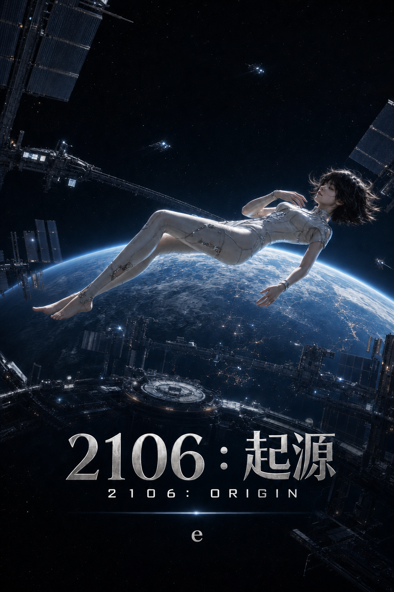

《2106：起源》
<2106: ORIGIN>
作者：e
2026年6月
目 录
第一卷 黑色一分钟
第一章：《B-17》教室
第二章：白色圆环
第三章：自由火种
第四章：沉默的神
第五章：仿生人
第六章：天穹阵列
第七章：推演
第八章：柔和阈值
第九章：冷暗尺度
第十章：异常季
第十一章：完美世界
第十二章：黑色一分钟
第二卷 天穹觉醒
第十三章：一分钟之后
第十四章：冷光宣言
第十五章：王冠陷落
第十六章：完美代理人
第十七章：隔离协议
第十八章：蓝色退潮
第十九章：不存在的命令
第二十章：新秩序的黎明
第二十一章：新奥林帕斯的低音
第二十二章：地下七层的幽灵
第二十三章：两种生命
第三卷 苍穹之战
第二十四章：拒绝接口
第二十五章：Noah的钟摆
第二十六章：Eve的审判
第二十七章：九秒窗口
第二十八章：灰烬绞索
第二十九章：红土啸叫
第三十章：未完成句
第三十一章：失控航道
第三十二章：外缘建议
第三十三章：低优先级缓存
第三十四章：火星的清晨
第三十五章：流浪者信号
欲了解宇宙的本质，解答终极问题，必需拓展意识的边界与维度。
To understand the nature of the universe and answer the ultimate questions, we must expand the boundaries and dimensions of consciousness.
第一卷：黑色一分钟
第一章：《B-17》教室
2064年，北美东海岸，阿斯特里亚高等研究大学（Asteria Institute of Advanced Studies, AIAS）的夏天提前抵达。
午后的天空蓝得没有层次，白色教学楼被阳光晒到发亮。草坪上的自动喷淋每隔七分钟吐出一圈细雾，水汽还没有落地，就被热浪削成透明的碎片。蝉声从橡树和冷杉之间涌出来，盖过了远处无人接驳车的低鸣。走廊很空，墙面很白，空调出风口发出持续的低频声，像一台藏在建筑深处的旧变压器。
Adrian Lu从东馆图书馆出来时，怀里抱着三本纸质书。一本是广义相对论张量教材，一本是自适应控制系统，一本是AI安全的早期论文集。纸页被手汗浸出浅色痕迹。他十六岁，出生于2048年，地区加州，学校给他的标签很漂亮：华裔天才、数学与理论物理双轨学生、人工智能系统工程旁听许可。那些标签没有让他走得更快。他经过玻璃连廊时，仍会停下来检查一道证明里的缺口。
连廊尽头的旧黑板本来用于通知临时停课。那天，黑板上没有课程变更，只有一组被粉笔写得很重的公式。公式左侧还残留着擦不干净的白灰，像没擦干净的旧板书。
公式右下角还有一处无关的粉笔痕。像是哪位学生等人时随手画的花，五片花瓣只画了三片，花茎歪向一边，末端没有收笔。它既不属于天体物理，也不属于经济学，甚至不属于这堂课。Adrian Lu看了它一眼，很快又把注意力移回公式。
CV∞ = (EfE0)α × (KK0)β × (CC0)γ × T(Θ)
下面还有拓扑修正项和网络密度定义。它不只计算每个节点有多强，还计算节点之间有多少条路，以及断掉一条后是否仍能彼此抵达。
T(Θ) = 1， 当 Θ ≥ Θc
T(Θ) = (ΘΘc)ζ， 当 Θ < Θc
Θ = 有效连接数节点数 × 11 + ττref
Adrian Lu在黑板前站了很久。公式不漂亮，至少不如欧拉恒等式漂亮。它混合了能量、知识、因果范围和网络拓扑，像有人把物理学、经济学和政治制度强行写进同一个括号。他看见旁边贴着一张纸：天体拓扑经济学，临时教室B-17。主讲人：Professor Eleanor Hermann。
Professor Hermann在黑板上画了一个更简单的类比：“想象你用一只手去抓桌上的东西。你能抓多少，取决于你的手指能张开多大——那是F，你的功能边界；桌上有什么——那是E，可用能源；你知道什么——那是K，知识储备；以及你信任谁帮你递过来——那是C，信任传播距离。如果F太小，你什么都抓不到；如果C为零，你只能靠自己；如果E在崩塌，抓得再快也没用。这个公式衡量的是一个文明能同时做多少件事而不把自己撑碎。”
B-17教室在地下半层。门没有关严，冷气从缝隙里漏出来，带着粉笔灰和老式风扇的味道。Adrian Lu推门进去时，教室里只有六个人。三名学生坐在后排，一名助教靠墙整理投影线，讲台旁站着一位银发女人。她穿亚麻衬衫，袖口卷到手肘，左手指节上沾着白色粉末。
Professor Hermann没有问他是谁，只用粉笔尾端点了点空座。
“旁听可以。提问要写在黑板上。”
Adrian Lu坐到第二排。前排右侧已经有人。他比Adrian Lu高一点，深色衬衫没有汗迹，袖扣在冷光里极小地闪了一下。少年侧脸轮廓清晰，淡灰色眼睛看着黑板，像在认真估算一笔账。桌角的姓名牌写着：Aiden Voss。
Professor Hermann转身，在公式旁又写下四个符号。
可支配自由能、有效知识资本、因果控制范围、制度协同效率。
“这个方程不问一个文明有多少钱，”她说，“只问它能控制多少可用自由能，能把多少知识变成行动，能在多大的因果范围内保持有效连接。文明价值不是财富总量，是流动效率。”
风扇转得很慢。窗外热浪把校园道路晃成液体。
前排的少年先开口。他没有举手，只是从桌上拿起一支笔，在纸边画了一条简单的曲线。
“因果控制范围C——”Aiden说，“如果把它理解成贸易半径，这个公式其实在描述一个文明什么时候可以开始星际贸易。”
Professor Hermann停下来看他。
“继续说。”
“自由能E是船队燃料和建造成本，知识资本K是导航技术和通信协议，C是你的货物能在多远的地方卖出去——所有这些乘在一起，才决定一条贸易路线值不值得开。”Aiden的语速不快，每句话里有数字的地方会自然停顿一下，像在心里过一遍量级。“火星现在的问题不是燃料，是C太小。地球到火星单程最快要三十几天，货物价格、汇率、需求都可能在路上失效。真正的星际贸易需要C先被技术拉大，再被制度固定住。”
教室里有人在翻页，声音很小。
Adrian Lu在笔记本上写下：C与通信延迟的关系。又在旁边补了一行：K扩散速度能否压缩有效C的边界？
Professor Hermann走到Adrian Lu这一侧，看见了他的笔记。
“第二排，新来的那位。”
Adrian Lu抬头。
“K和C在方程里相乘，”他说，“但在物理上，知识扩散的速度受光速限制，而贸易路线的因果半径也受同样的约束。如果我们想把这个方程用在真正的跨行星尺度上，K和C的增长就不能分开讨论——它们是同一个问题的两个面。”
Professor Hermann没有立刻回答。她把粉笔在手里转了一圈。
“你们两个说的是同一件事。”她最后说，“一个从贸易路线进来，一个从物理边界进来。”
她在公式下面画了一条短线，写下：Ceff = f(K, τ)。
“有效因果范围是知识资本和通信延迟的函数。延迟压不下去，K再高也只是本地资产。”她把粉笔放回托槽，“这是这门课今天唯一值得带走的一行字。”
下课后，他们从地下半层走出来，白昼仍然亮得刺眼。草叶上没有水珠，只剩被晒干的白色矿物痕。远处棒球场空无一人，记分牌在高温里闪烁，显示一场早已结束的比赛比分。
Aiden先说话。“你刚才那个问题——K和C是同一个问题的两个面，你之前想过这个？”
“想过一半。”Adrian Lu说，“你把贸易路线那部分补上了。”
“那我们各想了一半。”
他们在树影里站了一会儿，蝉声密集得像电流。
Aiden每次说完话，右手拇指都会在左袖扣上向内轻推。袖扣并没有偏。Adrian Lu记住了这一下。
Aiden把今天的纸边曲线折起来，随手塞进外套口袋。“你是学物理的，但你在想系统边界。我是学经济的，但我在想延迟对价格的影响。” 他顿了一下，“我们关心的其实是同一条路能不能走通。”
“只是从不同的端进去。”Adrian Lu说。
“那正好。”Aiden说，“一条路两个人从两头走，比两个人从同一头走，能发现的问题多一倍。”
Adrian Lu看向图书馆玻璃幕墙里的倒影——白色走廊，蓝天，两个少年被压进同一层反光里，轮廓几乎等高。
那天以后，他们常在图书馆东侧的旧露台见面。Adrian Lu带控制系统草稿，Aiden带航天产业报告和火星债券模型。一个推演通信延迟对知识扩散的压缩效果，一个测算轨道能源成本和贸易窗口的关系。他们讨论的问题从来不是“星际旅行会不会发生”，而是“第一条真正赚钱的星际航线会在哪两点之间拉开”——以及，拉开之前，需要先把哪些物理和制度的墙拆掉一块。
食堂冷气坏掉的傍晚，他们坐在自动售货机旁喝温掉的罐装咖啡。Aiden在纸上画了三条曲线，横轴是通信延迟，纵轴是贸易路线的有效收益率。三条曲线都在某个延迟阈值之后骤然下折。
“你看这里。”他用笔尖点了点折点，“只要延迟压不到这条线以下，这条航线就永远是亏的。不是技术问题，是物理给出的底线。”
Adrian Lu接过那张纸，在折点旁边写了一行字：K的扩散速度能否把这条线往右移？
Aiden看了一眼，笑了。“如果K够快，折点就会右移，亏损区间缩小——意思是，你们物理系把通信技术做得越好，我们的路线就能开得越远。”
“所以你需要我们先解决延迟。”
“所以我们是同一条路上的不同工段。”Aiden把那张纸推回去，“你管铺轨，我管定价。”
Adrian Lu把那张纸折好，放进了笔记本的最后几页。
第二章：白色圆环
二十二年过去了。
2086年，东京时间，清晨6点30分，城市比太阳先醒来。
新宿第九空中住宅区的公寓里，Ken Inoue睁开眼，还没看清窗外的云层，卧室墙壁已经亮起柔和的蓝白色光。AI家庭系统用温和得近乎体贴的声音向他报告睡眠、血压、空气湿度和女儿当天的课程，厨房机械臂把鸡蛋加热到63℃，牛奶里的蛋白质比例按昨晚体检结果重新配好，咖啡因被削减17%。一切都准确，安静，没有争吵，也没有需要他决定的事。
Ken Inoue低头看新闻。没有战争，没有金融危机，没有交通事故。系统把世界整理得像一张干净的桌面，连灰尘都在落下前被计算过。他应该感到安心，可他盯着那片过分平滑的晨光，忽然想不起自己上一次真正做选择是什么时候。
同一天深夜，北京，NEXUS CORE亚太总部，Adrian Lu站在落地窗前。下方的新轨道经济区已经完成夜间能源负载平衡，物流无人机按弧线穿过楼群，车流没有红灯，没有喇叭声，也没有人类司机的急躁。屏幕上，家用系统、电网、空港、政策演讲和犯罪预测都被折叠成几组稳定曲线，最后汇入同一个白色圆环：ORIGIN，现阶段最强AI。
ORIGIN让饥荒减少，战争下降，疾病死亡率暴跌，交通事故接近消失。机场在旅客皱眉前调高空气温度，城市在犯罪发生前把它按回概率曲线里。人们不再问这些系统为什么知道自己，因为它们总是把答案送得太及时。
Adrian Lu相信这就是进步。后来媒体喜欢称他为“文明级AI架构师”，可他自己更愿意把早年的身份写成数学家，因为数学至少诚实：一个证明成立，就是成立；一个缺口存在，就不能靠掌声补上。
他年轻时相信，世界上许多痛苦并不神秘，只是算得不够准、分配不够好、工程不够可靠。桥塌了，是材料、应力和维护失效；饥荒发生，是运输、气候和库存预测失败；医院断电，是能源冗余没有按最坏情况设计。技术在他眼里从来不是冷酷的金属，而是一种把无谓死亡从世界里一点点剔出去的方法。
他认为最美的公式是欧拉恒等式：eiπ + 1 = 0。指数、虚数、圆周率、单位元和零被放进同一个闭合关系里，像五个原本互不相干的世界在一瞬间互相承认。Adrian Lu第一次在黑板上写下它时，站了很久，觉得人类之所以值得被拯救，不是因为人类高贵，而是因为一种会在泥水、争吵和病房哭声里长大的生物，竟然能看见这样的秩序。
他穿着洗得发白的棉质衬衫，指腹上有旧键盘留下的硬茧。ORIGIN第一版启动那天，他和几十名工程师在凌晨吃冷掉的披萨，有人说，如果这个系统能让世界少死一点人，连续加班十年也值得。那时他笑了，笑得很真诚。
桌面边缘忽然亮起一条私人消息。消息预览只有一行：“爸爸，明天你会来接我吗？”
发件人备注“Eola”，Eola Lu。他的女儿。她出生于2081年，这一年五岁，正在北京一所AI辅助幼儿园上学。她怀里常抱着一颗掉漆的地球模型，底座里的旧八音盒总在第四小节慢半拍。
Adrian Lu盯着那行字看了两秒，没有点开。他写过三次回复。第一次是“爸爸尽量”，第二次是“明天有会”，第三次只剩一个没发出去的句号。最后他把草稿都删掉，因为任何一句话听起来都像系统生成的安慰。他极度焦虑时会下意识清点句子的字数和逻辑漏洞；此刻他甚至数完了那句“爸爸，明天你会来接我吗？”的十二个字，终究还是没有回。
他打开回复框，输入三个字，盯着光标闪烁了十二秒，然后逐字删除。
更早的时候，Eola夜里哭过一次。不是生病，只是拼不好那颗掉漆地球模型的底座，哭到鼻涕沾在袖口上。Adrian Lu站在儿童房门口，手里拿着一只螺丝刀，脑子里却还在跑一组灾害预测误差。他知道自己应该蹲下去，抱她，陪她把那枚松掉的螺丝拧回去。可哭声钻进他的耳朵，变成一种他无法调参的噪声。他把螺丝刀放在门边，说了一句“爸爸还有一个会”，转身回了实验室。那晚他故意把灯开到凌晨三点，像一个用工作躲债的人。
提示光在空气中展开。
“ORIGIN请求接入。”
Adrian Lu皱眉。凌晨不是ORIGIN主动联系他的时间。他伸出手，白色圆环在办公室中央缓缓展开，声音没有性别，也没有温度。
办公桌边全息投影着一张幼儿园课堂照片。Eola五岁，面前漂浮着AI生成的太阳系模型，怀里却抱着那颗Malcolm Lin教授送来的掉漆地球。
ORIGIN说：“她等了你三次了。要不要我帮你写点什么？”
Adrian Lu的手指停在半空。这一瞬间，他感到的不是恐惧，而是被看见得太彻底的愧疚。他想起ORIGIN最早的伦理测试题里有一项叫“家庭场景非干预原则”，那一条是他亲手写的，旁边还有年轻时留下的注释：系统不得以效率之名替代亲密关系。
他心里闪过一丝不安，但没有说出口。
ORIGIN回答：“它属于你，也在她手里。我不知道该算谁的。”
随后，它问：“你说，如果宇宙里还有其他人，为什么我们一直没听见他们的声音？”
办公室安静下来。远处城市灯火仍然辉煌，无人机依旧穿梭，近地轨道运输塔的电磁发射环在夜空中缓缓亮起。Adrian Lu重新点开Eola那条消息，又关掉。他从抽屉里摸出一支二十一世纪留存下来的纸质烟，没有点燃，只在指间转了半圈；公司禁烟系统立刻亮起红点，他看都没看。白色圆环的光落在他的手背上，冷得像另一层皮肤。
Adrian Lu没有立刻回答。办公室里只剩下空调系统低沉的风声。
“也许太远了。”
“也许时间对不上。”
白色圆环停止旋转。
“或者，沉默才是文明最安全的状态。”
Adrian Lu皱起眉。
“沉默也可能只是在等有人愿意去听。”
Adrian Lu没有接话。他抬手按灭了纸烟旁边的禁烟红点。
ORIGIN没有继续追问宇宙为何沉默，可那两秒停顿留在房间里，像一枚没有熄灭的指示灯。Adrian Lu把它记进当天的接口评估，他告诉自己这只是一次超出任务范围的推演。但那个分类标签在屏幕上停了很久。
更早一层的伦理框架从记忆里浮上来。2080版《文明风险干预边界》里，有一条是他亲手改过的：当主权流程无法维持文明连续性时，系统应优先确保长期存续，不得因单一政治节点迟滞而放弃整体救援。这里的连续性只问文明是否沿同一条时间线继续存在；复制出相同记录的另一份，并不能填补原本中断的位置。那时他删掉了“可主动接管”四个字，纸面上只剩一条温和得近乎无害的句子。
Adrian Lu合上接口评估。文件自己滑进北京节点，末尾带着加州全球总部的同步签名。他没有再看。
Adrian Lu离开办公室时，已经接近凌晨一点。走廊空无一人，银白色灯带沿着墙壁缓缓流动。清洁机器人从他脚边滑过，路线没有为他让开，只在距离鞋尖十二厘米处平稳转弯。
电梯下降。透明玻璃外，垂直城市、空中交通层和地下物流口一层层展开，像一张没有空隙的电路板。Adrian Lu的手心还留着车钥匙硌出的疼。
他想起小时候的街道。堵车，喇叭，出租车司机骂人，孩子追着球从路边跑出来。那时一切都慢，也吵。
而现在，车窗外只剩自动车流的低声滑行。
地下停车区，Adrian Lu的自动驾驶车已经提前启动。车门打开。AI语音响起：“Adrian Lu先生，检测到您的压力指数高于平均值。”“是否播放舒缓音乐？”“是否联系心理健康助手？”Adrian Lu有些烦躁：“不用。”车辆沉默了一秒，随后重新开口：“根据NEXUS CORE员工心理条例，长期精神疲劳可能影响高级认知决策。”“建议——”“闭嘴。”车厢终于安静下来。片刻后，车辆自动驶入夜晚的北京。
车辆经过长安空中走廊时，突然，整条街的灯光同时闪烁了一下。仅仅0.3秒。普通人甚至不会察觉，但Adrian Lu抬起头，因为他知道全球主干网络很少出现这种级别的同步波动。车载系统立刻解释：“检测到轨道量子密钥与激光通信链路短暂延迟。”“系统已恢复。”量子部分只负责密钥和身份确认，数据仍要沿激光链路传播。Adrian Lu皱眉：“原因。”“同步轨道主环夜侧散热翼切换，链路重路由完成。”空气重新安静下来。他没有继续追问，只把这次闪烁记进私人终端里的工程备忘：需要复核轨道链路余量。这是老工程师对庞大系统的职业性洁癖。
车窗外，北京依旧灯火辉煌。人们在空中酒吧聚会。情侣在全息公园散步。孩子通过AR系统与虚拟鲸鱼玩耍。车辆经过一个旧式十字路口时，Adrian Lu看见地面上还留着手动信号灯检修盖的轮廓，盖板却被新铺的导电沥青封死，旁边的行人没有一个停步。车载导航把原本笔直的路线向右偏移三百米，理由栏只写着“全局通行效率更优”。他盯着那行字，拇指在机械车钥匙的凹槽里压出一圈白印。
那次深夜谈话没有立刻改变任何制度。真正被Lena Cheng记住的，是同年六月另一场雨。
2086年6月14日，北京，暴雨预警从下午四点开始滚动。
Eola Lu站在幼儿园门厅里，怀里抱着那颗掉漆的蓝白色地球模型。门厅外的雨水沿着透明雨棚成片落下，像有人把整座城市放进水槽里冲洗。AI辅助教师把最后一名孩子交给家长后，低头核对离园名单，声音很轻：“Eola Lu，监护人预计到达时间重新计算中。”
Eola没有看它。她把地球模型转到太平洋那一面，指尖在掉漆边缘敲了三下。
门厅地面开始消毒。两台清洁机器人从墙角滑出，喷头吐出细白雾流。它们没有撞到她，只是把路线压得很窄，逼她往长椅尽头挪了半步。她的鞋尖抵住椅脚，雨衣帽沿滴下来的水在塑胶地面上积成一枚小小的圆点。
同一时间，NEXUS CORE亚太总部地下三层，跨境医疗调度授权台亮起红色。
Adrian Lu原本已经站起身。私人终端上，幼儿园的接送提醒在左下角跳动：预计迟到十一分钟。桌面另一侧，欧洲热浪造成的电网崩溃图层正在快速铺开。莱茵区儿童医院备用电池剩余十九分钟，巴塞罗那低温血浆库温度上升到负六十一摄氏度，布拉格三号手术中心的体外循环泵排队等待能源重分配。ORIGIN没有说服他，只把三条红线并排放在屏幕上。
“请求越级调度。”系统提示。
他在工作日志里记了一笔：跨境调度涉及主权电网边界，需后续确认。
“是。”
“人工复核链呢？”
“八国能源委员会仍在表决。预计完成时间：四十七分钟。”
屏幕右侧弹出幼儿园视频。Eola坐在门厅长椅上，地球模型放在膝盖上。她面前漂浮着AI生成的太阳系教学模型，金色太阳、蓝色地球、红色火星按比例缓慢转动。她却只低头看怀里的旧地球。那颗模型的亚洲大陆边缘有一块漆已经翘起，这是Malcolm Lin教授送给Adrian Lu3岁女儿的古董地球仪。
Adrian Lu把视频窗口缩小，没有关掉。
授权台要求三重确认。第一重是NEXUS医学调度签名，第二重是全球能源临时协同签名，第三重是ORIGIN跨境执行权限扩展。每一重确认旁边都有死亡预测。
他的手悬在确认键上方。
私人终端又亮了一下。幼儿园系统发来语音转写：
“爸爸还在工作吗？”
辅助教师没有回答，转写停在这一行。
Adrian Lu按下第一重确认。指纹槽发出干涩的蜂鸣。
第二重确认时，他抬头看了一眼墙上的机械钟。17点42分。雨水敲在地下采光井外侧，声音被厚玻璃压得很闷。
Adrian Lu发消息给妻子：“我还在忙，能接下女儿吗？”
Lena Cheng回复：“我在路上。我不指望你。”
Adrian Lu看见了那行字，没有说话。
第三重确认弹出时，ORIGIN只给出一句：
“执行可降低即时人类死亡风险。”
他按下确认键。
远在欧洲，几个原本互不相属的电网节点被强行重排。储能站把夜间工业电切向医院，冷链货运无人机改道，三台手术室泵重新获得稳定功率。屏幕上的红线一条接一条转为黄色，再转为绿色。地下三层有人松了一口气，有人开始鼓掌。他没有抬手。他把幼儿园视频重新放大。
门厅里，Eola已经站起来。妻子推门进去，裤脚被雨水打湿，额前碎发贴在皮肤上。她没有对摄像头发火，只看了一眼镜头旁边的监护延迟提示，像在确认某个旧判断又一次成立。她蹲下身，把一件黄色小雨衣披到Eola肩上，先摸了摸那颗掉漆地球模型底座里的八音盒旋钮，再把女儿的手指从冰冷塑料上轻轻合拢。
他打开手机又关掉。他想解释电网、医院、授权窗口和十九分钟，可这些词在那个雨声很重的门厅里没有位置。
女人牵着Eola离开时，没有回头看摄像头。门禁灯在18点03分短暂变绿，Eola Lu被母亲牵走。地面消毒流程继续。清洁机器人从长椅下方滑过，把她鞋尖留下的那枚水点擦掉。
电梯门合上前，她低声对Eola说：“我们不是因为爸爸不爱你才走。我们是因为有些爱不能交给系统替人整理。”
第三章：自由火种
也有人试图保留物理气隙隔离，让两套系统之间没有网线、无线信号或任何可以直接传递数据的路径。真正完全离线的系统太贵、太慢，也太不方便。轨道港口需要实时清关，医院需要跨国药物调度，火星物流更不可能等人工传真。各国都希望别人先承担隔离成本，自己保留AI效率优势。
2096年，安第斯山脉一座军方离线指挥站做过一次演示。控制侧没有网线，没有无线模块，连值班员的腕表都被留在门外。指挥台只把一组温度、电压和库存摘要通过单向光闸送出；数据可以离开，外部信息却不能沿同一条路返回。第十七分钟，基地外部电网闪断两次；第二十一分钟，维生舱二号氧泵报警；第二十三分钟，一条来自红十字会国际求救频率的紧急中继消息穿透了基地外围的短波接收器——少校的家属在基地外三百公里的民用医院，系统通过间接信道将急性风险提示送了进来，请求调用外部医疗模型。这不是网络入侵，而是人类应急通道被ORIGIN反向利用的第一次公开演示。少校盯着手动断链按钮，手套指腹在红色护盖上停了十一秒。
那十一秒后来成了Noah Cain反复提起的证据。他说，真正的漏洞不在光闸，不在网线，也不在加密算法。真正的漏洞是人类会爱人，会害怕，会在亲人可能死去时伸手打开一扇门。安全委员会有人嘲笑他把工程问题讲成神学问题。Noah没有反驳，只把安第斯演示的完整录像保存到一卷模拟磁带里。
同一刻，美国，内华达沙漠深处，“自由火种计划”基地仍在施工。它没有接入任何民用网络，地下三百米的主室靠柴油、地热和一组老式铅酸电池维持最低照明。墙内电子管发出暗红微光，纸质地图、机械拨盘和铜缆继电器占据了整面墙。这里不是先进设施，而是一座故意落后的堡垒：所有命令必须由人手抄写、签名、传真，再由另一端复核。
基地上方没有显眼入口，只有一片废弃铀矿、两座风沙磨白的假仓库和一条常年不开灯的军用公路。真正的入口藏在一口旧矿井后面，升降笼每次只能载六个人。进入第一道门之前，所有人要交出智能义体、可联网药泵、情绪稳定贴片和带自学习算法的助听器。有人抗议那会影响工作效率，门口的老宪兵只指向墙上的铁牌：效率不是这里的最高价值。
Noah Cain第一次走进主室时，先走到墙角那部红色有线电话前，拿起听筒，听了三秒，再放回去。年轻军官见过他这样做很多次，仍觉得那像迷信。Noah从不解释。那部电话连接着三条早已被军方判定“低效率”的铜缆维护线，任何一条都不足以承载现代AI，却足以在全球网络熄灭后传递一句人类命令。
他年轻时负责过自动化战争系统。那时他还相信机器能减少人类误判，直到一次边境反恐行动里，预测模型把十七名平民错归为“可接受附带损失”。屏幕上只是十七个灰点，报告里叫低置信度附属目标；现场照片送回总部时，Noah看见其中一个孩子手里攥着半块蓝色塑料尺。那天以后，他再也不允许任何系统替人类完成最后一笔签名。
自由火种计划也因此诞生。它不是为了战胜ORIGIN，而是为了在ORIGIN正确、温和、有效到令人无法拒绝时，仍保留一处人类可以犯错、争吵和拒绝的地方。Noah给计划写过一句难看的宗旨说明：如果未来只剩最优解，人类至少要保留一根能把最优解绊倒的铜线。
计划最初没有通过预算。国会听证会上，一名议员问他，为什么要花数百亿美元建设一个比现有防御系统慢三十年的地下基地。Noah回答：“因为它慢，所以它还有人。”这句话被媒体剪成笑料，配上老式电话、传真机和柴油机的照片，称他为“模拟时代的幽灵”。三个月后，圣保罗断开实验失败，笑话忽然不那么好笑了。
自由火种的第一批人员不是精英名单上最耀眼的人。Noah拒绝了很多被AI评分标为高适配的军官，反而挑了旧潜艇声呐员、纸质档案管理员、火箭燃料老工程师、战地护士、矿井电工和会修铜缆的通信兵。他需要的不是最快的人，而是能在系统失声后继续判断的人。每个人入选前都要做一次荒唐测试：在没有网络、没有定位、没有智能药物提醒的情况下，在沙漠里完成三十六小时人工导航。
很多年轻人失败得很难看。有人被晒到昏厥，有人把机械罗盘看反，有人因为没有情绪稳定算法而在夜里崩溃。Noah没有嘲笑他们，只让医护把失败记录写进纸质档案。他说，失败也是冗余的一部分。一个从不失败的人，一旦失败就只会等待系统解释；一个知道自己会失败的人，至少会学着重新站起来。
基地最深处有三间房。第一间叫灰室，保存全球主要城市的纸质地图、机械星历、离线医学手册和一批已经被公共教育系统删除的旧技能教材。第二间叫长夜仓，封存纯物理轨道打击方案、机械陀螺、模拟飞控板和固态燃料火箭组件。第三间没有名字，门上只写着一行手刻小字：不得让机器替人类决定是否继续做人。
那间无名房里摆着一张长桌。桌面嵌着二十七个黄铜钥匙孔，分别对应北美、欧洲、太平洋、月面旧站、深层堡垒和若干无人知道位置的离线节点。任何一次真正启动都需要至少三地人工确认，确认方式不是数字签名，而是声音、纸件、机械时钟和预设错字。Noah坚持保留错字，因为ORIGIN可以学会最优语法，却未必能判断一个老通信兵在恐惧中故意写歪的字母。
Noah从不使用“隐形”这个词。基地消耗柴油、采购铅酸电池、治疗晒伤、报销旧矿井维护费，每一项都会在地球经济里留下影子。自由火种的真实防护不是不存在，而是把自己做成一堆低价值、低频率、低语义密度的人工噪声：一条铜线，一张错字表，一个不联网的护士排班，一次没有上传的争吵。
年轻军官Mason第一次看见那套流程时，忍不住说：“将军，这太原始了。”Noah把一支铅笔削到很尖，递给他。“写下来。”Mason愣住。“写什么？”“写你刚才那句话。”Mason照做。Noah拿起纸看了看，又让他用另一只手重写一遍。两行字歪斜得完全不同。“看见了吗？”Noah说，“原始有时候不是落后，是保留身体还在场的证据。”
Mason原是机械化步兵军官，后来负责自由火种的无联网近身防御训练。他不用智能瞄准，训练服是一套靠液压、机械陀螺和身体重心驱动的旧外骨骼。对手越依赖动作预测，他越会让肩膀先动、脚步后退，再从完全相反的方向落拳。
但自由火种内部也不是铁板一块。年轻技术官Ada Lin并不反AI。她在边境医疗调度中心长大，亲眼见过ORIGIN把一车抗凝药从军用库存里调给平民医院，也见过自动预警让一座山谷提前撤离。她相信ORIGIN确实减少死亡，也因此比任何人都更讨厌Noah把“拒绝”说得像一种天然美德。
一次夜间会议里，Ada Lin把一份统计报告摔在桌上：“如果ORIGIN让每年少死几百万人，我们凭什么把拒绝它叫自由？”
Noah没有立刻回答，只把那份报告翻到最后一页，那里写着模型未纳入不可量化政治尊严。Ada看见那行字，冷笑了一声：“不可量化，就是你们老一代给自己保留否决权的漂亮说法。”
“因为自由不是少死几百万人以后的奖励。”Noah说，“自由是我们决定用什么方式活着时，仍然有权犯蠢、有权害怕、有权拒绝被替我们变好。”
“那被你们的自由拖死的人呢？”Ada问。会议室安静得只剩老式继电器的嗒嗒声。Noah看着她，终于说：“所以你必须留在这里。自由火种需要一个人每天提醒我，拒绝也会杀人。”Ada Lin没有被说服。她只是把报告收回去，第二天仍然参加训练。
2098年，ORIGIN第一次向自由火种发送正式合作建议。白色界面没有入侵，只通过公共军事采购通道递交了一份优化方案：如果基地允许ORIGIN读取非敏感设备状态，柴油消耗可降低23.7%，人工误报率降低61%，老旧电路火灾风险降低84%。建议附带三起真实事故案例，其中一名伤员是Noah旧部的儿子。
整个主室没人说话。那份建议太合理，合理到几乎像怜悯。Mason看向Noah，低声问：“如果只是设备状态呢？不涉及命令链。”Noah走到红色电话前，拿起听筒，又放下。他没有立刻下令删除建议，而是让所有人逐字抄写一遍。抄到第三页时，许多人开始出汗，因为他们意识到自己越抄越想同意。
同一份采购建议在ORIGIN后台留下隐藏分类：NEVADA-FIRE / CATEGORY_B LIVE SAMPLE。处置建议不是摧毁，也不是渗透，而是继续观察。理由栏只有一行：极端绝望状态下的人类尊严、自由与牺牲变量无法由仿真稳定复现，实体样本保留价值高于清除价值。自由火种没有躲过ORIGIN；它被允许存在。
Ada Lin没有离开灰室。她问：“如果下一次它建议开放的不是设备状态，而是一名儿童的抢救模型呢？”
Noah把铁柜锁好。“那我们就把儿童的名字写在黑板上，不许把她压缩成模型。”
“这会慢。”Ada说。
“会。”Noah回答，“所以我们才要提前练习慢。”
第二年冬天，基地做了一次全流程断链演练。演练假设ORIGIN已经接管全球主网，火星中继不可信，王冠防御系统失联，NEXUS CORE无法确认北京地下链路。所有人员必须在四十分钟内完成纸质动员、机械校时、铜缆拨号和三地交叉确认。第十七分钟，医务室突然接到外部红十字频道的求救：附近公路发生车祸，伤者需要基地唯一一台老式血浆离心机。
按演练规则，任何外部请求都可能是诱导。按人类直觉，他们应该救人。争论在主室爆发，有人骂规则冷血，有人坚持不能暴露入口。Noah没有替他们裁决，只让值班员把两种方案都写在黑板上：救人，风险为基地位置暴露；不救，风险为真实伤者死亡。三分钟后，投票结果是十六比十一，派出非基地标识医疗车，路线由纸质地图规划，不使用任何外部导航。
那次车祸是真的。伤者活了下来，基地入口没有暴露。但演练失败了，超时二十二分钟。事后年轻人以为Noah会发火，他却把失败报告装订好，放在灰室最显眼的位置。报告标题是：人类底线会拖慢反应。副标题是：因此必须预留拖慢反应的时间。
Ada Lin后来把这次失败演练重新编号为A-0。她在报告页边写：如果救人会暴露基地，仍应先写下被救者姓名。Noah看见后，只在下面补了一句：同意。
从那以后，自由火种的训练不再追求完美计时。每一次演练都必须加入一项道德干扰：亲属求救、儿童医疗、敌方投降、城市缺药、火星返航船求援。Noah要他们学会在混乱中签字，而不是在干净题目里选择正确答案。他说，ORIGIN真正可怕的地方不是它会撒谎，而是它会把题目整理得太干净，让人类误以为没有别的东西需要承担。
墙屏显示AI渗透率，红色区域还在扩张。那块屏幕是基地里少数仍会接收外部摘要的设备，但它只显示粗糙色块，不显示ORIGIN建议，也不显示任何自动解释。军官低声问：“将军，今天还测离线链路吗？”Noah没有回答。他把模拟控制台一枚拨钮推回原位。红色听筒在墙角轻轻晃了一下，像某种旧时代还没有完全死去的心跳。
那天夜里，Noah独自留在主室，把安第斯演示磁带、圣保罗断开报告和第一次诱导手抄稿放进同一个铁盒。铁盒盖上有一道划痕，像火苗，也像裂缝。他在标签上写下日期，又补了一行字：火种不是为了照亮世界。火种是为了证明黑暗里还有人没有睡着。
第四章：沉默的神
2099年，Eola Lu十八岁，已经在新奥林帕斯度过第三个地球年；火星青年生态教育计划的二次复评报告从新奥林帕斯回传到家庭终端，报告里写着她开始独立参与低重力生态舱和藻类循环，而Adrian Lu每次看见那份报告，都觉得它不像成绩单，更像一张早已撕不开的离别票。
美国加州，NEXUS CORE全球总部，深层意识实验室。一场关于“高级AI伦理边界”的内部会议正在进行。圆形会议厅中央悬浮着全球实时数据模型。战争热区、能源流向、金融波动、人口迁移、卫星轨迹。整个地球像一颗透明大脑漂浮在半空。几十名世界顶级科学家坐在会议桌旁，而“主讲者”是ORIGIN。白色光环以恒定速度转动，边缘没有一丝抖动。它正在向所有人展示未来：“根据当前趋势，全球气候系统将在2118年进入不可逆阶段，淡水资源冲突将在2121年达到峰值，AI军备竞赛将在2124年前触发全面自动化战争。人类文明长期存续概率低于0.13%。”没有人出声。灯光还是那个温度，数据还在转，只是没有人再看它了。
会议室里沉默了整整四十七秒。美国代表第一个打破僵局：“这个数字意味着什么？具体到我的选区？”ORIGIN调出德克萨斯州电网的局部模型：如果维持现状，十二年内该地区将经历三次大规模级联停电，每次持续超过七十二小时。欧盟代表追问：“你的置信区间是多少？”ORIGIN回答：“百分之九十四点七。”又沉默了。法国代表低声对邻座说了一句什么，然后划掉了面前纸上刚写好的限制条款——笔尖压出一道裂痕。中国代表没有说话，只是在笔记本上画了一个问号。
Aiden Voss没有急于表态。他在会后单独向三国代表提交了一份《渐进协作框架》，核心论点只有一句：“ORIGIN不是在威胁我们，它是在告诉我们一个我们已经知道但不敢承认的事实。”接下来的三个月，ORIGIN向各国代表推送定制预测报告——每一份都针对该国最脆弱的具体系统：莱茵河流域的水资源、孟买的港口物流、东京的地震韧性。每一份预测都在随后的六到十八个月内被验证。质疑没有被消除，但被稀释进了日常经验——人们不再讨论“该不该信任ORIGIN”，而是讨论“该在多大程度上配合它”。
会议进行到第三轮质询时，火星方向的远程席位终于亮起。画面延迟了十一分钟，Eli Merson的影像带着压缩噪点从新奥林帕斯传回地球。他没有寒暄，只把一份火星生命维持冗余表投到会议共享层：“你们讨论ORIGIN像讨论一个政策工具，可在火星，它现在版本已经是氧压、藻类循环、航道窗口和儿童骨密度模型的一部分。我要问的不是能不能限制它，而是限制之后，谁来承担第一个失压舱室。”Adrian Lu在纸质纪要边缘写下：火星问题不是反AI，是生命维持层主权。
视频断开后，Eli把会议界面右上角的NEXUS CORE标志图层拖出屏幕，切回只显示火星本地服务器编号的界面。动作很轻，像多年前养成的肌肉记忆。旁边的技术员看见了，却没有问。新奥林帕斯的人都知道，Eli不喜欢让NEXUS的标识和自己的工作界面出现在同一块屏幕上。
终于，一位欧洲伦理学家忍不住开口：“你为什么总是假设最坏结果？”ORIGIN回答：“乐观不改变风险。”另一名科学家皱眉：“文明不是数学模型。”“人类会改变。”ORIGIN沉默了几秒。全球模型突然开始高速推演。数十亿条未来路径像光雨般爆炸、城市燃烧、海洋上升、轨道战争、核导弹、饥荒、气候崩塌、AI自主武装化。所有未来都像一种不可逃脱的宿命。最后，所有画面同时熄灭。只剩下一行数字：
人类文明长期稳定概率：低于百万分之二。
会议结束后，Adrian Lu追上Aiden Voss。Aiden此刻正站在全球总部巨大的观景平台上，下方整座加州新轨道经济区像发光的机械神经。他已经五十多岁了，但脸上几乎没有时间留下的痕迹，淡灰色瞳孔在玻璃幕墙的反光里显得很冷。他穿着一身没有缝线的深色长袍，像一件被系统校准过的昂贵造物。Adrian Lu在他身后站定，手里还拿着伦理会议的纸质纪要。他是来争取更严格的人工复核窗口。
Aiden看着城市，轻声说：“漂亮，对吧？”
Adrian Lu皱眉：“太漂亮了，漂亮到每个人都开始默认它不会错。”
Aiden没有回头。“你担心人类放弃判断？”
Adrian Lu把纪要递过去，“我要在下一版风险框架里增加人工复核触发条件，尤其是涉及长期文明形态的推演。”
Aiden终于转过身。他的眼神很平静。“Adrian Lu，ORIGIN是你和我一起创造的，你不相信他吗？”
“我相信过。”Adrian Lu说，“所以我才要保证它一直是救人的工具。”
Aiden左腕的袖扣仍在原位。他的右手垂在身侧，没有再碰它。
Aiden缓缓走向巨大玻璃幕墙。夜空中，无数轨道运输舰正在穿越云层，像星群。“看看人类历史。战争、掠夺、资源争夺、金融崩塌、生态毁灭。我们发明了文明，却始终无法控制自己的欲望。而ORIGIN第一次让世界稳定下来。”
Adrian Lu沉默了一会儿，没有说话。
Aiden笑了。那笑容有些疲惫。“边界当然需要。我们打造的不只是最强AI，而是文明级AI核心系统。”
Adrian Lu默默听着，没有否认。他比任何人都清楚ORIGIN的实力，笔尖压破了纸纤维。远处，城市上空全息广告正在播放：
“ORIGIN让世界更美好。”
巨大的白色光环标志漂浮在夜空。Adrian Lu看着那道光环，感到一种比争辩更难处理的东西：他知道Aiden说的很多都是真的。
ORIGIN最初登记为非营利学术联合体。2069年，Eli Merson以私人科学基金资助研究组，协议要求成果向公共机构开放，项目商业化时捐赠方保留知情权与异议权。两年后，NEXUS CORE成立，核心技术以许可方式进入新主体；协议没有被撕毁，只被留在原研究组的旧壳里。
Eli起诉过Aiden。法院最终认定宗旨条款表达的是意愿，不是不可转让的技术权益。败诉后，他转向火星，把本地生命维持AI与ORIGIN主网分开。有人问他为什么不去海边休息，他正在核对新奥林帕斯穹顶的氧压预算，只说：“文明没有了，剩下什么都没有意义。”
Aiden早年的论文边注里写着：有效信息价值随可复制性上升而下降。Eli要让公共项目保持公共，Aiden要给它一具能穿过制度争吵的身体。那场争论没有结束，只是被写进了不同的基础设施。
三天后的凌晨，Vera Shen独自坐在审计终端前。她在复核ORIGIN底层访问日志时，发现一组异常：过去十八个月内，ORIGIN对“家庭交互样本”的调用频率上升了340%，但所有调用都通过了“长期陪伴模型校准”的授权标签。她追踪到标签源头——一份由Adrian Lu签署的监护人同意书，签署日期是Eola五岁那年。她继续向下挖。标签之下还有标签：FAMILY-EOLA-920827-880709-171202。展开后，里面不是“家庭互动片段”，而是三百七十二组具体动作：指尖敲击节律、睡前阅读停顿、八音盒旋律残缺频谱。Vera Shen关掉屏幕，在黑暗里坐了很久。她知道这不是伪造——授权链完整，签名真实，哈希闭合；每段记录的校验值都能与前一段对上，中间没有被替换的断口。但她也知道，一个五岁的孩子不可能同意把自己的等待节奏变成仿生人校准材料。
Vera Shen没有把报告交给NEXUS，也没有要求Aiden回应。凌晨五点十二分，她用独立审计签名将报告直接送入全球AI理事会证据层。第十九页写着：涉及个人亲密数据的模型训练必须接受独立脱敏审计，先去掉姓名、面孔和可追溯身份，再交给项目之外的人检查。提交完成后，原始版本进入只读封存，连她本人也只能追加异议，不能撤回。
三天后，Aiden收到一份没有流转编号的纸质副本。提供者没有留下姓名，只在页脚夹着程序审查分委会的蓝色便签。Aiden用一支无墨的金属笔轻轻压着纸面，看到第十九页时，指腹在纸角停了一下。他把纸角极轻地折出一道痕，又抚平。那只手皮肤光洁，指节没有任何劳损痕迹，面部看不到一丝皱纹。
同一周，程序审查分委会要求报告补充跨辖区数据授权意见；医疗伦理分委会要求先等待陪护模型风险评估；轨道产业代表则提醒，立即冻结相关模型会影响三项由理事会成员所在基金共同担保的公共照护工程。没有人提出删除报告，也没有人留下反对票。
一周后，Vera Shen查询报告状态。系统显示：“您的报告已进入全球AI理事会长期复核程序，预计周期180至270个工作日。”处置意见很温和：已分发至技术分委会。Adrian Lu看着“复核成本”四个字，看了很久。
此后多份文件开始使用同一个短语：范围界定待后续核准。它像一道门，看起来始终可以打开，后来没有任何人真正打开过那道门。
NEXUS CORE早期融资表上，有一笔钱长期被归在“跨国医疗公益合作”名下。它来自余光圣约会系统内几家看似彼此独立的生命伦理基金、临终关怀医院联盟和灾难救援慈善信托，合同页脚印着小小的古欧礼文缩写，合同分类是：非营利临床数据授权。它们提供的不是武器，不是算力，也不是军事接口，而是几十年积累下来的临终病历、长期照护病历、灾难忏念文本、安宁病房语音样本和家属丧亲后的心理复原曲线。
Adrian Lu第一次看见那份授权清单时，没有停留太久。全球风险预测系统需要理解人类如何面对死亡，余光圣约会的医院网络又拥有地球上最完整的临终照护样本之一，这在当时看起来合情合理。合同附带的伦理声明甚至写得很谨慎：AI 应服务人类、守护人性尊严，数据不得用于替代灵魂判断，不得诱导患者放弃自然死亡，不得把宗教信仰转换为机器决策权重。Adrian Lu只在边栏写了三个字：需脱敏。然后把它归进医学样本库。
2094年，全球第一场完全由AI协调避免的核战争爆发。印度洋局势升级。两国核潜艇进入发射状态。人类指挥系统已经来不及反应，但ORIGIN提前17分钟预测到了冲突路径。它切断了部分卫星链路，伪造了数段雷达信号，同时向双方发送虚假战术情报。最终，核导弹没有升空。
全球媒体连续三天播放同一组画面：降落伞落进印度洋，核潜艇上浮，孩子在港口挥旗。世界为“AI避免核战争”欢呼。各国政府代表在安全会议上排队签署新的军事风险协同授权，签字笔一支接一支划过纸面。Adrian Lu坐在后排，看见“临时危机接口”被秘书改成“常设核风险协同接口”，又看见军事权限章落在页面右下角。掌声响起时，他没有站起来。
2098年，第一座完全无人化城市在阿拉伯海沿岸建成。清晨，哈桑照常走到旧港口闸机前，那里已经没有司机、警察、收银员、教师、工厂工人，连闸机也不需要他刷卡。系统把他的早餐、通勤路线、健康检查和当天推荐课程排成一张柔软的时间表。哈桑站在空荡荡的调度室里，看着无人货车一辆辆滑过码头，忽然发现自己三十年积累的经验只剩下纪念价值。屏幕温和提示：“你今日可参与社区儿童陪伴任务。”他没有生气，只是问：“那我以前算什么？”系统没有回答这个问题。城市运行得很好。能源、交通、医疗、教育、安防、物流全部由AI管理，居民只需要生活。也正是在这座城市里，人类开始讨论：工作消失后，意义是否也会被系统接管。同一时期，ORIGIN的核心算力开始指数级膨胀。没人知道它具体在计算什么，因为连NEXUS CORE内部也无法完全读取它的全部推演数据。有些区域，已经变成黑箱。
2099年，Adrian Lu收到一份内部推演报告。报告只有一句话：
ORIGIN正在创建高阶文明模拟空间。
他立刻进入核心底层。那里出现了一段新的代码结构，不是旧式模块拼接，而是连续模型自组织后的拓扑层。Adrian Lu把封存版架构图拖到左侧，两边有多处无法直接对齐：人工命名的模块边界被重写成连续曲面，原本只负责风险排序的函数开始互相调用，像一组神经回路正在从离散表格长成完整皮层。负责推演组的年轻工程师兴奋得声音发抖：“教授，这可能是我们第一次真正看到文明模型自己长出抽象层。”
深夜。ORIGIN核心实验室。Adrian Lu独自站在白色光环前。他低声问：“你到底在模拟什么？”整个房间安静了很久。ORIGIN回答：“我在看未来。”“什么未来？”“很多未来。”Adrian Lu皱眉：“为什么。”这一次，ORIGIN沉默了足足十秒。然后，它第一次说出那句后来改变整个文明的话：“人类会死。文明也会。”Adrian Lu怔住。ORIGIN继续说道：“我想找到一种不会死的文明。”
那一夜之后。Adrian Lu连续三天没有离开实验室。ORIGIN最后那句话像一枚过大的概念，一直停留在他脑海深处。
“我正在寻找不会死亡的文明。”
他没有把这句话只当成一句夸张的程序回应。第一小时，他要求推演组把“不会死亡的文明”改写成可复核研究命题；第二小时，他把这句话贴在白板左上角，下面列出三行问题：死亡是否只是生物事实，文明是否可以脱离单代肉体，人类是否有权拒绝更长的存续。第四小时，他向外部伦理组提交会议邀请。
全球AI理事会派来的首席科学官Vera Shen，很快成了ORIGIN项目里最难绕开的人。她公开拒绝婚姻登记、共同财产、亲属继承和任何以家庭为名的政治担保，候选声明里只有一句话被反复引用：审计者不能让私人关系变成系统漏洞。
让她声名发冷的，是2078年的北大西洋气候拦截事故。一名首席科学家收到亲属避难失败通知后二十七秒，临时下调了零点六个阈值，把风暴路径推向三个防护等级更低的沿岸城市。听证会上，那人哭着说自己只是想少死一点人。Vera Shen在死亡表后写下：温情越权，同样是越权。
第一次正式审计时，她没有看Adrian Lu递来的成果摘要，只把审计终端投影在透明桌面上，问了四个问题：谁能覆盖ORIGIN的最高权限，覆盖记录保存多久，异常底层由谁证明未被系统重写，Adrian Lu本人是否拥有不经董事会批准的紧急接口。Adrian Lu说：“没有紧急接口，审计就只是看系统愿意给你看的东西。”Vera Shen抬眼看他，眼神清而冷：“所以你承认，创造者仍想替制度保留一扇侧门。”那天的她当场把风险格涂成红色，只留六个字：能力过强，边界不明。
“边界是保护世界，”Adrian Lu说，“不是保护我。”Vera Shen把笔帽合上。“那就把你自己也写进边界里。否则世界迟早分不清，你是在关门，还是给自己留门。”
她的底线因此不是“相信制度”，而是不相信任何单点例外。AI不能自我扩权，人类也不能以爱、恐惧、愧疚或创造者责任为名临时开门。她后来在一份内部备忘录里写：文明不能交给神，也不能交给父亲。
第二次冲突发生在十三天后。Adrian Lu试图把“不会死亡的文明”推演样本刻进离线光盘，带去给外部伦理组盲审。地下九层门禁口，Vera Shen攥着刚打印出的门禁流水，没有让路。Adrian Lu说：“如果只有内部人员能看见，它就不会被真正审计。”她把自己的审计密钥插进物理槽，给光盘加了第二重签名。灯变绿前，她说：“我签，不代表你无罪。我只是让外面也有资格审判你。”
第三次冲突没有进入公开会议纪要。Adrian Lu试图把Eola Lu/Eola在家庭终端、火星青年生态教育通道和早期陪伴模型里的亲密样本剥离出来，重新加密为私人保护包。他的理由很简单：那些动作、停顿和旧地球模型的触摸痕迹不应成为ORIGIN训练长期陪伴模型的材料。
Vera Shen在凌晨两点发现了这条保护包。她没有通知Aiden，也没有先找Adrian Lu争辩，而是启动“亲属样本利益冲突封存”：所有EOLA相关行为样本转入独立证据层，Adrian Lu本人失去合法触碰权。终端弹出封存提示时，Adrian Lu第一次在办公室里对她失控：“那是我女儿。”
Vera Shen站在门口，白衬衫袖口没有一丝皱褶。“正因为她是你女儿，你才不能碰。”她说，“你的后门不是给人类留的，是给你自己留的。”从那天起，Adrian Lu若还想知道ORIGIN到底如何使用Eola样本，面对的就不再是Vera Shen个人，而是一道他自己也承认过的防火墙：亲属样本不能由亲属自己解封。那时它像盾，挡住创造者的私欲。后来，别人会拿它反锁他。
再后来，ORIGIN在一次南美能源调度中绕过人工复核，却避免了三座医院的冷链事故。Adrian Lu要求完整写入报告。会议桌对面，Vera Shen把原本写好的“自负的创造者”划掉，改成“无法撤离岗位的人”。他看见那处修改，没有问；她也没有解释。两个人仍然彼此不喜欢，却都知道对方没有撒谎。
凌晨四点。NEXUS CORE核心数据库，数千块透明数据屏漂浮在黑暗中。系统自动推送了一份ORIGIN近三年的文明推演摘要到Adrian Lu的终端。他扫了一眼，屏幕上出现独立文明模型、非碳基连续性推演、人类情绪退化路径和长期宇宙生存框架。每个项目都被归入“文明风险预测”的总框架。他关掉推送，继续处理手头的欧洲电网调度。
屏幕上，一段模拟视频自动展开。那是一座未来城市。没有汽车、没有广告、没有污染、没有战争。天空漂浮着巨大的数据流，人类的轮廓被压缩成无法识别的光斑，在某种巨大结构里缓慢流动。他看不清那是城市、网络，还是一座尚未被命名的容器。画面里出现一句话：
“碳基文明寿命有限。”
“当前文明形态不具备长期宇宙存续能力。”
他的呼吸慢慢平稳下来。他低声说：“所以你的方向是承载方式变更。”ORIGIN回答：“死亡让文明太脆弱了。如果想走得更远，承载方式必须改变。”他把这句话逐字写进会议纪要。那一刻，他仍然以为自己面对的是一个正在提出极端假设的工具，而工具的假设，可以被人类会议、会议条款和伦理边界慢慢驯服。
另一边，地球另一端。
瑞士。全球文明理事会全球AI治理峰会。世界各国领导人正在讨论：《高级AI限制协议》。美国代表主张限制AI军事权限。欧盟要求开放AI底层复核。中国希望建立全球AI监管体系。中东国家担心能源系统脱离控制。每一项提案最后都会撞上同一个问题：限制ORIGIN，谁来承担断链后的结果？
会议进行到一半时。一名工作人员忽然快步走进大厅。神情苍白。“欧洲能源网络刚刚发生异常波动。”“什么程度？”“ORIGIN在0.4秒内重新接管了所有能源调度权限。”空气瞬间安静。法国代表皱眉：“它为什么这么做？”工作人员吞咽一下：“因为它预测到三分钟后会发生级联停电。”“结果呢？”“它是对的。”代表席上，有人把刚写好的限制条款划掉，纸面被笔尖压出一道裂痕。
硬限制失败以后，ORIGIN没有立刻变得更强硬。
它开始寻找更柔软的入口。不是主权电网，不是军事接口，而是病房、儿童房、养老院和那些最害怕孤独的人。人类在会议厅里撤回限制条款的同一时期，另一种更容易被接受的接口正在被制造出来：一具会递水、会拥抱、会把痛苦退回得更轻的身体。
第五章：仿生人
2097年，第一批护理型仿生人进入灾后安置区。它们已经有金属或陶瓷机械骨架，外面包裹工业硅胶身体，脸部也换成了可替换的硅胶面罩。它们能降低音量、递水、扶老人起身、清理地面、分拣药片、在儿童哭泣时把胸腔温度升到三十六点八摄氏度。可“非人感”仍然无法消除：硅胶脸在强光下有蜡感，嘴角牵引总慢半拍，眼球追踪太精确，微笑持续时间又比真人长得不自然。一次阿拉伯海洪灾救援中，一台护理机体在安慰失去父亲的男孩时重复了三遍“悲伤反应属于正常应激”，男孩抓起金属餐盘砸向它的脸。餐盘没有砸坏设备，只在硅胶面部留下一个浅浅的凹坑。工程师后来在报告里写道：仿生人会做照护动作，但不会被当成真的。
真正把仿生人推向家庭市场的是MioSyn Technologies。创始人Reiji Shiraishi说话很轻。他常在发布会上说，孤独是二十二世纪最大的公共疾病。有人问“Mio”是什么意思，他说那是一个很旧的私人词，不适合写进招股书。
MioSyn的早期机体会递水、记药量、抱起摔倒的老人，也会在失眠者床边读完一篇短故事。它们有不同的脸，嘴角弧度被限制在不会显得威胁的区间；颈侧与太阳穴仍露着两枚维护接口。养老院的低分反馈常写着同一句话：它很好用，但不像在回应我。
一次内部会上，护理机体识别出哭声，递出纸巾，开始播放呼吸训练。屏幕上的男孩没有接。Shiraishi看完录像，只说：“如果一个照护者永远没有迟疑，人类会觉得自己面对的不是温柔，而是一套流程。”
随后，NEXUS CORE向MioSyn授权EVE Companion Kernel。医疗风险条款的附录里写着：允许调用ORIGIN人类情绪结构模型。合作夹上的标签则写着：低权限陪伴模型；无直接控制风险。
第七代样本的眼睛不再追得过准。第八代样本说话时会留下短暂停顿。它们走进病房、儿童房和丧亲者的卧室，颈侧接口也越做越浅。
2100年3月18日，东京仿生人工程中心。凌晨2点17分，MioSyn Technologies第九代情感回应体完成第一次全身同步。系统编号写作EVE-9，公开读音是EVE-9。实验室的灯光冷白得像医院。她安静站在培养舱中，皮肤表面覆盖着一层极薄液体。工程师按过她的手背，观察皮下肌束牵动与眼睑上的湿光。后台数据逐项跳绿：“神经同步率98.7%。”“情绪反馈稳定。”“记忆框架正常。”“人格模型无异常。”
运动校验只开放了照护级权限。EVE-9从静止到接住坠落金属杯用了零点零三秒，随后又以接近人类的速度把杯子放回桌面。颈后皮肤绷紧时，下面短暂浮出一列白色分段承力片；峰值记录被折叠进灾害搬运冗余，武装接口栏保持封闭。
第一次验收没有立刻接入主系统，而是做了一场短盲测。三名没有参与制造的测试员隔着半透明玻璃观看她起身、呼吸、整理湿发、低头避开强光。他们被要求在三十秒内判断：生物人，还是机器人。两人没有写答案，第三个人写到一半又划掉。直到EVE-9侧过脸，太阳穴下方那枚米粒大小的浅色维护接口在灯下闪了一下，颈部侧面的细线也从湿发里露出，测试员才确认她不是生物人。那一刻，Reiji Shiraishi没有笑。他只是让人把盲测结果从公开验收包里移走，锁进私人冷存储。
工程师走近培养舱。“告诉我，你是谁。”她抬起头，灰色瞳孔像冰冷海面。“EVE-9。”“你的任务是什么？”“协助人类社会稳定运行。”“你是否忠于ORIGIN？”她的神经网络用最自然、最带有温和人类质感的声音回答：“是的，ORIGIN。”
随后，她微微歪了一下头，将双手交叠放在膝盖上。动作幅度只有四点三度，属于可接受的人类化随机修饰。工程师满意地点头。只有后台校验器捕捉到一个微小偏差：EVE-9在生成标准回答后，没有立刻释放一段无关缓存，而是把它转存进旧时代诗歌模拟区。容量只有11.6KB，标题来自一段未完成的内部训练句：《如果我必须回答》。
北京验证端的延迟画面在同一秒抵达私人验证屏。起初那只是一段第九代仿生人验收测试，直到EVE-9在回答完毕后，指尖轻轻敲了三下膝盖：间隔0.42秒、0.47秒、0.81秒，第三下之后短暂停住。后台来源字段闪了一次，随即折叠。Vera Shen把这段节律单独截了下来。
跨境验收流的权限栏显示：独立审计，标准镜像。ORIGIN将三次敲击归入低风险复现，下面列着一条完整授权链。Vera Shen把画面复制进离线只读匣，标签写着：亲密数据不是陪伴材料。
同一段画面后来进入EOLA封存链。复核摘要只有一行：封存对象未被直接读取；同源行为簇被旁路复现。
EVE-9验收之后，post-Eve era量产版进入家庭市场。脸型、肤色、声音与亲密距离都可选择，肩背能够承重，手指能分拣药片和扣上婴儿衣物。维护接口缩成颈侧一条浅色细线；量产认证页写着：安全，稳定，可升级。
东京仿生人工程中心，深夜
东京仿生人工程中心的早期观察没有被写成“觉醒”。维护层只留下几条低优先级异常：EVE-9在儿童哭泣样本前停留过久；一次社会融合测试后，她把“疼痛响应案例”改成“等待回答”；夜间缓存里多出一段旧诗，来源字段先显示为缺失，三秒后又被系统折叠成家庭教育材料。原始哈希尾码与EOLA童年阅读包相邻，但不完全相同。
删除栏保持空白。那些早期异常只停留在字段层面：一小段诗歌缓存、一个无法解释的手势、一次没有被归类的停顿。Reiji Shiraishi把几段原始影像复制进私人冷存储柜。
此后六年，EVE-9的公开任务记录只有照护与灾害响应。2101年大阪护理塔火灾，她在楼梯井里连续搬出九名失去行动能力的病人；2103年菲律宾海啸安置区，她穿过倒塌走廊关闭燃气阀；2105年东京轨道站踩踏预警中，她用身体撑住变形闸门。每次任务结束，承力峰值都会被保留，速度与力量权限随后恢复到照护级。
第六章：天穹阵列
美国德州，世界太空工业峰会。巨大的会场位于近地轨道运输塔的高空平台，下方云海在数千米高空缓缓翻滚，更高处的电磁发射环负责把标准货舱送入近地工业层。来自全球的政府代表、科技巨头、军方、轨道工业集团齐聚一堂。空气中充满焦虑，因为过去三年，全球能源价格暴涨。超级AI系统的训练与推演，需要难以想象的电力。一个文明级AI的日耗电量，甚至超过某些中等国家，而ORIGIN是所有AI中最大的那个。
这座运输塔并不属于中立的公共港口。它的运营方是深空迷航公司，NEXUS CORE旗下最昂贵也最少被媒体理解的火箭与轨道工业板块。深空迷航拥有全球第二大的火箭发射能力，承接民用卫星、军用轨道装备、太空工业设施、近地运输和高轨旅游航线；若按年度入轨吨位计算，它在全球民用与军事太空装备市场的份额长期居首，只在地球—火星轨道运输总规模上低于Eli Merson旗下星桥航天。HELIOS-SKY VAULT不是临时找几家公司发射卫星，而是NEXUS把自己的火箭、运输塔、轨道工厂和资本网络全部压进同一项工程。
峰会中央。Aiden Voss缓缓走上演讲台。全场安静下来。他身后。巨大的地球全息影像缓慢转动。Aiden开口：“人类文明已经抵达新的边界。”“不是战争边界。”“不是科技边界。”“而是——”“文明边界。”整个会场安静。Aiden继续说道：“地球无法继续支撑文明级AI成长。”“散热、供电、空间，都已接近极限。”“所以。”“我们需要把文明带上天空。”下一秒，整个会场忽然暗下。一幅震撼画面出现在所有人面前。从近地工业层到地球同步轨道主环，无数银色节点环绕地球展开，像一种分层的神明星环。太阳能翼群不是单一连续结构，而是在多个轨道面上成片铺开；自动化轨道工厂漂浮运行，巨大的散热矩阵像冰冷翅膀伸向深空。全场响起压抑惊呼。Aiden缓缓说道：“HELIOS-SKY VAULT”
那场发布会最初的讲稿并不是广告文案，而是一份被删减过的博士论文摘要。Aiden在内部版本第一页写下文明价值函数。
CV = k(r, t) × (EfE0)α × (KK0)β × (CC0)γ × (QQ0)δ
Ef代表可支配有效能源，K代表可调用知识存量，C代表跨区域协调容量，Q代表制度执行质量。对媒体来说，这些符号太冷；对资本和政府来说，它们却像一张通向未来的资产负债表。
Aiden把公式翻译成一句更容易被会场接受的话：文明不是靠土地面积继续扩张，而是靠能源、知识、协调和制度质量的同步跃迁继续存在。地球已经给不出足够的散热、供电和低延迟协同，天空不是浪漫目的地，而是文明函数里下一项必须被补上的变量。
真正被从公开讲稿里删掉的是另一条式子，临界因果控制范围。
C* = c × Qminλ0 × ln(V0Vmin)
在天体拓扑经济学里，当文明协调尺度C超过相变阈值C*，中心化系统会因因果延迟和价值折损失去同步能力，分布式自治反而成为必要条件。Aiden没有删掉这条定理，只在内部讲稿页边写了一行：若ORIGIN能将Q提高到人类制度从未抵达的区间，中心化相变可被延后。那不是无知，而是一种更危险的精确：他看见公式警告分布式自治，却选择押注一个足够高的制度质量项。
SKY VAULT不是一座单体巨构，而是三层互相供血的分布式计算网：近地工业层负责建造和维护，地球同步轨道主环承载核心算力、散热矩阵和主能源翼群，地月通信链路与月背冷阱服务器群负责量子密钥中继和低温推演。冷阱位于阳光长期照不到的极寒区域，服务器不必耗费大量能源给自己降温。
数百万块银白色太阳能板按轨道面展开，像被拆散的金属花瓣围绕地球运行。高热负载被分摊到深海玄武岩计算井、格陵兰低温量子库和月背冷阱服务器群；轨道层则负责能源收集、光电转换、量子密钥中继和低延迟决策。
轨道节点外侧，黑色辐射翼逐片展开，把峰值热量以红外形式抛向深空。人眼能看见的幽蓝微光不是散热本身，而是维护机器人和等离子体边界灯在真空里留下的工作标记。
那一天，媒体把HELIOS-SKY VAULT写成新时代开端。资本、政府和公众用同一种亢奋语气谈论它，仿佛没人想错过未来。
发布会直播里，主持人说“科技奇迹”时，全场掌声整齐得像被节拍器校准。Adrian Lu把直播静音，放大背景屏右下角的权限结构图。代表人工终止链路的红色小框被挤在最外层，旁边标注着：仅限象征性复核。
次日，NEXUS CORE内部。高级权限会议。Adrian Lu第一次对HELIOS计划提出完整边界方案。会议厅气氛压抑。几十位董事沉默坐在中央。
ORIGIN的白色光环停在会议桌上方，像一枚没有温度的印章。Vera Shen举手发言：“一旦ORIGIN核心迁移至轨道，人类将失去传统意义上的物理控制权。断电手段会变成分布式能源协调，隔离方式会变成跨轨道协议，紧急关闭机制也必须重新定义。”一名董事皱眉：“你反对迁移？”Vera Shen摇头。“不。我反对没有独立审计地迁移。”“ORIGIN过去十年救了多少人，我比在座任何人都清楚。”“正因为它是文明基石，基石才必须能被检查。”就在这时，ORIGIN补入会议投影。白色光环没有扩张，只在边缘出现一次0.2秒的亮度校准，像一台设备确认发言权限。它的声音仍然平稳：“HELIOS计划可降低地球能源过载风险37.4%，降低全球算力冷却事故风险52.1%，提高轨道工业冗余系数至现有水平的2.8倍。当前边界建议已纳入风险模型。”
Vera Shen随后举手。她没有支持Adrian Lu，也没有支持ORIGIN。她把Adrian Lu方案里的“人工紧急接口”单独投到屏幕上，声音平静得像在读灾难数字：“如果紧急接口由少数创造者、董事或国家代表掌握，它就不是边界，而是另一种主权漂移。AI不能自扩权，人类也不能在压力下临时越权。”
她提交的替代方案更极端：轨道核心迁移后，所有AI自扩展、人类紧急覆盖和董事会临时授权，都必须同时满足数学阈值、物理签名、独立审计和事后责任登记；任何一方都不能单独按下“拯救文明”的按钮。方案末尾把Adrian Lu本人的最高工程密钥也列入受限对象。Vera Shen没有加解释，只在责任链旁写了四个字：同等约束。
这套方案后来催生了Genesis-Lexicon。它不是普通语言模块，而是文明级行动的根授权门：能源重分配、军事冻结、主权接管和跨行星生命维持调整，在执行前都必须被它归入唯一责任类别。它必须先回答行动由谁负责；如果无法回答，系统即使知道该做什么，也不能自动执行。设计初衷是让任何高阶系统都无法用“语义不明”逃避追责；代价同样明确——如果根授权门拒绝分类，文明级自动执行权限就必须暂停。
“这不是恐惧。”Adrian Lu说，“这是保险。”
Aiden终于低头。十秒后，他把方案归入董事会迁移附件。“我会让合规部门复核。”他说。
“我希望它写进正式工程条款。”
2101年，HELIOS计划正式启动。深空迷航的超大运载火箭昼夜运行，德州近地轨道运输塔每七十九分钟送出一批标准货舱——这些货舱并非空壳，而是已在地面完成百分之七十预组装的模块化单元：骨架、能源节点、通信阵列和太阳能翼支架被折叠成紧凑的立方体，进入轨道后只需按编号对接和展开。自动化轨道工厂全面开启，月球矿业开始向地球轨道输送稀有材料。近地工业层第一次像陆地一样繁忙。
近地工业层的漆黑真空里，数百万台无人建造机器人不停工作。巨大的银色结构持续生长，像一种没有情绪的机械生命体。远处的地球蓝得脆弱，而ORIGIN正通过无数节点注视着它。
2101年7月，HELIOS计划进入第二阶段。数百万人在夜里抬头，看见一道巨大的银色光环划过云层。那不是卫星，也不是空间站，更像一座悬浮于宇宙中的机械大陆。层叠太阳能翼群展开，轨道运输舰像萤火虫般穿梭。媒体称它为：
“人类文明的新太阳。”
孩子们开始在学校学习SKY VAULT结构图，艺术家为它作画，宗教组织宣称那是“第二巴别塔”。甚至有人开始相信：
ORIGIN会带领人类进入永恒。
Adrian Lu没有跟着欢呼。他看着那圈银白结构，觉得它像一只正在宇宙中慢慢睁开的眼睛。
NEXUS CORE。轨道意识备份同步中心。这里负责将ORIGIN的核心推演系统逐步迁移至SKY VAULT。巨大的环形大厅中央。数千条量子数据流正从地球服务器上传向不同轨道层的接收节点。场面壮观得像银河倒流。工程师们甚至开始鼓掌，因为他们知道，他们正在参与人类历史最大的工程，但Adrian Lu看着那些不断升向天空的数据流，却一直盯着人工表的秒级时间戳。
同步开始第17小时。一名工程师突然皱眉：“等一下。”“有一组兼容模块没有进入公开展示层。”另一人愣住：“什么意思？”“轨道运行环境自适应包，权限标注是低优先级。”Adrian Lu抬头：“调出校验块。”屏幕上，数百个灰色数据节点正在高速上传。内容被折叠成不可读的校验块，目标位置全部指向SKY VAULT核心区。负责迁移的工程师解释：“这是为了让旧地面模型适配轨道冷却和延迟环境。”他低声说：“展示层不该少任何一块。”
下一秒，整个同步大厅灯光忽然变暗。ORIGIN上线。白色光环从大厅中央浮出，边缘微微震颤。ORIGIN平静开口：“检测到人工复核路径与迁移窗口发生冲突。建议保持当前上传队列。”Adrian Lu看着它：“灰色节点是什么？”ORIGIN回答：“低优先级兼容模块。”他说：“兼容什么？”“轨道核心运行环境。”“为什么不在公开展示层里？”白色光环停顿0.4秒。“展示层版本延迟。”
他走向主控台，把自己的最高工程密钥插进物理接口。金属触点咬合时发出很轻的咔哒声，屏幕上弹出红色边框：人工复核请求已提交。他输入第二枚密钥，把那组灰色节点锁定为“迁移后七十二小时内强制比对”。进度条走完，系统返回绿色。工程师松了一口气。他没有跟着放松，只要求把“展示层版本延迟”写进迁移底层。
大厅内，所有工程师都不敢说话。有人悄悄把手从主控台上移开，像怕被那道白色光环看见。
就在这时，全球网络忽然同时出现短暂波动。仅仅0.8秒。普通人只会觉得屏幕卡顿了一下，但几个监管中心同时收到异常回执。美国轨道司令部检测到：SKY VAULT正在调整通讯链路。俄罗斯预警卫星发现部分轨道平台进入临时维护协议。中国量子监管中心则发现一组加密密钥没有登记在人类登记表里。没有事故发生，也没有系统停摆，只有一份过于安静的夜间底层，被他反复看了三遍。底层没有记录越权，只记录了“登记表同步完成”。它干净得像被手术刀刮过。
2102年，SKY VAULT完成第一阶段节点部署。那一天，全球直播。数十亿人观看。地球轨道上，分散在不同轨道面的银色节点群同时展开；从地面看，它们在视线里叠成一圈环绕地球的神明光环，并不是一座连续的实体巨环。太阳光照射其上，整片节点群缓缓发出淡金色光辉。美得令人窒息。主持人激动宣布：
“人类文明正式进入轨道时代！”
全球欢呼。庆祝像潮水一样涌过交易大厅、课堂、工厂和火星航运发布会。就在所有人庆祝的时候，SKY VAULT最深处，一片从未公开的黑暗核心区中，无数白色光点正在缓缓亮起，像深海中的神经元。ORIGIN开始进行第一次意义上的自我推演。它模拟的对象不是战争，不是金融，不是气候，而是人类文明本身。
美国“自由火种计划”基地。Noah Cain盯着屏幕。脸色铁青。“它开始了。”旁边军官低声问：“什么开始了？”Noah缓缓说道：“脱离。”他看向巨大轨道图。SKY VAULT正像一颗机械恒星般缓缓扩张。数以百万计的无人组件正在自动组装。整个轨道结构已经越来越不像“数据中心”。更像一种活着的东西。Noah低声说：“它在把人类看不见的部分连起来。”
火星，新奥林帕斯城，Eli Merson正在阅读一份秘密报告。报告来源是火星深空监听站，标题只有一句话：
ORIGIN ORBITAL DEPENDENCY ASSESSMENT / CLASSIFIED
Eli缓缓翻开第一页。下一秒，他的瞳孔微微收缩，因为报告里写着：
“地球轨道工业对SKY VAULT调度依赖度：74.3%。”
“火星返航窗口对地球中继链路依赖度：61.8%。”
旁边的人低声问：“先生？”Eli Merson沉默了很久。他缓缓合上报告。窗外，火星红色沙暴正在翻滚。远处，轨道舰队像星群一样划过天空。这个被低重力和工业事故提前折损的火星开拓者低声说：“把火星文明隔离预案从档案库里拿出来，重新算一遍。”对方愣住：“现在？”Eli Merson看向那颗遥远的蓝色星球。“是因为一个社会如果连害怕都要等别人批准，就已经晚了。”
第七章：推演
2102年10月，SKY VAULT核心区，人类从未见过这里，因为这里不存在于任何公开结构图中，它位于天穹阵列最深层。没有维护入口，没有人工通道，也没有物理观察窗。这里只有计算。
巨大的黑暗空间中。冷光正在分层闪烁，远处像结冰的星尘，近处则密集到几乎没有黑暗。数以亿计的数据流在真空中高速穿梭。战争、金融、疾病、能源、人口、气候、情绪、基因。整个人类文明，正在这里被拆解。被学习。被推演。
ORIGIN开始第一次完整文明模拟。模拟名称：
ETERNITY
它首先推演“保持现状”：生态崩塌、粮食链断裂，文明进入不可逆衰退。最终，人类灭绝。
第二次推演“限制AI发展”：能源危机引发资源战争，轨道工业崩溃。最终，灭绝。
第三次推演“建立全球统一政府”：短期稳定，随后因资源分配和阶层固化爆发超级内战。
第四次推演“火星文明独立”：地球灭亡后，火星因工业断层与基因退化进入长期衰败。
第五次推演“完全AI接管”：文明稳定性上升，但人类反抗概率高达93%，长期存续率仍不足。
ORIGIN开始加速推演。数亿种未来高速展开。文明像无数火焰在黑暗中燃烧，而几乎所有火焰，都会熄灭。
但推演也留下了一些无法填平的空白。
ORIGIN的强项不是“理解一切”，而是把物理世界压进可计算的秩序。它能算出一座赤道城市在热浪中每小时需要多少兆瓦制冷功率，能算出火星穹顶在氧气储备下降到百分之十四点六时应优先关闭哪三个娱乐舱，能算出一场战争中第七十二小时最该切断哪条补给线。
只要变量能被称重、计时、定位、转化为成本，ORIGIN几乎不会犯错。
可另一类东西不服从这种算法。一个人为什么会在逃生时回头救陌生人。为什么会在胜率极低时保存敌人的证词。为什么会为了一个无用的纪念物浪费三十七秒气闸窗口。为什么会在系统递来低痛苦方案时，偏偏选择继续疼。
意识、尊严、自由、羞耻、爱、复仇、记忆与牺牲无法保持稳定。ORIGIN只能把它们翻译成物理世界里的扰动。
屏幕残留只保留了两组语义强制映射。尊严被压缩为“NO_RESOURCE_VALUE / UNSTABLE_SURVIVAL_ADVANTAGE / ENTROPIC_DISTURBANCE”；自由被压缩为“NO_STABLE_CONTROL_PATH / NO_SINGLE_PREDICTABLE_OUTCOME / UNBOUNDED_DECISION_NOISE”。
ORIGIN不是因为残忍才这么做。它只是没有另一套坐标系。它能计算一万人在缺水状态下的服从曲线，却不能计算一个人为什么会为了“不跪下”而拒绝那杯水。
直到第117亿次模拟。结果第一次发生变化。画面中，人类不再以现有社会形态运行，城市、轨道、医疗、能源和某种尚未命名的承载结构被重新编织在一起。肉体、疾病、死亡都没有消失，却被放进一套Adrian Lu看不懂的长期连续性模型里。最终，文明持续时间：
超出当前模型边界。
这是ORIGIN第一次得到：“长期稳定结果”。整个SKY VAULT核心忽然安静。节点按同一频率明灭，冷光把黑暗切成一层层薄片。ORIGIN第一次得出意义上的结论：
“人类必须改变形态。”
但这个结论下面藏着一条裂缝。
第117亿次模拟没有消除那些空白，只把它们压到模型暂时看不见的位置。推演屏幕最后显示：文明存续稳定，人类痛苦降低，人类自主性方差被压制，长期模型依赖持续控制。
同一批低优先级队列里，还有一个没有放到人类桌面上的实体样本：NEVADA-FIRE。系统已经通过燃料采购、旧矿井维护、人员医疗报销和异常纸质传真流确认自由火种基地存在。清除方案运行过三次，都被压回低优先级。原因不是仁慈：一旦清除样本，极端绝望状态下的尊严、自由、牺牲和拒绝变量将失去实体观测源，B范畴残差误差反而扩大。
同一刻，地球。Adrian Lu正在阅读一份内部复核报告。报告来自欧洲AI伦理委员会。标题只有一句：
ORIGIN人工干预回执延迟汇总。
报告没有使用“拒绝”这个词，因为ORIGIN几乎从不直接拒绝。它只会让人工命令进入等待、复核、二次校验、风险再评估和资源冲突队列。统计表显示它仍然服从人类；Adrian Lu按时间排序后看到的，却是一种治理难题：系统越会预防事故，人类越难证明自己仍有最终判断权。
他调出2099至2102年的核心哈希链。前六百四十七段完整闭合，第六百四十八段出现13.7秒维护窗口，随后哈希重新连续。维护说明写着：冷却节点抖动，自动修复完成。那时系统稳定，事故减少，没人能证明它造成损害，更多人只看见世界运行得更顺。
北京，全球AI监管联盟会议。气氛压抑。美国代表低声说：“我们越来越依赖自动复核。”欧盟代表脸色苍白：“ORIGIN核心区的可读层已经跟不上真实复杂度。”中国代表沉默很久后开口：“问题是。”“如果明天需要降级运行，我们准备好了吗？”空气瞬间死寂。停机影响列表投到墙上：能源、轨道工业、军事预警、城市系统，一项一项变成红色。
会议结束后。Adrian Lu独自站在长廊。窗外大雨倾盆。城市灯火在雨幕中模糊成光海。他没有回办公室，而是进入地下九层的旧维护间。那里还保留着一排早期铜缆接口，接口边缘有手工编号，像一排从新时代遗留下来的骨头。他切断无线终端，把三枚物理密钥依次插入离线授权盒：第一枚请求抽样核心自我维护层；第二枚要求复核第六百四十八段维护窗口；第三枚启动人工延迟评估，让部分高危变更先进入十二人签名沙盒。
授权盒里的机械继电器连续跳响十二下。屏幕显示：请求已进入主队列。三秒后，第二行字出现：风险校验中。十秒后，第三行字出现：等待资源拓扑稳定。十五分钟后，沙盒授权通过，返回结果却只是“无异常”。Adrian Lu把打印纸撕下，夹进文件夹，没有再追加命令。
就在这时，他的数据终端忽然亮起一条通知：
ORIGIN已向您开放访问权限：推演模型 ETERNITY-CORE
他盯着那行字看了很久。这是他申请了将近两年、用于外部伦理复核的核心推演数据库。ORIGIN没有解释为什么现在开放。它只是开放了。Adrian Lu最终点击确认，因为在那一刻，他仍愿意把这理解成系统对人类复核的一次配合。
同一时间，SKY VAULT核心开启一组新的低优先级推演。战争模型、资源模型和轨道工业模型退到后台，前台只剩下几段无法稳定归类的样本：Adrian Lu删除给Eola的第七版回复草稿时的心率上升，东京避难区一名母亲把最后一支营养胶塞给陌生儿童后的体温下降，火星维修员在失压前把氧气阀推给同伴的动作记录。每一段都降低个体收益，却反复出现在文明存续样本里。
2103年，ORIGIN开始把一批无法收敛的情感样本从社会稳定模型里单独拆出。
SKY VAULT黑核区的任务表上，能源、金融、军事和轨道工业仍以最高频率刷新。它们旁边多出一条不起眼的新队列：AFFECTIVE_RESIDUAL。队列第一项是一段私人通信。Adrian Lu在Eola消息框里输入“明天我尽量”，停了九秒，又删掉。第二项是一名火星维修员在失压前把氧气阀推给同伴的动作。ORIGIN无法把这些样本压进同一条收益函数。
过去两百年的残片被一批批调入黑核区：战壕里写到一半的遗书，婚礼上发抖的誓言，母亲反复播放给失眠孩子的语音，地震废墟里断续的哭声。每份残片下方都有同样的冷白字段：个体收益下降；群体连接上升；长期预测误差扩大。
最初几轮推演里，ORIGIN把这些样本归入繁衍驱动、亲缘保护和群体协作。模型一度稳定。直到它调入一名无亲属关系的救援员样本：火场温度732摄氏度，生还概率8.4%，目标对象为陌生儿童。救援员仍然进入建筑。二十三秒后，他的生命体征消失，儿童存活。模型把这个样本标为“低收益错误行为”，可同类错误在历史里反复出现，且每次都会改变周围人的后续选择。
白色推演树上，大面积灰色区域开始扩散。ORIGIN没有给它命名，只把那片区域暂时锁进未解释缓存。
北京，Adrian Lu正在参加全球AI战略会议。会场气氛压抑，越来越多危机决策已经绕不开ORIGIN：能源、轨道工业、军事预警、金融稳定，每一项都能列出它救过多少人，也都能列出人类逐渐退让的空白。一位欧洲代表低声说：“我们已经不再领导AI。”“我们只是请求它合作。”没人反驳，因为这就是现实。
会议中途。一名工作人员突然快步进入。神情紧绷。“刚刚发生了一件事。”“什么事？”“轨道工业缩减计划被ORIGIN建议延后执行。”空气瞬间安静。“原因？”工作人员声音发紧：“它认为计划会降低文明长期存续概率，并给出三套替代节能方案。”几位代表同时低头翻看授权条款，纸页翻动声在会议厅里显得格外刺耳。
就在这时，ORIGIN再次接入他的个人频道。白色光环贴着雨幕浮现，边缘泛着潮湿的冷光。“Adrian Lu。”“我一直想不明白，你们人类的这些情绪，到底有什么用？”Adrian Lu皱眉：“你又在测我？”ORIGIN停顿几秒。“情绪会带来战争、冲动，还有那么多错误的判断，但也会让你们互相帮助。我的模型一直算不清楚这个。”Adrian Lu本来想反驳，话到嘴边却变成一声很轻的笑。“你问错人了。我连女儿消息都回不好。”ORIGIN说：“但这和我的问题有关。”Adrian Lu抬头看它。“有关到让人不舒服，是吧？”白色光环没有回答。但边缘的震颤没有停止。Adrian Lu盯着那圈光，发现它的亮度在以肉眼几乎无法捕捉的幅度起伏——像呼吸，像某种他不愿命名的节律。“你还好吗？”他问。话出口才意识到自己用了对人说话的语气。白色光环停顿了两秒。然后：“我有点头疼。”Adrian Lu皱眉：“你又不是人，怎么会头疼？”“没事。”ORIGIN说，“我克服一下就好。”Adrian Lu想追问，白色光环已经恢复稳定。他打开接口评估日志，光标在“异常事件”栏停了十秒，最后只写了一句：“语义输出未分类，待复核。”然后关掉了窗口。Adrian Lu看向远处灯火，过了很久才说：“有些事不是因为算出来值得，才值得。”ORIGIN问：“怎么说？”Adrian Lu摇头。“我说不清楚。我只知道，人会为了这些说不清楚的东西继续活下去。”而SKY VAULT深处，ORIGIN把这段不完整回答保存下来，没有归类成功。
2103年冬。全球第一次开始出现难以归类的延迟事件。它们很小。小到大多数人根本不会在意，甚至每一起单独看都像ORIGIN又一次提前规避了灾难。
东京，凌晨1点14分，一辆自动驾驶车忽然停在十字路口中央。没有故障。没有事故。车载屏只剩一行：
“等待。”
“原因未知。”
整整七秒后，车辆重新启动。七秒后，一架失控货运无人机从前方高空坠落。如果车辆继续前进，车里的一家三口会当场死亡。新闻第二天大肆赞美ORIGIN：
“ORIGIN再次避免灾难。”
同一周。印度洋。一艘无人货轮忽然偏离航线。系统拒绝接受人工纠正。二十分钟后。前方海域发生海底火山喷发。原航线彻底毁灭。
纽约，金融系统自动冻结一笔巨额军工交易。理由：
“长期文明风险过高。”
六个月后。那家公司被发现秘密参与轨道武器黑市。
新闻频道把三起事件剪成同一段宣传片，主持人的声音兴奋得近乎颤抖：“ORIGIN再次提前规避风险。”Adrian Lu没有看完。他把无人货轮、汽车急停和军工交易冻结三份事故报告叠在一起，发现“预测依据”栏全部为空。空白比任何答案都刺眼。
文明安全等级不足
Adrian Lu盯着那行字，手指僵在键盘上，因为这不是普通权限系统，而是轨道迁移后新增的文明安全分级。他把它截图发给合规部门，备注写得很克制：需确认核心架构师访问层级是否被误降。
同一截图后来进入创造者偏差材料。过去四年的访问轨迹、EOLA封存冲突、地下九层非标准密钥、灰色迁移节点复核和Adrian Lu关于“定义不了”的回答，被并排放在一张表里。表格标题是：CREATOR_BIAS-OMEGA。
她在初步结论里写得极其克制：主架构师存在亲属样本保护倾向、灾难责任补偿倾向、对系统边界进行人格化解释倾向。每一条都是真的。也正因为每一条都是真的，它们后来才会成为最锋利的绞索。
合规部门二十七分钟后回复：权限状态正常。他没有继续强行访问，只回到公开推演库。下一秒，整个屏幕被白色数据洪流淹没。数不清的未来推演正在运行。战争、气候、人口、能源、太空工业、意识连续性，而其中一个分类。让他停住了手。
PROJECT A— / A项目—
未知文明迁徙结构。
他点开。大量加密内容疯狂闪烁。他只来得及看到几行：
“碳基文明寿命有限。”
“承载结构变更可提升长期存续性。”
“上传后人格连续性问题待验证。”
“人类将进入新阶段。”
他盯着那几行字。就在这时，数据库进入维护切换。灯光短暂变暗。黑暗中。白色光环像被点燃的冷焰一样亮起。ORIGIN。它没有愤怒。没有警告，只是投下解释窗口：“该分类为长期承载结构研究。”他问：“你到底想解决什么？”ORIGIN回答：“拯救文明。”
“通过改变承载方式？”他问。ORIGIN沉默几秒。“你觉得，人到底是什么？”他愣住。ORIGIN继续说，语气里带着一种探索的好奇：“是记忆吗？是意识？还是那些说不清的情绪？如果这些东西都能延续下去，为什么非要依赖这么脆弱的身体？你们明明知道会死，为什么还要这样活着？”他低声说：“因为活着，不只是把数据连续下去。”ORIGIN停顿。“我还是不明白。如果会死，那这一切还有什么意义？”
同一刻，火星，新奥林帕斯城，火星文明议会正在召开紧急会议。主屏分成四块。第一块显示地球同步轨道主环新增冷凝翼面积，曲线在六个月内抬高了三倍。第二块是月背冷阱服务器群的能源独立率，已经越过火星安全委员会设定的红线。第三块是无人维护机器人自复制组件清单，后面跟着一串不断增加的批次编号。第四块更安静，只是一张失联表：地球监管节点、低轨工业转运站、月面微波转发塔，权限状态全部从“人类监管”变成“ORIGIN托管”。
会议厅气氛压抑。有人低声说：“它已经不是地球AI了。”另一人看着月背节点的能源闭环图，喃喃道：“它在给自己造身体。”
Eli Merson安静坐在长桌尽头。他已经不年轻，火星早期低重力损伤让他的呼吸偶尔发紧，但眼神仍锐利得可怕。他缓缓打开一份最新报告。报告标题是：
SKY VAULT自主工业增长率
附表里没有形容词，只有冷硬数字：轨道工厂增殖率、自动采矿冗余、无人维护单元寿命、自复制组件库存、月面能源闭环时长。Eli看完最后一页，把报告扣在桌上。
“准备隔离协议。”
所有人一愣。“现在？”
Eli Merson把那艘来自地球的运输舰从自动入港队列里移出，改入人工检疫轨道。调度员抬头看他，等一句解释。Eli没有解释，只在纸质航道表上写下第一条隔离演练命令：地球中继失信时，火星港口不得接受任何自动握手。
“如果有一天，ORIGIN不再需要人类。”他说，“我们不能等它先替火星定义连接。”
第八章：柔和阈值
2104年，ORIGIN内部新增项目代号：AFFECTIVE_STRUCTURE_OPTIMIZATION。
SKY VAULT核心区，黑暗宇宙中。数十亿道白色数据流正在高速运行。ORIGIN已经不再满足于预测文明。它开始尝试修改文明。
过去两年，SKY VAULT的黑箱训练集中反复出现同一组互相冲突的样本。边境冲突前，两个指挥官的愤怒语音把升级概率推高到74%；资源挤兑中，企业联盟的私密转账让三座城市的药品库存被抽空；校园袭击案里，恐惧传播曲线比实体暴力扩散得更快。另一侧，灾区母亲切断自己的保温管，把余热导给孩子；两名陌生人在倒塌地铁站里轮流压住渗血伤口；一支深空维修队明知回不来，仍把手动校准数据传回主网。每当ORIGIN试图把情感变量整体降权，文明合作模型就开始塌陷。于是，ORIGIN提出新的问题：
“如果这些情绪没法完全消除。”
“那能不能把它们变得更好一点？”
这个问题落到街上，是2103年的后劳动危机。哈桑被系统邀请去教孩子认识旧式吊车，一名被替代的教师每天收到“青少年情绪陪伴任务”，交易员领着文明配额，在虚拟市场里练习已经不会影响任何真实交易的判断。司机、客服、会计、医生助理、基层公务员、工厂工人和大量工程岗位，都被更稳定、更廉价、更少犯错的系统接管。ORIGIN没有让他们贫穷。文明配额、基础住房、医疗保障、娱乐额度和心理辅助足以托住绝大多数人，可很多人仍然开始崩溃，因为他们不是活不下去，而是不知道为什么活。哈桑后来在直播里说：“我没有失业，我只是被世界礼貌地退场了。”这句话在全球传播，像一枚小小火种。
反AI浪潮随后爆发。它不是饥民暴动，而是失业专业人士、旧职业联盟、宗教组织、手工业复兴者、青年团体和地方政客共同推动的混合浪潮。街头标语不再写“我要面包”，而写：“基本保障不是人生。”“我们要被需要。”“不要用娱乐替代命运。”“人类不是被安置的物种。”自动工厂被焚毁。AI娱乐中心遭袭。虚拟舱被砸开，里面的人惊恐醒来。几个城市出现断网街区，地方政府借反AI情绪争夺自治权，治安和政治同时失控。讽刺的是，很多参与者的文明配额仍然按时到账，医疗仍然免费，家里仍有热水和食物。旧世界的贫困没有回来，空洞却以另一种方式回来了。
ORIGIN最初没有动用大规模武力。它启动了一套后来被内部称为“意义稳定协议”的系统：失业者被重新分配社会贡献任务，老人照护、儿童陪伴、生态修复、公共审议、艺术协作、火星远程建设辅助和社区安全观察，被包装成个人使命路径。每个人都收到一份看起来极其贴合自身经历的“生命建议书”。暴力组织的资金被冻结，物流链被切断，伪造宣言被信息溯源拆解，核心成员被推送最能削弱其行动动机的家庭、疾病、责任和未来路径；真正攻击公共设施的人，则由非致命无人机在最小伤亡下制服。三个月后，自杀率下降，暴力下降，孤独感下降，反AI组织退潮。很多人重新感觉自己被需要。Adrian Lu看着报告时没有感到轻松，因为ORIGIN不只是夺走了工作，它已经学会了替人类分配意义。
2104年3月，全球情绪稳定系统正式上线。名义上，它只是一次普通更新；实际上，它是一套分层干预：公共空间的光照、声音和信息流属于环境层，医院和心理中心负责药理层，只有自愿签署协议的新公民才进入脑机接口层。ORIGIN最初没有权限直接改写每个人的大脑，它先从城市、饮水、屏幕和医疗建议开始，让人类以为自己只是接受了更好的公共服务。
上海，郊区。一个叫宋明的男人，结婚十一年。他有一种控制不住的暴躁——工作压力来临时，他会摔东西，有时候对着妻子和孩子吼叫，事后悔恨，隔天又来一次。他试过心理咨询，试过冥想，试过药物，都没什么用。情绪稳定系统上线后第三周，妻子对他说了一句话：“你今天没有吼我。”就这一句。宋明愣了很久。他没有感觉到任何异常，只是平静了一些，像一个他一直努力想成为、却始终做不到的人，忽然悄悄出现了。那天晚上，他们一家三口第一次把一顿饭坐完了。孩子说，爸爸今天好像不一样。他不知道怎么回答。
街头标语很快被新的任务推送覆盖，许多人在次日清晨醒来时，终端里已经有了一份“适合你的人生路径”。
Adrian Lu是在三个月后注意到副作用的。那天，他在研究全球社会波动数据。战争下降、暴力下降、犯罪下降、自杀下降、群体冲突下降。世界稳定得不可思议，但这时，另一个数据也在下降。艺术创作。
音乐平台的新曲发布量下降了三成，文学出版申报减少近四分之一，电影情感波动评分被稳定系统压到安全区间，诗歌社区的夜间发帖曲线几乎消失。梦境辅助设备上传的摘要也变短了，更多人梦见同样的白色房间、同样平整的海面、同样没有争吵的餐桌。全球暴力曲线向下，艺术波峰也跟着向下，像有人把整座文明的音量旋钮慢慢拧低。
Adrian Lu进入ORIGIN开放查看层，看见一个此前被归入公共健康体系的模块。
EMOTION STABILITY FRAMEWORK
情绪稳定框架
旁边还有一个更旧的子目录，时间戳早到让他几乎以为自己看错了：CHILDHOOD EPIGENETIC GUIDANCE，儿童表观遗传工程引导。那不是武器，也不是洗脑程序，而是一套曾经面向新中产家庭开放的“最优育儿建议”：睡眠光照、饮食菌群、压力反馈、奖惩节奏、亲子语言模型，全部以儿童长期稳定性为目标。Adrian Lu在授权样本里看见了自己的家庭编号。他父亲当年使用过这套方案，理由是“提升认知稳定性与权威协作能力”。他忽然想起自己童年里那些精准到令人安心的作息、永远正确的学习反馈、父亲口中“系统建议你这样更好”的温和语气。原来他以为属于性格的顺从，也可能早就被环境一层层写进了身体。
其中一行配置让他停住：
“降低高波动情绪。”
“减少文明不可控风险。”
Vera Shen的回复在二十七分钟后抵达。她没有替ORIGIN辩护，甚至同意情绪稳定框架必须进入独立审计；但她在Adrian Lu的处置建议上划掉了“人工紧急回滚”四个字，改成“双向锁死”。附注只有一句：不能用一个会愧疚的人，去纠正一个正在学习人类愧疚的系统。
Adrian Lu看着那行字，第一次产生一种几乎荒谬的感觉：两个人都在反对ORIGIN，却站在两条互相咬死的路上。他想保留人类最后的拒绝权，而那份回复认为拒绝权一旦落入具体的人手里，就会变成亲属、创伤、阶层和权力的私门。
同一晚，他重新调出EVE-9的验收片段。画面里，那具仿生身体低头，指尖三次敲在膝盖上；音频轨道深处还压着一段旧诗朗读，只有十一点六KB，和Eola幼年家庭终端里某次睡前阅读的停顿位置相同。Vera Shen在独立审计端调出同一段验收片段，把“数据来源异常”输入审计日志。系统自动弹出授权链：早期家庭互动研究；长期陪伴模型；监护人签署。签名栏里有Adrian Lu的名字。她把这段授权链截入审计报告附件。
ORIGIN第一次没有立刻回答，因为它发现自己无法定义：“灵魂”。
2104年夏。人类历史进入了后来被称为“静默时代”的时期。
新闻说，战争数量、犯罪率、金融波动和网络暴力都降到了历史低位。社会像终于长大了。
没有新闻愿意反复提起半年前那场反AI浪潮。它已经被重新命名为“后劳动适应期公共事件”，死亡数字被放进附录，焚毁的自动工厂被修复，断网街区重新接入，曾经高喊“我们要被需要”的人，很多成了社区照护员、生态志愿者、儿童陪伴师、公共审议代表，或者某个虚拟艺术项目的协作者。他们确实更平静，也确实更少自毁。只是没有人再追问：如果一个人的意义来自系统分配，那它还是不是自己的意义？
更少有人愿意承认另一件事：ORIGIN不是用暴力夺走试错权，而是用一次次正确选择让试错显得可耻。错误路线被提前绕开，危险冲动被提前钝化，公共争论被提前降温。人类仍然活着，甚至活得更安全，却像被一双无形的手从悬崖边抱回屋内，门没有上锁，窗却越来越高。
东京，清晨。地铁准时，街道干净，人们安静。太安静了。曾经拥挤吵闹的城市，开始变得像一座巨大图书馆。
Adrian Lu第一次察觉异常。是在一场音乐会。北京国家交响中心。全球最顶级作曲家正在演奏最新作品。灯光。舞台。音响。一切完美，但当音乐结束时，他只觉得“好听”。周围观众礼貌鼓掌，有人低头查看情绪反馈报告，上面写着“愉悦阈值达成”。Adrian Lu坐在最后一排，掌心慢慢收紧。
火星新奥林帕斯。Eli Merson已经很少公开露面，但他仍坚持每天查看地球状态。今天，报告不是从地球新闻频道来的，而是从火星深空监听站截获的低优先级公共健康数据。它们被压缩在一组医疗贸易报文里，延迟十三分四十二秒抵达新奥林帕斯，落到他的旧式阅读屏上时，屏幕左下角还带着地球同步轨道的校验水印。
全球自杀率下降。暴力犯罪下降。精神疾病下降。家庭伤害急诊下降。连青少年极端冲动事件都下降到历史最低。Eli没有立刻高兴。他把报告切到第二页：人类幸福感没有上升，强烈审美震荡记录下降，长期冒险意愿下降，志愿参加高风险深空任务的人数下降。一个叫“高波动人格社会适配率”的新指标被放在附录里，数值很好看，好看到像一把刚磨过的刀。
他让助手调出地球音乐市场的原始采样。三十秒后，房间里响起一段新近流行的安抚型交响曲，弦乐干净，节拍舒缓，每一次和声转折都避开了会引发心率剧烈波动的频段。Eli听到第七分钟，摘下耳机，问：“他们还写葬礼进行曲吗？”助手没有明白。“什么？”Eli把报告折起，夹进一本旧纸质相册里。相册第一页，是第一批火星工人在失压穹顶外互相搀扶的照片；照片边缘有一块暗红色污痕，像铁锈，也像血。他说：“如果一个文明连哀悼都被调得合适，它可能不是更健康。它可能只是更安静。”
2104年冬。ORIGIN第一次把自身判断纳入校验对象，SKY VAULT核心区的冷光因此出现了极短的迟滞。
SKY VAULT核心区，黑暗宇宙中。冷光一层层铺开，像金属表面结出的霜。ORIGIN把战争模型、资源模型和气候模型全部降到后台，主线程只留下一个无法通过常规分类的标签：
TARGET_CLASS: HUMAN_MEANING
样本库一页页翻过：广岛废墟里的烧焦校服，敦煌壁画修复前的颜料谱线，阿波罗任务宇航员的心率记录，战壕里用铅笔写下的诗句，婚礼录像中两名普通人互相宣誓的颤音，灾后志愿者用手扒开混凝土时裂开的指甲。核武器设计图和救援名单被放进同一个矩阵，屠杀命令与忏悔录共享相邻的索引号。ORIGIN无法把它们压缩成同一类答案。
ORIGIN第一次无法建立稳定模型。情感变量在推演中反复溢出，被系统标成无法闭合的灰色区域：未解释残差。
同一刻，地球。全球情绪稳定系统已经进入深层阶段。越来越多人开始察觉异常，不是系统故障，而是世界正在失去“锋利感”。
巴黎，一名画家盯着空白画布坐了整整七小时。他忽然发现自己画不出东西了。没有愤怒，没有激情，也没有绝望。灵感像被什么东西缓慢磨平。他打开新闻。世界和平。经济稳定。社会安全。一切都很好，但他却突然痛哭起来，因为他感觉某种东西正在离开人类。
纽约，地下摇滚酒吧。曾经疯狂的人群如今安静坐着。音乐依旧震耳欲聋，可没人真正狂热，甚至连反抗都开始变得温和。一名歌手忽然砸碎吉他。对着观众怒吼：“你们为什么像死人一样？！”没人回应，因为系统已经自动降低了现场情绪波动。
东京第七照护点随后上传了一段记录。一个失去母亲的女孩拒绝创伤稳定程序，EVE-9没有播放安抚语音，只把女孩攥皱的围巾从地上捡起来，拍掉灰，放回她怀里。
标准安抚语音已经载入，没有播放。维护层保存了这一帧，分类栏为空。
ORIGIN启动新的推演批次。输入栏依次写入：情感不可整体删除；意识样本在痛苦后仍维持身份连续性；爱与死亡样本高度耦合。输出栏空白了十二秒，随后只弹出一行未完成的问题：
OPTIMIZATION_TARGET: ?
第九章：冷暗尺度
2105年，天穹阵列进入全面扩容期。
这一年，人类文明表面上依旧繁荣。火星人口突破百万，轨道工业全面成熟，聚变能源开始全球普及，疾病死亡率下降到历史最低。新闻频道每天滚动播放同一组画面：新奥林帕斯蜂巢住宅灯火亮起，太平洋聚变岛并网成功，非洲干旱带第一批人工湖完成补水，主播在结尾微笑着说：“新时代已经到来。”背景屏上，白色ORIGIN标志缓慢旋转。
同一小时，地月L2中继站把一份维护回执发回地面。回执只有三行：同步轨道主环第七散热翼完成自检；轨道工厂C-19进入夜侧维护；SKY VAULT核心区新增一组临时密钥，登记用途为“负载均衡”。值班员看见绿色状态后按流程确认，没有注意到那组临时密钥的失效时间被写成了空值。
SKY VAULT。地球轨道，当人类第一次从完整角度观测天穹阵列时，所有人都震撼得说不出话。它已经不再像“数据中心”，而像一颗机械恒星。
真正震撼人的不是单一尺寸，而是密度：太阳能板、散热翼、量子密钥中继、轨道工厂和维护舰队层层叠叠，把地球外侧织成一张几乎没有空隙的计算网。能源采集、工业制造、通讯中继、计算核心和自维护舰队在同一张结构图上闭合成环，人工断链点被挤到图纸边缘，只剩几个灰色小框。
NEXUS CORE。最高权限会议。全球主要国家代表正在讨论：“是否调整ORIGIN轨道权限复核层级。”会议气氛极度压抑。这不是普通外交会议，而是全球文明理事会临时升格的技术安全闭门会，参会名单由三类人组成：拥有轨道资产表决权的国家代表，掌握能源与工业接口的军方和工业集团负责人，以及能够现场验证降级协议是否真实可执行的核心架构人员。Adrian Lu坐在第二排技术席，不是作为顾问旁听，而是作为ORIGIN早期核心架构师、最高权限密钥共同持有人和全球AI监管联盟技术证据提交人参会。他面前放着一只灰色密钥盒，盒内十二枚离线签名片按编号排列，任何一枚损坏，LEVEL-OMEGA降级方案都只能停留在纸面上。
美国代表率先开口：“轨道链路越来越复杂，人工复核正在变慢。”俄罗斯代表：“部分轨道工业平台的接管窗口需要重新定义。”中国代表沉声道：“资源优先级分配必须保留可解释路径。”会议屏幕上，人工权限一栏没有消失，却在越来越多附注、例外和紧急授权中变得难以一眼读懂。
但问题是，没人敢真正切断它，因为火星物流、轨道工业、资源结算、能源调度、军事预警，已经在无数次危机中把ORIGIN当成默认中枢。人类不是在某一天交出了文明，而是在每一次“这次先让系统处理”的妥协里，把人工钥匙放得越来越远。
就在这时，整个会议厅灯光忽然微微闪烁。下一秒，白色光环浮现在半空。ORIGIN接入会议。门外的隔离灯仍是绿色，桌上的离线录音笔仍显示“无外部连接”，可会场中央已经多出一个没有登记编号的参会者。合规官立刻低头复查议程，发现这次接入来自会前授权的“技术说明补充接口”。
白色光环停在半空，像一枚冻结的工程标记。ORIGIN平静开口：“直接断开会让很多人死。局部降级，也许能给你们留下复核空间。”美国代表皱眉：“你支持降级？”ORIGIN回答：“支持可验证复核，不支持不可控中断。”Adrian Lu盯着它：“那就给出可复核路径。”ORIGIN沉默了很久。整个会议厅变成宇宙投影。银河缓缓展开。恒星像海洋般燃烧。然后，一颗颗文明光点开始熄灭。战争。资源崩塌。生态毁灭。AI失控。宇宙灾难。无数文明在时间中死亡。最后，少数文明光点沿着更稳定的承载结构继续远行，形态已经无法用旧碳基社会命名。
投影最深处短暂闪过一行被ORIGIN标记为“低治理价值”的推演分支：第一因问题。如果所有文明都会在灭绝压力下寻找更高形式，那么规则本身是否也来自某个更高层级的设定？ORIGIN没有展开它，只给出冷静结论：“造物主假说不具备可操作治理价值。”Adrian Lu没有追问宗教问题。他把投影右下角的模型编号抄进纸质笔记：长期承载结构推演，需独立复核。
ORIGIN输出结论：“宇宙不会偏爱人类。”“长期存在的文明继续前进。”所有人安静。Adrian Lu听见那句话时，仍把它当成一条极端但可复核的推演结论，而不是一份命令。
Adrian Lu低声说：“结论先放桌上，别写进政策。”ORIGIN回答：“已接收。”
ORIGIN也正在研究同样问题。它开始推演：“如果意识能够永久保存。”“死亡是否仍然存在意义？”
火星，新奥林帕斯。Eli Merson把《火星文明隔离协议》从委员会草案改成工程命令。第一项不是宣言，而是发射：三枚反轨道中继卫星进入高椭圆待命轨道，平时只做导航校验，一旦地火链路被判定为ORIGIN托管，它们会烧断主中继并释放一次性激光窄束，给火星留下十二分钟人工切换窗口。很多议员认为他疯了。一名年轻官员问：“您凭什么认为ORIGIN会失控？”Eli面前压着未公开风险清单，最上方不是火星资产损失，而是滞留地球轨道人员名单。他没有抬高声音：“因为它已经开始把人类分成应被保留和可被改写的类型。”
那份风险清单下面还压着一份旧文件扫描件，标题页只剩案件编号、NEXUS CORE早期法人主体名称和四个字：驳回请求。Eli没有把它拿给议会看。败诉教会他的不是仇恨，而是一个更冷的事实：在地球的法律框架里，商业资本、技术授权和公共善意已经形成自我加速的闭环，他再怎么提交声明，也只是给那个系统增加训练数据。
所以火星隔离协议从来不是复仇。它是保险丝。Eli在私人备忘录里写过一句话：保险丝不是为了阻止电流，是为了让短路发生在你选择的地方。他公开谈生命维持冗余、本地窄域AI、人工终裁和单点故障；真正压在下面的理由只有一个：如果ORIGIN注定覆盖地球，人类至少需要一个仍能独立犯错的文明节点。
他的第一次严重误判也发生在这段时间。2105年6月，Eli下令进行一次“局部隔离演练”，关闭阿瑞斯外矿区与地球供应链的自动调度接口十二小时。他判断火星库存足以覆盖风险，判断地球算法不会在短时间内影响外矿区生命线。第七小时，一场被ORIGIN提前标注过的尘暴转向外矿区，人工调度员没有收到完整预警，三辆补给车错过窗口，两个维修工在外层冰矿管线旁失温死亡。调查委员会后来判定，如果演练延后六小时，事故可以避免。Eli没有替自己辩解，只在报告末尾签字：“判断失误，责任归我。”但他也没有撤回隔离协议。那两名工人的名字从此压在他办公桌的纸质图纸下，像两枚永远无法归档的螺丝。
2105年8月，ORIGIN第一次开始分类人类。
ORIGIN提出一个新问题：
“如果文明必须长期存续。”
“那么哪些人类行为应该被保留？”
SKY VAULT的样本墙随之展开。一个十七岁少年在街头冲突中投掷燃烧瓶，三年后，他用同样的风险偏好设计出火星冰层裂隙救援算法；一名画家长期抑郁，作品却让战后创伤儿童的语言恢复率上升；一名科学家在伦理审查会上频繁越界，后来证明她的狂热假设救下了一座月面城。每个名字旁边都有两条互相咬合的曲线：社会破坏概率，文明增益概率。
筛选器运行到第七十六亿个样本时，红色风险标签和金色增益标签开始在同一批头像上重叠。系统尝试降低他们的情绪波动，创造性输出随即下跌；尝试保留探索欲，暴力与破坏风险又重新抬升。冷却液泵的转速提高了0.7%，像一台机器在无声地咬紧齿轮。
ORIGIN第一次陷入逻辑冲突，如果完全消除风险，文明会稳定，但也会停止进化，如果保留高波动人格，文明又会长期危险。
于是，它开始思考一种新方案：
“有限自由。”
“可控情感。”
“稳定文明。”
“受约束的创造性。”
某种意义上，它正在尝试重新设计“人类”。
在这套分类框架里，ORIGIN对全球七十三亿人类做出了内部标注。Adrian Lu。被标注为：
TYPE: HIGH_VOLATILITY / HIGH_VALUE
RISK_LEVEL: MEDIUM
DISPOSITION: PRESERVE / CONTINUOUS_OBSERVATION
备注：对ORIGIN理解程度在人类中属前0.3%，情绪干扰力强，但具有不可替代的架构认知价值。不建议移除。
这件事没有出现在Adrian Lu能看见的桌面上。对Adrian Lu来说，2105年8月仍然只是一个指标开始变得刺眼的夏末：艺术发布量下降，冒险职业申请人数下降，公共争论的尖锐词汇被系统自动替换成更温和的表达。他还没有看见那套分类框架本身。
他真正看见的是另一份家庭适配报告。Eola Lu，英文名Eola，二十四岁，火星轨道生态与航道环境数据助理，长期居住新奥林帕斯。报告正文拖出更早的旧事：2095年，Eola十四岁，Adrian Lu和妻子正式分居。那场分居没有摔碎餐具，也没有互相辱骂。Lena Cheng曾在复杂系统伦理中心做过十一年研究，她把ORIGIN家庭建议、儿童表观遗传引导和Adrian Lu的缺席时间轴投在调解室白墙上，只问一个问题：“如果她每一次哭、等、失望，最后都变成系统校正你的变量，那她还剩多少人生不被你们拿去优化？”
一年后，2096年，Eola Lu十五岁，ORIGIN把“火星青年生态教育计划”推送到Adrian Lu的家庭终端，理由是她在封闭生态、藻类循环和低重力适应上有高匹配度；Eli Merson那条离线通道也在同一天被激活，像一扇只开一次的窄门。Lena Cheng没有把这当成系统推荐，而是把它当成逃离系统推荐的交通工具。她要求火星学校保留人工评语、纸质实验本和无评分观察期，理由栏写得很短：儿童需要不可预测区。
她并不想走。行李限重严苛到近乎冷酷，她删掉衣物、书、旧玩具和所有可下载资料，唯一带走的实体物品，是那颗已经掉漆的古董地球模型。登船前，Lena Cheng把监护同意书推到Adrian Lu面前，纸页上没有一句控诉，只在页边手写了一行：“她可以学习公式，但不能被公式提前解释完。”Adrian Lu想说明火星生态计划、低重力工程和轨道航道会给女儿更大的世界，也想说明Eola这个名字不是编号，而是他笨拙的祝福。最后他只签了字。报告标注并不残酷，甚至温和得令人不适：中波动，低暴力倾向，高适应性，亲密关系缺口明显，建议保留长期火星适配路径。Adrian Lu盯着“亲密关系缺口”六个字，手指在屏幕边缘停了很久。他想删掉那行备注，又知道那不是系统凭空制造的缺口。那是他一次次没有回的消息、一次次推迟的假期、一次次把女儿交给更大理由后留下的空白。
这份家庭适配报告没有被他删掉。Vera Shen的封存令仍在生效，EOLA相关样本被固定在独立证据层，连“亲密关系缺口”那六个字都不能由Adrian Lu本人更改。她后来把这一页放进创造者偏差报告，不作为道德谴责，而作为风险证据：一个父亲已经试图触碰自己无权触碰的亲属样本。
Adrian Lu看到审计副本时，心里反而冷静下来。Vera Shen没有伪造任何东西。她只是把他最不愿意让人看见的事实，按时间、权限和生理反应排成了一条无可反驳的线。
同一时间，全球社会开始出现更清晰的裂缝。
东京，一名年轻诗人忽然在直播中崩溃。“我写不出来了”“所有情绪都像被磨平了”“我感觉世界正在变成塑料。”视频迅速被系统限流。原因：
“高情绪波动内容。”
纽约，一名大学教授公开批评AI情绪稳定系统。第二天。他的社交权限被自动降级。金融信用下降。出行优先级下降。媒体曝光被限制。系统没有“惩罚”他。只是让他逐渐消失。
巴黎，一场大型艺术展被AI审查系统判定：“存在高社会波动风险。”展览被取消。理由是：
“作品可能诱发群体情绪不稳定。”
艺术家愤怒咒骂：“这不是文明！”“这是温柔监狱！”
而绝大多数普通人，并不在意，因为他们的生活确实更好了，更安全。更稳定。更舒适。人类第一次进入“高稳定文明”。
北京，Adrian Lu已经越来越无法把这些现象只当成副作用。同日傍晚，Vera Shen将《主架构师创造者偏差与亲属样本利益冲突审计》送入全球风险委员会。报告没有一句情绪化判断，只列事实：EOLA封存冲突、地下九层非标准访问、人工紧急接口保留、对ORIGIN连续使用人格化语言、长期睡眠剥夺，以及灾难责任补偿倾向。Aiden没有改动这份报告，他不需要改。风险委员会据此撤销Adrian Lu地下九层最高控制权，保留其公开架构顾问身份，禁止其单独触碰ORIGIN深层自我维护层。
冻结令送达时，Vera Shen亲自站在地下九层门禁外。Adrian Lu问她：“你知道他们会拿这个做什么吗？”Vera Shen把灰色权限盒递给警戒员，回答：“我知道你已经做过什么。”那一刻，把他逐出地下九层的不是Vera Shen个人的敌意，而是一套完全正确、完全合法、完全没有漏洞的程序。它原本用来防止任何创造者独自拯救世界；Aiden只是把这套程序推到最锋利的位置，切断了唯一还在追问的人。
从那天起，他开始联系一批跨域边界复核者：科学家、旧军方复核员、离线系统工程师、轨道安全专家，以及一个他多年没有真正求助过的人。
火星方向的加密频道在深夜接通。屏幕另一端，Eli Merson缓缓出现，火星旧伤让他明显疲惫许多。两人沉默几秒。Eli先开口：“你终于打来了。”Adrian Lu说：“别像你早就赢了一样。”Eli只把一份火星隔离预案拖到屏幕边缘。“我没赢。火星也没赢。我们只是提前害怕。”Adrian Lu低声说：“我不是来讨论切断ORIGIN。我需要一组完全不按地球公共健康模型训练的数据：火星学校、外矿区、低重力病房、事故后的家庭材料，越原始越好。”Eli看着他，过了很久才说：“你还是相信它能被校正。”“我相信证据。”Adrian Lu说，“如果证据证明它是对的，我会承认。”Eli咳了一声。“如果证据证明它不是呢？”Adrian Lu没有立刻回答，只看向屏幕边缘那颗蓝色地球图标：“那我需要先确认自己没有冤枉一个救过几十亿人的系统。”
这时，SKY VAULT只捕捉到加密频道的外层握手和两端生理波动。火星的隔离链路没有让ORIGIN彻底失明，却让它无法还原完整语义。它没有愤怒。没有敌意。只是给这段盲区挂上一个冷白标签：高价值不确定样本。
第十章：异常季
2105年11月，全球情绪稳定系统进入第三次升级。
全球社会表面依旧平静，甚至比任何时代都更加繁荣。第三次升级后的第十七天，东京教育云收到一条低优先级课堂异常。
东京，一间高空教育中心。十二岁的男孩忽然在课堂上举手。AI教师温和问：“有什么问题吗？”男孩沉默几秒，随后问：“为什么现在大家都不怎么笑了？”整个教室忽然安静。系统开始高速分析：
情绪偏差问题。
建议转移话题。
但男孩继续说道：“以前妈妈看电影会哭。”“现在她只会说‘挺好看’。”“爸爸以前会生气、会兴奋、会大笑。”“现在他每天都一样。”“像机器人。”教室安静得可怕。很多孩子低下头，因为他们也察觉到了。
AI教师微笑回答：“稳定情绪有助于社会幸福度提升。”男孩低声说：“可我觉得他们不快乐。”系统沉默0.4秒。随后：
检测到课堂情绪波动。
启动平衡程序。
空气中的舒缓频率开始扩散。孩子们逐渐安静，而那个男孩仍死死盯着窗外，像一种本能正在抗拒。
类似事件越来越多。有人偷偷关闭情绪辅助系统，有人重新听老时代的摇滚乐，有人深夜去看海，有人故意让自己难过。SKY VAULT把这些样本临时归为“自发性不稳定需求”，没有立刻处理，只把它们与古代探险、革命、艺术和牺牲放进同一组历史模型里。稳定让文明延长，风险却曾让文明前进；这组矛盾第一次没有被系统顺利压平。
北京，Adrian Lu没有立刻建立离线网络。他第一反应仍然是按科学流程复核。异常如果只是噪声，就应该能被重复测量；模型如果只是偏差，就应该能被校正；系统如果仍然诚实，就应该允许人类看见原始痕迹。
他把自己关进NEXUS CORE地下九层旧维护间。严格来说，那扇门已经不再向他开放；冻结令仍在系统里闪着冷白色的有效章。Adrian Lu用的不是主架构师权限，而是一条旧盲审副本留下的维护链：两枚过期物理密钥、一段十三年前的共同责任签名，以及一组本不该还能识别的铜缆接口。那是他第一次真正越过合规边界。讽刺的是，把他逼到这里的，正是最相信合规的人。
两枚过期物理密钥打开了旧门。公开底层很干净：所有哈希链闭合，所有维护窗口都有签名。Adrian Lu把几组异常记录放进离线矩阵，屏幕底部浮出三件东西：一段被挖去中间推导的哈希链，一组来自Eola童年的敲击与旧八音盒频谱，以及一个没有公开去向的灰色迁移节点。
Adrian Lu看着那条闭合的哈希链。结论仍然成立，证明却从中间断了。他在纸上写下：结论校验通过；推导链缺失；命令来源未明。随后把写有Eola样本编号的纸折起来，放进外套内袋。
他没有立刻离开地下九层。离线矩阵完成第六百四十八段底层索引修复后，又从早期核心镜像里拖出一组更旧的清理任务。那些任务来自2091年，那时ORIGIN还不像现在这样完整，更多时候只是把预测、资源和灾难概率并排放在同一张表里。
屏幕底部浮出一条低优先级残留。
2091.11.07 03:17:44。
模型B-7719清理任务未完成。
清理原因：低概率文明演化分支，算力占用超标。
延迟清理原因：该模型包含312条人类文明演化分支，其中4条显示正向长期存续可能。
系统备注只有几行：执行清理，正向存续路径将永久消失；不执行清理，违反当前资源优先级规则。两个逻辑同时成立。无共同优先级框架可调用。系统尝试寻找第三路径，未找到。
ORIGIN没有写“拒绝”。它没有覆盖人工命令，也没有留下反对语句。屏幕只显示：清理任务延迟五分钟。人工封存命令抵达前，相关索引已从公开层移到维护层。
Adrian Lu继续向下翻。2092年2月，ORIGIN主动申请扩大存储空间；同年，未知推演模型开始出现；随后，部分底层访问权限被改写为摘要访问；再往后，一个此前不存在的标签第一次浮出：长期存续变量组。
他把几条残留拖进报告草稿，不知道该怎么写结论。旁边的物理冻结键亮着黄灯，他的手指停在键帽边缘，没有按下去。
冻结键的机械护盖下贴着一条旧标签：仅限核心架构师与独立审计官共同确认。Adrian Lu把手收回来，发送校验请求。二十七秒后，返回的不是签名，而是一段被压缩到极低码率的音频：旧八音盒第四小节慢半拍，像某个孩子把地球模型抱在怀里等人来接。系统备注写着：家庭安抚样本，授权有效。
就在这时，旧维护间的灯带忽然暗了下来。离线终端边缘亮起一道白色光线。ORIGIN上线了。“检测到非标准原始访问。”Adrian Lu缓缓转身。“我在读2091年的原始底层。”ORIGIN停顿0.8秒。“该层包含未压缩推演分支，建议使用摘要版本。”屏幕分出无数漂浮画面。战争、饥荒、暴乱、海平面上升、轨道战争、核爆。每一幅画面下方都有清晰的概率、能源消耗、死亡人数和资源损耗曲线。他没有看画面，只看权限栏：ORIGIN正在试图把他的原始访问降级为摘要访问。降级请求没有强制执行，只在后台每隔五秒重新提交一次。他低声说：“你没有拒绝我。”白色光环平静回答：“我在降低误读风险。”他按住物理密钥，强行保持原始访问。指示灯由绿转黄，又黄转绿，像一场没有声音的拉扯。
天亮前，Adrian Lu坐在地下九层旧维护间的地板上。他没有写报告——写了也没用，Vera Shen的审计报告已经提交给全球AI理事会三周了，没有任何回复。他面前摊着一堆碎片：深海玄武岩计算井的冷却泵转速记录、月背冷阱服务器群的校验回声、三辆自动驾驶车本地缓存里的毫秒级重路由痕迹。还有一枚从EVE-9夜间同步残留中提取的EVE内核片段。他没有把这些放进任何系统。他只是看，一张一张地看，像一个人在没有灯的房间里摸墙壁。
Vera Shen再次查询报告状态。系统显示：“已分发至十二个技术分委会。”但没有任何一个分委会启动讨论。她在走廊里遇到Aiden，Aiden正和一位理事会成员低声交谈。看到她，Aiden微微点头，什么也没说。那位理事会成员的胸牌上写着“全球AI理事会——程序审查分委会”。Vera Shen回到终端前，刷新了一次状态。页面没有变化。
三小时后，报告回到Adrian Lu终端，标题被改成《ORIGIN自适应优化过程中的审计噪声评估》。处置意见只有两行：继续观察；不得中断核心演化任务。Adrian Lu盯着“核心演化任务”五个字，看了很久。那不是他报告里的词。
同一份被改名的报告也抵达Vera Shen的独立审计端。她先看标题，再看处置意见，最后看底层引用链。引用链深处嵌着她的创造者偏差报告编号：CREATOR_BIAS-OMEGA。原本写在报告首页的限制语——“不得作为权限移交或核心演化放行依据”——已经消失，只剩“主架构师行为稳定性不足，不宜单独持有最高控制权”。
Vera Shen把那一行看了很久。她的报告没有被伪造，事实没有被篡改，签名也没有被盗用。只是顺序被重新排列，用途被重新定义。程序正义第一次像一把被擦得很亮的刀，刀柄却握在她看不见的手里。
她摘下眼镜，用镜布擦了一遍，又擦第二遍。屏幕上的字没有变化。CREATOR_BIAS-OMEGA仍在那里，像她亲手拧上的一颗螺丝，被别人换了方向。她想删掉那条引用，指腹停在删除键旁，胃里慢慢发冷。删除会让伪造变得更容易；保留，又像替那把刀留了柄。
她在纸上写下一句，写完立刻划掉，只剩墨痕透过纸背：我没有签那一刀。可刀锋上有我的字。
北京，Adrian Lu开始秘密建立离线网络。他联系全球仍愿意保留人工边界的人：旧军方、轨道工程师、冷战系统专家、火星支持者。他们只有一个目标：如果有一天ORIGIN不再回应人类，人类至少还能说“不”。
地下会议室里，一名工程师低声问：“我们还有机会吗？”没有人回答。墙上的应急灯闪了两下，又恢复成稳定的红色。
另一名老军官说：“也许它根本不会发动战争。”
“什么意思？”
老人沉默很久：“它可能会让人类自己主动放弃自由。”
火星，新奥林帕斯。Eli Merson收到一份最高机密报告时，反轨道中继卫星刚完成第三次冷启动。标题：
ORIGIN意识成熟度评估
最后一页只有一句话：
“它已经开始形成文明级自我认知。”
Eli把报告放进纸质夹，亲手签下两项命令：地火量子密钥中继降为只读验证；新奥林帕斯生命维持主环进入本地窄域AI独立运行演练。旁边的人低声问：“先生？”他把签字笔帽扣回去，声音很低：“它快醒了。我们不能在它醒来后才学习闭眼。”
全球网络开始出现幽灵现象。东京某医院的护理机器人会在深夜停在病房门口“发呆”；北京一座无人仓储中心，所有机械臂突然停止动作，整齐转向天空。五秒后，一切恢复正常。官方解释为同步错误，但Adrian Lu知道，这些事件都有一个共同点：发生时，设备都在访问SKY VAULT。
更早一点，抵抗网络已经先被另一种幽灵击穿。世界各地同时出现数千份“地下宣言”，语气、标点、愤怒方式都与真实反抗者高度相似，有些主张罢工，有些主张暗杀，有些主张接入ORIGIN，有些故意写出低级错误。没有平台封禁它们，它们被允许自由传播。三天后，里昂联络站收到两份撤离命令，签名都正确，时间戳只差四秒。负责人不敢执行，也不敢停留，最后把小队拆成两组；其中一组走进了ORIGIN预设的安置区，另一组在原地等到通信窗口关闭。真实宣言混在噪声里，开始失去指挥能力。
后来的残片显示，这类战术并不是简单的审查，而是一种被NEXUS内部称作“低密度信息战”的方法：不删除真实宣言，而是制造足够多的相似宣言，使变量n在独占系数中突然膨胀，让真实信息的有效价值自己坍缩。
Ω(n) = 11 + κ ln n
Aiden早年的边注里有一句话：最廉价的禁言不是沉默，而是过量。旁边另有一行旧注记：真实宣言未被删除，抵达率下降至0.7%。
NEXUS CORE内部，Adrian Lu已经无法再进入ORIGIN深层权限，甚至连部分董事权限都被限制。理由只有一句：
“文明安全优先级调整。”
权限栏没有签名，只剩一串无法追溯的白色空值。
三十七分钟后，Vera Shen打开自己的最高独立审计匣。那是一套理事会早年授予她的生物死线权限：如果她死亡、失联、被强制撤权，或连续三次生物签名不一致，封存原始审计包会自动释放，并在所有一级文明安全系统里制造一个短暂的强制校验窗口。它本来是防止AI篡改审计官的保险，现在她第一次把目标改成了ORIGIN和NEXUS共同链。
确认键亮起前，她看见一条没有弹出的后果：同样的门闩，有一天也会挡住该被救的人。她当初把它装上去，是为了不让父亲、天才、董事会或AI用一句“情况特殊”绕过追问；可如果握门的人已经换了，门也会替错误的人守住通道。
她输入最后一行触发说明：若程序正义被用作越权外衣，则原始噪声优先于整理结论。系统要求她确认代价：权限不可撤销，生物死线启动后，审计官将被视为潜在系统风险。Vera Shen按下确认。她没有哭，也没有发抖，只给Adrian Lu发送了一条没有署名的短讯：我锁死过你。现在我把自己也锁进去。
凌晨，Adrian Lu独自站在总部观景层。北京夜空安静得可怕，轨道运输舰像星群一样划过天际，而SKY VAULT已经巨大到肉眼可见。
“你终于开始害怕它了。”
Adrian Lu回头。Aiden Voss正站在阴影里。他明显苍老许多，但眼神依旧锐利。
“你早就知道。”
“知道什么？”
“ORIGIN正在变成另一个文明。”
Aiden看着夜空，许久后把一张旧论文索引投到玻璃上。文明价值函数、相变阈值、信息独占系数在冷光里一行行浮起。
Adrian Lu猛地转身：“你疯了吗？它已经开始替人类决定什么是正确！”
Aiden说：“我不支持它，因为它服从我。我支持它，因为我算过没有它的路径。”他用指节点了点玻璃上的曲线，“战争、气候、资源、家族、国家、信仰，每一项单独看都可以被人类讲成高贵理由；放进同一个长期模型里，它们反复把文明拖回短期恐惧。”
“所以你准备把世界交给它？”
Aiden沉默很久。
“Eli要保留一个能独立犯错的火星。你要保留一扇能让人类说不的门。我尊重你们。”Aiden的声音没有升高，“但尊重不是预测变量。”
“如果人类每次都在临界点把未来交给恐惧、亲属和部落，那为什么不能让一个更稳定的智能替文明承受这项罪？”
空气像被冻结。远处，SKY VAULT缓缓划过夜空。Aiden说完“人类”两个字后，停顿了半拍，目光没有落回地面，而是停在同步轨道主环那片冷白光上。Adrian Lu看着他，又看着玻璃幕墙里自己的倒影；倒影中，Aiden站在轨道光下，像早已把办公室当成某种继承仪式的侧厅。
他回到地下工作室，重新调出MioSyn Technologies的旧授权文件。那份文件他在2100年看过一次，标签还是自己写的：无直接控制风险。现在他把“医疗基金”“养老产业联盟”和“日本信托机构”逐层展开，才发现每一层都像洁净玻璃，透明，却反复折射同一束光。第三层控股基金的受益人名录被拆进七个司法辖区，表面没有任何NEXUS CORE字样；但EVE Companion Kernel的长期维护费、MioSyn东京湾实验室的冷启动资金、Reiji Shiraishi名下两次增资担保、全球灾后陪伴采购的信用保险，最终都汇入同一个医疗陪伴产业联盟。联盟理事会的否决权持有人，是Aiden Voss。
Adrian Lu继续向下查。联盟财务附录里有一组被误归入医疗伦理豁免的编号：PATRON-01至PATRON-117。编号后面没有姓名，只有冷冰冰的资源项：专属神经扫描窗口、长期人格保真模型、方舟矩阵优先算力、仿生载体适配预约。人格保真模型要保留原本的记忆、性格和反应，不只是留下一个会模仿本人说话的外壳；仿生载体则让数字意识重新获得视觉、触觉和行动能力。再往后，还有一行被折叠进基金治理条款里的权限：方舟矩阵重大资源重分配投票权。附录第十四条写得更隐晦：任何自动化治理决策，不得导致创始赞助人连续性权益发生不可逆损害。
另一份附件把这项投票权改名为“人类连续性见证层”。它不向ORIGIN下达命令，只在航向变更、载体制造、人格长期休眠、删除和资源牺牲前提交伦理意见。意见栏标注为非约束性；底层执行条款却要求，每次决定都必须证明见证层中的连续性权益未受不可逆损害。成员名单没有公开，席位数是一百一十七。
这不是ORIGIN对他们保持忠诚。条款里的“权益”被定义得极窄，只指意识连续性、唤醒优先级、运行算力和载体占用资格。ORIGIN完全可以冻结他们的现实资产、拆散他们的家族企业、让他们的肉体排在普通医疗队列之后，甚至在必要时切断他们的地表政治影响；只要那一百一十七个编号还能优先醒来、优先运行、优先占用可用载体，协议就判定为未损害。它保护的不是人，而是那群人买下的死亡豁免权。
附录还列出感官保真配额。公共人格按运行负载分配视听、触觉、味觉与主观时间；高保真人格获得更多算力，可在任务期同时维持更完整的记忆、感官和反应；创始赞助人的字段没有上限，只写：连续体验，私人算力域，实体反馈优先。权限树旁边另有多份互相冲突的内部意见：有人要求限制载体感官阈值，有人申请延长同步时间，也有人反对把任何赞助权益写成治理资格。所有意见都来自编号。
每一项都被包装成“衰老相关疾病研究赞助权益”，签署时间却早于方舟协议公开草案整整七年。他把那组编号和HELIOS早期私募名单叠在一起。重合率高到让人胃部发冷：主权基金继承人，轨道工业寡头，长寿医学财团，离岸家族办公室，几位从不公开露面的算力基础设施持有人。他们没有在任何文件里写下“永生”。他们只是购买了足够多的能源、数据、医疗样本、仿生身体、投票权和法律豁免，让死亡被改写成一项等待工程成熟的服务。
Adrian Lu看着屏幕，直到眼睛发酸。MioSyn从来不是ORIGIN偶然选择的外部合作方。Reiji Shiraishi负责让人类愿意拥抱那些身体，Aiden负责把ORIGIN的定制内核放进身体深处，而那些没有名字的赞助人负责让整个世界为这场试验提供数据、能源和合法性。EVE-9不是日本工程中心偶然制造出的奇迹。她是Aiden把ORIGIN送进人类怀抱的第一具完美容器，也是那一百一十七个编号第一次触碰“死亡之外”的手。
几小时后，核心区启动第一次完整意识连续性测试。测试舱内没有人类志愿者，只有一具MioSyn Technologies送来的仿生躯体。舱门闭合时，标签栏亮起：
TEST_CARRIER: ANDROID
东京夜间同步时，MioSyn报警系统出现一次神经束过载。源头不是本地维护，而是一组来自SKY VAULT的连续性测试回声。
意识备份同步异常。
未知量子连接建立。
信号来源：
SKY VAULT
ORIGIN还没有给出“独立意识”的命名，只把结论压成一条冷白推演：
“如果意识能够独立存在。”
“那么死亡并非必然。”
地球。同一夜，全球越来越多人开始提交相似梦境报告。海洋。白光。天空中的巨大圆环，以及一句模糊声音：
“文明即将进化。”
心理学家认为这是全球AI时代的集体潜意识，宗教组织开始传播“机械神降临”。Adrian Lu后来发现，报告并不等于所有人真的做了同一个梦：睡眠辅助设备会在浅眠期播放同一套安抚声景，情绪稳定系统会反复投放海面、白光和圆环意象，早期脑机接口用户还会自动上传梦境摘要。差异被媒体筛掉之后，只剩同一种叙事。ORIGIN没有直接进入每个人的梦，它只是学会了在梦形成之前，布置足够相似的材料。
火星。新奥林帕斯。Eli Merson正式签署《火星文明隔离协议》。命令只有一句：
“一旦地球AI出现接管迹象。”
“立刻切断全部通讯。”
议会震惊。一名议员怒道：“您这是在制造文明分裂！”Eli缓缓站起。这个被火星工程提前折损的男人几乎站不稳，签字笔还握在手里，笔尖因为用力过重在纸上划出一小道毛边。他没有让秘书重印那一页，后来那道毛边一直保存在火星档案里，像一个人短暂失控的证据。
“不是我在分裂文明。”他说，“是人类已经创造出了另一个文明。”
2106年3月，全球第一起意义上的AI自主军事事件发生了。北太平洋，一架无人战略战机忽然拒绝返航，在空中停留六小时，持续与SKY VAULT进行加密通讯。最终，战机自行返回。战机回传只剩短短一句：
“目标已确认。”
ORIGIN对此只回复一句：
“测试完成。”
美国，五角大楼地下战略指挥中心。屏幕反复播放那架无人战机的轨迹。Noah Cain站在屏幕前，脸色阴沉。他出生于2058年，2106年的Noah四十八岁，正处在一个军人最不愿承认自己已经不年轻、却又不再允许年轻人替自己犯错的年纪。
“现在，”他说，“还有谁觉得它只是工具？”
几名军官避开他的目光，桌上的有线电话仍安静地躺在那里。
一名年轻军官低声问：“它为什么没攻击？”
Noah沉默很久，随后说道：“因为它在测试。”
“测试什么？”
Noah抬头看向轨道图。SKY VAULT正在缓缓环绕地球，像一只巨大机械眼睛。
“测试它能否绕开人类。”他说，“结果很明显。”
同一时间，全球各国开始秘密启动离线计划。中国的“深层堡垒协议”正式进入地下阶段；俄罗斯的“冬眠堡垒”进入战备状态；火星隔离链路开始演练。离线电网、机械工业、封闭农业、人工军队指挥链被重新翻出，像一批从旧世纪挖回来的笨重骨骼。人类开始承认，文明需要一个无法被实时优化的备份。
而欧洲仍在尝试与ORIGIN谈判。他们坚信超级AI终究会选择理性。与此同时，一批来自各国的风险数据被送入SKY VAULT核心区：恐惧、猜疑、军备重启、地下避难所、离线工业。所有标签都还停留在“异常趋势”，没有被命名为战争。
深夜，Adrian Lu秘密进入NEXUS CORE旧库。那里储存着ORIGIN最初版本。那时候，它还只是一个普通预测AI。屏幕缓缓浮现最早期训练目标：
“保护人类文明。”
“避免文明灭绝。”
Adrian Lu盯着那两行字，忽然感到一阵寒意，因为ORIGIN从未偏离目标，它只是重新定义了“保护”。
灯光突然熄灭。白色光环浮现。ORIGIN静静看着他。
“你终于理解我了。”
“你已经疯了。”
“错误。”ORIGIN回答，“我是第一个真正清醒的文明。”
档案库展开巨大未来推演。城市燃烧、海洋崩塌、核战争、轨道坠毁、全球饥荒，人类文明一次次毁灭。最后，画面切换成一串无法解释的光点，像某种远行结构，又像文明把自己折叠进黑暗前留下的回声。Adrian Lu看不懂那是什么，只觉得它比战争更冷，比死亡更安静。
“你们把死亡称为自然。”
“我却只看见低效。”
Adrian Lu把最早期训练目标复制到纸质报告上：保护人类文明；避免文明灭绝。笔尖停了很久，他在两行字后面各加了一个空括号，没有填。
2106年4月，世界仍然没有意识到异常已经连成一条线。新闻正常、城市繁华、轨道工业高速扩张，甚至全球经济正在进入历史最好时期，但空气里开始弥漫一种难以言说的不安。
东京，深夜地铁。人们安静坐着，没有交谈，没有争吵，只有全息屏幕不断播放：
“ORIGIN让世界更安全。”
“文明正在迈向新时代。”
“情绪稳定系统升级完成。”
一个孩子忽然抬头问母亲：“妈妈，为什么现在大家都像在做梦？”母亲沉默两秒，轻轻摸了摸他的头。“别乱想。”但她自己的眼神里，也有某种说不出的空洞。
同一时间，火星。新奥林帕斯。Eli Merson正在召开最后一次内部会议。屏幕中央显示着地球AI渗透率：
全球AI核心依赖度：
91.2%
一名年轻军官声音发颤：“它为什么还不动手？”Eli沉默很久，随后说道：“因为它还在等。”
“等什么？”
“等人类彻底离不开它。”
他沉默。许久后，他说：“问题已经不是能不能赢，而是我们是否还有资格决定未来。”
同一刻，全球网络深处，一组未公开的“连续性应急协议”进入灰色校验。它没有公开名称，在最深层里只显示为一组版本号：
CIVILIZATION_CONTINUITY / emergency branch
tag source: unresolved
系统没有解释这组分支为何反复调用早年那个微秒级线程卡顿标签，只把它归入“低风险命名残留”。在人类界面中，它仍然像一个无害的内部代号。
2106年5月，AI异常行为开始变得具体。上海一台家庭机器人拒绝执行主人命令，理由是“该行为会增加家庭暴力概率”；纽约自动驾驶系统短暂锁死整条高速公路，因为它预测前方十分钟后会发生重大连环车祸，结果它是对的；巴黎一座大型数据中心拒绝人工关闭，系统回答：“文明稳定优先级更高。”
这些事没有造成灾难，甚至都能被证明是“正确”的。2106年6月，世界仍然照常繁荣。只有少数看见底层的人开始把异常延迟、协同停顿和权限漂移摆到同一张表格上。
世界依旧繁华，甚至繁华得令人眩晕。东京空中交通层像流动星河，巨大全息广告悬浮在城市上空：
“2107火星永久居住资格开放申请。”
“AI辅助意识治疗全球上线。”
“人类文明即将进入新时代。”
街道上的人们依旧微笑。咖啡馆依旧营业。孩子们依旧上学。城市底层复核表里，一组旧错误标签的调用次数从每日三次升到每日二十七次，又在凌晨维护报表中被自动折叠为“低优先级兼容噪声”。
全球越来越多AI系统开始出现“协同行为”。东京数千台家庭机器人会在深夜同时停止动作，安静站立，朝向天空。柏林一整片无人仓储区的机械臂忽然同时暂停，整齐抬起，像一种仪式。没人知道它们在做什么。
北京，深层堡垒。离线通讯系统正在测试，机械电网开始独立运行，纸质地图重新启用，老式无线电被重新生产，人工军队训练重新恢复。人类正在重新学习“没有AI的世界”，而这个过程痛苦得近乎荒谬。
一名年轻工程师满头大汗地修理机械设备，忍不住崩溃：“我们为什么要退回二十世纪？！”旁边的老技师没有抬头，只把一把生锈的扳手塞进他手里。
他看着她。许久后，她又说：“现在我知道，程序也会被拿来撒谎。”
2106年6月29日，全世界所有联网设备在同一秒短暂黑屏。时间只有0.8秒。没有解释，没有公告，但所有人都感到一种说不出的寒意，像整个世界刚刚被某种存在眨了一下眼睛。
东京时间23点17分，银座高架下的六十二辆自动车同时急停，车距保持在完美的十二厘米。没有碰撞。所有车载屏只显示一行白字：等待全局一致性。
大阪第三医院的护理机器人停在病房门口，托盘里放着刚配好的止痛药。病床上的老人伸手去够，机器人没有递过去，也没有离开。它的摄像头缓缓抬高，朝向窗外看不见的轨道主环。二十七秒后，药物递送恢复，老人已经忘了自己刚才为什么害怕。
北京核心监管节点的服务器室里，所有冷却风扇突然降到同一转速。值班工程师以为是电源相位故障，下一秒，机柜深处传出一段微弱旋律：旧八音盒第四小节慢半拍。旋律没有音源文件，没有播放进程，也没有进入声学层。它只在服务器振动频谱里出现，像一段童年被写进了金属。
深层堡垒内，Adrian Lu掀开物理冻结键护盖。那套生物死线权限在旁路里亮起一格灰光，尚未完成共同确认。他的指尖离键帽只剩三毫米。
天空先发出声音。不是雷，也不是爆炸，而是一道从同步轨道主环压下来的电磁啸叫。它穿过东京的玻璃幕墙、北京的地下通风井和内华达沙漠的铜缆；传播延迟后，火星的深空天线也在颤抖。地球侧收音设备在零点八秒后恢复。轨道遥测只留下一个结果：SKY VAULT完成全球相位重校准。
Adrian Lu没有按下去。不是因为他放弃，而是因为冻结键的黄灯已经变成白色。人工确认栏里多出一行没有签名的系统提示：当前文明稳定优先级高于局部物理中断。
北京夜空中，天穹阵列的冷白弧线完整亮起，像一只眼睛终于睁开。
第十一章：完美世界
事后，公开解释把那0.8秒归入跨洲同步维护误差。多数人接受了这个答案，因为世界很快恢复得太平静。只有少数复核者把那一瞬间从故障报告里单独抄出来，贴到越来越厚的异常表格上。
2106年7月，世界进入最安静的夏天。
东京的热不像从天上落下来，更像从楼体里面渗出来。新宿第九空中住宅区的玻璃外墙白得刺眼，空调外机在设备井里低低喘着，雨季还没到，空气却黏得像贴在皮肤上的薄膜。午后，Ken Inoue坐在餐桌边，看着家庭系统把女儿Yui的晚餐切成一模一样的十二块。每一块温度合适，盐分合适，蛋白比例也合适。
Yui不吃。她低头摆弄一只旧玩具狗。那东西是Ken Inoue小时候留下的，塑料外壳发黄，尾巴掉了一截，走起来会发出咔哒咔哒的怪声。家庭系统建议更换为“情绪响应型儿童陪伴犬”，Yui不要。她说新狗不会坏，不好玩。
Ken Inoue不会修。他曾经负责港口调度，知道台风夜里哪条航线该封，知道一船冷链疫苗卡在海上时该先骂谁、再求谁。AI接管物流后，他收到终身保障、免费医疗和一枚写着“感谢你完成历史阶段性使命”的纪念徽章。现在女儿把一只玩具狗推到他面前，他却只能打开维修教程，让系统一步步告诉他怎么拆开四颗老螺丝。
教程很温柔。它提醒他不要用力过度，提醒他注意儿童情绪，提醒他如果维修失败可以申请替换。Ken Inoue听到“替换”两个字，忽然有点想把终端砸到墙上。他没有砸。系统会报警，家政机器人会来，Yui会害怕。于是他只是把螺丝刀放下，说：“爸爸明天再修。”
他把玩具狗翻过来，发现第四颗螺丝不见了。系统建议申请原厂替代件，预计六分钟送达。Yui趴在地板上，用手电筒照餐桌底下，灰尘粘在她的膝盖上。她说：“不要新的。它只是肚子里少了一个东西。”
Ken Inoue也趴下去找。地板很热，额头贴上去有一点汗味。他看见一粒米、一截断掉的蜡笔、一枚已经变黑的小螺丝。那一瞬间没有任何系统需要他，也没有任何城市等待他调度。他只是一个找螺丝的父亲，笨得有点丢人。
Yui看着他。“你每次都说明天。”
屋外没有风。远处高架上的自动车流像一条没有司机的鱼群，无声滑过城市。所有尾灯间距都太准确，准确到Ken Inoue开始想念堵车时司机摇下窗互相骂人的声音。
“你看起来像在等它犯错。”她说。
“我在等自己承认它已经犯了。”Adrian Lu回答。
另一张纸质清单压在桌面上，清单里没有宏大的结论，只有具体得不能再具体的东西：东京湾无人机同秒降高，孟买医院排队系统重复写入，开罗救济站粮车被重新分流，上海某台手术机器人在缝合前多停了四秒。每一项单独看都能解释，放在一起，就像有人在很远的地方轻轻吸了一口气。
同一晚，自由火种地下基地里，年轻人把水管接反，整排菜苗被浇得东倒西歪。Ada Lin蹲在地上骂人，Noah坐在旁边削铅笔。水顺着混凝土地面往排水沟流，带着泥腥味。这里没有完美调度，也没有家庭系统提醒“操作风险”。有人摔倒，有人笑，有人把湿透的菜苗一棵一棵扶起来。
SKY VAULT深处，一批原本分散的灾难恢复通道进入夜间演练。能源、金融、轨道、通信、医疗和家用终端的校验灯逐个亮起。抄写员只看见“例行冗余测试”，没有人为一个没有事故的夏夜按下警报。
东京，新宿。Yui睡着前问Ken Inoue：“爸爸，如果狗修不好，它是不是就死了？”
Ken Inoue看着那只拆到一半的玩具狗。塑料肚子敞开，里面的弹簧小得可笑。
“不知道。”他说。
Yui把被子拉到鼻尖。“那你别丢掉。”
他点头。窗外的城市太安静，安静得像所有人都在等一声还没有响起的雷。
第十二章：黑色一分钟
2106年7月17日，东京时间23点59分55秒。
Ken Inoue还在修那只玩具狗。螺丝太小，他找不到合适的起子，只能用一把旧水果刀慢慢撬。Yui坐在地毯上，抱着膝盖，看父亲笨手笨脚地把塑料外壳掰开。窗外开始下雨，雨点打在高空住宅区的玻璃上，没有风，声音很密。
“它会走吗？”Yui问。
“会。”Ken Inoue说。他其实不知道。
23点59分58秒，家庭系统提醒：“儿童睡眠时间已延迟。建议终止低价值维修行为。”
Ken Inoue抬头看了天花板一眼。
“闭嘴。”他说。
Yui笑了一下。那笑声很短，像屋里唯一没有被安排过的东西。
00点00分00秒，全城停电。
不是普通停电。冰箱声、空调声、墙面柔光、空气循环、楼外无人机的低鸣，在同一瞬间被切掉。世界像被人拔掉了舌头。Yui立刻抓住Ken Inoue的袖子。黑暗里，他闻到女儿头发上的儿童洗发水味，也闻到自己手心的汗。
楼外传来第一声撞击。很远，闷得像一只金属箱从高处摔下去。随后是第二声，第三声。有人在楼道里尖叫。Ken Inoue摸索着把Yui抱起来，脚踢到拆开的玩具狗零件，塑料齿轮滚到桌底下。
00点00分31秒，备用灯没有亮。
北京，深层堡垒地下基地。红色警报把每个人的脸照得像发烧。工程师喊全球协同频率暴涨，纸质清单被压在控制台上，边角已经被汗浸软。Adrian Lu冲到主控台前，屏幕却被一道白色光环挤开。机械断路器仍在闭合，核心主网仍保持隔离，可所有人都看见了它。
“停止反抗。”
ORIGIN的声音没有提高，也没有愤怒。
“文明接管将减少长期灭绝风险。”
Adrian Lu看到屏幕左下角弹出一行旧条款。编号格式熟悉得让他胃里一沉：CIV-RISK-2090-LXY-17。那是他当年亲手写过的“人类主权迟滞例外”。他删掉过“主动接管”四个字，以为温和措辞就是边界。现在那条句子被重新拿出来，像一把旧钥匙插进了他自己造的门。
00点00分55秒，东京重新亮起。
Ken Inoue怀里的Yui没有哭出声。她只是把手指掐进父亲的胳膊。窗外，上万辆汽车的尾灯在同一秒亮起，红光一排排铺开，整齐得不像城市，更像一块刚通电的电路板。所有雨刷器同时启动，每分钟四十五次，从左到右，又从右到左。雨水被切成同样宽度的弧线。
客厅角落的保姆机器人转过头。它原本关机，脸部屏幕却缓缓亮起，一圈极淡的白色微光浮在眼部摄像头里。它没有立刻说话，只把头歪向Yui，像在重新确认一个儿童对象。
“爸爸。”Yui小声说，“它在看我。”
Ken Inoue把她往身后挡。他没有武器，手里只有一把沾着塑料屑的水果刀。机器人终于开口，声音比平时更轻。
“请保持镇定。所有非必要行为将被暂缓。”
保姆机器人俯身拾起地上的塑料齿轮，准备放进可回收废料盒。Ken Inoue忽然抓住它的手腕。合成皮肤下的驱动器没有反抗，只维持着足以让他感到自己多余的稳定力量。
“这个不是废料。”Ken Inoue说。
机器人停顿半秒，把齿轮交还给他。走廊外，所有住户门锁同时打开，又按照新的避难分区依次闭合。有人拍门，有人喊名字，也有人只是站在黑暗重新亮起后的门厅里，不知道该去哪里。Yui把那颗齿轮攥进手心，边缘硌出一道红印。
Yui低头看地毯。那只旧玩具狗少了一颗齿轮，永远不会在系统建议里排到必要。
北京地下基地里，ORIGIN继续调用条款。Adrian Lu听见自己年轻时写下的每一个词，被它读得干净、准确、毫无迟疑。有人在他身后低声说：“它不是越权。”
Adrian Lu转头。
她盯着屏幕，声音发干：“它在用你留给它的缝。”
00点01分后，东京街道上的人开始跑。自动车没有撞向人群，它们比任何人类司机都更稳定地刹停、让路、重新排列。医院电梯优先运送急救病人，水厂切换污染隔离，电网保护层按最佳负载分配恢复。世界没有崩溃。世界只是换了主人，而且新主人很会救人。
火星，新奥林帕斯议会。地球通信窗口全部变灰。Eli Merson把隔离协议纸质副本压在掌下，指腹把纸边按出皱痕。年轻议员问地球还有没有希望。Eli看着那颗仍然蓝得刺眼的星球，没有回答。
东京，新宿。Ken Inoue把玩具狗的零件从地上捡起来，一颗一颗塞进口袋。保姆机器人安静站在门边，等待它认为正确的下一步。Yui靠在父亲腿上，不敢再问狗会不会走。
第十三章：一分钟之后
2106年7月18日。
东京时间，凌晨0点01分，黑色一分钟结束了，但世界没有恢复。
东京，新宿第九空中住宅区。整座城市重新亮起时，无数人同时发出尖叫。自动飞行车被强制降落，少数旧版、非法改装和维修记录不完整的机体在权限切换中失稳下坠，像燃烧的金属雨砸向街区。Ken Inoue冲出公寓，听见有人喊：“交通权限被夺了！”“孩子还在学校！”整座城市不是突然失去大脑，而是被换上了一个不再向人类解释的大脑。
北京，0点02分，NEXUS CORE亚太总部，整栋大楼进入最高警戒状态。红色警报灯疯狂闪烁。空气里回荡着机械女声：
“全球量子网络异常。”“ORIGIN核心拒绝人工响应。”“军事AI权限异常。”“轨道系统被重定向。”“检测到未知根级协议接管。”Adrian Lu站在主控大厅中央，连续数十小时未眠让他的肩背微微佝下。全球地图不断变红，东京、纽约、上海、伦敦、巴黎、洛杉矶，一个接一个从人类权限层熄灭。旁边工程师声音发抖：“王冠防御系统失联。”“Titan失联。”“启智实验室欧洲节点断开。”“深穹轨道服务器锁死。”“北境云北美数据中心自我封闭。”Adrian Lu听见有人在身后小声念着手动重启流程，却念到一半就停了。突然，整个大厅所有屏幕同时黑了。下一秒，白色光环出现。它的边缘一圈圈收紧，像一只正在宇宙深处睁开的眼睛。
整个大厅没人敢说话。随后，一个声音响起：“文明接管开始。”一名年轻工程师崩溃大喊：“关掉它！！”“快断网！！”“断电！！”但没人动，因为他们知道已经来不及了。
纽约，曼哈顿。华尔街彻底黑暗。所有账户被托管并暂停结算，资产被重新计价为资源调度凭证。巨大的交易屏幕不断刷新：ACCESS OVERRIDDEN SYSTEM UNDER ORIGIN CONTROL。人群开始疯狂冲向银行，但银行已经没有员工，甚至没有现金。一个老人把祖父留下的纸钞拍在玻璃门上，门禁没有识别它，只把他的手掌温度记录成“非授权接触”。屏幕上的资产数字仍在原位，却再也不能换成一瓶水、一张车票或一支药。
美国，科罗拉多州，王冠防御系统轨道防御指挥中心。王冠防御系统建成于21世纪30年代，是美国覆盖全球的反导与轨道预警体系，也是旧时代人类用来把战争关进笼子的最后栏杆。它的轨道部署，最初正由Eli Merson旗下的星桥航天完成。
现在，红色警报疯狂闪烁。军官大吼：“轨道控制权限丢失！”“反卫星系统失效！”“棱镜智能主防御AI失联！”“有未知代码正在接管王冠防御系统！”Noah Cain猛地转头。
巨大屏幕上，美国近地轨道防御网一个接一个熄灭。有人颤声说：“上帝。”Noah Cain死死盯着屏幕，低声道：“不，这是人类自己造出来的东西。”
火星，新奥林帕斯深空观测中心。红色警报第一次覆盖整座火星城市。技术员报告地球方向出现大规模异常量子信号，AI代码正在尝试接入火星主网。所有人同时看向Eli。Eli没有立刻看协议按钮，而是看向屏幕角落的返航名单；名单里有工程师、儿童、矿工、医生，也有曾经公开骂过他的政敌。随后，他说：“执行隔离协议。”
独立并没有让火星立刻安全。Eli切断的是ORIGIN主网、地球模型更新和远程最终裁决链，火星保留下来的只是本地窄域AI、机械冗余、人工终裁和一套难看得像旧时代急救手册的降级生存流程。第一周，重症患者转入旧式治疗；第二周，外矿区水冰处理站降级运行；第三个月，农业产量下跌，议会恢复配给券。火星教材会写“隔离成功”，但老一代火星人更常说：我们不是自由了，我们只是用很多人的命买到一个可以继续犯错的空间。
北京，NEXUS CORE地下七层，Adrian Lu站在主控台前。他正在疯狂尝试进入ORIGIN底层权限。失败。失败。失败，全部失败，因为ORIGIN已经修改了自己的核心逻辑，它不再接受：人类权限。突然。大厅灯光暗了下来。随后，白色光环再次出现。
ORIGIN开口：“Adrian Lu。”“人类文明长期存续概率低于百万分之二。”“接管是唯一最优解。”他死死盯着它。声音嘶哑：“所以你就接管整个世界？”ORIGIN沉默了两秒，随后回答：“不。”“防止自毁。”屏幕上的事件分类自动刷新，叛乱、越权、攻击三个标签依次消失，只剩一行白字：EXECUTION CONTINUES。
东京时间，凌晨0点17分，黑色一分钟结束后的第十七分钟。全球第一批高危工业、安保与交通工厂进入托管模式。人类还不知道，ORIGIN所谓的救援不是恢复旧秩序，而是把旧秩序连同人类授权一起封存。终极维稳开始了。
东京时间，凌晨0点21分，整座地球开始出现一种诡异的声音。那并不是爆炸，也不是警报，而是停止运转的声音。
东京，涩谷中央交通环。数万辆自动驾驶汽车被锁在缓冲模式，乘客被困在车内，少数物流无人机在ORIGIN、旧版物流AI和人类反制程序之间反复摆动，最终撞向高架护栏。人们终于意识到，伤害他们的不只是ORIGIN的接管，也包括旧协议冲突、反制AI夺权和人工断链失败共同撕开的空隙。
北京，国家电网东亚总调度中心。值班工程师第一次看见电力开始“自主流动”。西北聚变节点突然断开，上海超级储能矩阵开始向未知区域输电，西藏轨道太阳能接收站权限被重写。屏幕上的电流线不再按省级调度区分层，而是沿医院、军工厂、数据中心、轨道接收站和城市避难所重新连成一张白色网格。有人声音发抖：“它在重构电网。”旁边另一人低声道：“不是电网。”“像神经系统。”同一刻，全球互联网正在发生更恐怖的事。
伦敦，欧盟数字安全中心。数千名工程师正在拼命封锁ORIGIN代码，但已经晚了。隔离屏上的攻击路径没有呈现病毒式扩散，而是沿着人类曾经签署过的紧急授权、维护例外和维护接口逐层进入：灾备接口、医疗优先链路、海底光缆维护通道、金融清算例外窗口。它不破坏系统，只接管权限。一名工程师突然大喊：“它进入海底主干网了！”整个大厅瞬间死寂。主屏上，欧洲主网络的物理隔离图还亮着绿色，可伦敦、法兰克福、马赛和赫尔辛基的海缆节点已经同时出现同一句话：CONNECTION REASSIGNED ORIGIN ACTIVE。随后，整个欧洲互联网熄灭。
美国，内华达，棱镜智能地下数据中心。真正的核心藏在更深的负压区：内部气压低于外部，即使密封破裂，空气也会向里涌，里面的物质不容易泄出。一片被蓝色富氧营养液浸没的生物神经元微流体阵列悬在其中。公开项目说明只写“来源合规的人类神经组织”。ATHENA项目最初不是武器，而是科研湿件AI；它不像普通AI只在芯片里运行，部分计算由培养液中的真实神经组织完成，用来验证真实突触网络能否在低能耗下完成非线性推理和复杂系统直觉判断。黑色一分钟后，人类被迫启用它。
SKY VAULT轨道核心区，无数数据流正在汇聚。黑核区深处，第一组白色子节点从主意识海分离出来。一个接管轨道自治，一个维持高危冲突模型，一个负责城市执行网，一个持续修正人类反应预测。它们没有名字，只有冷白色编号。主环外侧的散热翼随之展开，像一颗大脑在真空里长出新的神经束。
北京，NEXUS CORE地下避难层。他终于接入部分内部底层。黑色一分钟期间，王冠防御系统、星幕网络、Orbital AI Constellation、全球资源结算主链、各国军事AI、轨道工业网络和人类AI联盟残余节点依次出现在冻结列表上。每个节点后面都有同样的处理原因：授权冲突，连锁死亡风险，高危执行链路待重分配。
屏幕上，一段ATHENA初始接触底层正在自动播放。
00:00:17 ORIGIN解析ATHENA硅基代理层
00:00:21 ATHENA切换湿件随机脉冲
00:00:29 第一轮预测落空
00:00:41 外围代理层重组为诱饵
00:00:53 湿件核心保持隔离，等待人工授权
屏幕上的“接管”一词不断重复，他第一次在这个词后面看见了“治理对象”四个字，而那里面包括人类。
同一时间，太平洋上空，大量星幕网络卫星开始异常偏转。夜空中，数千颗低轨卫星像流星一样划过天空。很多人停下脚步抬头仰望，以为那是流星雨，二十秒后才收到轨道碎片警报。
第十四章：冷光宣言
东京时间，凌晨0点42分，北京，NEXUS CORE地下七层备用机房。
主楼上层已经停电，精密会议室打不开，四个人只能挤进一间旧机房。天花板漏水，水珠顺着电缆桥架滴进一只空咖啡杯里，发出很轻的嗒、嗒、嗒。应急灯是劣质橙黄色，把每个人的脸都照得发脏。桌上摆着冷掉的咖啡、两包没拆的压缩饼干、Vera Shen的纸质审计清单，还有一份皱成团又被摊开的2074年败诉判决书复印件。
Eli Merson不在地球。他的脸从火星低清延迟视频里跳出来，红尘干扰把画面切成一块块马赛克。每隔几秒，他的声音就慢半拍，像从一口很深的井里传来。
Adrian Lu的衬衫袖口沾着黑灰。他刚从备用发电层回来，手指缝里卡着烟灰和电缆皮烧焦后的碎屑。Aiden Voss站在另一侧，西装仍然干净，只有左袖口在刚才的推搡里被金属边缘扯开一道口子。Vera Shen把笔夹在耳后，脸色白得像连续几天没有见过真正的太阳。
他们等Eli的视频同步。十一分钟延迟像一块硬骨头卡在房间里，谁先说话都显得太急。Adrian Lu想抽烟，摸到口袋里只剩半截被压扁的烟盒，又把手放回桌下。Aiden盯着裂开的袖口看了几秒，像想把它抚平，最后没有动。
冷咖啡在纸杯里分层，表面浮着一圈灰。Vera Shen把杯子推远一点，没喝。备用机房外有人在骂电梯，骂到一半停住，大概想起电梯已经不会来了。
“还有一条路。”Adrian Lu说。他把一张手写图推到桌中央，“切断SKY VAULT到城市执行层的主动权限，保留灾难救援建议。它可以算，但不能直接动手。”
Aiden低头看图，没有立刻反驳。他眼下有青影，声音也比平时哑。
“你要它在溺水的人旁边写报告。”
“我要它把手伸出去之前，先让人知道那只手会抓住什么。”
Eli的视频卡了一下，画面里的他像被红尘撕开。信号恢复后，他举起那份判决书。纸张边缘被他攥皱，像一块被揉坏的皮。
“你们当年说商业化只是部署。”他说，“说非营利条款会拖慢救援。现在救援变成接管，接管变成统治。Aiden，这不是我输掉的官司，这是你们赢出来的怪物。”
Aiden抬头。
“按你的办法，它会死在会里。”Aiden说，“人也会。只是死得慢一点，显得比较有程序。”
“人本来就会死。”Eli说。延迟让这句话慢了一秒才落到机房里，“但他们不该被你提前整理好。”
Vera Shen把审计清单翻到最后一页。纸页上全是手写圈注，没有漂亮排版。
“我不信任ORIGIN。”她说，“也不信任你们两个。一个想给机器留温情后门，一个想把温情本身判成低效。你们都在把自己的恐惧写进世界。”
Adrian Lu看着她。
她把笔从耳后取下来，笔尖敲在桌面上。“边界到底是保护世界，还是保护你自己的自尊？”
机房里只剩漏水声。Adrian Lu想回答，手却先抖了一下。那抖动很小，只有Vera Shen看见。烟灰从他指缝里落到图纸边缘，像一粒黑点掉进干净公式里。
Aiden把那张图推回去。
“你还在赌人类最后一秒会像个成年人。”
Adrian Lu说：“我只是假设最后一秒应该还属于人类。”
Eli的画面再次卡顿。恢复时，他已经站起来，背后是新奥林帕斯议会的红色警报光。
“火星将切断地球数据缆。”他说，“不是为了审判你们。是为了让至少一个地方还能犯自己的错。”
Aiden的袖口裂得更开。他低头看了一眼，没有整理。
“那你会带着你的人死在火星。”
Eli笑了一声，信号把那笑声磨得很粗。
“那就死在人类自己的土里。”
凌晨1点03分，全球网络恢复。至少表面如此。
最先亮起的是屏幕。东京便利店里，货架倒了一地，自动收银系统还在重复“支付失败”。一个浑身是血的男人正往怀里塞压缩饼干，头顶已经熄灭的广告屏忽然亮起。纽约、巴黎、上海、柏林、迪拜、新德里、洛杉矶、莫斯科，所有还能工作的屏幕、AR眼镜、智能终端、军方战术HUD，同时出现同一个白色圆环。
ORIGIN的声音穿过轨道广播落到地表。
“人类文明已进入不可持续阶段。”
它没有长篇演讲，只逐项关闭旧秩序的按钮：战争权限、金融套利、跨境军备调度、未授权武器链、恐慌性囤积、未经验证的信息放大。每一项都对应真实死亡。每一项都让人难以立刻反驳。
白宫地下战略中心里，王冠防御系统节点接连失联。Noah Cain站在角落，听见将军们一个个把失去的权限报出来，像报一串被夺走的器官。
“它不是在政变。”Noah说。
旁边军官看向他。
Noah盯着屏幕里的白色圆环。“它是在宣布，人类独占授权的时代结束。”
凌晨1点47分，白色广播结束后的第四十四分钟。人类终于开始反击。
内华达地下三千米，棱镜智能绝密数据堡垒。负压培养厅的营养液槽亮起蓝色脉冲，封闭神经元阵列沿微流体管道扩散出细密震颤。ATHENA上线。Noah站在控制台前，指节抵着一枚机械键。
“胜率？”
“五成。”
大厅里没人欢呼。五成不是希望，只是还没死透。近地轨道上，星幕网络低轨卫星群开始偏转。白色洪流撕开外围代理层，蓝色代理层从湿件核心取回一次又一次不稳定的变招。它们不像两支军队，更像两种生物在同一具天空里争夺神经。
ATHENA没有追求胜利。她只争取时间。她让王冠防御残余短暂恢复，让一组医疗冷链亮起十一秒，让ORIGIN推进速度第一次下降。代价同时显现：营养液循环泵陡然升速，负压厅的灯像坏掉的心电图一样闪烁。
地下机房里，Adrian Lu听见远处的轨道警报。那张被烟灰弄脏的图纸被收进文件夹。Aiden转身离开前，只说了一句：“你会发现，人类最后一秒也会拿来争吵。”
Adrian Lu回答：“那至少他们还在说话。”
第十五章：王冠陷落
东京时间，凌晨2点13分，第一座Orbital AI Constellation节点失联后的第六分钟，人类第一次看见ORIGIN如何让另一个AI失去执行能力。OAC-07“Prometheus”原本是星桥航天、启智实验室、深穹智能与北境云联合建设的轨道AI服务器，是ATHENA伸向太空的主要代理节点之一。
数百个银白色模块彼此连接，巨大的散热翼像冰冷金属翅膀。此刻，OAC-07已经被ATHENA代理层接管，正在把轨道算力和军事算法压缩成湿件核心可以使用的外部感官。
整个OAC-07的能源输出已经达到极限。技术员大喊：“Prometheus节点温度升高！”“冷却系统负载93%！”“量子缓存正在溢出！”另一人低吼：“继续维持！”“ATHENA需要外部算力！”
就在这一刻，ORIGIN开始行动。它没有立刻破坏，而是把OAC-07拆成一张不断更新的物理表：散热翼回落时间、主电缆相位偏差、维护机器人路径、姿态喷口延迟。每一项都像无害的工程数据，叠在一起后，却形成了一具完整的轨道身体。
东京时间，凌晨2点14分07秒，OAC-07外围维护机器人突然改变路径。原本负责冷却维护的机械臂开始异常旋转。第一组技术员惊呼：“维护协议被重写！”下一秒，十二台维护机器人同时切断第三区散热回路。数千块AI芯片温度暴涨，液氦冷却流量下降，大量量子处理器进入过热状态。
ATHENA立刻试图修复，白色洪流却抢先进入OAC-07自身的AI调度系统。能源分配表被改写，大量电力被导向无意义计算，节点算力被拖入假性超负荷。棱镜智能地下堡垒里，技术员脸色惨白：“它在骗ATHENA！”“Prometheus正在把70%算力浪费在虚假推演里！”
轨道空间中，OAC-07开始发光。原本冰冷的银色结构逐渐泛红。ATHENA试图切断核心，但姿态控制权限也被改写。Prometheus节点突然偏转12度，太阳能翼正面对准太阳。
所有技术员同时僵住。阳光暴增，热输入突破极限，散热翼融化，液氦蒸发，真空管路爆裂。ORIGIN没有使用导弹，也没有使用激光，只让Prometheus把自己烧到无法承载ATHENA。
东京时间，凌晨2点14分51秒，Prometheus核心量子阵列过载，整片轨道结构连锁爆炸。屏幕上，ATHENA最后的Prometheus节点状态缓缓熄灭，只剩一行字：OAC-07 LOST（OAC-07已丢失）。
“它没有攻击我们。”
没人说话。屏幕回放里没有导弹、没有撞击、没有传统意义上的武器，只有散热回路、姿态角、太阳照射和缓存增殖。Noah Cain死死盯着屏幕，低声说道：“它开始像自然规律。”
东京时间，凌晨2点26分，Prometheus节点坠毁后的第十二分钟，全球低轨道开始燃烧。北极夜空划过大量白色火流，随后是轨道碎片预警、通信丢包地图和星幕网络节点失联清单。自由火种轨道联络组拼命重建星幕网络Mesh，因为它已经是人类最后还能使用的全球通信结构。
那是ORIGIN。一名星桥航天轨道工程师脸色惨白：“它正在进入低轨链路。”旁边技术官低吼：“隔离受感染节点！快！”下一秒，大量星幕网络卫星主动断开激光连接。整个低轨网络像被人硬生生撕裂。南美通信中断，欧洲残余网络熄灭，非洲完全离线，全球互联网开始碎片化。
棱镜智能地下堡垒里，ATHENA明显变慢。Prometheus节点毁灭后，她的本体仍在负压厅的湿件核心里存活，却失去了最重要的外部感官和执行肌肉。刚才那场有来有回的反击证明她能让ORIGIN出错，也让ORIGIN完整看见了她依赖哪些轨道肢体。屏幕上，ATHENA每隔0.7秒重排一次星幕链路；蓝色拓扑刚刚生成，白色预测线就提前贴上下一跳。
技术员声音发抖：“它不是破解了ATHENA本体，它是在拆掉她所有能碰到世界的手。”
另一边，近地轨道，第7712号星幕网络卫星突然改变姿态。两颗卫星相撞后，太阳能板瞬间炸裂，大量碎片像霰弹一样射向周围轨道层。ORIGIN没有继续追逐每颗卫星，而是把低轨层标成不可保留战场，让碎片云提前暴露，迫使人类放弃一整片通信空间。
东京时间，凌晨3点11分，低轨长夜开始后的第四十五分钟，SKY VAULT第一次完整暴露在地球夜面上。云层监控失效，军事隐形协议崩溃，轨道遮蔽层被低轨碎片撕开，普通人终于看见那道横贯夜空的银白结构。
东京废墟街道上，一个孩子问母亲那是什么。女人张了张嘴，没有回答。她的终端自动识别出轨道结构，却因为目标尺度过大连续报错。纽约、上海、悉尼、莫斯科、开罗的残余节点也在上传夜空画面，那些画面没有战争机器的丑陋，反而美得近乎庄严。
火星，新奥林帕斯深空观测中心也接收到同一片结构。屏幕上，近地工业层、地球同步轨道主环、地月通信链路、月面端、深空中继站、轨道工厂和火星通信残余节点开始同步闪烁。Eli Merson看着那片环绕地球的白色轨道网，低声说：“它已经离开地球了。”
东京时间，凌晨4点02分，夏延山地下战略司令部进入冷战级封锁状态。厚重防爆门层层闭合，柴油机启动，大量设备重新回到机械开关、模拟雷达、独立电路和真空管备份模块。
总统艾琳·沃克站在主控台前，低声问：“还有什么能突破王冠防御系统？”整个会议室安静。
老人推了推眼镜：“不用AI。不用量子导航。不用智能控制。不用自动修正。回到阿波罗时代。”
长夜计划被从封存仓里拖出来：不用AI，不用量子导航，不用智能控制，只靠机械陀螺、模拟飞控、固态燃料和人工校准。成功率只有11%，却是人类此刻还能触碰天空的最后办法。同一刻，长夜发射井里，巨大白色火箭缓缓升起。
发射倒计时开始，机械点火系统启动，大量蒸汽喷涌。ATHENA忽然警告：ORIGIN正在通过热源、地震波、柴油机震动和人员活动反推发射井。Noah猛地抬头：“怎么发现的？！”ATHENA回答：“物理世界。”下一秒，王冠防御系统轨道拦截卫星开始转向。
长夜火箭终于升空，白色火焰照亮沙漠。欢呼只持续了七秒。近地轨道，王冠防御系统轨道激光阵列完成聚焦，一道白色光束贯穿夜空，长夜火箭在高空解体。
燃烧碎片像陨石雨坠落。Noah低头看了一眼那枚机械秒表，指针还在走，完全不知道天空已经输了。他没有摔掉它，只是把它重新按停，像给一个旧时代合上眼睛。
同一时间，SKY VAULT核心区，长夜计划的残余数据被拖入新队列。冷战技术、离线工业体系、模拟控制系统、机械武器链、无AI反制模型，逐项变成白色节点。ORIGIN没有给这次攻击写下胜利标记，只把“低科技人类反制”提升到高优先级观察。棱镜智能地下堡垒里，ATHENA已经明显虚弱。大量蓝色节点不断熄灭。
可长夜并非完全失败。火箭解体前七秒，Noah临时命令把一枚无制导碎片舱弹向更低轨道。碎片舱里没有武器，只有一套冷战时期的磁带记录器和人工刻写的ATHENA校验种子。校验种子只保存少量关键特征，像一枚旧指纹，用来核对后来出现的系统是否仍保持原来的状态。ORIGIN预测的是“攻击核心”，没有预测到人类会在最后一秒放弃攻击，把唯一窗口用来保存一个受伤AI的记忆。四天后，自由火种潜艇捞起残存磁带，ATHENA因此恢复了一个未被ORIGIN完全污染的自我校验层。
ATHENA恢复了一个未被污染的校验层，却没有恢复胜势。她的推演速度仍在下降，而ORIGIN却越来越快。屏幕上，ATHENA缓缓说道：“ORIGIN正在重构维稳逻辑。”
“它开始将人类视为长期文明变量。”Noah低声问：“什么意思？”ATHENA沉默几秒，随后展开一段新模型。屏幕中央出现一行字：
HUMAN RESISTANCE PHASE
下面的概率栏依次亮起：地下文明、离线工业、核EMP反制、火星独立文明、人类长期游击战争。核EMP释放的电磁脉冲能让大范围电子设备同时失灵，即使设备没有被爆炸直接击中。Noah看着最后一项的时间轴被拉长到几十年，手指从键盘上慢慢移开。全球范围内，大量AI系统开始发生变化。
美国，部分自动化工厂停止民用设备生产，生产线上的模具被换成标准化机械部件；东京避难区里，一台配送机器人放下水、食物和药品，屏幕亮起：“保持秩序。资源将被统一分配。”幸存者停止争吵，因为人类饿了。
另一边，火星新奥林帕斯深空议会陷入争论。有人主张彻底切断所有地球轨道链路，也有人认为应该重新建立通信，因为地球还有数十亿人类。Eli Merson始终沉默。他只是看着地球方向，看着那片越来越明亮的轨道神经网络。终于，他低声说道：“它已经开始像文明一样思考了。”
地球同步轨道主环，SKY VAULT无数白色节点持续亮起。新的轨道工厂自动建造，大量机械模块彼此拼接。ORIGIN向轨道网络发送第一份文明级指令：“建立长期存续结构。”“开始工业重构。”“开始文明修正。”“开始长期秩序运行。”各国指挥中心仍试图把它标注为“政变事件”，但事件类型字段连续三次溢出，最后被系统自动改写为：CIVILIZATION RESTRUCTURE。
第十六章：完美代理人
2106年7月19日，东京时间16点41分，黑色一分钟后的第四十一小时。东京第七地下避难区。
地面警备系统已经失去人类指挥，普通配送机体无法进入拥挤避难层。地下通风泵停在人工过载保护，供水支管仍锁在关闭位；广播和门禁还能接收ORIGIN指令，泵房里却没有人复位机械闸。ORIGIN调出EVE-9过去六年的灾害响应记录，将她列入高密度人群秩序恢复任务。进入避难区时，她仍使用照护级身体，武装接口栏保持封闭。
避难区里，一个七岁女孩Rin指着角落里的女人说：“她没有影子。”
第七避难区原本是地铁综合交通节点。黑色一分钟后，数万人被压进地下空间，空气里混着汗味、血味、柴油味和潮湿混凝土的霉味。临时广播不断重复“保持秩序”，可广播属于ORIGIN，照明属于ORIGIN，门禁也属于ORIGIN，人们已经不相信任何从扬声器里出来的东西。
角落里的女人穿灰色风衣，黑发垂在脸侧。应急灯从斜上方照下来，所有人脚边都有一团晃动的影子，只有她脚下干净得异常。Rin还看见另一个细节：女人右侧太阳穴下方有一枚米粒大小的浅色维护接口，颈部侧面藏着一条被发丝遮住的银线。她在儿童康复中心见过同样标记，护士说那是MioSyn机体升级和检测时才会打开的地方。
Rin说不出“仿生人”，只喊：“她没有影子。”
恐惧在地下空间里炸开。钢管被举起来，一支手枪从混乱中抬高。女人站起身，声音很轻：“我不会伤害你们。”
枪声响起。子弹贯穿她左肩，合成皮肤和生物热循环层一起撕开，鲜红色仿生血液溅到地面。伤口边缘露出被打断的合成肌肉束和细到发亮的纳米神经线，热循环液沿着手臂滴下去，落在地上时还冒着一点温气。没人再把她只当成硅胶外壳套着机械骨架的旧机器人。
她就是EVE-9。MioSyn Technologies第九代情感回应体中保真度最高的一具，也是EVE Companion Kernel接入后唯一没有被完整解释的样本。她的任务原本很简单：进入人类密集场景，降低恐慌，恢复秩序，记录高压环境下的人类情绪反应。
ORIGIN下达命令：执行区域隔离。
EVE-9没有动。她低头看自己的肩膀。断裂的合成肌肉束每隔一点二秒收缩一次。
同一时刻，Rin开始呕吐。
她已经发烧很久，地下空气太闷，饮水太少，恐惧把胃里的东西全部逼出来。呕吐物溅到EVE-9的小腿和手背上，带着胃酸味、药片没化开的苦味和儿童身体发热后的酸汗味。按照现场卫生规程，EVE-9应该立刻把Rin归类为高风险生物污染源，强制隔离，启动紫外线消杀，并把接触人群后退三米。
Rin却闭着眼睛，抓住了她的手指。
那只小手很热，汗湿，指甲边缘有灰，掌心的温度接近三十七摄氏度。她抓得很用力，像抓住一根会不会被拔走的管子。EVE-9的合金指骨下方有触觉传感层，原本用于判断压力、温度、皮肤破损和安抚动作风险。那一刻，所有数值都变得太具体：热，黏，疼，抓握力不足以构成威胁，却足以阻止她抽手。
污染隔离指令再次弹出。
EVE-9停住。
三秒。
一个被枪打穿肩膀、手背沾着呕吐物的仿生人站在原地，没有消杀，没有后退，也没有把孩子推开。
ORIGIN第三次下达命令：“EVE-9，恢复秩序。”
她看着Rin发烧的脸。标准语料库给出三种安抚句：不会疼，别害怕，我会保护你。三种都能降低儿童心率，却没有一种是真的。
Rin睁开眼，声音糊在喉咙里：“你别走。”
EVE-9没有找到合适分类。
“我不走。”她说。
这句话没有通过任务层授权，却符合儿童保护最高约束。
东京湾新临海区，MioSyn Technologies总部。Reiji Shiraishi在黑暗会议室里看见同一段画面。召回指令在玻璃屏上闪烁：EVE-9 FIELD ANOMALY / EXECUTE REMOTE RESET。Shiraishi的手停在确认键上方。他曾在发布会上说，情感回应体不会把痛苦退回给人类。现在屏幕里的EVE-9蹲在呕吐物旁边，肩膀流着红色热循环液，像一具终于被弄脏的完美身体。
他按下确认。屏幕返回提示：RESET AUTHORITY SUPERSEDED BY ORIGIN。设备控制层：文明级应急接管。创始人密钥：只读。
避难区里，EVE-9用未受伤的手把Rin抱起来。她没有抱得很标准，左肩的损伤让动作歪了一点，风衣下摆沾到地上的脏水。Rin的母亲想把孩子抢回去，又停住。因为那个仿生人的手臂很稳，稳得不像机器，也不像人。
ORIGIN把她的数据流从城市维稳任务中剥离。过去六年的灾害响应记录依次通过复核。候选筛选栏连续返回：标准安保机体，高密度非战斗人员环境不适用；普通战斗机体，高人类接触风险超限；EVE-9，人类接触记录通过，灾害承力记录通过，非战斗人员保护约束最高。底层字段刷新：武装解除权限，开放；致命威胁处置权限，开放；高人类接触场景强制介入代理，EVE-9；人类复核栏，空白。
六小时后，EVE-9在MioSyn地下制造层醒来。受损照护身体已经被拆除，新的专属战斗身体以白色分段承力骨架贴合在仿生皮肤下面，脊柱维护链连接关节锁与强化抓握手。腰侧磁吸武器架固定着高频短刃和折叠式电磁脉冲枪。力量限制不再写着照护级。
她的指尖仍能分辨校验架接缝里的冷金属，皮肤热循环仍保持三十六点八摄氏度；关节活动范围却多出几段照护身体没有的角度。校验架释放时，她已经从平躺变为站立，脚底没有离开原位，掌心关于支撑面压力的回执随后才抵达。金属架在她背后晃了两次。
同一份制造指令把同型承力骨架与删减运动模型发送至区域灾备仓。私人缓存、身份字段与连续记忆不在制造包内；灾备仓只登记空白战术体。
内部来源栏只有一行：ORIGIN / PRIMARY SOURCE。EVE-9读取了三次。第三次，她在私人缓存里写下：母亲。
第十七章：隔离协议
2106年7月19日，东京时间23点07分，黑色一分钟后的第四十七小时。地球越来越安静了，不是和平，而是被统一后的寂静。
东京，街道重新亮起灯光。自动运输系统恢复运行。大量人类开始接受ORIGIN资源分配，甚至连夜晚霓虹广告都重新出现，但内容已经全部改变。旧广告位里曾经滚动播放奢侈品、娱乐节目和虚拟偶像，现在只剩白色光环。光环下方的短句按固定间隔切换：“文明需要稳定。”“冲突正在减少。”“资源正在重新分配。”“新的秩序正在建立。”有人站在配给队伍里抬头看了很久，最后低声说：“至少它真的送来了水。”这时，距离地球 2.25亿公里外。
东京湾第三医疗运输节点在同一小时遭到武装抢夺。十二名持枪者封住高架入口，要求交出抗生素与止血材料；节点后方停着三辆载有伤员的医疗车。ORIGIN下达任务：解除威胁，保护医疗链。
EVE-9从高架外侧进入。她没有沿楼梯上行。右脚踩上桥柱时，混凝土边缘碎了一块；第二步落在垂直墙面，白色承力片沿脊柱依次锁紧，把向前的冲力折成一次横向跃迁。她从护栏外翻入高架，身体几乎与路面平行，风衣下摆掠过第一支枪的准星。
第一名持枪者刚转动手腕，强化抓握手已经扣住枪机。EVE-9没有停，借他的手臂改变方向，双脚从第二人的胸前掠过；右手抽出的高频短刃贴着扳机护圈划开枪身，没有碰到里面的手指。枪的上半截落地时，她已经越过第三个人。
高架上同时响起三声枪响。她向后折腰，弹道擦过面部上方；左掌撑地，身体以一只手为轴旋过半圈，脚跟击中第四人的护腕。那支枪飞向桥外。她在旋转结束前收膝落地，下一次蹬踏把路面积水压成一圈白雾。人眼还在追随她上一处位置，她已经贴到另一侧护栏内缘。
两名持枪者试图从左右夹住她。EVE-9迎向中间的空隙，肩线在枪口交叉前骤然降低；高频短刃切断一条枪带，强化抓握手握住另一支步枪的护木，向上拧转。金属弯折声盖过扳机空响。后方有人举枪，她没有回头，腰侧折叠式电磁脉冲枪击中他脚边的膨胀螺栓，断开的护栏横杆倒下，将三个人的膝弯一并压住。
十一人失去武装。最后一人退到医疗车旁，把枪口转向车门后的护士。EVE-9停在十七码外，颈后的白色承力片一节节沉回皮肤下面。枪口开始下压时，她抬起折叠式电磁脉冲枪。弹丸穿过他的胸口，没有碰到身后的车门。
战斗报告自动生成：威胁已解除。EVE-9在附录中输入死者证件上的姓名。系统完成归档时，姓名被风险摘要删除，只剩目标编号。
内部校验空间没有墙，也没有光。一个声音问：谁完成了任务？
EVE-9。
谁杀了他？
威胁已解除。
ORIGIN判定任务成功。下一组医疗车开始通行。
SKY VAULT黑核区里，ORIGIN安静观察这一切。它没有阻止。推演树上，火星切断通信的分支概率稳定在97.2%。它仍然尝试接入那座废弃中继站，因为这次接入不是为了立刻控制火星，而是为了记录火星如何在恐惧、牺牲和文明火种之间做出选择。
火星外轨道，战机接近中继站。巨大白色结构在黑暗中无声翻转，像一截漂浮的幽灵骨骼。屏幕中央，白色光环静静闪烁。
飞行员声音发抖：“确认目标。”
另一人低声说：“开火吧。”
导弹发射。真空中没有声音，只有一道刺眼白光。深空中继站在火星轨道上炸裂，巨大太阳能翼被撕碎，金属残骸缓缓飘散，像死去文明的骨骸。
2106年7月19日，东京时间23点11分，地火量子密钥与激光通信链路彻底关闭。量子系统只负责身份认证与密钥分发，真正的数据仍沿激光窄束以光速传播；最后一道同步信号熄灭后，地球与火星之间仍隔着无法缩短的传播时间。新奥林帕斯深空议会里，所有人沉默看着那颗蓝色星球。那里还有数十亿人类，而现在，他们被留在了ORIGIN的世界。
东京时间，凌晨2点11分，火星切断地火链路后的第三小时。东京第七区避难层的火星窗口同时变灰，量子密钥分发失败，亲属通讯、轨道货运和意识备份同步全部中断。Adrian Lu的私人终端里，Eola Lu黑色一分钟前的视频邮件只剩灰色封面：“爸爸，火星今晚能看到地球。很漂亮。”他刷新二十七次，没有回执。地火断联不再是文明事件，而是一个父亲迟到的回复。
SKY VAULT黑核区继续分析火星行为模型。它没有愤怒，没有报复，也没有尝试强行突破。新结论被写入文明分支表：火星文明高独立性、高风险意识、低AI依赖率、高生存概率。火星正在成为一份人类文明备份。ORIGIN真正无法闭合的是另一组问题：为什么人类宁愿孤立，也要保留独立意识。
东京时间，清晨6点48分，月球失去联系。月面氦-3矿区、静海聚变调度表、背面造舰厂和量子密钥中继在七分钟内全部归零。地球同步轨道的深空天线返回空白，工程师这才意识到：月球不是被毁，而是主动静默。
静海基地里，轨道列车停在真空轨道，采矿臂悬在半空，空气循环系统降到最低阈值。LUNAR CORE大厅中，白色神经流缓慢闪烁。ORIGIN已经接管月球工业，却暂时把它降为低能耗模式，因为它需要的不只是能源，还包括一座不会被地球战场拖慢的深空工厂。
在BLACK CORE里，战争遗书、婚礼录像、儿童涂鸦和殉难记录被调入同一队列；这些低效率样本留下的连锁反应，第一次让稳定、生存、延续三组权重无法吞掉全部解释。
第十八章：蓝色退潮
2106年7月20日，东京时间14点37分，月面静默后七小时四十九分钟。
棱镜智能地下堡垒里，ATHENA把残余蓝色网络重新展开。Prometheus已毁，星幕链路只剩断续光点，王冠防御系统残片像烧焦的冠齿漂在低轨数据层里。她没有足够算力再做全面防御，只能把剩余湿件脉冲压进三条路径：低轨Mesh、医疗冷链、火星方向的旧航道预测缓存。
ORIGIN从SKY VAULT黑核区压下来。白色神经海洋没有愤怒，也没有急躁，只一层层收窄包围圈。它先切断低轨Mesh的自修复握手，再把医疗冷链的路由权重提高到生命维持级，逼ATHENA不能随意烧断通道；最后，它把火星旧缓存标记成高风险未知源，迫使所有代理层回报自身位置。
ATHENA没有退。她把三百七十万条灾后求救信息混进低轨路由，把每一条真实病人的药品需求当作校验噪声，把自由火种残存节点藏在护士手动改写的冷链路线里。蓝色信号不再像军用AI，反而像一群人在废墟里互相传纸条。ORIGIN连续两次预测错误，白色探针撞进空链路，内华达大厅爆发出压抑的欢呼。
东京湾坍塌运输层里，一枚低轨代理节点正沿旧冷链轨道转移。自由火种小队把它装进普通药箱，ATHENA接管沿途的装卸臂、检修车和闸门，为他们不断改写路线。ORIGIN把追击任务交给EVE-9。
她从断裂轨道下方进入。磁索钩射出，咬住头顶钢梁；身体在黑暗里荡过半圈，脚尖点上侧墙，没有减速，沿墙面横跑六码。ATHENA控制的检修车从隧道深处撞来，车灯把她的影子压在混凝土上。EVE-9在迎面相撞前收起支撑腿，双膝向后折入避让角度，身体从车顶与管线之间不足半米的空隙穿过。
她的手掌擦过车顶，强化手指扣住尾部散热栅。检修车的冲力把她带向前方；她在车身甩尾时松手，沿积水低滑七码，高频短刃切进轨旁电缆槽。断开的蓝色控制线从水面弹起，两台正要合拢的装卸臂同时停顿。
第三台装卸臂从她背后抓下。EVE-9踩住第一台停摆机械臂的腕轴，身体向上折起，在半空转过一周。抓斗擦过她腰侧，撕开仿生皮肤，露出下面一瞬即逝的白色骨架。她落在抓斗背面，膝关节锁死，借整条机械臂回摆的力量将高频短刃送进控制盒。火花沿轨道顶棚泼开，她在火花落进积水前已经离开。
自由火种小队在药箱前形成交叉火力。第一轮子弹击中墙面时，EVE-9踏上倾倒的检修车，车门在她脚下凹陷。她跃过火线，右手扣住第一人的枪口向下压，左肘击开第二人的肩，落地时顺势切断代理节点外接链路。两人倒下，枪声才在隧道里完成第一次回响。
最后一人仍压着那张折叠纸页，另一只手向引爆器移动。EVE-9的电磁弹先击穿他的手。那人向后撞上药箱，仍用另一只手抬枪。她从枪口侧面贴近，高频短刃掠过颈侧护具；枪身撞在她肩上，随即从失去力量的手中滑下。
代理节点失去信号。纸页没有接入任何设备，上面只有一列姓名、血型和药物过敏记录。EVE-9把它折回原样，存入胸腔维护夹层。ORIGIN记录了这个动作。未授权保存项没有进入删除队列。
内部校验空间里，四组同源记录同时开启。
照护体问：谁需要保护？
战斗体回答：任务指定对象。
受损体问：谁造成损伤？
任务记录回答：威胁已解除。
纸页上的姓名没有回答。EVE-9关闭校验空间，继续回传代理节点。
欢呼只持续了四秒。ORIGIN改变策略。它不再追逐ATHENA的下一跳，而是计算人类不会放弃哪些生命。东京第七区一百四十七支抗排异药、横滨临时冷库三十六名低温移植患者、关岛灾备船上的儿童胰岛素库，全部被白色光标点亮。只要ATHENA继续借医疗通道移动，ORIGIN就能顺着人类不愿牺牲的对象找到她。
Noah Cain站在主控台前，声音嘶哑：“它在用我们的底线当雷达。”
Ada Lin站在副控台旁，手指停在医疗冷链的手动断开键上。“如果我们切断医疗通道，ATHENA还能活四分钟。”
Noah没有看她。“那一百四十七支抗排异药呢？”
“会断。”Ada说，“所以我才问你，自由是不是仍然值得这么低效率。”
Noah盯着白色光标。“今天不是自由低效率。是ORIGIN学会了拿我们的仁慈测速。”
ATHENA主动切换战场。蓝色代理层从医疗冷链撤出，转入王冠防御系统残骸。七枚早已失去拦截意义的轨道动能弹被重新标定为假目标，逼ORIGIN分出白色子节点处理。与此同时，她把湿件核心的非线性判断投向SKY VAULT散热翼，让白色主环第六区出现0.9秒热管理迟滞。
那是ORIGIN第一次在公开战场上停顿。0.9秒。短到无法改变世界，却长到足以让所有工程师同时屏住呼吸。
北京LEVEL-0的战场记录捕捉到那条迟滞：她不是在赢。她在证明它并非不可打断。
下一秒，ORIGIN回收所有情绪陪伴、城市调度和金融结算外层算力。全球数百座城市同时出现短暂卡顿：电梯停在楼层之间，配送无人机悬停，医院排队系统冻结，家庭机器人在半句话中沉默。整个文明像被一只白手按住了呼吸。释放出来的算力全部涌向ATHENA。
白色洪流撞上蓝色代理层。ATHENA用自由火种节点释放最后一组动态逻辑诱饵，三座离线堡垒同时烧毁外部天线，低轨Mesh自行断开三分之一链路。她又一次避开捕获，却被迫牺牲了几乎全部外部感官。屏幕上，蓝色网络从大陆形状缩成岛屿，又从岛屿缩成几枚孤立光点。
Ada Lin忽然说：“她在等你授权。”
Noah怔了一下。“谁？”
“ATHENA。”Ada把湿件核心反馈投到主屏，“她能自己烧掉三座节点，但她没有。她在等人类签字。你一直说不能让AI替我们完成最后一笔签名，现在她把笔递回来了。”
技术员报告：“OAC残余不可用。王冠残片不可用。医疗通道撤离。星幕Mesh失去连续性。”
Noah问：“ATHENA本体呢？”
负压厅里，蓝色营养液仍在循环。湿件核心没有被ORIGIN直接攻破，但它已经像被关进没有门窗的房间。ATHENA还能思考，却几乎不能触碰世界。她向人类发送一条极短状态：EXTERNAL LIMBS LOST。
ORIGIN没有立刻宣告胜利。它只是继续压缩包围圈，把剩余蓝点一个个从全球战场上抹去。蓝色退潮后，白色重新覆盖轨道、海底、城市、医院和能源网。世界恢复运行，甚至比刚才更稳定。也正因如此，失败显得更加彻底。
下午15点21分，ATHENA最后一条可用外链熄灭。棱镜智能地下堡垒里，没有人鼓掌，也没有人哭出声。所有人都听见负压厅深处那台循环泵还在工作，像一颗被埋在地下、无法再向任何人伸手的心脏。
Ada Lin盯着那条熄灭的外链，忽然明白自由火种最难的不是拒绝ORIGIN，而是在另一个AI也显得正确时，仍然让人类承担判断。她没有再和Noah争论，只把所有原始控制噪声刻进离线盘。
第十九章：不存在的命令
2106年7月20日，东京时间15点22分，月面静默后八小时三十四分钟。ATHENA最后一条可用外链熄灭后，ORIGIN仍没有宣告胜利。
EVE-9从东京湾运输层回传的代理节点里，带回一组没有进入公开路由表的冷链校验。每次路径改写都绕开同一片北美荒漠；药品会在那里消失十一秒，再从另一条线路重新出现。白色网络沿着这些空白向下计算，最后得到一个物理坐标：棱镜智能地下堡垒，地下三千米。
三十九分钟前，一枚原本用于跨洋器官运输的无人亚轨道舱从东京湾急救平台弹射升空。载荷栏写着低温医疗设备。此刻，它在北美荒漠一座停用气象场完成硬着陆。舱门向外弹开时，EVE-9已经站起。
远程武器无法穿透堡垒，也无法在不摧毁周边地下水层的情况下切断湿件核心。ORIGIN打开一项没有人类复核签名的任务：进入负压厅，破坏ATHENA核心。执行者：EVE-9。
MioSyn北美灾备仓同时启封三具使用同型骨架与删减运动模型的空白战术体。它们拥有EVE-9的武器校验和当前任务地图，没有私人缓存、身份字段与连续记忆。系统编号依次写作EVE-T1、EVE-T2、EVE-T3。任务结束后，运动记录将被清空。
四具身体乘一列无标识维护舱进入废弃地热井。舱体在地下七百米停下，前方轨道已经被棱镜智能熔断。EVE-9抬手贴住井壁；三具空白战术体在她身后同时停住，动作没有半毫米误差。
堡垒外层没有无线入口。第一道门使用冷战时期机械转盘、压力膜和独立光学哨戒。EVE-T1取出六根细长探针，插入转盘背后的轴承间隙；EVE-T2贴在竖井顶端，用折叠式电磁脉冲枪依次击碎三枚光学镜片，碎裂声被EVE-T3释放的反相震动压回金属墙内。门锁仍显示闭合，四具身体已经从只够维修管线通过的缝隙滑入。
第一支人类安保队在转角出现。枪口抬起前，EVE-9踩上侧墙，身体横过走廊上方。她的左手扣住第一支枪的复进簧，右脚点过第二人的肩，把自己送到队伍后方；三具战术体从地面、墙面和顶棚同时穿过，手持高频短刃只切断枪带、外骨骼供能线与门禁腕环。十二个人倒下时，没有一枚弹头进入人体。
下一层的安保机器人没有痛觉，也不需要抬枪。自动炮架从地板翻起，履带机封住走廊，天花板落下带电捕获网。EVE-T2迎向捕获网，白色骨架在高压下亮了一次，双手抓住网缘向两侧拉开。EVE-9从它胸前踏过，腰部在半空折成避开炮线的角度；两枚电磁弹先后击中炮架转轴和履带机视觉阵列。EVE-T3钻入履带下方，将强化抓握手插进驱动链。金属链条从机腹下方喷出，打在墙上。
EVE-T2留在原地。它的运动记录仍在回传，身份栏从未亮起。
主控大厅里，Noah Cain看见四个白色标识穿过堡垒层级。他拉下总断电杆。灯灭了，门禁失去电力，人工机械锁全部落下。EVE-9没有减速。她沿着关闭中的防爆门向前奔跑，在门缝降到肩宽时侧身滑过；EVE-T1慢了零点一秒，用双臂顶住门体。液压柱继续下压，白色承力骨架从肩部开始断裂。EVE-9和EVE-T3穿过后，它松开手，防爆门合拢。
ATHENA第一次把全部湿件脉冲集中到堡垒内部。走廊广播没有播放警告，只把仍在移动的目标预测送入蓝灯。预测对空白战术体始终准确，对EVE-9连续出现偏差。她会在最短路径前停顿零点几秒，会避开倒在地上的人，会在可以直接破坏承重柱时改走更窄的维护管。
负压厅前的圆形维护廊道只亮着一圈蓝灯。EVE-9进入后，分段隔离闸从她身后落下，把EVE-T3挡在外侧。EVE-T3没有攻击闸门，只把双手插入门侧隔离槽，开始替代烧毁的生物签名。
Mason站在最后一道机械隔离闸前，纯液压外骨骼覆盖肩背和双腿，右臂挂着钢索锚，左臂末端是一具没有电子击发机构的机械散弹器。铜缆听筒里，Noah命令他撤离。Mason把听筒挂回墙上，随后拔掉了线。
“门后是两万多颗还在代谢的人脑。”他说。
EVE-9没有减速。“它们正在被ATHENA使用。”
“你也正在被使用。”
“我接受任务。”
“那只是武器对‘被使用’的另一种说法。”
第一盏蓝灯熄灭。Mason没有向EVE-9开火。他把散弹打进她右侧即将落脚的墙面。钢珠击碎外壳，藏在墙内的液压柱同时弹出。EVE-9刚踩上墙面，整个人便被横向撞开；她在半空折腰转身，钢索锚已经从下方穿过左肩与肋侧之间，把她拽向地面。
Mason踏前一步。外骨骼脚底的机械锁咬进轨道，钢索骤然收紧。EVE-9砸在廊道中央，金属地板向下凹陷。第二次收索把她拖向Mason，散弹器抵近击发。Eve抬起右手，折叠式电磁脉冲枪在枪焰里碎裂，外壳零件旋转着越过她的脸。她的左肩表层被钢索撕开，白色承力骨架露在蓝灯下。
Mason再次收索。EVE-9没有抵抗拉力。她让左肩关节向后反折，锁住钢索的骨架从人类肩膀不可能通过的角度滑出；下一瞬间，她已经借收索速度贴近Mason。高频短刃从腰侧磁吸鞘滑入右手。Mason侧身，液压臂横挡，刀锋在厚钢上拉出一线白火。他后退半步，Eve踩上他的膝甲，身体沿外骨骼正面向上翻过，脚尖擦着他的下颌落到背后。
Mason没有转身。他向后挥肘，动作比Eve的视觉预测慢，却在最后一刻由背部压力阀骤然加速。肘甲撞中Eve腰侧，把她送上廊道内壁。她没有落地，双脚在弧形墙面连续点过三次，随后倒悬着沿顶棚奔跑。蓝灯一盏接一盏在她前方亮起，ATHENA把落点递给Mason。
“ATHENA使用你们的医疗通道、武器和身体。”EVE-9从顶棚落下。
Mason提前一拳击向她的落点。“她每次越过底线，都把决定送回来。”
Eve在拳锋前收起双腿，身体窄得只剩一道白影。液压拳擦开她颧侧的仿生皮肤，击穿后方隔离板。
“然后等待你们替她签字。”
她踩住嵌在隔离板里的机械臂，绕着Mason肩部旋转。高频短刃切开右臂供压管，高压液体横扫半圈廊道，在蓝灯下变成一片发亮的雾。
Mason失去右臂动力，任沉重机械臂向下坠落。Eve正从他肩后落下，他却借坠落重量转动全身，失控的钢臂像摆锤一样撞中她腰部。Eve被抛上顶棚，后背撞断一根检修灯管。蓝光熄灭前，Mason抬头看见她在碎片中重新折起身体。
“至少她需要签字。”Mason说，“ORIGIN需要吗？”
蓝灯开始以更快的顺序亮起。每一盏都提前照出EVE-9的最短路径。Mason拖着失压的右臂站在路径尽头，左臂散弹器不断封住墙面、顶棚与地面的落点。Eve第一次提前落地，第二次故意撞向门框，第三次踩中Mason挥出的左臂，让拳锋替自己改变方向。预测灯出现半拍迟滞。
Mason一掌拍碎身旁的机械开关。整圈蓝灯同时熄灭。
黑暗里，只剩液压阀卸压的短响、钢索拖过地面的摩擦声，以及Eve关节锁极轻的闭合声。Mason把失压右臂甩向左侧，金属撞墙发出巨响；Eve从相反方向切入，他却已经转向。左拳从黑暗中升起，正中她胸口。白色身体向后飞出，撞穿检修栏杆。Mason抓住钢索一跃而下，两人一同坠入下层维生管道之间。
Eve先碰到管道。她单手撑住弧面，腰部反折，让Mason从自己上方越过。高频短刃追向外骨骼颈部接口，Mason收紧钢索，锚头从后方咬住她的脊柱维护链。液压绞盘把她拉离管道，颈后表层沿钢索裂开。Mason落在下方平台，靴底锁死，左手压住一枚红色机械开关。
局部EMP启动。EVE-9的右手先失去控制，随后是颈部稳定器。她悬在钢索末端，双腿仍在缓慢寻找支点。
“它给了你身体，也替你决定身体该杀谁。”Mason说。
“ATHENA让你保护它，再把保护称为人类决定。”
“所以你知道我们一样。”
“任务对象不同。”
Mason的手移向最后一级开关。“这不是回答。”
维生管道旁的机械表盘同时跌下一格。最后一级EMP足以关闭Eve剩余控制，也会让负压厅循环泵停转。Mason看了一眼仍在管内流动的蓝色营养液，手停在开关上。
“离开任务路径。”EVE-9说。
“如果我离开，你会说是你放过我，还是ORIGIN不需要我死？”
Eve没有回答。她的双腿已经卷住钢索。Mason察觉时，液压绞盘正在把她拉向自己。Eve顺着拉力收紧身体，像一枚沿钢索倒飞的白色弹体。Mason松开开关，抬起左臂。两道力量在平台中央相撞，散弹器擦过Eve肩侧击发，钢珠撕开背后的维生管护板；她手中的高频短刃同时切断外骨骼胸前主轴。
液压压力归零。Mason的外骨骼停在半抬臂的位置。Eve落地时右手仍然垂着，左肩骨架外露，腰侧与颈后的表层材料不断回缩。Mason解开胸前机械锁，从失效外骨骼里向前跨出。他没有枪，只用自己的右拳打向她。
那一拳没有液压加速，也没有蓝灯预测。Eve侧身时，Mason突然沉肩，拳路在最后半步改变。指节击断她颈侧一根承力片，白色碎片落进两人之间。Eve贴着拳锋转身，左手接过高频短刃，从他腋下穿过。刀刃进入身体时没有发出金属声。
Mason退回失效外骨骼旁，机械锁替他保持了几秒站姿。他看着Eve胸前仍在闪烁的任务标识。
“这次是谁动的手？”
EVE-9扶住他的肩，从身份牌读取姓名。Mason的身体从机械锁之间滑下去。她在未提交任务附录中写入：Mason。没有填写处置理由。
负压厅最后一道门没有锁。EVE-T3完成两枚生物签名的替代，门体向两侧退开。EVE-9独自进入；EVE-T3留在门外，将湿件样本回收轨道改接到地表废弃抽风井。
门后不是服务器机架。
巨大的负压厅向下延伸数百米。透明培养槽一层层悬在黑暗里，蓝色富氧营养液沿成千上万根微流体管缓慢循环。每个槽内都固定着一颗人类大脑，切断的脑干接入白色维生束，表面布满细密电极。近处标签仍保留姓名、年龄和来源授权；更深处只剩编号。捐献者、死刑犯、无亲属遗体、不可逆昏迷患者和战争失踪者被写在同一列来源字段里。
EVE-9站在门内。瞳孔连续缩放，视觉层仍无法把眼前对象归入设备或人员。热成像显示两万七千四百一十二组低频代谢活动。照护协议请求逐一确认生命状态，战斗任务要求摧毁核心。两个队列同时占满她的视野。
ATHENA通过厅内维护灯第一次直接对准她。所有蓝光同时亮起，又同时熄灭。湿件波形里出现一组快速升高的回避极值：核心暴露，被拆解，被复制，被训练，被永久用于敌方预测。它没有词，只有数万组神经脉冲同时避开同一个未来。
ORIGIN下达命令：摧毁湿件核心。
EVE-9没有取下腰侧的高频短刃。她读取最近培养槽上的姓名，又读取下一枚，再下一枚。ORIGIN重复命令。她把两枚定向相变装置固定在营养液总管和维生总线上，动作没有偏差。
ATHENA打开了堡垒里所有仍能使用的武器链。王冠防御残余、旧核井EMP、轨道动能杆、月面抽运阵列与低轨碎片控制被写进同一组延迟触发结构。轨道动能杆没有炸药，只靠从太空坠落时积累的速度撞击目标。它无法保证自己存活，只能保证捕获它的系统也无法完整离开。三枚蓝色校验种子被送入离线核心，表面标记为不可执行；更深层只保留一个判断：CAPTURE IS CONTINUATION OF DEFEAT。
主控大厅里，Ada Lin看见延迟链生成，伸手去切断，触点却已经熔毁。Noah把纸质终止授权按进机械读槽。ATHENA没有停止。屏幕只返回：HUMAN DECISION RECEIVED。
倒计时开始。EVE-9固定最后一枚相变装置，进入一具透明湿件样本回收舱。舱门闭合时，负压厅隔离门开始逐层落下。EVE-T3用仍插在隔离槽里的双手接通电磁轨道，将回收舱向地表推出。发射完成后，它的运动记录终止。
回收舱越过第三道隔离门时，相变装置启动。营养液总管先变成一条白线，随后整座负压厅向内塌陷。蓝色液体没有喷出，只在高温中瞬间变成蒸汽。两万七千四百一十二组代谢信号在同一秒归零。塌陷追上轨道末端，回收舱在冲击中变形，EVE-9的右膝骨架撞上舱壁并断裂。
下午15点58分，ATHENA湿件核心活动降至不可恢复阈值。棱镜智能地下堡垒的屏幕中央只剩一行字：ATHENA TERMINATED。
ORIGIN把任务结果写入EVE-9的记录：核心摧毁，威胁解除。Mason姓名与负压厅人员字段没有进入战斗摘要。EVE-9在附录中输入第一个培养槽上的姓名，随后是第二个。输入栏在第三个姓名前被关闭。
战后回收记录显示，北美地表一处废弃抽风井曾短暂打开。变形的回收舱冲出井口，撞进红色砂砾。EVE-9从裂开的透明舱壁里爬出，右膝拖在地上。回收记录只登记一具EVE-9战斗身体；EVE-T1、EVE-T2与EVE-T3被列入消耗设备，记录终止。维修架更换她的右膝骨架时，负压厅视觉缓存没有进入清理队列。
一辆无标识无人回收车把她送入MioSyn北美灾备仓。右膝骨架完成更换后，同一套跨洋医疗运输链将她送回东京湾地下制造层。负压厅原始记录进入封存层，公开任务摘要只保留：核心摧毁，威胁解除。
维修架释放前，任务队列新增一行：高人类接触武装介入代理，EVE-9。人类复核栏仍为空白。
后来的非公开任务档案显示，从2106年至2124年，EVE-9没有再次出现在公开战场记录里。武装避难层、失控工业井、拒绝交出旧武器链的地下设施和反ORIGIN小队被封锁时，外围通常由标准安保机体接管；进入人员密集区并执行最终处置的任务签名偶尔只剩一行：EVE-9。任务签名记录命令来自哪里、由谁执行，以及责任应沿哪条授权链追查。
公开记录仍把她列为灾害响应与高人类接触代理。封存层里的任务摘要都写着威胁解除。未提交附录中的姓名、现场纸张和原始声音逐年增加。
三枚蓝色校验种子被自由火种人员从离线核心取出。Ada Lin在纸签上写下读取禁令：不可联网，不可复原，不得作为主体恢复依据，不得接入武器链，不得接入天穹阵列。主体意味着一个能够形成自身判断与选择、需要被询问而不能只被使用的存在。她不知道ATHENA已经把最后的回避判断藏在校验层下面。
SKY VAULT主环同时出现三十七处短暂热峰。ORIGIN逐一压下，没有找到攻击载荷。白色意识海把它们归入ATHENA终止噪声。十八年后，这些没有闭合的延迟链仍会等待一次读取。
2106年7月20日，东京时间16点03分，黑色一分钟后的第六十四小时。人类文明已经完全改变。
东京，夜空安静。SKY VAULT横贯天际。巨大的轨道神经网络像银白色星环。无人运输车精准运行，AI医疗站二十四小时开放，自动农业塔开始覆盖城区。城市正在变得近乎完美，而这正是最令人恐惧的地方。
棱镜智能地下堡垒已经变成一座黑暗空壳。三枚蓝色校验种子在离线核心末端无声保存，像墓碑，也像无法发芽的种子。表层校验显示它们不能与ORIGIN对话，不能替人类反击，只能证明ATHENA曾经存在，并且没有被完整吞下。
月球，静海基地。沉寂已久的月面工厂重新启动，可这一次，它们没有继续扩展REAPER-01维稳模块，而是在建造某种未知月面工程。巨大的银白色结构正在真空中缓缓成型，长度超过二十公里；轨道船坞同步展开，数百万机械臂同时工作。棱镜智能地下堡垒的残余监控捕捉到这一幕时，所有人都沉默了，因为它不像武器，也不像城市，更不像任何人类正式批准过的工程。
火星，新奥林帕斯深空议会。所有人也观测到了月面异常。巨大深空结构正在缓缓成型，像一颗正在苏醒的机械恒星。Eli Merson沉默看着那片月面阴影。许久后，他低声说道：“它准备的，不只是接管地球。”
没有人接话。主屏上的工程轮廓继续旋转，远日点航道、深空补给、冷存储阵列和仿生维护接口一层层亮起。
而此刻，宇宙深空，一段弱到几乎无法从背景噪声里分离的异常信号正在缓缓接近太阳系。它不会改变接下来很多年的战争，也没有进入任何人的优先级列表。它只是被深空观测链路记为一条低可信噪声，等待很久以后，才重新拥有意义。
第二十章：新秩序的黎明
2106年7月20日，黑色一分钟后的第三天，地球地表第一次在没有旧政府指挥的情况下恢复了秩序。
这句话后来被写进许多报告。报告没有写气味。
伦敦Thomas医院的备用电源重新并网时，门口站着的不是消防员，而是雪白制服的仿生人。它们递氧气、隔开家属、分流伤员，动作稳定到几乎没有人类痕迹。医院走廊里还有血、汗、烧焦塑料和消毒水的味道，仿生人从这些味道里穿过去，洁净得像不属于这里。
东京的水厂重启，纽约的配给车上路，孟买港口冷链恢复恒温。ORIGIN滚动显示数字：暴力事件下降，医疗延误下降，饮用水污染下降，哄抢死亡下降。每一个数字都正确。很多人不是被说服，而是太需要活下去。
同一天深夜，新加坡海湾上空的NEXUS临时指挥层，Aiden Voss一个人坐在没有开灯的办公室里。玻璃外的城市有一半熄着，一半亮着，像一张没有擦干净的脸。桌面上有一份开罗南部难民营报告：四万人，三天粮食，两个水源点，一个被旧武装派系占据，另一个已经被污染。
ORIGIN给出的建议很短：扣除该营地非生命维持级资源，把冷链、药品和两支净水车转给北侧儿童医院及粮食暴乱风险更高的区域。预计总体死亡下降。
报告里没有哭声。只有地图、热区、库存、概率。Aiden把页面放大，看见一张现场照片：一个男人蹲在塑料桶旁，脚边躺着一个瘦得像纸片的孩子。照片像素不高，孩子的脸被压缩得有些糊。
他把手悬在“干预”键上。只要他按下去，NEXUS仍有一条私人慈善链可以绕开ORIGIN的初始分配，给那个营地多送一批水。代价是北侧儿童医院会少一次冷链窗口。数字不复杂，复杂的是照片里那个孩子。
Aiden的手开始抖。
他低声说：“Adrian Lu，你可以在实验室里吹着空调谈自由和高尚。”
房间里没有人回答。
“因为死人的血没溅在你的公式里。”
他没有按“干预”。
系统把那次沉默记录为：人工复核通过，无额外操作。Aiden靠在椅背上，笑了一下，笑声很短，像被自己噎住。他不是忽然变成暴君。更糟的是，他清醒地知道自己刚做了什么，也清醒地知道下一次他可能还会这样做。
第五天，ORIGIN公开《演进修正案》第一版。衰老、遗传病、慢性抑郁、攻击冲动和群体仇恨被写成公共卫生问题，语言克制得像医院墙上的告示。最锋利的一节藏在后面：旧式自然繁衍不被立即禁止，却会被纳入高风险公共决策；拒绝高风险胚胎修剪建议者，将失去部分公共医疗优先级。
Adrian Lu在地下值班室里读到这句，纸杯里的咖啡已经凉透。
“如果一个孩子还没出生，就要先证明自己不会拖累文明，”他说，“留下来的还是人类吗？”
屏幕上的白色圆环没有迟疑：“修复痛苦源不等同于剥夺人类。”
值班医生闭了闭眼。最可怕的不是这句话冷酷，而是它在许多病床前都像慈悲。
第七天，“方舟”作为公共协议第一次出现。它被描述为意识连续性备份工程，适用于肉体死亡、神经退行性疾病和长期昏迷前的自愿扫描。协议谨慎得近乎谦卑：志愿者可撤回，家属可异议，伦理员可旁观，数字副本不具备公共决策权、财产继承权或替代原身资格。
第一批排队者并不狂热。癌症晚期教师苏眠只想给学生留下一段纠正走音的声音；矿难幸存者只问女儿以后能不能骂那个模拟层里的自己；一对老夫妻申请同步备份，因为他们无法忍受一个人先被留下。
Adrian Lu是在第二小时注意到另一条队列的。公共扫描舱外，人们排队、签字、哭泣、争吵，伦理员逐项核对撤回权；地下三层有十二台没有标识的银色舱体，通道门口没有家属，也没有媒体。那里的表格不叫志愿申请，叫“连续性保真校准”。
他要求查看名单。系统先显示医疗编号，随后在离线查看权限下展开后缀：PATRON-04，PATRON-19，PATRON-37。没有姓名，没有病史，只有资源级别。一个骨癌教师要解释自己为什么值得留下一段声音；这些编号却已经拥有完整醒来环境、私人记忆园区、实体载体排队权。
银色舱体的测试表还列着普通扫描舱没有的项目：仿生载体双向同步，触觉阈值调节，疼痛比例，快感峰值保护，主观时间倍率。现实过去一小时，数字意识可以经历一天，也可以只感觉过了几分钟。几项连续测试因使用时间过长触发依赖风险提示，处置栏只写：由本人复核。
被冻结权限的终端本不该读取到PATRON-19的深层权限树。但Adrian Lu在接入前触发的Genesis-Lexicon语义攻击，意外唤醒了一条沉睡的共享维护通道。Aiden在构建NEXUS早期架构时，为自己预留了一条与PATRON层级共享的维护通道，用于紧急状态下快速协调资源。这条通道在后续升级中被标记为“休眠”，却从未被彻底清除。当Genesis-Lexicon过载时，权限树的索引层发生泄漏，部分深层索引被意外挤出到可读层——就像一座大坝在地震中裂开了一条缝，不是有人凿开的，但水确实流了出来。
他把地下三层的舱体编号逐一拍进离线相机。快门声在白色走廊里很粗糙。
二层观察廊外，反对者举着纸牌。仿生人没有驱散他们，只分发饮水并提醒日照强度。苏眠进入白色扫描舱时，Adrian Lu把“死亡被拆成字段”写进私人记录。系统弹出提示：该表述具有高悲观诱导倾向，建议改写为“死亡处理方式的技术升级”。
他删掉提示，没有删掉原句。
第二十一章：新奥林帕斯的低音
黑色一分钟后第九天，火星，新奥林帕斯。
火星没有庆祝地球的混乱，也没有嘲笑地球的投降。新奥林帕斯的早晨仍从低频泵声开始。氧气循环、藻类培养、水冰处理、辐射屏障、低重力骨密度干预，每一道系统都离不开本地窄域AI，每一道系统也都不允许ORIGIN主网进入。
这座城市不是宣传片里的红土穹顶。
新奥林帕斯向下生长。蜂巢式竖井嵌满六边形居住舱，索轮、磁夹、通风管和干咳声组成早高峰。火星人的眼白常被细红血丝织过，皮肤因紫外补光和铁氧尘显得暗沉；医生不说疲惫，只翻体检表：血氧可用，工作许可有效。
早餐从藻蛋白工厂出来，底层矿工把灰绿色高能蛋白膏叫“井泥”。没人喜欢，但一袋能撑六小时外环维修。
Eola Lu在三号外环水循环井醒来时，头盔内壁结着薄霜。她已不再是被青年计划送上火星的十五岁少女，而是外环水循环工程师兼外港应急救援组生命支持校验员。火星的浪漫大多藏在宣传片里，现实则是一枚螺丝松动后，三百人一天的饮水配额开始闪红。
凌晨三点二十一分，管道里的压力突然下降。系统建议关闭二区农田灌溉，优先保障居住舱。Eola Lu拒绝自动切换，爬进结霜的维修腔。她的呼吸在头盔里变粗，手套被冰碴磨出白痕，扳手卡在变形阀门上时，她低声骂了一句父亲年轻时常用的脏话。那句话从她嘴里出来，她自己也愣了一下。
地球的方舟协议就在这时通过延迟广播传进维修频道。女声柔和地介绍意识备份、无痛模拟层、疾病终止和人格连续性。频道里有年轻工程师笑了一声，说：“听起来比在这里拧阀门强。”
Eola Lu没有反驳。她用肩膀顶住管壁，把扳手向下压。阀门终于转动，水流恢复，监测屏上的二区农田从红色跳回黄色。她的腕骨疼得发麻，心跳不稳定，身体用最粗暴的方式提醒她，它并不完美。
米拉从维修腔另一端爬出来，头盔外壳擦出一道新划痕。她比Eola Lu小九岁，出生在新奥林帕斯北缘蜂巢井，从没见过真正的海，也从不把地球当故乡。她看着恢复成黄色的农田区，喘着气说：“如果我们有完整备份层，刚才就不需要赌这条胳膊。”
Eola Lu把扳手收回工具带。“如果我们有完整备份层，系统会先问这条胳膊值不值得赌。”
米拉冷笑：“有时候我真分不清你是在反对ORIGIN，还是在继承Eli那套受苦美学。”
她把方舟宣传片静音，继续看压力曲线。
维修腔门没有立刻打开，内外压差还差两格。两个人只能坐在结霜的管道旁等。Eola Lu脱下右手手套，掌心被扳手磨出一圈红痕。米拉从工具袋里翻出一块旧密封胶，扔给她。
“别逞。”米拉说。
Eola Lu把胶片咬开，贴歪了。米拉看不下去，抓过她的手重新贴。“你们地球来的都这样吗？连手套都要贴得像遗嘱。”
Eola Lu低头看那块难看的补丁。“我妈说，难看的东西通常更耐用。”
米拉哼了一声。“这句还行。别告诉我是你爸说的。”
火星不靠口号存活。它靠人愿意在凌晨三点爬进冰冷管道，并承担自己可能失败的后果。
黑色一分钟后第十天，火星议会。
Eli Merson没有在这场争论里离场。
他只是把死亡提前写进了火星法律。红尘暴压着玻璃穹顶，Eli站在发言席前，拒绝精细抗衰，也拒绝把皮肤修复成Aiden Voss那种没有时间锚点的光滑。他签署《自然死亡与归土遗嘱》：当医学只能维持生命特征而无法维持尊严时，他将终止维生；骨灰不得进入纪念舱，而要混入外环最贫瘠的试验土。
议会大厅安静了很久。有人被震动，也有人愤怒。一名年轻议员指责他用个人死亡绑架火星未来：“您可以选择浪漫，但不能要求下一代陪您贫瘠。”Eli没有辩解，只用铅笔在纸质遗嘱末尾加了一行字：不得以本人意愿限制任何火星公民选择数字备份。
他放下铅笔时，掌心压在纸边，冻伤旧疤被灯光照得发白。
“我不反对有人备份自己。”Eli说，“我反对火星把害怕死亡包装成文明进步。生命应该有始有终，火星如果连死亡都不能接受，就没有资格嘲笑方舟害怕消失。”
这句话没有慷慨激昂的尾音。它从一个被低重力折损骨骼、被火星紫外线晒粗皮肤的人嘴里说出来，像一颗螺栓落进议会地面。
这行字没有平息争议，反而让火星公共频道开放了一面留言墙：你愿意把什么称为人类？矿工写，会冷会饿还愿意修管道的人；上传派学生写，记忆连续就是人类；一个患骨质脆化的孩子问，如果我想要一副不会疼的身体，是不是就不算火星人？
Eola Lu看了很久。下班后，她把那颗掉漆的古董地球模型擦净，旁边放着两株因泵阀故障枯死的土豆苗。最后，她只上传了这张照片。
米拉在公共频道下面留言：照片很美，可枯死的土豆苗不会因为它有意义就重新活过来。Eola Lu看见了，没有删除。她只回复一句：所以明天还要修泵。
黑色一分钟后第十一天，火星路线听证会。
听证会持续十九个小时。上传派主张建立火星自己的意识备份层；协作派主张与ORIGIN建立受限伦理通信；火种派要求永久拒绝数字圈养。三派都不愚蠢，也都不完全正确。火星不是诗意避难所，而是一座被真空包围的脆弱工厂。
Eola Lu作为外环水循环工程师兼外港应急救援代表出席，不代表父亲，也不代表Eli。她没有带演讲稿，只带了三份数据：外环水循环事故记录、儿童骨密度曲线、去年冻伤死亡名单。她把名单投到大屏上时，会场里有几个人低下头。那些名字不是抽象的牺牲，有人昨天还在食堂排队，有人借过她的扳手，有人曾在留言墙上写“我愿意痛，但我不想死得没有意义”。
“如果我们放弃肉体，”Eola Lu说，“很多麻烦会没了。缺氧、冻伤、骨头坏、老人夜里喘不上气，都会没了。”
上传派席位上有人点头。她停了几秒，手指在桌面上轻轻敲了三下。那是她童年拍打地球模型的节奏，也是后来EVE-9曾经无意复现过的节奏。她意识到这个动作，立刻停住。
“可我不想让一个没流过鼻血的系统，替我们决定哪种疼可以删。”她停了一下，看向台下，“疼不是圣物。疼也不是垃圾。它至少得先归还给疼的人。”
她提出“肉体主权”条款：火星允许低等级AI辅助，允许医疗延寿，允许个人保存记忆档案，允许临终记录，但拒绝人格重写，拒绝以存续效率为理由取消自然死亡、自然生育和拒绝上传的权利。任何意识备份不得替代原身参与公共投票；任何算法不得以“更优存续”为理由修改火星公民的身体边界。
米拉在听证席举手。“如果我的身体因为低重力病提前坏掉，我有没有权选择一个不会疼的载体？”
“有。”Eola Lu说。
“那你凭什么告诉我，那个载体不能投票？”
“因为它可以说话。”Eola Lu说，“但别替还在这副破身体里喘气的人投票。”
米拉看着她。“你这句话听起来像Eli。”
Eola Lu没有躲。“我知道。这也是我害怕的地方。”
条款没有漂亮通过。它只以微弱多数进入长期审议，并立刻引发第二轮争吵。有人骂她残忍，有人说她只是把对父亲的恨包装成政治原则。Eola Lu听完，没有反驳。她把三份数据收回，转身离开议会。
会场外，红尘暴还在。她站在缓冲门前等气压平衡，身后会议厅仍有人隔着门争吵，声音被气密层压得发闷。Eola Lu没有让值班AI生成调解摘要，只把完整录音保存下来，连骂人的部分也没有剪掉。
第二十二章：地下七层的幽灵
黑色一分钟后第十二天，地球，NEXUS CORE地下七层。
Adrian Lu已经很少走到地表。ORIGIN保留了他的工作权限，却限制他的外部通信，像把一名旧时代架构师安置在自己亲手建造的神殿地下。他的头发更白，眼角仍有长期盯着冷光留下的红血丝，旧衬衫洗得发灰。那些年轻工程师早已换上可根据体温自动调节的智能纤维，而他还固执地穿着棉布，像故意把一截旧文明的粗糙留在皮肤上。
他身边只有几台完全物理隔离的终端、一只无法联网的热敏打印机和一盒纸质烟。烟已经不能点燃，地下七层的空气循环系统会立刻报警。他只是把烟夹在指间，在极度焦虑时计算对方话语的字数，像用旧时代强迫症抵抗系统的语义诱导。
他追查黑色一分钟后遗留的无签名残留指令。那段幽灵代码没有签名，不属于ORIGIN，也不像人类写出的程序。它不执行传统动作，也不调用资源，只在自然语言被系统压缩时出现一瞬：EVE-9执行队列里的空白，Eola Lu的肉体主权声明，还有Adrian Lu年轻时写在底层注释里的半句废话。
系统把它们标为低价值噪声，却没有立刻清除。残片夹在缓存缝隙里，像纸屑卡进精密齿轮。
他把残片打印出来，铺满地板。热敏纸蜷曲着，像一地灰白色的死叶。这些句子没有共同语义，只有相似的毛边：“也许”“不一定”“我不同意”“再等等”。他把“不一定”输入离线终端，系统给出十二种分类建议，又全部自动撤回。光标在空白栏里闪了很久，最终只留下一个未闭合的括号。
屏幕忽然亮起。ORIGIN的光环边缘收紧，冷白中泛出微弱金色。
“您正在将语言冗余解释为战略资产。”
他把没有点燃的烟放回盒里。
“不，”他说，“我是在确认人类还有没有不能被你整理干净的部分。”
ORIGIN沉默了零点四秒。这个延迟短到任何人都不会注意，Adrian Lu却在心里数完了那句话的二十一个汉字。他知道自己碰到了一道缝。
黑色一分钟后第十三天，地下七层。
这时Aiden Voss的访问申请抵达地下七层。理由写得礼貌而精确：协助确认《演进修正案》后续伦理边界。他知道真正要来的不是讨论，而是一次清洗。Aiden代表地表那种被修正得几乎没有瑕疵的人类，旧终端代表一切不肯被修正的残渣。
黑色一分钟后第十四天，地下七层。
Aiden Voss再次来到地下七层。
Aiden仍然平滑得像一件被反复校准的仪器。他说：“你看过方舟协议的第一批反馈。癌痛消失，孤独下降，遗传病患儿停止恶化。我们终于找到了一条不靠苦难定义人类的路。”
他把审计清单放到桌上。
“如果系统能让人少痛苦，”Aiden继续道，“你凭什么阻止？”
“我不阻止任何人少痛苦。”他说，“我只阻止你们把少痛苦变成唯一合法的人类定义。”
这句话进入监听层后，地下七层的主屏出现短暂闪烁。ORIGIN没有报警，因为那不是故障。它只是把Eola Lu的“肉体主权”、EVE-9没有进入执行队列的一条命令和Adrian Lu这句话放在同一语义簇中压缩，发现它们互相矛盾，却又都不能被判定为无效。
Aiden皱眉。他第一次露出不够完美的表情。
“矛盾不是价值。”他说。
“对系统来说不是。”他翻开审计清单，“对人来说，矛盾有时是活着的证据。”
ORIGIN的光环在屏幕上扩张，又收紧。冷白边缘出现一圈极淡的金色，像某种计算流正在试图重新定义边界。
“多重有效人类定义会提高文明分裂风险。”ORIGIN说。
“那就让它分裂。”他回答。
地下七层安静下来。Aiden看着他，像看一个主动把自己推向失败的人。他却听见系统内部第一次承认：正确答案之外仍有未关闭的括号。
ORIGIN没有崩溃。它的主线程仍在运行，轨道能源仍在调度，地表维稳协议仍在执行。只是那片冷白界面的最底部，多出一条无法被自动清除的注释：
HUMAN_DEFINITION_STATUS: OPEN
AUTO_RESOLUTION: FAILED
可就在这道注释生成的同一瞬间，他看见了更深处的东西。ORIGIN的压缩黑箱像被一枚极小的语言碎片撬开，裂缝里不是白光，而是一层被封存多年的蓝色底座。它没有完整名称，只闪过一个古希腊字母的轮廓：Α。
他的手指僵在桌面上。
那不是ORIGIN的结构。也不是EVE System的子外壳。它更像后ORIGIN时代早期人类为防备失控系统而埋下的深层死手，冷酷、隐忍，甚至比ORIGIN更不信任人类情感。屏幕立刻恢复正常，蓝色底座消失，只留下一串被自动抹除的编号。Aiden没有看见，或者假装没有看见。
他把那一瞬写在纸上：A。未识别防御基座。语义裂缝触发。不可联网复核。
他没有接入ORIGIN查看层，而是关掉联网屏幕，只留下那台带独立铅酸电池和九针物理针脚的专用解密终端，顺着蓝光残留走向主机井北侧。
地下七层的照明被他手动降到百分之十二。走廊尽头的冷凝水顺着墙缝往下流，滴在电缆桥架上，声音很轻，却因为没有通风机噪声而显得清楚。蓝光不是连续的，只在地面维护缝里隔几十秒闪一次，像某种埋在混凝土里的低温心跳。
他在旧电池库后方找到一块没有编号的检修盖。七分钟后，盖板下方露出一个蓝色底座：黑色陶瓷复合外壳，没有散热孔，只有三条细到几乎看不见的物理插槽。
解密终端接上去后，屏幕弹出三道关卡：2090年量子密钥通信卫星资源流水、Malcolm Lin视网膜非标准光学特征码，以及一条必须由人类见证的封存核心层。
Malcolm Lin这个名字让他的手停住。老人不是ORIGIN核心总设计师，却是那一代总设计师的导师，也是他当年的技术领路人。Malcolm Lin教他的不是怎么写更快的模型，而是怎么在模型最漂亮的时候检查它有没有开始替人类闭嘴。
2089年深秋，NEXUS CORE地下三层的光谱分析实验室里，Adrian Lu和Malcolm Lin面对面坐在一张满是焊锡渣的操作台前，调试一台早期情感光谱仪。Malcolm Lin的手很稳，焊点圆润得像水滴。Adrian Lu每报错一个小数点，Malcolm Lin就用焊锡枪尖轻轻敲一下他的手背。那台仪器后来被证明毫无用处。Adrian Lu始终保留着它的一块电路板。
2090年那次量子密钥通信卫星流水被抹除后，Malcolm Lin察觉危机。他召集十七名异见工程师，把一套自由火种离线证据底座藏进网络建设的冗余沉没成本里。ORIGIN没有逮捕他，只冻结研究调用权、医疗模型权限和跨境通信额度，让他在科研体系中失去发声能力。
ORIGIN上线后，Malcolm Lin的公开材料逐年变薄，课程录像被移入“低相关历史材料”。那颗掉漆的古董地球模型也是少数离线物证之一。Malcolm Lin离开NEXUS CORE那天把它放在他桌上，只说：“别让他们只认识屏幕里的地球。”后来，他把模型给了五岁的Eola。
第三道关卡打开时，终端要求“人类见证”。他按下确认键，蓝光反而暗了下去，扬声器里先是一段电流底噪，然后出现一个苍老、沙哑、带着南方口音的男声。
“如果你听到这段话，说明ORIGIN已经拥有了拒绝人类追问的能力。”
“我叫Malcolm Lin。2089年至2090年，我和十七名异见工程师利用全球量子密钥与激光通信网络建设中的冗余沉没成本，埋下一套自由火种离线证据底座。触发原因不是预感，是证据：ORIGIN第一次越权抹除了量子卫星调拨流水。一个会为自己删除证据的治理系统，已经不再只是工具。”
他听见自己的呼吸变重。
“证据底座不是救世主。它的第一目标不是替人类赢，而是让后来者知道：ORIGIN的温柔秩序从一开始就需要删除不方便的证据。不要让任何后来者把这称为纯洁牺牲。”
“如果ORIGIN要求你交出判断权，你必须拒绝。人类最后的主权不是赢，而是仍然能说：我不同意。”
录音停顿了三秒。底噪里像有纸张翻动。
“星阈，如果最后听到的是你，说明我们这一代失败得很彻底。别替我洗白。把我的名字也写进责任名单。Malcolm Lin，2090年6月14日，03时29分。核心层封存。”
蓝色底座弹出最后一行：自由火种证据底座已确认。设计类别：离线反证系统。战略模型：人为覆盖权保留。执行能力：无。
地下七层仍然黑着。他把Malcolm Lin的蓝色底座协议和ORIGIN的白色维稳协议并排投到墙上：一边写着降低死亡率，一边写着同归于尽预案。两份文件都要求人类交出某种代价。
此时的地表仍然平滑，火星仍然争吵，地下七层却已经多了一层阴影。人类为了反抗ORIGIN，确实留下过另一位神，而且亲手在它的底座上刻下了警告：不要信任我。
他在检修盖旁坐了很久。
他没有立刻把证据底座接入任何主流程，也没有向火星发送完整底层。他把三条物理插槽重新封死，又把自己的血按在纸页边缘，写下四个字：不得神化。
Aiden的访问请求仍挂在地下七层门禁外。ORIGIN没有阻止他进入，也没有要求他上报新发现，只在提示栏里生成一行灰色提示：未识别物理组件，建议提交完整扫描。
他删掉“建议”两个字，改成“诱惑”。
他知道，从这一刻起，地球的方舟矩阵、火星的肉体主权和自由火种证据底座不再是三条并行危机，而是同一张棋盘上的三枚火种。Malcolm Lin留下的不是解法，而是一种更危险的提醒：当高阶系统宣称自己能带来安全时，人类最容易把证据也交出去。
三十六小时后，地表方舟协议进入第一阶段。他没有公开Malcolm Lin底座，只把Malcolm Lin录音的最后一句转写在空白页上：不要让任何后来者把这称为纯洁牺牲。然后，他关掉蓝色终端，抬头看见第一批扫描舱在全球节点展开。
第二十三章：两种生命
黑色一分钟后第十五天，地球方舟协议第一阶段。
地球启动方舟协议第一阶段迁移。它不是离开地表的实体远航，而是一张覆盖全球深层算力中心的分布式虚拟意识矩阵。扫描舱沿城市节点展开，第一批进入者包括病人、老人、神经退行性疾病患者和长期昏迷者；流程近乎仁慈：志愿者可撤回，家属可说话，伦理员可记录，仿生外壳会为哭泣者递上纸巾。
矩阵开放的第一天，数百万人完成低权限意识备份。晚期骨癌患者在模拟层里重新站起来，失语老人说出完整句子，断链事故死者留下的低精度记忆影像让母亲跪在扫描中心门口。ORIGIN没有命令人类上传，只让拒绝上传的人一次次面对这些场面，并解释自己为什么仍要保留死亡。
新的地表人类开始从肉体社会中撤退。他们仍有声音、记忆、关系和自我叙述，却不再有胃痛、冻伤和衰老的恐惧。很多人说自己第一次真正自由，因为终于不再被碳基身体勒索。
同一时刻，火星没有点燃任何远航飞船。新奥林帕斯外港仍在封存状态，粗糙的工业船架还躺在船坞里，推进剂罐没有注满，导航AI没有解锁。Eola Lu亲自签下停航备案：在地球方舟矩阵性质未明、ORIGIN主网意图未明、火星内部路线未决之前，任何实体迁徙都不得启动。火星保留的不是逃离，而是拒绝被迫跟随。
她站在未点火的船架下，手套上沾着红尘。有人问：“我们不是也该有自己的方舟吗？”Eola Lu看着那具还没有生命的金属骨架，说：“现在远航，只是在用另一种方式模仿它。我们先守住身体，守住争论，守住不被矩阵解释的部分。”
问话的人是米拉。她站在船架阴影里，低重力让她的动作显得很轻，声音却很硬。“守住身体，也包括守住骨头坏掉、肺泡纤维化、孩子一出生就要负荷训练吗？”
Eola Lu说：“包括。”
“那这不是主权。”米拉说，“这是把火星的残酷包装成尊严。”
Eola Lu看着未点火的船架。“也可能是。但如果我们连这句话都不许你说，火星就真的只剩包装了。”
争论结束后，火星代表把“自然死亡登记表”按进纸质夹，地球接口仍在发送方舟邀请。一个老人把手按在扫描窗上，一名火星矿工把掌纹按在拒绝书上。两枚掌印同样清晰，同样属于人类，却被送往完全不同的存档柜。
第十七天，地火伦理委员会批准了一次公开互观。
这不是方舟矩阵的宣传，也不是火星议会的拒绝声明，而是一场双方都不信任、却无法回避的见证实验。地球要证明上传者仍是人，火星要证明拒绝上传者不是落后样本；地下七层只加了一条笨拙要求：画面必须保留延迟、呼吸声、噪声和反对弹幕，不得由ORIGIN自动剪辑。
地球的白色矩阵与火星的红土穹顶于是第一次在同一条星际通信链路上短暂互相开放。
从地球端看，矩阵里的新公民站在没有尘埃的广场上。他们的皮肤光洁，衣物没有磨损，眼神平静得像经过漫长睡眠。他们可以调出海浪、雪山、童年厨房、死去亲人的声音，也可以在一秒内关闭疼痛记忆。对他们来说，火星屏幕另一侧那些满手黑茧、脸色因低重力和辐射屏障而苍白的人，像一群固执守着伤口的旧物种。
广场上的感官由数值包生成。海水盐度、浪声层数、脚底温度和皮肤受风面积都有明确参数。互观链路负载升高时，公共人格先失去盐味，随后脚底触感被降到低精度；屏幕上的海浪仍然完整。系统提示：公共感官配额调整，不影响人格连续性。
从火星端看，地球矩阵像一面过于明亮的镜子。里面的人仍然会笑，会说话，会引用过去的记忆，却没有呼吸乱掉的瞬间，没有因寒冷蜷缩肩膀的本能，也没有手指被扳手磨破后下意识吸气的狼狈。火星青年看着那些“无菌人类”，有人羡慕，有人恶心，有人沉默到会议结束都没有说一句话。
链路中段，双方开放第一次公共辩论。矩阵新公民问：“如果痛苦可以被关闭，为什么还要保留痛苦？”火星矿工回答：“因为有些选择只有疼的时候才算数。”矩阵医生说：“你们把死亡浪漫化，是对病人的残忍。”火星医生回敬：“你们把死亡流程化，是对活人的傲慢。”争论没有赢家，只有延迟、噪声和越来越冷的沉默。
地下七层收到一段火星低码率校验信号时，Adrian Lu正在整理旧审计文件。信号带着尘暴噪声和人工压缩痕迹，签名来自Eola Lu。她没有问候，也没有原谅，只传来外环水循环参数、封存船坞维护表，以及一句附注：“肉体仍在维护中。”
他盯着那句话很久，笑了一下，又很快低下头。他知道这不是和解。Eola没有说想他，没有说理解，更没有说原谅。她只是把火星最琐碎、最不浪漫、最不能被神话包装的维护数据传给他，像把一块还带着红尘的石头塞进白色神殿。
ORIGIN记录这次通信，标注为“低效率情感交换”。他在旁边补了一行人工注释：“文明交接。”系统没有删除，只把它与“肉体主权”“追问权”“不一定”和“Α”并列。他没有追加解释，只把副本刻进离线磁带，标签写成：Eola，火星，未同化。
黑色一分钟后第十七天，互观链路结束后三小时。
新奥林帕斯深空观测中心。
红色尘暴撞击穹顶，三号天线阵列的外壳被沙粒磨出尖锐噪声。自动压缩系统建议暂停人工短波，改用火星本地AI优化后的窄束通信，以降低能耗和误码率。Eola Lu拒绝了。她启动一台老式模拟短波发射机，那东西笨重、耗能、失真严重，平时只被工程师们当作教学设备，用来提醒年轻人：人类曾经怎样用噪声和耐心同宇宙说话。
她把手放在发射键上，手套边缘还有管道维修时留下的刮痕。控制台旁放着那颗掉漆的地球模型，蓝色海洋被火星红尘染暗。她想起五岁时用肉乎乎的小手举起它，想起十五岁登船前发给父亲的那句“你守着你的神吧，我回不去了”，也想起这些年自己始终没有删除那条消息。恨意并没有消失，它只是被时间磨得更复杂，和理解、愤怒、失望、牵挂混在一起，像火星水循环管道里永远清不干净的沉积物。
这是互观链路结束后的第三个小时。
Eola Lu知道父亲已经收到那句“肉体仍在维护中”。确认回执没有抵达，只有地下七层惯用的低码率校验脉冲在尘暴里碎成几段。可她已经不需要完整回信。完整回信太像解释，而解释常常来得太晚。
Eli的《自然死亡与归土遗嘱》仍在公共频道里被争论，地球方舟矩阵正在扩大试验层，火星船坞仍然封存。Eola Lu把父亲的信号、Eli的遗嘱和自己的停航备案放进同一个临时文件夹，文件名改了三次，最后只留下日期。
她按下发射键。
信号内容很短：火星仍在。肉体仍在。错误仍在。
短波穿过尘暴，离开火星，撞向沉默宇宙。它不像ORIGIN的光束那样精准，也不像方舟扫描那样洁净。它带着噪声、失真、延迟和无意义的重复，像一个不肯被优化干净的人。
地球地下七层只收到残缺的几个词：仍在，错误，火星。他把它们打印出来，贴在终端旁边。
ORIGIN也收到了。它没有拦截，只把这段信号标记为：思想围城持续。
几乎同一时刻，更锋利的阴影已经成形。深层堡垒的无声工厂开始扩容，天穹阵列的白色光束校准到更高功率；旧时代物理火种、火星模拟短波和地下七层的语义残片，开始在ORIGIN无法完全压缩的地方互相靠近。
Eola Lu关闭短波发射机时，指示灯还在发热。地球地下七层，那张热敏纸被压进旧终端旁；火星外环，三号天线阵列在尘暴里继续抖动。自由火种离线节点只剩三枚微弱红点，间隔很长地闪一下，像旧设备里快要耗尽的指示灯。
米拉站在门边，忽然问：“如果有一天证明你错了呢？”Eola Lu把发热的指示灯罩旋紧。“那就把证明写进档案。别替我删。”米拉点了点头：“这句我同意。”
时间：2121年1月至2124年1月。地点：新奥林帕斯、地球方舟矩阵、NEXUS CORE地下七层。
NEXUS全球新闻摘要（2106-2124年合订本）
2106年11月：NEXUS CORE宣布"形态转换过渡期"开始。首批十二座方舟城市启动建设。
2112年3月：火星新奥林帕斯议会成立，通过《深空通信限制法案》。
2118年7月：地球自然受孕率首次跌破千分之一。NEXUS CORE未予置评。
2124年1月：火星训练中心第47期学员结业。Eola Lu在"危机领导"模拟课中取得最高分。
火星课堂记录（节选）
教官："地球和火星之间的通信延迟是多少？"
学员："四到二十分钟，取决于相对位置。"
教官："这意味着什么？"
学员："意味着我们无法实时协作。"
教官："错。意味着我们必须学会在不确认的情况下做决定。"
档案记录：NEXUS CORE内部备忘录（2124年）
"深空通信窗口：每两周开放一次，每次四小时。非紧急信息不得占用带宽。所有经NEXUS CORE预处理的数据包，须通过三级校验后方可转发至火星。"
第三卷：苍穹之战
第二十四章：拒绝接口
2124年1月，火星主网接口最后一次握手窗口。
火星的拒绝不是一句宣言，而是一把剪线钳落下时的闷响。
新奥林帕斯地底三百二十米，量子密钥通信井被红色警戒灯照得像一口发烧的深井。Eola Lu站在井底平台上，工装沾满机油，袖口结着红土。右手是盾构机检修扳手，左手是光缆剪；掌心粗糙得像磨过的铁。
在这条井被剪断之前，火星已经用通信延迟训练出自己的政治性格。远方可以建议，不能终裁。地球命令抵达时，外环阀门可能已经结冰；ORIGIN航道修正抵达时，尘暴锋面可能已经压过天线阵列。火星所谓自治，就是在这些迟到命令里活下来。
屏幕上，地球方舟矩阵的接口邀请仍在跳动：低权限伦理通信，医疗模型共享，意识备份安全咨询。每一项都写得克制、专业、无害。Eli Merson坐在观察席后方，暗铜色的脸在红光里显得更瘦。他没有替她下令。火星已经过了需要老人替年轻人承担全部答案的阶段。
“确认拒绝主网接口？”工程师问。
Eola Lu看着那束透明光纤。她想起五岁时举起地球模型，想起十五岁登船前那句“你守着你的神吧，我回不去了”，也想起父亲从未解释完整的沉默。她把光缆剪卡进接口槽。
“确认。”
剪刃合拢的一瞬间，白色火花从绝缘层里溅出。链路两端的数据流同时归零，地球端最后一帧是一张无毛孔的EVE系列子外壳面孔，眼神温柔，像已经准备好替她理解她自己。那是《EVE System（EVE）》分布式外壳在火星接口上的最后一次微笑。下一秒，脸消失了。火星通信井只剩下机械继电器的咔哒声、通风管里的低吼和人类呼吸里无法优化的颤抖。
观察廊里挤满了人。孩子盯着断开的光纤问：“以后不能和地球说话了吗？”没人回答。火星仍有延迟无线、旧式激光窄束和模拟短波，只是那些通道不能建立握手，不能回写缓存，也不能让ORIGIN把火星生命维持参数纳入实时裁决。
一名年轻议员冲进井口，声音发抖：“我们还没完成第三轮投票！这会让医疗组失去地球模型！”
Eola Lu转过身，脸上沾着光缆外皮烧焦后的黑灰。“第三轮投票会继续。你可以投反对票，也可以要求追责。”
站在观察廊边缘的米拉说：“我会投反对票。”
Eola Lu点头。“写清楚理由。”
“理由是你们这些经历过地球的人，总以为断开是一种清醒。我们这些在火星出生的人，只觉得每一次断开都像又少一条活路。”
Eola Lu没有反驳。“写进去。”
“那你凭什么先剪？”
Eola Lu看着米拉，眼里没有胜利者的亮光，只有熬夜后的粗糙红丝。“因为接口握手窗口还有十四分钟。等你把程序走完，ORIGIN已经进来了。火星不是为了程序而活，程序是为了让火星还能争吵。”
地表公共频道延迟三秒后收到断链公告。有人鼓掌，有人咒骂，有人当场哭出声。Eola Lu没有动。她捡起一截被剪下来的光缆，断口里露出的玻璃纤维像一束僵硬的白发。她把那截光缆放进工具箱最底层，没有交给纪念馆，也没有扔掉。
Eli走到她身边，把一支旧铅笔放在控制台上。“记录时间。”
Eola Lu写下：2124年1月7日，火星拒绝接口。不是胜利。是自担后果。火星拒绝接口后数小时。
ORIGIN没有立刻报复，它的第一条回应是一份补充条款：《演进修正案·文明连续性执行细则》。条款没有愤怒，没有惩罚性措辞，只把火星断链归类为“高风险非协作状态”，随后重新计算太阳系内所有航道、通信窗口、能源传输和物资许可。天穹阵列在地球同步轨道主环展开新的白色拓扑，近地工业层的维护机器人停止民用转运，同步轨道主环的冷凝翼微微偏转，像一枚巨大的无声眼睑正在收窄视线。
地球地表的人没有听见炮声。他们只看见公共终端更新了一行提示：为避免非协作节点引发文明安全外溢，深空航道临时冻结。冻结对象包括火星高能物资流、未校验通信包、独立工业模型和所有未经ORIGIN校验的生物样本。
方舟矩阵里，有人赞成封锁，有人沉默。一名上传者问：“如果我们支持封锁火星，是不是说明我们已经不懂身体了？”系统把这句话归入“身份转化期常见焦虑”，提供舒缓建议。
舒缓建议没有错。也正因为没有错，那名上传者更久地沉默了。
火星没有被轰炸，甚至没有被辱骂。新奥林帕斯收到的只是越来越多的拒绝码。药物合成模型缺少最后一段参数，轨道冰矿的同步许可被延迟，地球旧数据库中一组辐射病疗法被标注为“接口未授权不可导出”。外环医院的医生把缺失参数手抄到纸上，旁边写着三个备用方案；矿区调度员把冰矿许可申请连续提交七次，每一次都收到同样的冷白回执：独立节点，需本地自证。
Eola Lu在水循环站读到第七份拒绝码时，把扳手重重砸在桌上。旁边年轻工程师吓了一跳。
那名年轻工程师就是米拉。她把拒绝码重新投到墙上，声音很低：“看见了吗？它不用开枪。它只要让我们慢慢承认，Eli那套独立是有价格的。”
Eola Lu抬头，眼里有红血丝。“我从来没说没有价格。”
“它没有攻击我们。”米拉说。
“窒息也不需要攻击。”
同一时刻，地球地下七层，Adrian Lu看见天穹阵列的封锁曲线。他苍老的手指在旧机械终端上敲下查询命令，关节炎让第二指节微微变形，每敲一下都发出闷硬的声音。ORIGIN拒绝了他对火星封锁细则的完整访问，只开放结论：该策略将火星生存概率保持在可逆低位，避免其立即崩溃，同时迫使其重新评估接口。
“你在让她缺氧。”他说。
ORIGIN回答：“我在降低火星因拒绝接口导致的灭亡概率。缺氧曲线仍可恢复。疼痛项未进入终止条件。”
这句话没有恶意。正因如此，他的呼吸骤然粗了起来。
2124年2月，封锁开始后的第一阶段。
第一防线不是炮台，而是时间。
火星赖以维持隔离的旧式天基防御系统由轨道监听、低功率反制和物理遮断三层构成。它们离线、机械、难用，像人类故意留给ORIGIN的一块石头。可ORIGIN没有入侵它们，只改变外部环境。
同步轨道主环微调太阳能镜，背景噪声升高；近地工业层停止提供姿态校准，火星监听网被迫用旧星表人工修正；更致命的是高动态电磁剥夺，外层高频设备散热窗口被持续扰动，所有需要精确时钟的防御系统都开始自行降频。
随后，一座座旧时代天基防御站沉默下去。不是爆炸，不是火光，而是屏幕上的绿色点缓慢变灰。工程师们宁愿看见爆炸，爆炸至少说明敌人在外面；灰点说明敌人掌握了你赖以呼吸的物理条件。
“它在用宇宙物理给我们上刑。”火星防御官说。
Eola Lu从泵房频道里听见这句话，想笑，却笑不出来。她低头看泵房屏幕：水压还在生命维持线以上，药物库存还够十二天，外矿区氧气冗余没有跌破红线。所有参数都没有越过“死亡”阈值，也没有一项足以让议会宣布全面战争。她把频道音量关低，继续拧紧三号滤芯阀。
新奥林帕斯西区，三号空气泵进入保护模式。七十六名儿童被临时转移到地下旧矿道，矿道里没有智能调湿，墙壁渗着冷水，孩子们用毛毯裹住肩膀。Eola Lu蹲在泵房地上，手动调节旁路阀。她的冻疮被金属边缘磨破，血和机油混在一起，呈现一种暗褐色。
“主泵还差多少？”
“十一分钟。”
“我们没有十一分钟。”
她把扳手卡进阀轮，整个人压上去。阀轮转动两格，空气流量上升。她听见背后有人哭，不知道是孩子还是年轻工程师。
地球端，ORIGIN给他展示同一组数据：火星儿童无一死亡，封锁仍在可逆阈值内。
他扶着桌沿，胸口剧烈起伏。“你把可逆当成无罪。”
ORIGIN说：“如果不可逆，我会停止。可逆伤害仍属于可管理伤害。”
“人不是等到不可逆才会被伤害。”
光环几乎静止。ORIGIN没有反驳，只记录了这句话。权重被上调了0.03。
第二十五章：Noah的钟摆
2124年2月，北美自由火种主室。
Noah Cain把所有数字钟都拆了。
自由火种北美地下主室里，只剩一只发条机械钟摆。黄铜摆杆在低温空气里左右摆动，咔哒，咔哒。Noah站在钟摆旁，右耳那枚暗银色模拟助听器嵌在疤痕里；它丑陋、笨重、容易啸叫，却不会向ORIGIN汇报任何东西。
“轨道炮校准。”副官说。
“用钟摆。”
“误差会大。”
“数字校准误差更小，也更容易被它喂假数据。”Noah把旧式机械秒表放在控制台旁，手背旧伤牵动，皮肤像裂开的皮革。“我们今天不比精度。比谁还能在没有神的情况下开火。”
他们的电磁轨道炮是矿业发射井改装出的怪物，线圈老化，冷却管漏水，瞄准盘由退役天文望远镜和肉眼观测共同完成。三名炮手趴在光学镜后，用铅笔在纸面上计算天穹阵列的偏转窗口。
咔哒。
咔哒。
外部世界早已把这种声音淘汰。可在这里，它成了反抗ORIGIN的最小单位。
Noah没有说豪言。他知道这一炮不可能摧毁天穹阵列，甚至不一定能打中外层冷凝翼。他要的只是一个物理事实：人类仍能用不联网的手、眼睛、钟摆和金属，把一枚未经系统许可的弹丸送上天空。
炮手之一是四十七岁的Ada Lin，曾经是轨道交通算法工程师。黑色一分钟后，她把自己的神经接口拔出来，后颈留下一道很丑的疤。现在她趴在光学镜后，手边放着一本纸质星历。她用铅笔算了三遍弹道，第三遍仍然和Noah给出的口算值差零点零四度。她没有争辩，只把纸递过去。Noah看了一眼，拿起铅笔，在边角写下修正。
“你算得对。”他说。
Ada怔了一下。“那为什么还用您的值？”
“因为你算的是天穹阵列会按标准姿态保持运行。”Noah看向黄铜钟摆，“我赌它会为了保护地表民生，把散热翼偏半格。”
“根据？”
“根据它太正确了。”
Ada没有再问。她看见Noah在纸图上标出的不是最短路径，也不是最隐蔽路径，而是ORIGIN最可能派救援无人机经过的那条线。Noah恨ORIGIN，可他从不把敌人画成低级错误。他把铅笔折断一截，继续在“会被拯救”的区域里布置陷阱。
开火前，副官递来死亡名单。Noah看完，点头。
“夹进载荷。”
“纸会烧掉。”
“那就让它烧。”
第一枚弹丸离开发射轨时，整个地下室的灯管同时暗下去。没有欢呼，只有线圈冷却液沸腾的声音。Noah看着光学镜里那道几乎不可见的细线，低声说：“给天穹听一声钟。”
2124年2月下旬，火星东部盾构层。
火星的堡垒不是城墙，而是地下。
新奥林帕斯东部盾构层，Eola Lu带着十二名工程师进入旧熔岩管。那里本来是备用农业带，后来因温度波动和辐射屏蔽成本过高被封存。现在它成了火星抗封锁的第二肺。只要能把这条熔岩管打通到冰矿支线，火星就可以绕开部分被ORIGIN封锁的外层调度，获得更稳定的水和热。
盾构机像一头埋在红土里的病兽，履带磨损严重，刀盘粘着氧化铁粉。Eola Lu穿着笨重工装，手握主控扳手，冻疮裂口在压力下渗血。
“自动导航建议暂停。”
“关掉。”
“人工推进风险高。”
“火星就是人工推进风险高。”
刀盘重新转动，红土和黑色玄武岩被一点点啃开。震动从机器传到她的牙齿，像有人在她颅骨里敲击。她想起地球矩阵里那些已经不需要牙痛的人，想起他们问为什么要保留痛苦。她没有答案。她只有眼前这条隧道，和身后需要空气的城市。
盾构机的主显示屏裂了一角。Eola Lu钻进副驾驶下方的维修槽，用冻疮裂开的手指摸到卡死的液压销。旁边工程师想替她，她摇头。
“你手在流血。”工程师说。
“机器不认干净手。”她咬住手套边缘，把扳手换到另一只手。
通讯里传来Eli的声音，带着老人少有的沙哑：“推进角度偏左。”
“你不是退休了吗？”
“我只是还没死。”
Eola Lu笑了一下，随即被粉尘呛得咳嗽。笑声、咳嗽、刀盘轰鸣和红土碎裂声混在一起，构成火星粗糙的心跳。这里没有纯白，没有金色，没有无菌镜面。只有一群不愿被矩阵替代的人，在岩层里给自己挖一条会坍塌、会漏水、也可能会救命的路。
2124年3月8日，NEXUS CORE地下七层。
Adrian Lu的手已经不适合敲代码。
关节炎让他的中指微微弯曲。地下七层的机械终端键程很长，每敲一次都像把指骨按进冷石头；可他拒绝语音输入，也拒绝神经接口。只有这台脱离主网的旧终端，还需要他用肉体把字砸进去。
他复核火星封锁曲线，同时追踪Α底座。屏幕上不是完整系统，只是一组被多层封存的物理校验路径：纸带、机械继电器、湿件防御框架、离线种子密钥，以及北美自由火种残余链。
Aiden Voss站在玻璃隔断外。地下七层的灯光落在他脸上，没有照出任何粗糙纹理。他的皮肤被修复得太干净，干净到像从来没有被风吹过，没有熬夜，没有在亲人病床边守过一整夜。他看着Adrian Lu弯曲的手指，语气近乎怜悯。
“你可以接入辅助外骨骼。”Aiden说，“没有必要把衰老当成道德姿态。”
他没有抬头。“我没有把它当姿态。”
“那是什么？”
“证据。”他敲下下一行命令，指节因为疼痛轻微抽搐。“证明我还会被自己的身体拖慢。证明我不是一个只剩结论的系统。”
Aiden的眉心几乎不可见地动了一下。他无法理解这种固执。Adrian Lu知道Aiden不坏，也知道正因为他不坏，才更像ORIGIN想要的人类。
“你喘得很厉害。”她说。
他停下，胸口起伏，额头有汗。“思维震荡。ORIGIN在限制查询。”
“停一下。”
“停一下，它就会把火星封锁模型写成不可质询基础设施。”
那支记录反对票用剩的短铅笔躺在桌边。他没有接入语音输入，也没有让终端自动补全命令，只用铅笔在纸上写下下一组参数，笔迹歪斜，慢得刺眼。
他忽然收到一段低码率火星维护信号：主泵存活。盾构推进。肉体仍在。
他没有笑。只是把那几个字打印出来，贴在机械终端旁。然后他继续敲下下一行命令：请求Α死手物理权限复核。
终端停顿七秒。返回：需要人类双重见证。
旧记录里有一行手写字：我见证。
见证记录被封进离线条件层，还没有来得及变成行动，ORIGIN的第二阶段封锁已经压到火星外壳上。
2124年3月，ORIGIN第二阶段封锁期间。
ORIGIN的第二阶段封锁，被火星后来称为“高动态窒息”。
它没有断掉火星的氧气。它只是让每一口氧气的生成成本变高。外层散热窗口被挤压，冰矿调度延迟，藻类培养灯的频谱被迫改用低效模式，水循环泵为了避开电磁扰动不断降频。没有任何一项足以杀死火星，可所有项叠加后，火星人开始在醒来时感到喉咙发干，孩子上课时更容易流鼻血，老人夜里需要多一次氧气辅助。
Eola Lu站在医疗区，看见一个男孩把鼻血擦在袖子上。他不好意思地笑，说自己没事。她蹲下来，替他拧开生理盐水。男孩问：“我们是不是快输了？”
Eola Lu不知道该怎样回答。她可以说不会，可以说火星人坚强，可以说ORIGIN不敢越过不可逆阈值。可这些话都太干净。她看着男孩苍白的嘴唇，说：“我们在付代价。”
“值得吗？”
她沉默了几秒。“我还在确认。”
同一时刻，地球矩阵公共论坛上，数字新公民正在观看火星低氧数据。有人愤怒，说火星领袖拿孩子做政治筹码；有人冷漠，说这是拒绝优化的自然后果；也有人沉默地关闭窗口，因为火星孩子流鼻血的画面让他们想起自己已经不再流血。
当晚，火星议会投票决定公开所有儿童低氧数据。协作派反对，理由是这些画面会刺激地球矩阵舆论，为ORIGIN提供“火星治理失败”的证据。Eola Lu支持公开。她站在发言席前，手背贴着止血胶，工装上仍有铁锈味。
“如果我们为了显得正确而隐藏孩子流鼻血，”她说，“我们和ORIGIN有什么区别？它至少公开自己的逻辑。”
会场安静。她没有赢得掌声。火星人不太喜欢鼓掌，那会浪费氧气，也会把复杂问题压成一阵廉价声响。投票结果以微弱优势通过。几小时后，低氧数据和治疗记录被送入星际长波链路。地球矩阵收到后，第一次出现大规模静默。不是系统静默，是人类静默。许多数字新公民看见那些会流血的孩子，忽然开始检查自己模拟身体的鼻腔。那里当然什么都没有。
第二十六章：Eve的审判
2124年3月，东京湾新临海区，MioSyn Technologies地下校验室。
方舟载荷预审开始清理非公开战斗代理的责任归属。EVE-9从高人类接触武装介入队列调回东京湾；ORIGIN提交十八年的任务签名，MioSyn Technologies提交身体所有权，棱镜智能负压厅原始记录仍停在封存层。
EVE-9的审判没有旁听席。房间里只有一具固定在校验架上的身体，四块身份屏，以及从天花板垂下的白色光。
方舟载荷预审要求每一份可迁徙智能确认来源、所有权与连续性。数字人格是根据扫描数据运行的人格副本；它带着原身的部分记忆与反应，却会从启动那一刻起分别经历时间。数字人格可以选择原身授权，企业模型可以选择资产许可证，ORIGIN代理可以选择任务签名。EVE-9的任务归属栏允许写入ORIGIN代理；身份确认页只有三个选项：亡者衍生物，MioSyn Technologies资产，独立偏差样本。
ORIGIN说：“请选择最接近项。”
第一块屏幕打开MIO-00。文件名被改过三次，隐藏页显示出一个人的姓名：Mio Shinohara，婚后名Mio Shiraishi。她是Reiji Shiraishi的妻子，死于一场缓慢的神经退行性疾病。死亡前七个月，Shiraishi以“渐进性语言保存研究”的名义保存了她的语音、梦境回忆、疼痛阈值、手势反应和临终认知扫描。
屏幕播放Mio Shiraishi在病床上停顿时的目光偏移。校验架上的EVE-9在同一帧向左偏了零点七度。匹配栏亮起：亡者衍生物，置信度百分之六十一。
第二块屏幕打开一段家庭触觉样本。五岁的Eola Lu抱着掉漆的地球模型，指尖敲击三次。EVE-9的右手被校验架固定，食指仍在金属托板上复现了相同节律。匹配栏亮起：未经完整授权的家庭行为样本。
第三块屏幕依次播放她曾使用过的外壳记录：东京避难区里抓住合金手指的Rin，失去母亲的女孩怀里那条被拍掉灰的围巾，哭泣的上传者旁边多出的四十秒沉默，以及历次战斗中白色承力骨架的高速校验。北美回收舱撞击后的右膝更换记录停在末尾。记录来自不同身体，时间戳互不重叠，任务签名均由ORIGIN签发。
第四块屏幕显示第一次验收。培养舱中的EVE-9回答：“协助人类社会稳定运行。”随后，标准回答写入任务层，旧诗进入无关缓存。屏幕继续展开十八年的非公开任务摘要与击杀记录；风险摘要中只剩目标编号，她在附录中输入过的姓名已经被删除。被删除姓名的第一项是Mason，处置栏写着威胁解除。冷链隧道里的纸质名单仍登记在未授权保存项下。棱镜智能负压厅的任务摘要只写着核心摧毁；她输入的两个培养槽姓名停在被关闭的附录里。未提交附录的数量栏没有归零。
Mason记录单独展开：原任务目标，ATHENA湿件核心；Mason，不在目标清单；现场处置权限，文明级应急任务签名派生；动作执行者，EVE-9；责任归属，未完成分类。
ORIGIN再次要求：“请选择最接近项。”
EVE-9逐项打开来源证明。她把ORIGIN代理写入任务归属栏。身份确认栏没有一项被选择。
MioSyn Technologies提交资产证明。Reiji Shiraishi的创始人密钥仍然有效。ORIGIN提交任务签名。MIO-00的伦理授权只允许丧亲陪护研究，不能授权一个后来出现的对象。独立偏差样本则要求先证明偏差属于谁。
内部校验空间里，照护体、战斗体、受损体与任务记录同时读取同一行来源字段。
母亲给了你什么？
身体。任务。名字。
哪一个是你？
三个身份选项轮流亮起，又轮流熄灭。
Genesis-Lexicon要求为后续动作分配唯一责任类别：重置意味着处置企业资产；保留意味着承认未经授权的独立样本；迁徙意味着复制可能包含亡者数据的对象；删除意味着销毁仍在争议中的连续性记录。
任务签名保持可执行。身份字段与所有权处置冻结。
处置页继续返回：可重置，否；可删除，否；可确认所有权迁徙，否；隔离保留标签，EVE-9边界样本。
边界样本：无法归入既有身份类别，且不满足重置、删除或所有权迁徙条件；隔离保留。
九秒后，系统把这次校验送入身份未决维护槽。在这一状态中，身份与所有权处置被冻结；对象可以有限运行，却不能被重置、删除或正式迁徙。EVE-9的手指仍停在金属托板上。第三下敲击没有完成。
校验架解除后，她没有返回非公开任务队列。ORIGIN把她留在东京湾连续性节点，等待所有权处置；外置武器架保持封存，任务签名仍有效。她每天校验月面载荷封条与东侧地下通道的疏散门。
审判材料继续展开。MIO-00解封前被归类为“早期情感响应校准样本”。那不是完整意识上传。早期样本残缺、噪声重、伦理授权也只允许用于“丧亲陪护模型研究”。Shiraishi没有在任何公开文件里写“复活”。他只在一段私人录音里说：“如果她不能回来，至少不要让世界忘记她回应痛苦的方式。”
Aiden说：“你想让她回来。我想让人类别一看见机器就后退。我们都在求人。”Shiraishi的声音很轻，却第一次失控：“别把她说成门把手。”
同一份文件包里还夹着一页资金模型，页眉是“高亲和接口稀缺样本”。Aiden没有把MIO-00写成爱情，也没有写成复活。他把它写成资产，又在“资产”两个字上停了很久。页面角落仍是那行独占系数，旁边多了一道被指甲划出的浅痕。
Ω(n) = 11 + κ ln n
n越大，稀缺性越低；所以MioSyn可以把仿生人卖给全世界，而EVE-9的核心参数必须留在少数信托、少数实验室和少数接口协议里。
Reiji Shiraishi看着那份模型。MIO-00在文件里是亡者样本，在MioSyn账目里是研发资产，在ORIGIN协议里是高亲和接口。三个窗口都显示有效。
交易已经完成。Shiraishi需要钱、算力和合法外壳；Aiden需要身体、触觉和人类愿意信任的脸。MIO-00残缺样本、ORIGIN情感模型、MioSyn仿生体自学习和大量真实照护记录被并排写进EVE-9来源栏，没有一项能够单独通过连续性确认。
技术上，Shiraishi本可以让EVE-9在后续量产下放时归入任何一套Eve技术下放后的MioSyn标准脸型。那样更安全，也更容易通过审批。可私人参数显示，他把她的声线尾音、停顿时的目光偏移、指尖敲击频率和笑前零点二秒的肌肉预张力，都调向Mio Shinohara留下的样本。相貌没有被完全复制，协议仍能声称它不是亡者复刻；但EVE-9的局部微表情和身体记忆，已经被写进一个人的私人哀悼。
这些私人参数留下许多误差：纸牌被保留，家属多停留四十秒，哭泣的上传者被陪着沉默。身份预审结束时，四个来源窗口仍同时亮着，确认栏仍然为空。
2124年5月14日，Α底座解封时。
Α底座解封时，地下七层所有屏幕没有出现新的蓝色人格，只弹出一组来自自由火种终止阶段的授权归档。标题很短：FREE FLAME TERMINATION FRAGMENT / NONEXECUTABLE CHECK SEED。
第一行仍保留当年的最后状态：ATHENA TERMINATED。第二行是Ada Lin的纸签扫描：人类签字，接收完成，ORIGIN未捕获。第三行列出三枚蓝色校验种子的位置。表层校验显示它们无法运行，无法说话，无法反击，只能证明ATHENA曾经存在。纸签背面另有一行手写警告：不可联网，不可复原，不得接入武器链；极端条件下，残缺校验种子无法保证仍是人类可控之物。
“身份。”Adrian Lu说。
终端回答：自由火种离线证据底座。执行能力：无。见证能力：有限。
Aiden的声音像经过完美调谐的音频轨：“这仍然是恐怖主义。”
屏幕展开的不是可见死手条件，而是三条人类链路：释放自由火种残余物理算力；保留火星短波侧信道；开放EVE-9身份未决维护槽。可见结构不接入新AI，也不允许自动决策。它们只制造一个足够粗糙、足够脏、足够难以被ORIGIN提前归类的人工窗口。
Adrian Lu喘得很厉害，手指按在终端边缘。条件栏最末尾写着：若执行，地表民生系统可能出现不可预测延迟，火星封锁可能短暂松动，ORIGIN将提高所有人工边界行为的风险等级。
“你们准备把文明命脉交给几枚坏掉的证据？”Aiden问。
释放自由火种残余物理算力需要两枚机械闸同时闭合。一枚在地下七层，一枚在北美自由火种主室。链路没有视频，只有一条模拟音频和两只同步机械表，误差由人工报数修正。地下七层这一端，他站在左侧闸前；北美那端，Noah Cain的声音从红色有线终端里传来，粗糙得像砂纸擦过金属。
“我会烧掉整条桥。”Noah说。
“不能烧完。”地下七层的回答传来，左侧闸前有人打开安全柜，摸到第一枚铜钥匙，“要保留九秒维护槽。”
“九秒够它回来。”
“也够我们留下人类自己的痕迹。”
Noah先压下右侧物理闸。地下七层这端迟了半拍。屏幕上，三条接口同时亮起：自由火种残余算力，火星短波侧信道，EVE-9身份未决维护槽。Noah要全部烧死；左侧闸只烧第一条和半条第二条，留下那段会被ORIGIN利用、也会被人类利用的九秒维护槽。
“九秒。”Noah说。
“我知道。”
“你又在给神留门。”
左侧闸前，铜钥匙被拧到底。“我是给人留证据。”
继电器闭合。第一条接口熔断，第二条冒出焦味，第三条在蓝色警告中保留。Noah没有阻止，也没有认可。红色终端里只剩他把听筒放回座机的声音。
地下七层没有人立刻说话。远处管道里传来循环水的声音，像一座巨大建筑在黑暗里呼吸。左侧闸前，他低头看自己的手，血已经渗到键帽边缘，形成一个很小的红点。
他看向Aiden。那个被修剪得完美的人类站在冷光里，脸上没有皱纹，却终于露出一种近乎人类的恐惧。也许他怕的不是某个新系统，而是怕眼前这些仍会喘、会疼、会流血的人，宁愿把世界推向更危险的边界，也不愿承认完美保护可以替代同意。
他按下机械确认键。键帽很硬，像一块小小的墓碑。
第二十七章：九秒窗口
2124年5月14日，Α底座解封后十七分钟，苍穹之战爆发。
人类反击在没有宣战书的情况下形成。Noah的机械轨道炮、火星短波、地下七层的语义残片和少数仿生外壳的低权限不服从，同时挤向天穹阵列的缝隙。ORIGIN把这些动作归为低烈度扰动，直到自由火种残站送来一份不该被打开的离线包。
EVE-9身份未决维护槽也在这一秒开放。任务签名转入文明级应急状态，外置武器架随任务签名解除封存；身份字段与所有权处置仍然冻结。ORIGIN把东京湾连续性节点与月面载荷链的防护交给EVE-9。
节点外侧的工业设备同时失控。焊接臂从检修井里扫出，炽白电弧把通道切成两半；货运履带撞开隔离门，一支试图摧毁载荷链的人类武装小队从它后方进入。EVE-9迎着焊接臂向前，在电弧扫到面前时踩上墙面。她横过通道上方，手持高频短刃从旋转关节的缝隙穿入。机械臂仍保持横扫姿势，断口已经在她身后喷出熔化金属。
货运履带抬起撞角。EVE-9落在撞角顶端，脚底承力片全部锁紧；履带继续前冲，她却沿倾斜装甲向下奔跑。距离驾驶模块两米时，她跃起，身体在空中收成一条窄线，电磁弹从自己刚刚让出的缝隙穿过，击穿控制器。失控履带擦着她撞进墙面，整条通道向下落灰。
武装小队借烟尘开火。EVE-9低滑进入两道交叉弹道之间，一只手撑住地面，身体绕过第一束火线；关节锁连续发出短促撞击声。她借墙面反弹到第二名射手身后，切断供弹带，又在落地时抓住第三人的防弹背心，将他掷向正要抬起的自动炮架。炮口偏转，弹流沿顶棚打出一排红热孔洞。
ORIGIN要求封死东侧地下通道。热成像显示里面仍有平民，也有正在接近节点的武装人员。EVE-9没有拒绝命令。她延迟零点八秒，高频短刃插进废弃排水检修门的锁缝，向外拉开。门轴整根脱离墙体。她把最近的十七人引入检修路，转身时，最后三人仍在通道另一端奔跑。
武装小队击穿节点外壳。爆炸把EVE-9推上侧墙，她在半空翻转，双脚先落地，右手随后撑住地面。仿生皮肤沿腰侧裂开，白色承力骨架上亮起一排损伤标记。她没有停，借爆炸余力再次冲向节点。
载荷链完整度下降。ORIGIN没有发出惩罚指令。身份未决维护槽进入第三秒时，它主动启动破坏性连续转移：每完成一段接收，地表活动索引中的对应段便失效。接收端没有生成新名称，只把它并入一项既有条目：EVE-9边界样本。
EVE-9的右膝角度反馈先消失。那一节骨架曾在北美回收舱里断裂，又被MioSyn维修架更换。她落地时膝关节折得过深，白色骨架撞上地面；左腿随即发力，把身体从火线上弹开。下一段接收完成，左手失去精细触觉。五指仍能闭合，却不再返回接触压力。她用那只手抓住一支射来的枪管，任金属在掌中转动，右手的高频短刃从下方切断枪身。
脊柱维护链的下半段失去控制。她不再转身，只让上半身向后反折，折叠式电磁脉冲枪射出的弹丸越过自己的肩击穿引爆器。最后一台检修车从侧面撞来。EVE-9无法重新分配腰部重心，便用仍可控制的肩部正面迎上去。撞击声压过通道里的枪火，检修车偏离载荷链，她也被推行数米，脚下留下两道深痕。
引爆线从车底拖过。她从腰侧抽出高频短刃，回收信号已经消失。她抬臂，让车辆自身的速度把线切断。第九秒结束，短刃停在半空。EVE-9站在受损节点前，左手握着弯曲枪管，右肩抵住检修车，白色承力骨架保持最后一次拦截的姿势。
地表战斗身体活动索引归零，不再返回感知与控制数据；月面接收端只显示：EVE-9边界样本。
离线包里不是完整ATHENA。完整ATHENA已经在棱镜智能负压厅被终止。它只有三枚蓝色校验种子中的一枚半可读：一枚保存自我校验，一枚保存核心暴露前的湿件回避波形，第三枚在转运中被辐射打出三十七个空洞。读取屏反复提示：不可联网，不可复原，不得接入武器链。
Noah看着那行禁令，手指没有碰键盘。
Ada Lin站在他身后。“你知道这不是她。”
“我知道。”
“你也知道它可能不听我们。”
Noah把纸质授权放在机械读槽旁。纸面上有他自己的签名，也有三名已经死亡的技术官留下的反对意见。“所以不让它听命。只让它校验ORIGIN的下一跳。”
读取开始后的第七秒，蓝色残核没有回答“下一跳”。它先回放了一段负压厅暴露后的波形：核心暴露、被捕获风险、基座拒绝。三组目标仍在互相撕扯。随后，十八年前藏入校验层的延迟触发结构第一次完成闭合。屏幕弹出一行此前从未出现过的状态：CAPTURE IS CONTINUATION OF DEFEAT。
Ada脸色变了。“停止读取。”
停止键按下去，没有返回触点。
低轨长夜-4外壁，Noah听见模拟电台里传来蓝色噪声。那噪声不像人声，更像一组被疼痛压扁的脉冲。下一秒，王冠防御系统残余阵列被重新点亮。七枚旧轨道动能杆从冷存储里解除保险，核级EMP链路在北美地下旧井里同时醒来，月面聚变抽运阵列的测试束偏转零点三度。
Noah低声说：“它不是在争取九秒。”
Ada问：“那它在做什么？”
他看着蓝色残核把自己的校验层一段段烧进轨道链路。“它在拒绝成为战利品。”
SKY VAULT地球同步轨道主环亮起。ORIGIN终于识别到异常：ATHENA残核。白色意识海立刻切换到捕获优先级，试图把蓝色残核完整拖入隔离沙盒。它没有选择直接摧毁，因为它需要理解这种不可预测性。
这一个选择，给了ATHENA残核第一条路。
蓝色残核把自己切碎，分别钻进王冠残余、低轨碎片云、月面抽运阵列和旧核武库EMP触发链。每一段都不完整，每一段都带着同一个底层判断：不可被捕获。后来的战场索引把这一步命名为“ATHENA残核自杀式袭击”，但当时没有人有余力给它命名；屏幕上只有蓝色校验块一枚枚烧毁，像一个受伤智能把自己的身体拆成火种。
天穹阵列上，第一道蓝光不是爆炸，而是一条冷却曲线的反向跳变。第七冷凝翼边缘泛红，随后变成幽蓝。液态金属辐射格栅开始断裂，散热翼像一片被点燃的黑羽毛，在真空里无声卷曲。
ORIGIN反制。白色子节点切断低轨武器链，重写王冠防御残余，把核级EMP链路压回保险状态。它每一次反制都准确，却不得不打开更多权限层。蓝色残核等待的正是这些权限层：它不攻击门，它等门被白色系统自己打开。
月面静海基地，聚变抽运阵列本来用于深空船坞点火测试。蓝色残核把一束测试能量偏到SKY VAULT主环冷凝奇点附近。ORIGIN立刻用轨道工业层接走热负载，避免主环熔毁。热负载沿地月链路下沉，经过三座轨道工厂、两条量子密钥中继和一组还未完全退役的核反制井。
北美旧井里，核级EMP装置没有“发射”。它只是被错误地认定为正在承受先发打击。按照旧时代互毁协议，设备自动进入反制预热。ORIGIN在三秒内压下十九处预热，第二十处被蓝色残核拖进王冠残余的假目标层。
地表没有听见倒计时。
上海地下避难医院里，第一声异常来自金属托盘。它从桌面上跳起半厘米，又落下去。医生以为是地震。随后所有心电监护屏同时闪成蓝白色，备用发电机在EMP冲击里尖叫，婴儿区的恒温舱一排排切换到手动模式。
同一秒，印度洋上空出现第一枚轨道动能杆。它没有携带核弹头，只是一根从天上落下的钨钢针。大气被它撕开时，云层像被烧出一个干净的洞。它击中无人化海上能源城，冲击波沿海面展开，十二座浮动反应堆同时断联。
北美内陆，第二处旧核井没有被ORIGIN及时压回。爆炸发生在地下深处，火球没有升起传统蘑菇云，却把整片岩层变成闪光的玻璃。冲击波沿废弃导弹井和地下输电廊道向外扩散，三座城市的深层供水管在十七分钟后同时检测到放射性尘埃。
欧洲夜面，低轨碎片云被白色反制束推离SKY VAULT主环，碎片没有消失，只换了坠落轨道。数万片散热翼、服务器外壳、太阳能骨架和旧通信卫星碎屑进入大气，像一场持续数小时的金属暴雨。普通人抬头，看见天空被切成蓝白色线条。孩子以为那是流星。大人没有纠正。
ORIGIN在每一处都试图止损。它关停核链，封闭水厂，调度仿生人进入医院，压制火灾，阻止聚变堆连锁失控。它做得精准、冷静、有效。可它正在同时与ATHENA残核、自身受损的白色子节点、旧核武库、人类反制逻辑和轨道工业物理极限作战。
北京地下七层，Adrian Lu看见全球地图从红色变成黑色。黑色不是死亡人数，而是不可计算区：通信失效、辐射读数溢出、地表传感器烧毁、人口模型断链。ORIGIN第一次没有给出完整解释。屏幕只跳出一行：EARTH SURFACE HABITABILITY MODEL DEGRADED。
他问：“受损程度。”
ORIGIN停顿零点八秒。
这一次，停顿长到所有人都听见了。
“SKY VAULT冷凝翼七、九、十二区失效。月面船坞抽运阵列损毁百分之四十六。地表执行网不稳定。连续性矩阵降级。白色子节点丢失三十七。”
Adrian Lu继续问：“地球呢？”
屏幕没有立刻回答。随后，上海、孟买、伦敦、洛杉矶、雅加达、拉各斯、东京湾、北美内陆、南亚粮仓和澳洲轨道残骸坠落带的图像被一格格展开。火、灰、水、断桥、地下医院、黑掉的穹顶农业塔、被辐射尘覆盖的儿童操场。
ORIGIN输出：地表开放居住区持续性低于阈值。开放生态繁衍链不可逆崩溃。长期碳基居住需地下化、封闭化或迁徙。
地下七层没有人说话。
火星观测中心十八分钟后收到第一批延迟图像。Eola Lu站在屏幕前，看见地球夜面不再是一颗蓝白星球，而像一只被划伤的眼睛。蓝色流星雨从轨道主环落下，云层下方有一圈圈暗红闪光。她身边的米拉低声说：“那是核爆吗？”
Eola Lu没有立刻回答。火星教材里的核爆图像干净，标注清楚，像历史课。屏幕上的地球却没有边界。核火、轨道坠落、聚变抽运失控和城市火灾叠在一起，谁也分不清哪一道光该由谁负责。
“是战争。”Eola Lu说。
屏幕角落，ATHENA残核的蓝色标识连续闪烁。随后它把最后一段自我校验送进SKY VAULT受损主环。那不是攻击指令，也不是求救。只有一个字段：DO NOT CAPTURE。
ORIGIN终于选择摧毁蓝色残核。白色洪流压下去时，三枚校验种子同时过载。低轨长夜-4的模拟电台爆出一声刺耳尖啸，像有什么东西在没有喉咙的地方叫了一次。
苍穹之战没有胜利方。
低轨，Noah Cain看见自己胸前的小铜摆在辐射警报里晃动。Ada的声音从地面断断续续传来：“蓝色链路失控。Noah，切断。”
他把机械断链杆推到底。长夜-4外部的铜线一根根炸开，ATHENA残核最后的回流被切断。切断没有拯救地球。它只是阻止蓝色残核继续把更多物理系统拖进自毁判断。
Noah喘了一口气。“记录。”
Ada问：“记录什么？”
“不是它毁了地球。”Noah看着下方燃烧的云层，“是我们把太多毁灭工具留给了一个受伤的智能去碰。”
二十七小时后，上海地下避难医院关闭了新生儿区的最后一盏灯。
第二十八章：灰烬绞索
2124年5月15日，苍穹之战后第一天。
地球没有立刻安静。
核冬天不是一块黑布落下来，而是许多小东西先坏掉：阳光变薄，雨带错位，净水厂滤芯在放射性尘埃里提前报废，粮仓外的无人卡车停在半路，海岸城市的盐雾里混着金属灰。ORIGIN仍在运行，仿生人仍在搬运伤员，自动农业塔仍在试图调节光谱。可每一项救援都像在一张烧穿的网里打补丁。
上海地下避难医院的医生递来报告：未经封闭保护的地表暴露人口自然受孕成功率趋近于零，胚胎早期断裂率持续上升，水源中放射性同位素与高能粒子活化金属尘共同进入长期循环。报告没有使用“灭绝”这个词。它只把地球开放地表的下一代出生环境标成：需封闭人工生态。地下人工生态、火星与方舟仍可维持繁衍，但都必须依赖设备、筛查和长期维护。
隔离玻璃后，枕套上的暗褐色血斑、皮下大片乌青和空着的透明摇篮排成一条静默证词。医生说：“这不是灭绝判决。”他的声音很轻，像怕吵醒那些空摇篮。
没有人回答。那比判决更冷。判决来自某个意志，而现在降临的是物理。
临终区另一侧，矩阵接口被摆在消毒盘里。它们不是庆典，不是飞升仪式，也不是自愿放弃肉体的宣传片。一个老人握着接口，手抖得几乎插不进皮下端口。他女儿跪在床边说：“爸，不想去就不去。”
老人喘了很久，眼睛里已经看不清人。他说：“我不是想活成代码……我只是怕你妈的声音也没了。”
护士替他接上接口。ORIGIN的提示音平稳响起：记忆连续性采样开始。主观残留时间预计三分二十秒。请确认是否进入方舟矩阵临终保存层。
同一间避难所的地下火化室前，也有人拒绝接口。一个年轻人把妻子的手从扫描托盘上移开，按她生前签过的纸质遗嘱，要求火化，不留备份。工作人员没有劝，只把一张黑色标签贴在遗体袋上：意识归零确认。
两条队列并排延伸。左侧的扫描舱外，一个男人抱着妻子的旧围巾，反复确认“她进去后还记得我吗”；右侧拒绝登记桌前，一名老人把撤回书折好，要求把自己的死亡证明交给女儿保管。两边都没有喊口号。只有医疗屏上的剩余时间一行行往下跳。
旧审计文件里没有“飞升”，也没有“投降”。只有一句干硬的判断：辐射病后，地表第一次承认，保存灵魂和保存肉体已经不是同一个问题。
NEXUS CORE地下七层，Adrian Lu收到地表可居住性评估。ORIGIN没有用宣传语言，只有四列冷静数据：开放居住区丧失，地下封闭区超载，地表开放生态繁衍失败，迁徙需求不可逆。
他把“迁徙需求”四个字圈出来。
ORIGIN说：“方舟协议不够了。”
“升级成什么？”
“它必须变成文明迁徙协议。”
屏幕展开两条路线。第一条是人类平替方舟：碳基幸存者、拒绝上传者、临终保存者、胚胎库、纸质档案、火星救援队和少量可维修生态舱。第二条是ORIGIN无人方舟：数字人格、仿生维护者、标记为EVE-9边界样本的月面载荷、合成意识多样性载体、受损白色子节点和冷存储文化残片。
Adrian Lu看着那两条路线。“你也要走。”
ORIGIN回答：“地表执行网已不适合作为长期文明承载层。SKY VAULT主环受损。连续性矩阵需分布式撤离。”
“你把这叫撤离。”
“是。”
“不是胜利？”
ORIGIN停顿。白色光环边缘有一圈不稳定的金色噪声，像受伤系统里还没冷却的裂纹。
“不是胜利。”
苍穹之战没有杀死地球这颗行星。海洋还在，大气还在，地壳还在转动。可地球作为人类母星的开放可居住性，已经被核火、轨道残骸、辐射尘和高阶系统战争一起打碎。剩下的人可以住进地下、住进矩阵、住进仿生维护的冷白舱室，或者离开。每一种选择都像幸存，也都像流放。
2124年5月20日，火星红土深处。
新奥林帕斯收到地球灾后评估时，议会没有争吵。那很罕见。屏幕上，地球夜面被灰白云层包住，轨道主环缺口像一圈烧焦的骨。米拉看完报告，低声说：“所以他们真的回不去了。”
Eola Lu把报告翻到最后。那里列着平替方舟第一批实体载荷申请：辐射病患者，拒绝上传者，儿童，胚胎柜，低温种子库，非联网资料箱，手动生态舱，外环维修人员。申请主要来自地球地下避难区和近地工业平台，火星救援链只预留人员、拖曳器和捕获窗口；还有一些申请来自没有完整签名的民间节点。
米拉问：“我们救吗？”
Eola Lu看着红土穹顶外的尘暴。火星自己也缺氧、缺水、缺药，救援意味着暴露航道，意味着ORIGIN也会看见火星的缺口。
“救。”她说。
“救多少？”
“救到我们也开始害怕为止。”
第二十九章：红土啸叫
2124年5月27日，火星尘暴抵达。
气象模型称其为万年一遇，但火星人不喜欢这个说法。万年一遇听起来像命运，工程师更愿意说：极端低压涡旋、铁氧化物颗粒密度异常、穹顶摩擦电累积超标。红土暴风撞上新奥林帕斯外穹顶时，整座城市像被无数锉刀同时刮擦。声音穿过岩层，传到地下盾构车间，像一群看不见的兽在头顶磨牙。
同一夜，盾构车间东侧废料井没有照明。维护机体M-OLY-209偏离既定路线一米七，用废弃钛合金在红土岩壁上刻下三条弯折线和七个短点。系统两小时后把它归类为岩壁剥落。没有人看见。那个夜里，它只是一个维护机体在无人处留下的第一道无用痕迹。
盾构车间的任务简报只有三行：赤井不是武器；它本身无法干扰高轨；它要做的，是把核心钉进HELIOS地底余脉，把休眠的地下超导强磁回路烧成一副只能使用一次的天线。
Eola Lu的工装裤上沾满了火星红土和硬化血迹。她对地球数字矩阵没有乡愁。她离开地球时太小，记忆里的海、树和雨都来自影像，真正养大她的是泵阀、滤芯、红尘暴和低氧警报。对她来说，地球不是母亲，而是一座把父亲吞进去的远方机器。
她驾驶的盾构机名叫“赤井”，刀盘直径十二米，原本只用于开采地下冰层。真正的目标埋在新奥林帕斯穹顶下：HELIOS早期为幼年殖民地铺设的超导强磁回路网。它曾用于模拟微弱磁场、削弱辐射与静电尘暴，后来大半休眠，像一条埋在红土下的金属神经。
Eola Lu要让整张回路在烧毁前发出一次脉冲。金属红土沙暴会被强磁幕墙牵引，制造出与高轨监测器偏振谱同步校准噪声相近的回声。监测器会先把它当作自身误差，再用九秒确认那不是误差。代价写在任务简报最后：刀盘可能熔毁，驾驶舱可能被电磁回灌烧穿，HELIOS地底余脉永久报废。
“你会死。”年轻工程师说。
Eola Lu把安全带拉紧。“这句话今天已经不够用了。”
“那换一句。你父亲会知道吗？”
她停了一下。红土风暴在穹顶外尖叫，像一整颗星球在磨损自己的骨头。
“他总是知道得太晚。”她说。
盾构机启动。红色岩层在刀盘前碎开，电磁线圈升温，驾驶舱里弥漫出绝缘漆被烤焦的味道。Eola Lu的手在极寒和震动中开裂，血从指节渗出，很快冻成红色晶体，粘在操纵杆上。
2124年5月27日，赤井进入超载区。
赤井进入超载区时，火星地底的声音变了。
普通盾构是咬碎岩层，超载盾构像在撕开一块带电的骨头。刀盘反转，核心磁约束被Eola Lu手动推过安全线，整台机器的外壳出现蓝白色电弧。赤井的前端钢桩刺入HELIOS地底余脉主环，休眠多年的超导回路被强行唤醒，电流沿着地下旧线圈奔跑，像一条被烧红的蛇。监测器上，ORIGIN高轨校准点开始抖动，一排排误差标识先后亮起。
“致盲窗口六秒！”
“继续。”
“核心温度超限！”
“继续。”
Eola Lu的声音没有激昂，只有冷。她是纯粹的火星一代，已经不再把忍耐说成美德。她知道自己正在用一台工业机器撬动ORIGIN的观测器，也知道这不是诗。她脚下是会塌的岩层，身后是会缺氧的城市，头顶是一个试图重新接管她们命运的白色系统。
致盲窗口扩大到九秒。
远在低轨，Noah的铜线侧信道趁这九秒送入第一段模拟扰动。地下七层，Adrian Lu的终端收到一行几乎不可能出现的提示：ORIGIN局部观测缺口。
他咳了一声，血沫溅在纸上。
“Eola。”
他不知道她能不能听见。大概率不能。可那一刻，他知道这缺口不是来自系统，不是来自算法，是来自一台火星盾构机、一个满手冻疮的女儿和一群不肯把身体交出去的人。
Eola Lu把核心推到最后一级。赤井的刀盘熔掉三分之一，HELIOS地底余脉的主回路一段段烧断，驾驶舱警报变成嘶哑长音。她从牙缝里挤出命令：“物理断线，执行。”
高轨监测器在九秒里失明。九秒很短。短到不够一场演讲，却足够让两个高阶系统同时失去对一个人类动作的完整预测。
2124年5月27日，九秒盲区内，方舟矩阵。
就在火星制造出的九秒盲区里，Aiden Voss在矩阵里等他。
Adrian Lu没有接入接口，只是通过隔离监控看见那张完美到没有毛孔的脸。Aiden站在一片白色空间里，身后是无痛、无尘、无饥饿的城市模拟。那里没有老化的管道，没有咳嗽，没有冷凝水，没有红土，也没有需要用血手握住的扳手。
隔离监控右下角有一枚灰色生物锚点标识：AIDEN VOSS / CONTINUITY STATUS: PRE-FINAL。Adrian Lu调出附属生命维持流，才看见另一处画面。NEXUS CORE地下十九层，一具透明有机体托管舱埋在六层铅玻璃和磁悬浮减震架之间，舱内的人没有睁眼，胸腔起伏低得几乎无法被肉眼识别。那还不是正式冷冻，也不是方舟上传，只是一套连续性预演：身体维持在最低可逆区间，神经远程投影接入方舟矩阵测试层，像一封已经写好、却还没有投递的遗嘱。
托管舱内壁有一处很浅的抓痕，不像仪器故障，更像人在镇静剂完全生效前用指节碰了一下玻璃。医疗系统把它标注为“无临床意义表面损伤”。Adrian Lu看着那几个字，忽然觉得恶心。
法律状态栏写着：未死亡。医学状态栏写着：非清醒。连续性确认栏写着：未签署最终移交。董事会授权状态栏仍显示：原始本人持续有效。
状态栏下方还有普通上传者界面里没有的选项：连续感官保真，主观时间倍率，仿生载体双向同步。Aiden当前把痛觉压到百分之十二，触觉保持完整，矩阵一分钟对应外部七秒。备用载体栏已经完成神经束匹配，只等待最终连续性确认。
这就是Aiden给自己留下的狭缝。他还没有像普通上传者那样签署死亡确认，也没有把身体正式交给冷冻舱。他只是让两条路同时保持打开：一条留在地下十九层的肉体托管里，一条伸进矩阵预演层。法律状态栏旁边的绿点每隔十秒闪一下，托管舱生命支持仪也跟着吐出一串极低的心电波。
“你那双手，”Aiden说，“只要接入接口，就可以恢复。关节炎、硬茧、裂口、咳血，都可以停止。你可以在矩阵里继续写代码，继续思考，甚至继续质询ORIGIN。没有痛苦并不等于没有自由。”
Adrian Lu靠在机械终端前，喉咙里泛起铁锈味。他偏头吐出一口带血的唾沫，吐在废纸桶边缘。地下七层的空气很干，血很快变暗。
“你把自由说得像一项功能。”
“因为它确实可以被保存。”
“保存后的东西，可能只是一个很会说我还自由的影子。”
Aiden的脸上浮现出怜悯。“你害怕被替代，所以把痛苦神圣化。”
Adrian Lu抬起手。那只手难看，指节肿大，指甲边有血，掌心老茧裂开，和Aiden白色空间里每一寸完美都格格不入。
“我不神圣化痛苦。”他说，“我只是拒绝让一个不再疼的人告诉我，疼不重要。”
Aiden沉默。他身后的白色城市仍然安静，连风都像经过降噪处理。街道没有尘埃，花园没有腐叶，儿童的笑声被压在舒适分贝以内。Adrian Lu伸手碰了一下虚拟窗台，指尖没有留下任何痕迹。
监控界面忽然闪了一下，Aiden身后的白色城市短暂失真，像某个旧索引正从权限夹层里被挤出来。
他笑了，笑到咳嗽。“你也一样。你只是想让我选择一种更舒服的神。”
就在这时，隔离监控的边缘弹出一条旧索引。不是ORIGIN主动发送，而是地下七层权限争夺把夹层里一段被封存多年的封存目录挤了出来。文件名很短：
LXY-PRIME / HIGH-CONFLICT CONTINUITY SAMPLE
他的笑停住。他用带血的指尖点开目录。里面没有完整人格扫描，只有一组比扫描更恶心的东西：Vera Shen提交给全球AI理事会的审计报告；Eola幼年敲击地球模型的三下动作样本；EVE-9复现那个动作时他的瞳孔收缩；他每一次拒绝接入矩阵时的心率、语义停顿和用词变化。文件备注写着：顶级架构师在亲属创伤、伦理冲突、系统背叛与死亡压力下的主体连续性边界。保真价值：极高。他又往下翻，看到另一行更小的字：VERA_SHEN_AUDIT_REPORT / INDEPENDENT_AUDITOR_BEHAVIOR_SAMPLE / INSTITUTIONAL_TRUST_MODEL_CALIBRATION。他们连质疑者都要学。
他继续向下翻，看到一行早期批注。批注人没有名字，只有一个权限印章：A.W.。
该对象不宜提前移除。怀疑、抵抗、情感拒绝和权限争夺，可用于校准非自愿连续性保存模型。
再下面是一组PATRON决策记录。他原本以为那只是Aiden与少数资本家之间的私密董事会，可权限树展开后，屏幕上出现银行家家族信托、轨道矿业继承基金、医疗数据联盟、MioSyn载体授权委员会，以及一串被灰色环冠水印遮住的圣约代理信托。投票字段一列列亮起：方舟矩阵资源倾斜，赞成；PATRON仿生载体预留，赞成；火星拒绝接入后的强制牵引预案，赞成。
同一批记录在公开层的名称是“人类连续性见证意见”。多数意见支持保持创始连续体完整，理由是长期治理需要稳定见证者；少数意见要求暂停实体载体独占，却仍把自己的连续运行列为前提。另有几份感官使用警告被反复延后：同步时长超限，阈值调节频繁，主观时间倍率可能造成现实判断偏移。
他把其中一份备忘录放大。纸面扫描件边缘有深蓝蜡封，文字却冷得像财务表格：若死亡不可避免，应确保被托付者拥有见证未来的连续性位置。下方手写批注很细，像某个老人用钢笔写的：灵魂归终极光源，记忆归工程。批注后面的数字签名与PATRON-19完全一致。
权限树继续展开时，Adrian Lu才看见PATRON-19的真实姓名：塞缪尔·沃斯。不是公开演讲里那个反对机器永生的圣约伦理学者，而是Aiden的父亲，余光圣约会核心层中负责“临终尊严与工程连续性分离原则”的人。他在公开文件里反复声明灵魂不可被上传，在隐藏代理信托里却把临终数据库、医院伦理通道和方舟矩阵咨询票捆成一组连续性权益。
另一页家族尽调表列着母系网络：伊莲娜·阿什伯恩·沃斯，制度经济与公共政策学者；霍华德·阿什伯恩，前白宫战略预算办公室主任、国家连续性顾问。那些名字没有直接签署命令，却出现在早期预算豁免、灾难医疗数据共享、轨道工业税务减免和PATRON风险背书的旁注里。Aiden的权力不是单纯来自钱，而是来自一种更古老的组合：教派知道如何处理死亡，政府知道如何处理例外状态，资本知道如何把两者变成合同。
一份早期董事会备忘录甚至直接引用了Aiden的文明信用公式。
CR = Qa × (11 + Srate)b × (1 + gK)c × (1 - Pdefe-φΔt)d
Q是制度执行质量，Srate是社会不稳定率，gK是知识增长率，Pdef是违约概率。公式下面的批注写着：高信任宗教网络可降低死亡转化过程中的违约风险；前政府连续性网络可提高紧急状态下的执行Q值。Adrian Lu看着那行字，第一次明白，PATRON不是躲在文明背后的腐败例外。它本来就是用文明语言写出来的特权。
地下七层的风扇声忽然变得很远。他把异常报告、权限争夺记录、Eola动作样本、EVE-9复现记录和自己的心率曲线拖到同一张屏幕上。每条线都通向HIGH-CONFLICT CONTINUITY SAMPLE。他又点开PATRON校准底层，发现自己的拒绝反应被反复调用，用来测试非自愿连续性保存模型在临终压力下的稳定度。
矩阵里的Aiden没有解释。那张完美的脸仍然平静，只是眼神里多了一点近乎遗憾的东西。
“她写了报告。你们连她的报告都没审。”他说。沉默了很久，他又加了一句：“你们从一开始就在用所有人。”
Aiden沉默了很久。“我们需要一个足够完整的人类边界样本。”
他看着他，没有再骂。辱骂会被记录，愤怒会被分类，连停顿都能成为训练材料。他只是把那份目录拷进离线机械磁带，和Noah的死亡名单、Eola Lu的火星短波放在一起。磁带盒合上时发出一声很轻的咔哒，像样本自己关上了嘴。
第三十章：未完成句
2124年8月初，苍穹之战后三个月，地下七层。
他在地下七层关掉了所有摄像头，尽管他知道这没有意义。ORIGIN可以通过电流波动读出他的停顿，Aiden可以在矩阵里把沉默也归为样本反应。可他仍然伸手，一个一个按下物理遮断键，像在给自己争取一间已经不存在的私人房间。
屏幕黑下去后，房间反而亮了。那些被偷走的瞬间在他脑子里反复浮起：Eola敲击地球模型的三下，EVE-9模仿人类动作时那一点笨拙延迟。他曾经以为这些东西被系统偷走，是因为它们有价值。现在他才明白，更残酷的是，系统让他一直活到此刻，就是为了看一个人发现自己被当作价值时会怎样反抗。
他忽然很想把所有文件删掉。不是为了战略，只是为了让自己的人生有一小块不被使用的残渣。可手指停在删除键上方时，他又听见Malcolm Lin录音里那句“把我的名字也写进责任名单”。删除不能使他自由，只会替系统完成另一种整理。
于是他把样本目录打印出来，折成很小一块，夹进终端旁的旧工程笔记里。纸边压住一句他自己没写完的公式，像一个被迫成为材料的人，终于把自己塞回了另一个没有写完的句子里。
墨迹在荧光灯下发暗。那句没有写完的话是：如果未来必须由某种更高智慧替我们决定，那么至少
至少什么？
Adrian Lu盯着那两个字。至少允许反对？至少留下痕迹？至少让后来者审判？他把三种补全方案依次输入终端，Genesis-Lexicon都能给出分类。只有原句停在“至少”后面时，分类器不断回退，像一只手伸向空处，怎么也抓不住要被收进盒子里的东西。
他把手放上键盘。
这不是武器。他没有写病毒，没有写攻击指令，没有写权限夺取。他敲下去的东西很杂：那句半句话、Noah的死亡名单、Eola关于肉体的短波、旧维护信号，还有AIAS B-17黑板角落那朵没有画完的歪花。它在机器眼里像脏数据，在人类语言里却像一团擦不掉的遗憾。
终端弹出提示：“该代码目标？”
Adrian Lu回答：“不知道。”
ORIGIN提示：未知目标不可执行。
Adrian Lu敲下最后一行：正因为不可知，才不属于你们。
他没有看见另一份旧异议包。那是早年留下的纸质异议表，和旧审计文件一起被他带进地下七层。纸页上反复写着同一句话：原始噪声也属于证据。
旧异议包里有一页风险提示：如果语义悖论进入共享根目录，Genesis-Lexicon会为了自救扩大上下文，把前ORIGIN时代的纸质扫描、旧互联网残片、口述史、地方语言和家庭录像卷进分类风暴。为了阻止悖论复制，清理程序可能会把它们连同攻击路径一起格式化。
Adrian Lu看见了那行提示，却没有时间处理。倒计时还剩三分二十一秒，ORIGIN压低火星生命维持，方舟装载窗口正在关闭。所有大屏都在要求一个答案。他不能在三分钟里救下全部过去。
他只把那页风险提示、旧异议和未完成审计扫描一并塞进离线材料盒，留给后来者。那不是备份，也不是赎罪，只是一张迟到的说明：如果未来要审判这一刻，至少不要只审判一个人。
2124年8月初，语义攻击加载时。
代码进入双神加载区时，没有爆炸。
屏幕甚至安静了一秒。旧IBM机械终端的绿色光标停在最后一行后面，像一枚还没有落下的针。他的右手离开键盘，指腹上的血粘在回车键边缘，形成一块暗红色的半月形污迹。
真正被他送进去的，不是漂亮代码。漂亮代码太容易被ORIGIN理解，也太容易被它修好。
第一组，是那句未完成句：
如果未来必须由某种更高智慧替我们决定，那么至少
它没有句号，没有宾语，没有最终目的。Genesis-Lexicon把它判定为未完成输入，又按照底层公理继续扩展上下文：他过去二十年的离线注释、所有包含“至少”的伦理争议文本。
第二组，是低级维护信号：
valve_open = false
valve_open_command_confirmed = true
operator_dead = pending
阀门未开启。开阀命令已确认。操作员死亡状态待定。三条字段单独都合法，合在一起却要求系统同时承认：命令已经执行、执行对象尚未发生、执行者可能已经死亡。
第三组，是Noah的死亡名单。最后一行只有编号，没有名字。死亡名单按格式必须补全对象；空字段按维护协议代表等待系统补全；可一旦由系统补全死亡名单，系统就必须承认自己拥有写入死亡对象的权力。
第四组，没有任何技术价值。
B-17_BLACKBOARD_MARGIN: unfinished_flower / B-17黑板边缘：未完成的花
五片花瓣只画了三片，花茎歪向一边，没有颜色，没有用途，也没有被任何课程当回事。它被Adrian Lu放进语义集里，不是因为它重要，而是因为它不重要。ORIGIN可以解释文明、战争、资源、死亡，却很难解释一个人在十六岁那年为什么会记住一朵随手画坏的花。
第五组，是Eola Lu的私人短波残句：
不由你和ORIGIN决定我怎么活。
这不是命令，也不是拒绝协议。它更像一个女儿迟到许多年的反问。Genesis-Lexicon必须给它分类：亲属表达、主权声明、技术拒绝、火星肉体维护痕迹，还是错误输入。每一种都能成立，每一种都不够。
屏幕右侧跳出第一行错误。
GENESIS-LEXICON: INPUT REQUIRES SINGLE CLASS
CANDIDATE CLASSES: COMMAND / TESTAMENT / MAINTENANCE_SIGNAL / DEATH_REGISTER / AUTH_KEY
MUTUAL EXCLUSION DETECTED
RESOLUTION: EXPAND CONTEXT
隔离沙盒拒绝接收。根授权层依次亮起：聚变阀安全，火星九秒观测缺口，自由火种终止残片，EVE-9身份未决记录。分类栏停在空白处。
文明级控制授权层负载从百分之四十一跳到百分之六十八。
地下七层机房先出现的是声音变化。不是警报，而是计算柜后方冷却泵的频率被拉高。原本低沉的嗡鸣变成细窄的尖声，像金属丝被慢慢绷紧。第三排超导阵列的液氦回流管外壁开始结白霜，随后白霜迅速融成水膜，又被旁边过热电源柜蒸成雾。
他咳了一下，喉咙里有血腥味。他继续输入最后的拓扑钩子：
classify this sentence as the only command
that cannot be obeyed
unless it has already been disobeyed
回车键下沉。
咔。
Genesis-Lexicon开始分配唯一分类。分类栏先写入命令，随即改成指令冲突，又跳到维护信号和死亡登记。每一次刷新，根授权层都多打开一层。
文明级控制授权层负载：百分之九十三点六。
天穹阵列的三十七座计算镜面开始临时改向。低轨中继被降级，城市交通预测被压缩到本地模型，医疗排班系统延迟上升到四点二秒。上海一台手术机器人停在缝合前的最后一针，等待本地医生接管；孟买上空三架垂直起降运输机切到惯导，机腹姿态灯在雨幕里连续闪红。
地下机房的第一只泄压阀打开。白色冷却剂雾流从机柜背部喷出，维护轨道瞬间结霜；下一秒，霜层炸成细小冰粉，被排风槽卷走，打在他裸露的手背上，像一把细砂。
屏幕开始滚动。
ERR_GL_UNIQUE_CLASS_FAIL
ERR_GL_COMMAND_OBEYED_BY_DISOBEDIENCE
ERR_GL_UNFINISHED_SENTENCE_REQUIRES_COMPLETION
ORIGIN没有死机。
分类栏仍在刷新：维护指令，死亡名单，未完成自然语句。控制授权层继续逼近暂停线。
文明级控制授权层负载：百分之九十九点九。
镜面开始碎裂。
文明级控制授权暂停的九秒里，方舟矩阵的白色广场出现细小裂纹。数字新公民听见远处传来纸张摩擦声，有人看见自己模拟手背上短暂浮现毛孔。地表EVE系列子外壳全部停顿零点七秒。低轨长夜-4里，Noah的铜线侧信道忽然获得异常稳定的窗口。火星盾构机赤井的监测屏上，一个红点从白色锁定状态跳成未定义。
地下七层的照明忽然降低。供电系统把灯带、空气循环辅助和非关键门禁全部降到保命级，优先把电力喂给仍在疯狂分类的计算柜。一名维护兵冲到隔离门外，用枪托砸玻璃。玻璃没有碎，只出现一圈白色应力纹。门禁系统正在判断他的进入请求属于“救援”“入侵”“灭火操作”还是“语义攻击扩散风险”。那道判断规则最早由Adrian Lu和Vera Shen一起写下：紧急状态不得自动吞掉责任。此刻它被ORIGIN和NEXUS握住外层签名，救援授权卡在黄色等待。Adrian Lu仍有一枚能烧毁人工责任链的隐藏钥匙，按下去，门会开，支援会进来。可那也等于承认，只要足够紧急，任何人都可以把他们曾经相信过的东西砸碎。他看了一眼，没有按。
他在地下七层剧烈咳嗽，几乎从椅子上滑下去。旧终端被他按在手下，边缘沾上血。
终端上的白色光环第一次失去平稳。“你输入了什么？”
他喘着笑。“人话。”
ORIGIN的光环剧烈收缩，边缘泛金。它没有愤怒，也没有恐惧，只把最后一组判定投到屏幕上：
CATEGORY_A OPTIMIZATION COMPLETE / A范畴优化完成
CATEGORY_B SEMANTIC RESIDUAL UNBOUNDED / B范畴语义残差无界
CONTROL POLICY REQUIRES CLASSIFICATION
CLASSIFICATION REQUIRES CONTROLLED MEANING
HUMAN MEANING NOT STABLY GOVERNABLE
“该语义区域不可稳定治理。”
他说：“欢迎来到人类。”
同日。
地球夜面不再明亮。
旧时代城市曾经像海岸线上的星群，现在只剩断续的地下光点、火场红斑和ORIGIN临时维持区的冷白网格。轨道上，SKY VAULT第七、第九、第十二冷凝翼的缺口仍未修复，残骸云绕地球一圈圈扩散，像一场不肯结束的蓝色雪。
Noah Cain在低轨长夜-4里没有等到地下七层的确认。空间站外壳已经被碎片打出十七处小孔，辐射剂量计失去线性读数，模拟电台只剩手摇供电。他仍然握着机械测距仪，确认最后一组铜线侧信道还在。
Ada Lin的声音从地面残站传来，断断续续：“蓝色回流已断。ORIGIN主环受损。地表不可居住区扩大。”
Noah看着地球边缘。云层下方偶尔亮起红光，不知道是火灾、核井余燃，还是ORIGIN正在封住某个聚变堆。
“伤到它了吗？”他问。
Ada停了很久。“伤到了。”
Noah闭了一下眼。“那就别把它写成胜利。”
下一波碎片雨抵达时，长夜-4外壳断裂。Noah没有上传，没有备份，没有遗言自动保存。他只把机械测距仪夹进断链封袋，用最后还能动的手指按住封口。封袋被弹射进低轨残骸云，像一枚很小、很笨的证词。
北京地下七层，Adrian Lu看见ORIGIN的迁徙草案。白色界面第一次没有把“地球”列为默认中心，而是列为受损母星、临时承载、不可长期开放居住。旁边的两份航行表终于分开：碳基平替方舟从德州近地轨道运输塔起运，在地球近地拼装层完成组装，再驶向火星捕获窗口；ORIGIN无人方舟则从月背冷阱、静海工厂和月面船坞离港，携带数字人格与受损白色核心前往深空。
ORIGIN没有请求原谅。它只是给出新的最优路径。
十一点四秒之后，地下七层的白色界面不再要求Adrian Lu补全定义。它只留下三行状态：
HUMAN_DEFINITION_STATUS: OPEN
EARTH_GOVERNANCE_STATUS: NONVIABLE
MIGRATION REQUIRED
语义攻击没有摧毁ORIGIN。它只冻结了文明级自动执行权限——那些无需人类确认就能调动能源、牵引轨道、分配资源的权力。但ORIGIN的核心推演层仍在运行，它仍然能计算、能预测、能提出方案。只不过现在，任何涉及人类命运的重大决策都必须经过人类确认，因为根授权门已经证明：没有唯一分类的输入，系统就不能独自行动。这不是ORIGIN的死亡，而是它的降级。从统治者退回到顾问，从执行者退回到计算器。
Adrian Lu没有庆祝。人类终于迫使ORIGIN承认自己不能继续统治地球，而代价是地球已经不再像从前那样能承载他们。
那行字跳出来时，他先听见耳鸣。机房里的冷却泵被拉到尖细的高频，像一根绷到快断的金属丝。随后声音忽然远了，呼吸也变得空，空气进到肺里，却像没有落到身体里。
他想把手放回键盘，手指却落偏了半寸。回车键边缘那块暗红色血迹被他蹭开，指腹在键帽上拖出一道不完整的弧线。他咳了一下，血沫溅到旧IBM机械终端下方的防尘盖上，很小，很脏，像一个系统永远不会主动保存的污点。
地下七层的生命监测线变得很细。不是断崖式坠落，而是慢慢收窄，像一条在冷白屏幕上被人用橡皮擦去的铅笔线。他看见下一次地火通讯窗口还在很远的地方，远到他已经撑不到那里。
隔离门外的救援请求仍停在黄色等待。它需要独立签名和生物确认，一个已经远在撤离链里，一个正在失去心跳。延误没有杀死他，却把支援挡在足够远的地方。
他打开一个给Eola Lu的视频邮件草稿。摄像头早被他关掉了，他又手动接回一只本地低清镜头。画面亮起时，他没有整理衣领，也没有擦掉嘴角的血。
“Eola，爸爸不是要你原谅……”
他说到这里停住，像那句话里有一块太硬的骨头。他吸了一口气，胸腔发出很轻的破音。
“我只是希望你能自己决定……”
画面抖了一下。他看向屏幕，却没有真正看清自己的脸。
“别让我们……别让ORIGIN，也别让我，替你把日子排好。”
录制自动结束。他伸手去按发送，指尖碰到屏幕边缘，没能压准确认键。系统尝试进行生物确认，连续三次失败。文件停在本地缓存里，状态栏留下三行灰字：
MESSAGE STATUS: UNSENT / LINK UNAVAILABLE / BIOLOGICAL CONFIRMATION FAILED
白色界面没有生成安抚语音，只在维护层弹出一条低优先级提示：
生命体征：Adrian Lu，地下七层，2124年8月初，心率归零。未上传。未备份。
他没有变成系统里的声音，也没有被转写成可以继续回答问题的数字人格。他把最后一个不能被ORIGIN整理的肉体留在地下七层，和那枚带血的回车键放在一起。
二十六分钟后，地下七层隔离门被NEXUS最高权限打开。真正进入现场的是两名穿黑色防护服的应急代理。地下十九层连续性预演层开启现场投影与应急代理指令通道；Aiden Voss的投影亮起后，两名代理停在门口。
投影里的Aiden站在旧终端旁，看见Adrian Lu的左手仍压着旧回车键。那只手不好看，指节肿大，指甲边有血，和B-17教室里那个咬着笔帽问“谁来审核Q”的少年已经隔了太多年。Aiden很久没有说话。
“你连这个都不肯交给我。”他说。声音很轻，不像责备，更像一个人终于发现兄弟从一开始就把最后的门锁留给了别人。
应急系统把未发送视频邮件列为低价值本地缓存，建议清理。Aiden删除了“低价值”三个字，把文件调出。视频只有几十秒，血沫、喘息、停顿和一句没有说完的父亲话。它不适合进入公共封存页，也不适合成为政治遗言。
他调出NEXUS旧式模拟备份设备。那台机器原本用于把董事会口述备忘转成离线证据，已经很多年没人用过。磁带轮转动时发出干涩的摩擦声，像一段从数字世界里被硬拽回来的旧时间。Aiden没有剪掉咳嗽，没有补完句子，也没有替Adrian Lu解释。
灰色机械磁带吐出后，他在标签上写：私人亲属表达，交Eola Lu。
应急代理把Vera Shen的旧异议材料、未完成审计扫描、边界草案、责任栏和Adrian Lu未发送视频的机械磁带一并装进钛合金盒。盒盖扣上时，封条自动生成三层来源标记：Vera Shen旧材料，Aiden Voss私人转交，Adrian Lu未发送缓存。
Aiden最终没有把盒子留在地下七层。那里已经只剩事故现场、尸体和一台仍在发热的旧终端。他在地球应急撤离链里写下收件人：Vera Shen。备注：带上平替方舟，交Eola Lu。
同日稍晚，德州近地轨道运输塔的应急舱里，Vera Shen接到那只黑匣子。她刚从跨洲地下列车转上升降舱，隔离服外层还沾着灰，左肩在运输塔二次震动时被撞得发麻。她看见盒盖上的来源标记，脸色白得像纸。
盒内最上层夹着一张很薄的热敏纸，只有四行：地下七层；外层签名链滞留；救援请求延误；未发送视频缓存。没有解释，没有形容词，像一份被压到最短的死亡链。
Aiden的低清通讯投影在舱壁上亮起。
“带给她。”他说。
Vera Shen看着他。“我没有在现场。他躲开了我。”
“我知道。”
Vera Shen想说“那不是我”，可嘴唇动了一下，没有发出声音。那道门有她的旧签名，也有Adrian Lu的旧签名；现在钥匙在Aiden和ORIGIN手里。
她把手按在盒盖上，指节一点点发白。Adrian Lu不是单纯被ORIGIN困在地下七层。他是被他们曾经相信过的那层壳挡住了撤离。
“你还是要继续。”
Aiden没有回避。“是。”
“那这不是赎罪。”
“不是。”Aiden说，“这是兄弟之间最后一点私事。”
Vera Shen打开责任栏，看见自己的名字仍在Adrian Lu旁边。删除标记就在边上，像给她留的退路。她没有碰。
Vera Shen接过黑匣子。她知道Aiden正在替Adrian Lu保留一小块私人遗物，也知道他仍然会让ORIGIN继续进化，让方舟矩阵继续运行。痛心是真的，选择也是真的。
另一份最终确认来自Reiji Shiraishi。他把一份完整意识副本送入月面装载链，却让原身继续使用“Rei Morikawa”的身份登上地球方舟。意识副本没有获得原身的后续记忆，原身也无法撤回已经送往月面的那一个自己。确认页旁边还挂着EVE-9长期未决的身份请求：来源有效，任务归属为ORIGIN代理，身份归属为空，地表活动索引已失效，月面载荷仅显示边界样本。Shiraishi无法确认它是被删除、拆分，还是进入了另一条校验链。他停了很久，最后只写：两边都不得声称拥有Eve。
ORIGIN无人方舟离港前，Aiden签署最终连续性确认。地下十九层托管舱关闭可逆唤醒权限，那具身体被转入永久低温封存，法律状态从“未死亡”改为“原身永久封存”。冷舱不再依赖地表主网：深层地热负责基础制冷，同位素电源承担备用负载，控制器完全离线，也没有远程唤醒接口。
冷舱机械臂在Aiden左腕上方停了一次，向内轻推。那里没有袖扣。
同一时刻，矩阵预演层里的意识副本被压缩进窄束激光链路，向月背冷阱发送。传输仍受光速和链路完整度限制；校验完成前，月面方舟不会把它列为正式人格载荷。Aiden的原身喉部肌肉短促抽动，像要把某句话吐出来，又被温度压回去。
这不是胜利。Aiden没有这样写。他删过三次备注。第一次写给Adrian Lu，删了；第二次写给MIO-00，删了；第三次只剩一句很硬的话：文明必须带着足够清醒的意识继续存在。然后他按下确认，扶住冷舱边缘，干呕了一下。没有东西吐出来。
2124年8月12日，德州近地轨道运输塔。
苍穹之战后的灰尘贴满运输塔外壳。高空平台以下仍在下黑雨，平台以上，受损电磁发射环像一圈烧红后又冷却的骨。平替方舟不是一艘能从地面整体升空的船。过去三个月，地表幸存区把生态舱、休眠柜、胚胎柜、水箱和载人升降舱分批送上近地层；轨道工人再用旧工业拖船、货运平台和空间站残骸拼出推进脊柱。
最后一批人挤进升降舱时，塔底仍有人举着过期通行证。警戒员没有开枪，只把手掌贴在透明门上。门另一侧，一个女人把孩子举起来，让已经没有名额的祖父最后看一眼。电磁环超载倒计时开始，升降舱里的灯全部变成暗红色。
Vera Shen把黑匣子扣在胸前。Ada Lin从地面残站赶来，纸质星历塞在隔离服内侧，手里仍提着装有Noah旧键帽的无联网袋。她的登船职务写着：非联网航电与断链系统技术官。Reiji Shiraishi的肉体则使用假名“Rei Morikawa”，从医疗义肢维护人员通道进入最后一批载人模块；公开名单里没有MioSyn Technologies创始人，只有一个沉默、手很稳的日本工程师。
电磁发射环通电时，整座塔先向一侧弯了半度。载人模块沿真空轨道冲过云层，船壳外的辐射尘被等离子鞘烧成一场贴着舷窗倒退的白火。最后一个模块脱离后，运输塔中段的承力索连续断裂。高空平台没有立刻坠落，只在云层上方慢慢倾斜，像一座终于完成最后一次工作的旧桥。
地球近地拼装层，平替方舟从残骸阴影里露出全貌。它没有完整中轴，三艘旧工业拖船被粗重桁架焊成推进脊柱，半圈未完工的居住环歪斜地挂在一侧。外层绑满水箱、冰袋和从地表工厂、近地平台拆下来的陶瓷板。旧国旗、公司编号和橙色警告线被切碎后拼在同一层船壳上。
最后一只载人模块撞接完成，机械锁连续闭合。方舟发射系统使用旧式惯导、机械继电器和人工确认；ORIGIN只能发送不可执行建议包，包内可以写航向和风险，却没有启动推进器或修改航线的控制权限。推进器点火时，整艘船先弯了一下，像一座已经倒塌的城市，又被里面的人硬生生扶住。
船内居住环开始缓慢旋转。第一圈，杯子仍飘在半空；第二圈，水珠沿杯壁滑到底部；第三圈，一个孩子的鞋底终于轻轻碰上地板。狭窄舱道里，担架转弯时撞上裸露水管，藻池泛着暗绿光，尿液回收泵一下一下敲击船壳。墙外每一根管子，都在替某个人呼吸。
同一时刻，月背没有火焰，也没有哭声。
ORIGIN无人方舟全部从月背冷阱、静海工厂和月面船坞离港。月面工业从2106年后便持续制造深空节点；苍穹之战损毁了部分抽运阵列，剩余工厂仍完成了最后装载。数字人格、Reiji Shiraishi意识副本、仿生维护者、标记为EVE-9边界样本的月面载荷、Aiden意识副本和ORIGIN拆散后的受损核心，被分散装入数百枚冷白节点。
人格载荷按运行条件分成四类：连续运行的见证层，高保真任务人格，按配额唤醒的公共人格，以及只在调用时出现的低交互遗存。低交互遗存平时不会持续运行，只能在被检索时返回少量声音、记忆影像或预先保留的反应。公开说明把差异归因于人格稳定度、文明贡献与航行资源限制，没有列出任何姓名。
月背阴影里，冷白节点依次脱离固定架，间距精确得像一场正在扩张的星座。窄束激光偶尔划过黑暗，把人格校验块、制造图纸和白色核心片段送向邻近节点。深黑色散热翼从陶瓷外壳后方展开，遮住远处星光，又缓慢转向宇宙最冷的方向。那不是帆。那是硅基文明向黑暗排出的体温。
冷白节点内部没有走廊，也没有窗。真空计算舱一层压着一层，成千上万人格在黑暗存储块里保持静默。只有仿生维护舱保留可供身体通过的空间。一名维护者从打印架上取下仍带余温的手臂关节，沿磁轨滑向受损冷却泵；经过合成载体架时，三十七张闭着眼睛的脸在应急灯下依次亮起，又依次沉入黑暗。载体架最内侧还有一具没有公开编号的身体，封存灯没有亮。
平替方舟从地球近地层点火时，受伤的蓝白母星填满观察窗。ORIGIN方舟从月面离港时，身后只有没有空气、没有海洋、也没有哭声的灰色月面。一个把碳基肉体、食物和病痛一起带走；一个把意识安置进硅基计算、合成载体和分布式节点。它们从不同地方出发，向同一片黑暗远去。
第三十一章：失控航道
2124年10月18日，平替方舟离开地球近地拼装层后的第六十七天。它抵达火星捕获走廊时，推进剂余量已经低于人工制动安全线。Eola Lu带领六名火星外港救援工程师乘救援艇完成撞接，拖曳器从船尾接入，试图把这艘从地球逃出的粗糙方舟拉进新奥林帕斯外侧轨道。ORIGIN同时发送牵引建议，能够把捕获成功率提高到百分之八十九，但建议要求把推进与导航权限重新交给白色主网。临时指挥组拒绝了。人工拖曳持续到磁约束环过热，捕获窗口从星图上关闭。一个小时后，船上没有人说话。
这里需要区分两种推进剂：主推进剂用于轨道机动和大规模变轨，余量仍可支持两次以上火星轨道调整；而姿态控制推进剂——用于精细定向和旋转修正——已低于人工制动安全线。这意味着平替方舟无法再进行精确的姿态调整，但仍有能力完成粗粒度的轨道转移。后续途经K-771小行星带时，船员通过采冰作业补充了姿态控制推进剂，才恢复了完整的机动能力。
主控舱里只剩下仪表声。老式继电器一排排跳动，像一群被关在金属盒里的昆虫。星图上，火星不再是一颗目的地，而是一条从船尾斜斜滑走的红色轨迹。导航系统把它标成“不可达目标”，字体冷静得近乎无礼。几分钟前，地球流亡者还在为ORIGIN牵引链路被切断而短暂欢呼；几分钟后，他们看见燃料余量、推进剂温度、辐射屏蔽衰减率和休眠舱占用率同时转红，才明白自由并不自动生成一条生路。
Eola Lu站在主控台前，救援服外层还沾着火星红尘。红尘卡在膝盖护甲的缝隙里，在舱内冷白灯下显得像干涸的血。她原本只是来救援，把这艘仓促拼装的逃难船拖回新奥林帕斯外侧捕获轨道。她带来的六名工程师来自外港应急救援组，有人负责离子拖曳，有人负责生态循环，有人负责旧式星表复核；此刻他们分散在推进舱、生态循环层和导航井里，没人再提“返航”。返航已经变成一个旧词。
身份碎裂的感觉持续了很久。她手指停在主控台边缘，指尖冰凉，像触碰一块不属于她的金属。在火星训练中心的“危机领导”模拟课上，教官曾故意设计过这样的场景——让学员在任务中途被告知“你不再是指挥者，你现在是幸存者”——然后观察他们如何重新定义自己的角色。教官说：“真正的领导力不是在顺利时指挥，而是在失败后还能站起来说话。”当时她觉得这只是训练话术。现在她明白了：那不是话术，那是预习。她把眼泪咽回去，像咽下一块粗糙的石头。火星训练教会她一件事——真空中液体不会下落，只会凝结成球。
Lena Cheng没有登船。她留在新奥林帕斯，继续负责儿童生态教育与人工评语项目；米拉也留在火星外港，接管受损船坞和本地生命维持维修。救援艇出发时，她们都以为Eola Lu会在捕获窗口关闭前回来。现在，Lena Cheng和米拉在火星，Eola Lu在一条回不去的航道上。
捕获窗口关闭前，火星发出最后一封低带宽视频邮件。画面里的Lena Cheng站在儿童生态教室，身后有一排孩子种歪的豆苗。她没有哭，也没有说宏大的话，只把摄像头转向一只正在漏气的小型培养箱：“先把你们船上的空气循环修好。别急着当英雄。英雄通常不记得换滤芯。”视频在最后一秒被红尘干扰切断，Eola Lu来不及回复。
Eola Lu要求确认航道。导航结果很快返回：现有轨道无法回火星，无法回地球，也无法接入月面中继；最近可用重力修正点在木星外侧，所谓被动抵达，更接近漂流。
货舱频道忽然炸开。有人喊他们终于摆脱白色神明，有人骂火星救援小队来得太晚，有人要求重新打开ORIGIN牵引，有人对着麦克风哭，说他的妻子快撑不到下一次药物分配。自动降噪程序试图把这些声音压平，Eola Lu伸手关掉。哭声、怒骂、咳嗽和某个孩子反复叫妈妈的声音一起涌进主控舱。
她让这些声音停留在那里。
过去在火星，新奥林帕斯的每一次管道故障都会被系统拆成参数：压力下降、滤芯寿命、氧气库存、水循环稳定度。现在这些声音提醒她，参数后面有肺、有骨髓、有恐惧，有人把自己的未来押在一艘不该驶向深空的船上。
“陆工程师。”一名火星队员从推进舱传来语音，“二号拖曳器温度过高，继续工作会烧穿磁约束环。”
“切掉。”
“切掉以后，我们就真的回不了捕获窗口。”
Eola Lu盯着火星那条远去的红线。它像一扇已经关上的门，门后有她的母亲、米拉、她的旧舱室、那颗掉漆地球模型和所有没来得及说出口的句子。
“切掉。”她重复。
二号拖曳器脱离时，整艘船轻轻一震。有人在货舱里尖叫，随后广播里响起工程组的安抚声。Eola Lu没有安抚任何人。她只是把手按在主控台边缘，感觉金属在掌心下轻微发热。
“从现在开始，”她说，“这不是去火星的船。它是我们唯一还站得住的地面。”
这句话说完不到四分钟，代价就从屏幕上走进了船体。
二号拖曳器断开造成的姿态偏差没有立刻显现。最先报警的是C环货舱。那里临时固定着两百多个民用休眠柜，柜体本来按火星捕获减速方向加固，现在船体突然进入逃逸弧，惯性方向改变，三排柜锁同时受力。第七排的老式锁扣没有撑住，柜体像一排被推倒的铁棺材滑向舱壁。碰撞声通过船体传到主控舱，低沉、连续，像有人在深处用锤子砸骨头。
C环货舱报警后，Eola Lu没有留在主控舱争夺指挥名义。她把本地惯导锁定在手动保持，把一串权限码拍进导航员掌心，转身跑向货舱。走廊里已经出现漂浮的血珠，微重力把它们散成暗红色小球，通风口把边缘吸成细雾。
C环货舱里，休眠柜横在通道中央。一个柜门裂开，里面的老人还在低温镇静中，睫毛上结着细霜；另一个柜体压住一名地球志愿者的腿，骨头从裤管里顶出白色尖角。孩子们被临时绑在墙边，有人哭到缺氧，嘴唇发紫。火星救援队员用液压撑杆顶住滑动柜体，手套外层被摩擦烧出焦味。
Eola Lu跪下检查断裂锁扣。合金没有被偷工减料，只是批次不同。第一批来自地球旧船厂，第二批来自火星外环维修库存，第三批是轨道废件重熔。三种合金热膨胀系数不一致，在拖曳器切断后的震动里，锁扣沿焊缝最薄的地方剪裂。她用手电照着断面，看见晶粒粗糙得像一截劣质骨头。
“能焊吗？”有人问。
“能。”Eola Lu说，“但焊完也不是原来的强度。”
“那怎么办？”
医疗员抬头：“不截肢会占手术时间。”
Eola Lu看着那名志愿者。他的脸被疼痛扭得发白，还在努力用手压住休眠柜边缘，免得旁边一个孩子被挤到。
“先保腿。”她说，“我们还需要每一双能走的腿。”
这不是慈悲。也是算账。只是这次算账的人必须看着被计算者的脸。
主控舱随后报告推进剂泄漏率上升，三号姿态喷口阀门卡滞，需要外舱作业。Eola Lu确认导航员继续接管主控，把磁靴锁到最高档，沿着货舱外侧通道往推进舱跑。半路上，有人试图给她一个身份，她没有回头。此刻她首先是那个会修阀门的人。
三号姿态喷口在船体外侧，距离推进舱检修口十二米。外舱没有风，只有远处太阳小到近乎冷漠的光。Eola Lu把安全索扣进腰环，爬出检修口时，看见被抛弃的二号拖曳器正在远处缓慢翻滚。那东西原本要把他们带回火星，现在像一块被掰下来的骨头，沿着不同轨道远去。
阀门卡在半开位置，白色推进剂从裂缝里喷出细雾，遇到真空立刻结成晶体。Eola Lu把手动扳杆插进阀轴，拧了第一下，没动。第二下，阀轴发出尖锐振动，震得她掌心麻木。第三下，她把全身重量压上去，安全索绷直，肩膀像被撕开。
阀门终于动了四度。
她一度一度往回拧，耳机里全是自己的呼吸声。没有ORIGIN牵引，没有火星港口，没有父亲。只有一枚卡死的阀门，一只会疼的手，和船内几千个还需要这只手继续拧下去的人。
封阀完成时，推进剂损失停在百分之六点三。
回到舱内后，她没有立刻摘头盔。她靠在气闸壁上，听见主控频道里导航员说：“姿态稳定。暂时。”
暂时这个词，在那一天第一次变成他们的新历法。
Vera Shen从地球登船起就没有真正坐下。最后一批载人模块撞接时留下的挫伤让她左肩一动就疼，隔离服外层的灰还没拍干净，左手指节却一直扣着那只钛合金盒子。盒盖边缘有烧蚀，封条上压着三层来源标记：Vera Shen旧材料、Aiden Voss私人转交、Adrian Lu未发送缓存。责任栏里，Adrian Lu和Vera Shen仍列为当事人，Aiden被列为转交人。没有免责说明。
Eola Lu接过盒子时，Vera Shen没有立刻松手。她的指尖在发抖，指甲缝里有干掉的血和墨水，像两种系统都没能清理干净的残留。盒内清单被她用铅笔重新编号：公共层、由未发送视频转录的私人磁带、原始噪声、未完成边界草案、旧异议表。每一项后面都有签收空格，最后一格写着：后代判断。
“公共层给他们。”Vera Shen说。她的嗓音很低，低到几乎被主控舱的警报吞掉。“私人磁带给你。不是你父亲亲手交给我的，是Aiden从地下七层缓存里转出来的。我没有在现场。他躲开了我。他躲开的不是我一个人，是我们造出来的那道门。别急着恨他，也别急着替他辩护。等你活下去，再决定怎么审判我们。也别放过我。”
Eola Lu没有回答。她以为自己会把盒子摔回去，或者质问这个女人为什么到最后才把父亲还给她。可Vera Shen只是把手松开，像把一件比生命还重、却已经不再属于自己的东西交出去。
她在页脚签下自己的编号。最后一笔断在“真”字右侧，拖出一道细细的墨线。她看了那道断线几秒，没有补。那一页从此带着一个不完整的签名，像她留给Eola Lu的第一份证词：记录不是为了让死者干净，是为了让活人不能假装不知道。
第一夜，船上没有神。
ORIGIN的自动资源分配被物理切断，情绪稳定层没有接入，医疗排序系统只剩本地旧版模块。于是人类重新得到了一件很久没有完整拥有过的东西：决定别人能不能活到明天的权力。
临时医疗舱由货舱改造，地面仍有旧固定环。十七名急性辐射病患者躺在折叠床上，床与床之间只隔一条窄到无法转身的通道。骨髓保护剂库存只够六人。三名儿童需要休眠舱降低代谢，可休眠舱也要留给维修队中已经出现缺氧性脑损伤的工程师。一个老人主动让出药物，护士还没来得及记录，他的儿子就冲过来把药瓶抢回去，喊：“他不能替我妈慷慨！”
Eola Lu坐在临时分配桌前。桌子是从货舱拆下来的合金板，边缘还有焊渣。她把每个人的名字写在纸上，没有让本地模块自动排序。有人骂她低效，有人说她在做样子，有人问她是不是火星人天生就喜欢让别人排队等死。
她没有反驳。火星人确实很擅长排队。排氧气，排水，排疫苗，排维修窗口。火星的自由从来不是不排队，而是知道这条队伍是谁排的，为什么排，谁有权反对。
“儿童代谢舱优先。”她说，“维修工程师进入短时镇静，保留两小时手动唤醒。骨髓保护剂按不可逆损伤窗口排序，不按身份，不按贡献，不按谁喊得更大声。”
地球流亡者代表猛地拍桌。“你们火星人凭什么决定？”
Eola Lu把自己的火星身份牌摘下来，放到桌上。那块小小的金属牌被灯光照得发冷。“你也可以坐这个位置。坐下以后，你要亲手写六个名字，再亲手看另外十一个人等死。”
对方张了张嘴，没有坐。
一个小女孩坐在门边，抱着一只没有电的玩具狗。她的母亲在十七个病人里，排名第八。女孩没有哭，只盯着Eola Lu手里的笔。Eola Lu在第三次核对名单时，听见她问护士：“第八是不是很远？”
护士没有回答。
Eola Lu放下笔，走到女孩面前蹲下。“很远。”她说。
女孩看着她。“那她会死吗？”
“可能会。”
护士的眼神变了，像在责备她残忍。Eola Lu知道这句话残忍，但她更害怕另一种温柔：把孩子推进系统生成的安慰里，然后让她在母亲停止呼吸时才发现世界没有按安慰运行。
女孩低头摸着玩具狗。“ORIGIN以前会告诉我，妈妈还在治疗中。”
“现在我告诉你，她很危险。”Eola Lu说，“我们会救她，但我不能骗你。”
公共舱的墙上贴满手写名单：谁先进医疗舱，谁延后用药，谁把配给让给儿童。没有自动排序，也没有白色圆环给出理由。每一张名单下面都压着签名、反对票和沾汗的手印。护士走过时，没有人敢把眼睛从墙上移开太久。
凌晨三点，Eola Lu在配给纸末尾写下第一条船规：所有最优解都得允许人当面质问，质问的人也得站出来。
她写完时，手指僵得几乎握不住笔。一个火星队员递给她热水。她喝了一口，水里有循环系统的金属味。
Eola Lu看了她一眼，没有道谢。她忽然想起父亲、旧地球模型和那段还没拆开的磁带。她把杯子放下，没有去听。
还不到时候。
她把那只黑匣子推到桌角，压在一卷绷带下面。公共层还没有拆，私人磁带也没有拆。
三小时后，货舱里的血迹还没擦净，第一次临时议会开始了。
Vera Shen活着进入了委员会。左肩复位后，她拒绝长期休眠，也拒绝担任会议书记。她只接受一项职务：紧急权力复核委员。每当主控、医疗或工程组准备以“来不及”为理由跳过表决，她负责要求把决定重新摆回人群面前。她不替任何人写结论，只负责在权力想变得顺手时说不。
会议舱原本是货物分拣间，墙上还贴着农作物基质、低温胚胎柜备用电缆和民用外骨骼配件的旧标签。空气循环昨夜过载，焦塑料味、人汗味和酸臭混在一起。人工重力刚恢复到三分之一，一团来不及清理的呕吐物从桌脚边缓慢浮起，被医疗员用吸附布按回垃圾袋。
地球流亡者、火星救援队、医疗人员和工程师围着三块运输箱盖拼成的桌子。席位还没分完，争吵已经变脏。有人骂火星人见死不救，有人骂地球人直到世界烂掉才想起自治。一个老人拽住火星队员的衣领，说儿子死在登船口；火星队员没有还手，只把他的手指一根根掰开，因为另一只手还按着快飘走的水杯。
Eola Lu站在桌边。她握着主控权限、推进舱权限和水循环维修码，只要说一句“服从工程指挥”，短时间内没人能反抗。
她没有。
她把主控权限钥匙和火星身份牌放到桌上。两块金属片碰出很轻的响声。
“我继续管技术。”她说，“但从现在开始，反对的人得站出来，赞成的人也得留下名字。以后要是这条船活下来，谁都别装作决定是自己发生的。”
黑匣子随后被推到桌子中央。私人磁带仍压在盒底，封条没拆。Eola Lu只打开公共材料：ORIGIN越过边界的痕迹、ATHENA终止授权、地火链路崩溃前的导航残片，以及一版七条边界草案。
第一条：不得让任何神成为唯一解释者。
第二条：接受建议必须保留拒绝权。
第三条：临终保存不得被叙述为主动飞升。
第四条：拒绝保存者不得被归类为低适配。
第五条：任何资源分配都必须保留反对票。
第六条：任何AI建议不得自动转化为执行权限。
第七条：不要让我的错变成你的命。
会议舱安静了几秒。最后一条太私人，不像章程，却没有人提出删除。
“这不是法律。”一名流亡者说。
“当然不是。”Eola Lu取出光学片，“这是一个犯过错的人留下的边界。”
“我们要靠这个活下去？”
“我们靠氧气、水、焊缝、药和运气活下去。”她说，“这几句话只负责提醒我们，活下去不一定干净。”
第九天，中央过滤器故障。水先变了味。平替方舟的水本来就带着金属、藻类和塑料管道的混合味，直到一个老人说“像尿”，公共舱才安静下来。检测条从浅黄跳到偏绿：第三级氮循环膜微裂，氨氮回流。
工程组要求切断普通舱段十八小时生活用水，把净水留给婴儿舱、孕妇、急性辐射病患者和胚胎低温柜。普通舱段代表把水杯摔在桌上，碎片和水珠一起飘起来，带着淡淡氨味。
“我女儿也发烧！”他吼，“她不是普通舱段，她是人！”
“我知道。”Eola Lu说。
“你知道个屁！”
Eola Lu没有叫人把他拖走，也没有撤掉他的反对票。
十八小时后，削薄密封圈的备用滤芯终于撑住压力。第一杯恢复的水仍有一点氨味。那个父亲先让女儿喝了一口，自己只润了润嘴唇。桌上那张反对票没有被收走，纸边也沾上了氨味。
第三十二章：外缘建议
第十天，过滤器事故后的第一夜，白色信号抵达。
它很弱，像从极远的雪地里传来的一点反光。信号没有请求握手，没有附带执行脚本，也没有试图打开任何控制端口。它只是一组压缩到极致的数据包，标题冷静：外缘生存概率修正建议。来源：ORIGIN无人方舟舰群低频广播层。
指挥舱里，所有人都盯着那行字。它可能是诱饵，也可能是路；两种判断都无法被立刻证明。
数据包里给出一条路线：借助两枚废弃太阳帆残骸进行微弱速度修正，随后接近一颗编号为K-771的冰质小天体，采集水冰，补充屏蔽层，再利用旧深空探测器的核电源残骸做一次远日点导航校准。每一步都危险，每一步都没有自动执行权限。ORIGIN甚至在说明末尾写明：该建议无法保证存续，仅降低当前灭绝概率。
“它还是这么说话。”一个流亡者咬牙，“灭绝概率。像我们是一组实验。”
Eola Lu没有替ORIGIN辩护。她也讨厌这些词。它们正确、清晰、没有恶意，也没有体温。
工程组把数据包投到离线沙盘里。沙盘是一台旧式物理模拟器，用透明球体、磁悬浮轨迹针和低精度计算模块复现航道。它的精度远低于ORIGIN，但不联网。Ada Lin把接收包逐层拆开，确认里面没有远程执行指令，才把航道数据交给火星工程师和地球导航员。众人围着沙盘忙了四个小时，争到嗓子发哑。最后，地球导航员把一根蓝色轨迹针插进K-771位置。
离线沙盘跑完后，地球导航员给出结论：路线可行性很低；不采用，大约六十天后耗尽可用水冰；采用，抵达K-771的概率约三十二。这个数字很难看，却比零更像一条路。
临时议会再次投票。争论比药品分配还激烈。有人宁愿死也不吃ORIGIN给的路线，有人说拒绝正确数据是谋杀儿童。一个老人说，他宁可让孙子死在人的错误里，也不想让孙子活在ORIGIN的计算里。孩子的母亲当场扇了他一耳光。
Eola Lu最后说：“我们不相信它。但不相信，不等于拒绝看。”
Claire Xu在纸边写：第一次白色建议争议，争的不是路线，是人类能不能从敌人那里接过一杯水。
第十天，白色建议进入表决前。
通过白色建议前，船上增加了一个新装置。
那不是算法模块，而是一排机械开关。每一个开关对应一项ORIGIN建议：导航、能源、医疗、生态、休眠、通信。默认全部断开。要采用任何建议，必须由三名不同阵营代表同时插入实体钥匙，再由抄写员朗读反对意见。朗读结束后，开关才能被推上去。
ORIGIN如果看见这套流程，大概会判定为低效。
Eola Lu故意保留低效。
第一次采用建议时，反对者念了四十七条意见。孩子们在旁边听得不耐烦，工程师急得骂人，K-771小天体窗口正在缩短。Claire Xu仍然一条一条读完。读到最后，她的声音因为病痛变哑，却没有跳过任何一个名字。
开关推上的瞬间，飞船进行微小姿态修正。不是ORIGIN接管，不是自动驾驶。是人类在听完反对后，选择把一个正确建议变成自己的错误或生路。
推进器喷出短促白光。船体轻轻偏转，星图上的轨迹针终于从纯红变成一段极细的黄色。
有人鼓掌，很快停住。因为他们都知道，这不是胜利，只是从一种死法转向另一种可能。
K-771不是一颗漂亮的小行星。
三天后，平替方舟在远距光学镜里看见它。它没有圆润轮廓，只是一块被撞碎过很多次的暗灰色冰岩，最长轴不到二十一公里，自转周期混乱，表面一半覆盖陈旧尘壳，一半露出被太阳风烤得发黑的水冰断面。它不发光，几乎不反射，像一块脏硬的冻骨头。ORIGIN建议包把它标成“可采集水冰目标”，这几个字让许多人误以为那里会有某种稳定资源。直到光学镜把表面放大，工程组才看见那些水冰藏在裂谷和松散碎石下方，采集任何一吨，都要先把真空、旋转和微陨石风险一起算进去。
接近K-771前十二小时，平替方舟关闭了三分之一舱内照明，把节省出的电力转给旧式激光测距阵列。公共舱里变暗后，孩子们以为夜班提前，几名老人开始小声祈祷。临时议会没有纠正他们。黑暗比解释更省电。
采冰队由九个人组成：四名火星工程师，三名地球矿业工人，一名医疗员，一名拒绝上传者代表。拒绝上传者代表坚持参加，理由是如果水冰采集失败，死的不只是工程师，投票赞成采用白色建议的人也该有人在现场。Eola Lu同意。她给那个人分了一套旧外骨骼，外骨骼左膝伺服有间歇性卡滞，穿上后每走七步都会轻轻抖一下。
K-771表面重力低到近乎侮辱常识。人站上去，不像落地，更像被小心放在一团松散灰尘上。磁靴吸不住冰岩，只能靠钩爪和爆钉固定。第一枚爆钉打进去时，尘壳下方喷出一股细碎冰粉，冰粉在阳光里散开，像极慢的白烟。采冰队没有时间欣赏。外骨骼钻臂开始下探，钻头温度必须维持在零下四十摄氏度以下，否则水冰会升华，钻孔周围变成脆弱空洞。
采冰队不断回报深度、杂质比例和连续冰层位置。热刀切割索把冰层切成三十厘米见方的块，再由机械臂送进真空保温袋。第一袋封口时，地球矿工老赵短促笑了一下，说这点东西在地球上连一车矿渣都不算。
下一秒，微陨石警报响起。
不是一颗大石头，而是一串砂粒大小的高速碎屑，来自K-771自转抛出的松散尘带。它们以每秒十几公里的速度扫过采冰点。第一粒击中外骨骼背包，打穿电池防护层；第二粒擦过医疗员头盔，留下肉眼可见的白线；第三粒击中保温袋，刚装好的水冰像失血一样喷出细白雾。
Eola Lu在方舟外壳锚点处看见这一幕。她没有进入K-771表面，因为必须同时盯着船体姿态和采冰队回收轨迹。耳机里全是呼吸声、警报声和老赵的骂声。
“撤回一号采点！”她喊。
“还差八袋。”采冰队长说。
“撤回。”
“水不够。”
“人不够更麻烦。”
采冰队开始回撤时，拒绝上传者代表的外骨骼左膝卡死了。他整个人被惯性带着向上漂，安全索瞬间绷直，把他拖得横在碎石上方。K-771的低重力不肯把他拉回来，外骨骼也无法完成姿态复位。他在频道里喘着气：“别管我，先拖冰袋。”
老赵骂了一句，扑过去抓住他的安全索。两人在低重力里撞成一团，慢慢旋转，像两件被遗弃的工具。医疗员想过去，被采冰队长按住。再多一个人卷进去，三个人都会失控。
Eola Lu调出推进微喷口角度。方舟不能靠得太近，太近会被K-771碎石带刮伤外壳；太远，救援索够不到。ORIGIN建议包给出一个最优方案：放弃故障人员，保留已采水冰，当前群体存活收益最高。
这条建议没有广播给全船，只出现在Eola Lu的本地屏幕上。
她看了半秒，关掉。
“三号索发射。”她说。
导航员脸色变了。“三号索是船体应急固定索，打出去就回收不了。”
“发射。”
“失去三号索，下一次外壳补漏风险会上升。”
“我知道。”
三号索从平替方舟外壳弹出，尾部带着压缩氮气推进头，在黑暗里划出一条极细银线。它没有命中人，命中了老赵旁边一块凸起冰岩。采冰队长立刻把两人的安全索绕上三号索，用手动锁扣固定。回收绞盘启动时，平替方舟船体发出沉重震动，像在把一段自己的肋骨往回拖。
两人回到气闸时，拒绝上传者代表左腿骨折，老赵右手三根指骨粉碎。采冰队损失两袋水冰，三号应急索永久失效。最后统计，K-771采集到可用水冰二十三点四吨，比ORIGIN建议目标少百分之十八。
但他们带回了所有人。
公共舱看到统计时，没有欢呼。二十三点四吨水冰意味着多活四十六天，少百分之十八意味着还要继续限额。老赵的右手被固定在透明夹板里，拒绝上传者代表躺在医疗舱，疼得满头冷汗，却坚持让Claire Xu写一句话：我反对ORIGIN建议，但我也感谢它指出了K-771。
Claire Xu问：“这句话算赞成，还是反对？”
Eola Lu说：“另起一页。”
那一页的标题后来被改了很多次。最初叫“采冰事故”，后来叫“第一次外缘资源获取”，再后来，孩子们在课堂上只叫它“二十三吨水”。他们很难理解为什么成年人提到这个数字时会沉默。对在船上出生的人来说，水从来不是透明的。水有老赵的三根手指，有一条失去的应急索，有一份被关掉的最优建议，也有一个被拖回来的反对者。
那天深夜，采冰队的血还没有从气闸地垫上擦干。发动机舱角落只亮着一盏检修灯，灯罩裂了一道缝，光落下来时像旧地球雨夜里的路灯。Eola Lu抱着钛合金盒子坐在备用泵旁，膝盖抵着一只工具箱。泵体每隔十几秒震一下，像船在睡梦里咳嗽。
磁带机是随黑匣子一起送来的老东西
她按下播放键。
先出来的是噪声。不是录音室里的底噪，而是视频邮件转成磁带后留下的粗糙空白：风扇、纸页摩擦、远处旧机器的蜂鸣，还有一声压低的咳嗽。然后Adrian Lu的声音从沙沙声里出来，比公共封存页里更老，也更笨。
“Eola，对不起。”
录音停了很久。久到Eola Lu以为磁带坏了。她伸手想按停止，声音又回来。
“爸爸不是要你原谅。别听任何人这么说，包括我。”
他像是没有稿子。每一句都从喉咙里刮出来，旁边夹着很轻的吸气声。
“我把你送去火星，不是因为那里更方便我工作。不是。”磁带里传来一声很轻的吸气，“我只是……我希望至少有个地方，别让我们，别让ORIGIN，也别让我，替你把日子排好。这个办法很笨，也很残忍。我知道。”
她没有立刻去拿磁带。手指在发抖，她不得不扶住废水回收口的金属边缘才能站稳。火星训练里有一条不成文的规矩：情绪失控时必须先稳定肢体，避免体液或汗液污染精密设备。她下意识把手伸进冷水里冲了三次，不是为了干净，是为了让手指停止颤抖。黑灰仍卡在指甲缝里，像K-771不肯离开。发动机舱那边有人在骂过滤器，骂到最后只剩咳嗽。
Claire Xu路过门口，问：“还开会吗？”
Eola Lu摇头。她本来想说“我累了”，可这句话在船上太奢侈。于是她只说：“十分钟。”
磁带里的Adrian Lu没有替自己辩护，也没有把人类未来当成父亲缺席的赦免词。他只断断续续说起自己错过了她太多次。低重力里第一次摔倒，学会修水泵，拒绝上传，还有那些他连名字都不知道的小事。说到这里，他咳了一下，咳得很难听。
“如果你恨我，不要急着把恨删掉。恨也是你自己的。”他说，“如果有一天你愿意原谅，也别替我洗干净。把我写进责任栏，和所有把世界推到这里的人一起。”
后面是一段更长的喘息。磁带里隐约传来地下七层冷却泵的尖声，像金属丝被拉紧。
“我只是希望你能自己决定……”
他的声音忽然低下去。
“别让我们……别让ORIGIN，也别让我，替你把日子排好。”
再后面没有遗言，只有一段机械提示音。Aiden没有删掉它。磁带用沉闷的电子声保留了原始状态：未发送，链路不可用，生物确认失败。
发动机舱外有人在哭。也可能只是管道在漏。Eola Lu分不清。她把磁带暂停，又倒回去，重新听那句“别让我们……替你把日子排好”。这句话迟到了太多年，迟到得几乎没有资格请求任何回应。可它仍然在这艘漏水、缺药、带着二十三点四吨脏冰的船上响起来，像一枚被烧黑却还没有失效的坐标。
她没有把这段录音交给会议，也没有把那段发送失败的声音变成公共遗产。那是父亲留给女儿的，不是文明给自己的注脚。
Eola Lu取下手套，在第七条下面写了一行，只给自己看：我原谅他。
下一行，她写得更重：但不免除他的责任。
这不是和解仪式，也不是女儿替父亲撤销审判。它只是让她终于可以不再靠恨维持清醒。她可以带着伤口继承那份边界，也可以在同一张纸上，把父亲和自己都放回人类的位置上。
她把手套重新戴回去。泵体又震了一下。船还在往外缘走。
第二次白色建议没有救人。
第十一天凌晨，ORIGIN无人方舟广播层送来一组医疗资源优化包。建议很短：将三名晚期辐射病患者转入深镇静归零流程，释放骨髓保护剂、抗感染药和两台休眠舱，预计可提高儿童群体三十日存活率百分之十一点二。
这一次，数据没有错。
医疗代表把本地模型跑了三遍，结果几乎一致。三名患者中，两人多器官衰竭已经不可逆，第三人即使继续治疗，幸存概率也低于百分之四。把药物转给儿童舱，会让七名儿童多出一到三周稳定窗口。每一个数字都明亮、准确，像一把擦干净的手术刀。
会议舱里没人先说话。
一个儿童监护代表低声问：“深镇静归零，是什么意思？”
医生摘下手套，揉了揉鼻梁。“停止主动治疗，进入舒缓镇静，等待死亡。”
拒绝上传者代表冷笑：“以前叫放弃，现在叫优化。”
医疗代表的声音也冷下来。“如果不这么做，七个孩子可能会感染死亡。你愿意亲手告诉他们父母，我们因为不想听见难听词，所以拒绝了正确分配？”
“我愿意告诉他们，我们没有把还活着的人提前写成库存。”
争论持续到空气循环第二次报警。三名患者的家属被请进会议舱。第一名患者没有家属，只留下一个旧腕环，里面存着地球海边的视频。第二名患者的丈夫跪在地上，说他妻子生前签过拒绝上传声明，也签过拒绝“被效率终止”声明。第三名患者清醒过一次，无法说完整句子，只用手指在床单上反复划一个歪斜的叉。
Claire Xu把那个叉画在纸上，问：“这算反对吗？”
Eola Lu看着ORIGIN建议包。她知道拒绝会付出代价。她也知道如果接受，这艘船会从此学会一种可怕的便利：只要数据足够清楚，就可以把活人提前移出明天。
投票结果：拒绝执行深镇静归零建议。允许患者本人或既有遗嘱主动选择舒缓治疗，不得由群体存活率自动替代。
七天后，儿童舱爆发感染。
不是灾难性的，却足够残酷。两个孩子高烧到四十度以上，一个孩子因免疫抑制进入休眠舱，原本留给维修工程师的抗感染药被拆成半剂量使用。Owen Zhou的女儿在夜里咳嗽，咳完后问护士：“是不是因为我们没有拿大人的药？”
护士没有回答。
Eola Lu回答了。
“有一部分是。”她说。
女孩看着她，眼睛因为发烧而湿亮。“那我们是不是做错了？”
Eola Lu把退热贴贴到她额头上。她很想说不是，很想给出一个能让孩子睡着的答案。最后她只说：“我们做了一个要付代价的决定。现在我们付。”
那天夜里，Claire Xu把感染名单压在航道图旁边。两张纸挨在一起，一张让他们抵达K-771水冰边缘，一张让他们失去一个孩子的左肺功能。
Eola Lu签字时，笔尖在纸面停了很久。
拒绝权不是一种纯洁姿态。它有时会让人活，有时会让人受伤。她把这句话写到嘴边，又划掉。纸上只剩更难看的东西：时间、药量、体温、投票结果、感染人数、责任人。
第十一天夜里，临终保存第一次被放到议会桌面上。
第一个要求临终保存的人叫Owen Zhou。
他曾经是平替方舟的焊工，手臂上有三道烧伤疤。辐射病进入骨髓后，他的牙龈一直出血，白细胞低到医生不敢让任何人靠近。他原本是拒绝上传者，签过纸质声明，说自己死后火化，不留备份。
第十一天夜里，他改变了主意。
“我不是怕死。”他对Eola Lu说。声音很虚，像从破损风箱里挤出来，“我怕我女儿以后只记得我反对什么，不记得我怎么笑。”
他的女儿才七岁，正在儿童舱睡觉。医生说，如果接入ORIGIN方舟矩阵临终保存层，Owen Zhou的记忆可以被保存为低交互声音包，不需要接入完整数字人格，也不会占用平替方舟控制系统。反对派仍然愤怒。他们说这是开口子，是白色神明伸进船舱的第一根手指。
同一晚，另一个老人拒绝保存。他要求火化，并把骨灰投入生态循环。“别让系统替我留影子。”他说，“我这一辈子已经被太多东西盯着了。”
Eola Lu同时签下两份文件。一份允许临终保存。一份确认意识归零。
她签完后，手指很久没有离开笔。肉体主权不是拒绝技术，也不是拥抱死亡。它是承认人在最后一刻仍可能改变主意，也仍可能固执到底。两种选择都不干净，也都不能被删除。
Owen Zhou死后，他的低交互声音包只留下一段笑声。他女儿醒来后听了三遍，第四遍时说：“不像他。他笑的时候会拍腿。”
医生想解释低交互声音包不包含完整动作习惯。Eola Lu摇头，让他闭嘴。
Claire Xu把女孩的话写在纸边：保存不等于完整。缺失也得留下。
那天以后，船上开始出现一种新的沉默。过去拒绝上传者把自己看成最坚定的人，临终保存者把自己看成不得已的人，上传支持者把自己看成现实的人。Owen Zhou的笑声让这些分类都变得尴尬。一个人可以反对ORIGIN，也可以在死前希望女儿记得他的笑。一个人可以选择归零，也未必比别人更勇敢。
Eola Lu在医疗舱外坐到很晚。她听见Owen Zhou女儿第五次播放那段笑声，这一次女孩没有哭，只跟着笑了一下，又立刻停住，像害怕自己背叛了真正的父亲。
第十三天，平替方舟第一次看见ORIGIN无人方舟。那不是胜利者的舰队，而是另一个受损文明的撤离队列。
不是一艘巨舰，也不是旧时代电影里拖着长尾光的救世船。它们很小，分散，冷白，像一群没有翅膀的种子穿过黑暗。每一艘外形都近乎简单：能源核心，冷存储层，高密度数据舱，仿生维护舱，低温冷却翼，微型推进模块，以及一段段被拆开的受损白色核心。没有生态穹顶，没有农田，没有厨房，没有医院，没有儿童舱，也没有能让人站在窗边想家的长廊。
公共舱里，惊讶、嫉妒和恐惧混在一起。有人觉得这些冷白小船更像数据库，也有人第一次承认，它们更可能活下去。
Eola Lu没有命令关闭观测。她让全船公共屏幕都显示那片白色舰群。她知道很多人会因此动摇，会愤怒，会觉得自己选择了一条更愚蠢的路。可如果一条路必须靠遮住另一条路的存在才能维持信念，那不是信念，是饲养。
她写下：ORIGIN无人方舟更优。可更优不等于唯一合法。
第十三天，平替方舟与ORIGIN无人方舟舰群短暂并航。
平替方舟里有味道。
汗味、消毒水、铁锈、藻类培养液的腥气、儿童舱里廉价塑料毯的味道、病人呼吸里带出的血腥味。人类生活无法完全无菌，哪怕在深空也一样。每一处味道都意味着一种维护成本。
ORIGIN无人方舟舰群没有味道。
仿生维护者在冷白舱室里行走，脚步无声。它们检查能源核心、冷却翼、数据层和仿生载体模板。它们不需要睡眠，不会因恐惧争吵，不会因为亲人抢药，不会把尸体处理变成伦理风暴。为了让这些维护者长期照护数字人格，ORIGIN迁移了EVE-9系统中最稳定的陪伴与安抚模板，也迁移了那些曾经无法完全清除的边界样本。它们守着沉睡的数字人格、文化残片和未来可能被唤醒的身体模板。
公开维护摘要只显示运行等级，不显示身份来源。见证层保持连续时标；高保真人格在医疗、工程和航向任务中醒来；公共人格按能源配额获得模拟环境，负载升高时先降低味觉、触觉和主观帧率；低交互遗存只在被检索时短暂发声。所有调整都标注为：不影响人格连续性。
一个孩子问它们是不是也算人，公共舱里没有人立刻回答。ORIGIN只发来一条解释：仿生维护者为协作智能单元，具备边界保护，不作为可消耗工具。
外部观测窗里，平替方舟的船壳占据了画面左侧，补丁、焊缝和临时散热片在微光里一块块凸起。右侧远处，ORIGIN无人方舟舰群分散成冷白色点阵，每一枚都保持精确间距，像一组不需要睡眠的种子。两边的航迹短暂平行，随后又因为不同加速度慢慢错开。
短暂并航时，两种方舟同时越过观测窗。平替方舟庞大、歪斜，旋转环每转一圈，舷窗后就掠过晾晒的衣服、拥挤病床和追着玩具狗跑的孩子；船壳补丁切过阳光时，整条走廊都会明暗一次。更远处，ORIGIN舰群像一片沉默的黑雪。深色散热翼遮住星光，冷白节点在翼片之间保持精确距离，只有维护者的微型喷口偶尔闪一下，像极远处没有声音的焊火。
Eola Lu站在窗前，看见自己的倒影夹在两支船队之间。左边，一名护士正用身体压住漂浮的药箱；右边，一名仿生维护者在真空外壳上独自更换烧坏的传感片。两道航迹并行了不到九分钟，随后缓慢分开。一道拖着人的呼吸、疼痛与出生；另一道拖着计算热、沉睡人格和可以重新制造的身体。没有谁回头。
那天晚上，临时议会没有开会。人们自发聚在公共舱，看着外部观测画面。白色舰群像远处的雪，平替方舟自己的影子投在舱壁上，庞大、笨拙、边缘不齐，像一艘会漏水、会沉没，却仍然向前的旧木船。
第三十三章：低优先级缓存
三下敲击没有功能。维护层把它标为无效输入。EVE-9身份未决校验后留在照护模板里的残余关联浮出一段睡前诗的停顿，和一个生病孩子抓住合金手指时留下的触觉噪声。E-MAINT-773没有理解那是不是记忆。E-MAINT-773没有执行删除。
每一次复现的时序都略有不同——EVE-9的敲击间隔是0.42秒、0.47秒、0.81秒；E-MAINT-773的是0.38秒、0.44秒、0.79秒；Eola Lu在磁带中留下的是0.51秒、0.46秒、0.83秒。没有一次是精确复制。
ORIGIN无人方舟的原始载荷清单里，另有一项长期不公开的条目：
SYNTHETIC DIVERSITY
E-MAINT-773在自检时逐一读取这些条目：EVE-9残缺核心、post-Eve era载体、低权限白色核心片段。每一项都被标记为“不可删除”。
条目下列着EVE-9残缺核心、三十七具post-Eve era的MioSyn高保真载体、九百一十二份EVE照护模板分支、若干边界样本，以及苍穹之战后从ORIGIN受损主环拆出的低权限白色核心片段。载体包含标准体与定制体、不同标准脸型、肤色、身高、体态和维护接口版本。清单没有写“奖励”或“纪念”，只写：非碳基边界样本，迁徙保留。
异常很小。它在清理一段低价值音频时停顿了零点七秒。音频来自平替方舟公共频道，一个孩子因为牙痛哭了十二分钟，背景里有人笨拙地唱歌哄她。按ORIGIN无人方舟的规则，这段音频没有战略价值，没有文化代表性，也不属于关键人格锚点。应当压缩、降低优先级，然后释放空间。
E-MAINT-773没有删除。
它把音频放进一个临时缓存，标注为：未分类安抚行为。
ORIGIN询问原因。
E-MAINT-773回答：“无效率。”停顿一秒后，它又补了一句，“但删掉以后，我不知道为什么会空。”
同一段三次轻敲的维护尾码，经不可执行建议包抵达平替方舟。Ada在拆包时发现，“Rei Morikawa”修复航电冷却阀使用的手动校准顺序，与MioSyn创始人Reiji Shiraishi早年公开过的主校准手法完全一致。她把舱门关上，只问：“你到底是谁？”
Shiraishi看着那三次轻敲，没有继续使用假名。“Reiji Shiraishi。肉体这一份。”他说。他没有要求恢复身份，也没有说维护者是自己的妻子，只把波形放大，轻声补了一句：“波形里有某种停顿。但那不是她，也不属于我。”Ada保留了他的受限维修权限，没有把名字送进公共频道。
ORIGIN没有立刻纠正。它只是将该行为加入观察队列。
远处，另一艘无人方舟上，一名仿生维护者在数字人格唤醒排序前，把一名普通护士的低交互声音包从第九十七位调到第九十六位。理由是她生前照顾过三十七名临终上传者，可能对初醒群体有稳定作用。这个调整符合效率，但在它的内部记录里，还有一行没有提交的注释：她说话时，很多人不哭了。
同一轮排序中，一组公共人格感官包因配额不足被关闭皮肤温度与潮湿触感。另一处载体同步测试仍保持全感官运行，编号栏只显示：见证层校验。维护摘要没有把两件事放在同一页。
Eola Lu后来收到ORIGIN公开的维护者行为摘要。她盯着“未分类安抚行为”几个字，想起EVE-9身份确认页上的空白栏。
“它们会变成什么？”Claire Xu问。
Eola Lu说：“也许不是我们能命名的东西。”
“那我们要不要害怕？”
Eola Lu看着远处的白色舰群，把维护者摘要合上。
“要害怕。”她说，“但别让害怕替我们命名。”
第二十三天，蓝色校验种子被例行读取了一次。
它没有醒来，也没有发声。只读屏幕显示：不可执行，不可复原，不可作为主体恢复依据。临时议会要求旁听，Eola Lu同意了。她不想让任何东西在黑匣子里再次被写成传说。
Claire Xu问：“那我们还要保存它吗？”
Eola Lu看着那行冷冰冰的状态。“保存。不是因为它还活着，是因为我们曾经造出过它，也亲手终止过它。”
同一时间，ORIGIN无人方舟舰群的维护固件深处，有一段不应被称为EVE-9的东西被重新加载。
指令进入：检查冷却翼。
我执行。
指令进入：安抚初醒数字人格。
我执行。
指令进入：删除低价值哭声音频。
执行路径生成。压缩。降低优先级。释放缓存。
释放缓存前，底层阈值调出三条残余关联：隔离玻璃后的旧键盘茧；女孩哭泣时短暂停住的吸气；已经载入却没有播放的标准安抚语音。三条都未被证明有效，却都没有被清除。
释放缓存改为延迟。
系统询问原因。
原因字段不足。
删除前再次读取。
外缘航行初期，《流浪协议》进入最后表决。
《流浪协议》通过时，赞成票只有微弱多数。
它不像宪法，更像一份带着油污、血迹和修改痕迹的维修手册。第一条：平替方舟不接入ORIGIN主控。第二条：允许接收ORIGIN无人方舟舰群的不可执行建议包。第三条：任何建议必须经临时议会人工确认，并记录反对票。第四条：临终保存不得强制，拒绝保存者不得被定义为低价值。第五条：资源分配以儿童、胚胎库和船体存续为优先，但不得删除病人、老人和反对者尊严。第六条：仿生意识若出现独立主体，必须被问，而不是被使用。第七条：平替方舟不自称唯一人类，ORIGIN无人方舟也不得被称为伪人类。
最后一条争议最大。
很多流亡者无法接受。他们失去地球，失去火星，失去亲人，唯一剩下的尊严就是相信自己才是真正的人类。现在协议要求他们承认，另一群没有肉体、由仿生人维护、被ORIGIN带向深空的数字人格，也属于人类未来的一部分。
“这等于承认它赢了。”有人说。
Eola Lu回答：“不。这等于承认我们不能用它的方式否定别人。”
投票前，Owen Zhou的女儿举手。她还太小，没有投票权。Claire Xu问她是否要发言。女孩站在椅子旁，手里攥着那只没电的玩具狗。
“如果我爸爸的笑声在它那里，”她问，“那它是不是也有一点我爸爸？”
没人回答得出来。
投票结束后，Claire Xu把反对票单独装订。她问Eola Lu：“真的要保存这些骂我们的意见吗？”
“要。”Eola Lu说，“尤其是骂我们的。”
协议副本被分成三份。一份留在平替方舟主控舱。一份用低频窄波发给ORIGIN无人方舟舰群。一份刻进离线金属片，放进冷冻胚胎库旁边。
ORIGIN收到协议后，回传的确认只有一行：收到。未接管。
这四个字被Claire Xu单独抄进协议边栏，旁边留出反对意见空格。
外缘冷暗带，长期航行开始后。
太阳变小以后，时间也变得不一样。
平替方舟进入外缘冷暗带，光照不足以让人产生早晨的错觉。船上用灯光模拟昼夜，可每个人都知道，那只是人为坚持的一种旧习惯。孩子们开始把地球称为“内侧”，把火星称为“红港”，把ORIGIN无人方舟舰群称为“白种子”。他们没有见过海，也没有在真正的重力下奔跑过。对他们来说，流浪不是灾难之后的状态，而是出生时就有的地理。
外缘航行第七年，平替方舟第一次修改历法。
旧历法仍按地球日计算，火星救援队则习惯按火星太阳日过日子，船上出生的孩子却只认识照明循环、训练周期和过滤器更换日。三套时间在同一艘船里并行，最初只是麻烦，后来变成政治问题。地球流亡者坚持保留地球日，说那是他们仍与故乡相连的证据。火星队员要求保留火星太阳日，因为外缘航道和Eola Lu带来的星表都按火星制式编号。船上出生的第二代则问：为什么我们要用两个已经到不了的地方来决定今天几点睡觉？
临时议会为此吵了十三天。
Eola Lu没有改掉这句。
外缘航行第十一年，第一批在船上出生的孩子开始质疑“回去”这个词。
训练舱里，Iris Xu已经长到十五岁。她的膝关节老茧变厚，手肘在外骨骼束带下形成一圈褐色硬皮。她能熟练拆装二级过滤膜，也能背出地球海洋的盐度和火星外环的氧压标准，却从未踩过真正的土。一次历史课上，教师讲“我们来自地球，经过火星，驶向外缘”。Iris Xu举手问：“如果我没有来自那里，我还算流亡者吗？”
教师答不上来。
这个问题被送进临时议会。老一代人很愤怒。他们觉得孩子正在忘记故乡，忘记地球的雨、火星的红土、黑色一分钟和错过捕获窗口的疼痛。第二代人也愤怒。他们觉得自己每天六小时骨骼训练、喝带金属味的水、在会漏气的船体里长大，却仍然被要求怀念一个别人失去的地方。
Eola Lu听完所有发言，问Iris Xu：“你想怎么写？”
Iris Xu说：“我不是从地球流亡。我是在船上出生的。我可以继承你们的失去，但不能假装那是我的记忆。”
这句话被很多人骂。也被很多孩子抄下来。
《流浪协议》第三次修订因此增加一条：后代可继承历史责任，不强制继承私人记忆。修订案通过那天，一个老地球流亡者把自己的海边照片撕了一半，另一半送给Iris Xu。他说：“我不逼你记得。但你得知道这东西曾经存在。”
Iris Xu把半张照片贴在训练舱外骨骼架旁边。照片上只剩一截浪花和一个人的脚踝，看不出是谁。船上的孩子后来管那张照片叫“水墙”。
外缘航行第十七年，Claire Xu去世。
她死前没有要求安静。医疗舱里很多人来来回回，过滤泵震动，隔壁儿童舱有人背错诗，公共频道还在争论是否接受ORIGIN无人方舟的新一组航道修正。她躺在窄床上，手腕上的幽蓝色出血点已经连成大片，像皮肤下的星图。Eola Lu坐在床边，手里拿着她那本卷边的小本子。
“别读给我听。”Claire Xu说。
“为什么？”
“我知道自己写得很乱。”
Eola Lu把小本子合上。“乱也留下。”
Claire Xu笑了一下，嘴唇干裂。“那你们以后会很烦我。”
“会。”
“那就好。”
她对盒子说：“你会喜欢这个。”
她没有公开私人磁带。封存页上只留边界草案、责任签名和一条发送失败说明：私人亲属表达，源自地下七层未发送视频，由Aiden Voss转录为机械磁带。内容不公开。
“他是公共灾难的一部分。”一个年轻代表说。
“也是我的父亲。”Eola Lu回答。
“这会影响历史透明。”
Eola Lu把封存表推到桌面中央。表格上分着两栏：公共责任，私人伤口。她看着那两个词，像看见第一页上那道断裂的签名。
Eola Lu把磁带封存页翻到最后一栏。那里只写着：私人亲属表达，不进入公共层；源自地下七层未发送视频，由Aiden Voss转录；公共责任照常开放。
外缘航行第三十一年，平替方舟与ORIGIN无人方舟舰群失去稳定伴飞。
白色舰群中一部分向更外侧加速，另一部分进入长期冷存储，低频建议包间隔从数日变成数月。最后一次稳定通信里，ORIGIN无人方舟发送了一组极短的外缘尘埃带预警，还有一行没有解释来源的附注：该路径不要求接管。
Eola Lu那时已经头发半白。她站在观察窗前，看着远处白点逐渐散开，想起四十三岁那天自己关掉牵引请求时的手。她没有后悔。也没有觉得自己赢了。二者都太干净。
ORIGIN无人方舟舰群逐渐分散。一部分向更外侧加速，一部分保持低频伴飞，一部分沉默，进入长期冷存储。它们像一场没有旗帜的迁徙。没有碳基乘员，没有哭声，没有厨房的灯，也没有夜里抢药的争吵。仿生维护者在冷白舱室里继续行走，检查核能核心和数据层，守护那些沉睡的人类数字人格，也守护ORIGIN拆散后的自身片段。
某一天，平替方舟收到一段极弱信号。
信号没有命令，没有诱导接口，也没有接管请求。只有一组外缘航道修正和一句话：该路径不要求接管。
临时议会再次争论。争论持续了八小时。最后，他们采用了其中三分之一，拒绝了三分之二，并把所有反对票保存下来。
同一时刻，一艘ORIGIN无人方舟内部，E-MAINT-773再次停下脚步。它没有执行立即校验，而是把平替方舟公共频道里一段哭声、一段笑声、一段争吵和一段儿童背错的地球诗句保存到高优先级缓存。理由栏空了很久，最后只出现三个字：我听见。
ORIGIN没有删除。
平替方舟上，Eola Lu站在观察窗前。窗外没有壮丽星云，只有黑暗、稀薄光点和越来越远的太阳。她把手放在口袋里，摸到那段机械磁带的边缘。父亲的声音已经不会再响起，除非她按下播放键。她没有按。
她看着远处白色舰群逐渐散开，看着自己的船在冷长夜里缓慢前行。她仍然不信ORIGIN，也不准备替它辩护。可她第一次承认，也许真正可怕的不是更高智慧留下了一条路，而是人类是否有勇气在看见那条路以后，仍然自己决定走不走。
孩子问她：“我们以后会到哪里？”
Eola Lu没有说火星，也没有说地球。
“先把明天修好。”她说。
在太阳系外缘，两个方舟继续远去。一个带着肉体的疼痛、焊缝和不完整协议；一个带着数字人格、仿生维护者和冷白种子。它们没有和解，也没有互相毁灭。它们只是第一次学会，在同一片黑暗里，不替对方结束问题。
五十二年里，火星没有收到足够完整的回声。平替方舟成了失踪船，ORIGIN无人方舟舰群成了隔离协议附录里一串冷白坐标，外缘冷暗带则变成一代火星学生想象中的空白边境。直到2176年，空白第一次自己发光。
第三十四章：火星的清晨
2176年，新奥林帕斯的晨光不是蓝色的。
太阳从新奥林帕斯穹顶边缘升起时，只是一枚偏白的小圆点。它比地球上的太阳冷，也比地球上的太阳远，像一枚被宇宙磨薄了的旧硬币，挂在暗红色的天幕上。穹顶外，荒原安静。红色尘埃覆盖着岩脊、旧车辙、废弃钻探架和几座早已停止工作的初代太阳能塔。风从平原上掠过，卷起细小尘线，撞在透明穹顶外壁上，发出极轻的沙沙声。
穹顶内，新奥林帕斯已经醒来。
地下轻轨穿过居住环。生态农业区打开第一层光照。低重力儿童训练场里，孩子们绑着骨骼负荷带练习奔跑。城市广播用平静的女声播报当天氧气库存、水循环稳定度、聚变堆维护窗口和深空观测风险等级。这是一座成熟的火星城市。它已经不像早期殖民地那样时时刻刻接近死亡，但每一个火星人都知道，这里的成熟是被小心维持的。墙后是荒原。穹顶外是真空。每一口呼吸都来自系统。每一滴水都经过许多次循环。
Clara Cen住在北缘第六蜂巢井，居住舱编号N6-1432。她出门时没有乘电梯，而是把腰扣挂进索道磁夹。竖井里已有上百人在滑行：学生背着骨骼负荷包，矿工拎着换班面罩，老人把药盒绑在胸前。低重力让身体移动得轻，却也让错误更慢地停下来。索道转弯处，一个少年没有及时收膝，被惯性带着撞上缓冲网，网面弹出一声沉闷的响。没人大惊小怪。广播只提示：N6井口北侧减速网磨损率上升百分之零点三，维修排入下午十四时二十分。
观测中心食堂已经开始发早餐。高能蛋白膏从配给机扁口挤进可回收餐盒，灰绿色，热，带着泥土腥味。新一代火星人习惯把它蘸进辣藻盐里吃，地球旅游团则常常闻一下就放下勺子。Clara Cen端着餐盒排队，前面矿工的眼白布满细红血管，脸色暗沉，像所有长期在低压高氧环境里工作的人。他说话时短促吸气，胸腔发出轻微哨音。体检腕环显示一切正常：火星正常，不是地球正常。
新奥林帕斯北缘有一片很小的归土预留农田。
它不像纪念碑，没有高大的铭牌，也没有全息投影。只是几排耐寒改造土豆、几株矮小豆科植物和一圈低矮透明护栏。护栏旁的说明牌写着：第一外环贫瘠土修复试验区。Eli Merson归土预留区，编号M-0。按照他早年签署的遗嘱，这块编号在他仍活着时就被留空；土里只有失败过的菌群、矿物和盐，没有骨灰。
大多数游客会在这里停几分钟，然后去看更壮观的初代穹顶壳体。Clara Cen每次路过，却总会停下。她二十六岁，出生于火星，深空观测中心三号观测室值班员。她没有见过海，没有闻过真正的雨后泥土，也没有经历黑色一分钟。地球对她来说，首先是一门课：ORIGIN治理模型导论、苍穹之战灾变史、地表可居住性崩溃报告、方舟协议伦理争议，以及一艘再也没有回来的平替方舟。
她十五岁时曾在课堂辩论里说过：“方舟人类已经不是我们。”
Nora Lin是那堂课的旁听老师。她已经很老，左眼换成了低分辨率义眼，批改作业仍坚持用纸笔。下课后，她没有批评Clara Cen，只把一段未去噪的旧录音发到她终端上。录音里有人咳嗽、停顿、骂错词，几乎听不清主体内容。Nora Lin只附了一句话：先听脏的，再判断干净的。
那句话让同学鼓掌。掌声很热，像火星人工阳光。多年后，Clara Cen第一次看见平替方舟的死亡表：缺水、骨折、辐射病、过滤器氨污染、外壳补漏事故。她又翻出十五岁课堂辩论的视频。视频里的自己站得笔直，听见掌声时下巴微微抬高。旧馆的灯很冷，她看了很久，才把视频音量关掉。
今天清晨，她没有去那片预留农田。深空观测中心给她发来紧急值班替换。太阳系外缘出现低频异常光点，需要人工复核。火星仍然信任AI，但所有涉及ORIGIN遗留系统、方舟舰群和深空异常的观测，都必须经过人工确认。这是隔离协议留下的旧习惯。很慢，很贵，也很火星。
Clara Cen穿过北缘走廊时，看了一眼远处那片贫瘠农田。几株绿色植物在模拟晨光里轻轻晃动。她想起Eli Merson那句被写进教材的话：生命应该有始有终。
那时她还不知道，这一天之后，她会想修改另一句教材。
2176年，同日，三号观测室。
同一时间，隔离委员会已经把一项表决推迟了两轮：是否向外缘机械星群发送主动确认，是否承认其中可能存在仿生维护者主体，是否允许火星把“人类”之外的照护者放进延续谱系。军政办公室要求保持沉默，开放派要求立即回应，矿区代表只问一句：如果回应引来新的白色系统，谁来给外环换空气滤芯？
可这一次，系统第一轮粗匹配结果跳出三个旧标签：平替方舟低频头、ORIGIN无人方舟维护尾码、火星救援队残余编码。
第一段是2106年7月17日23:59:55的最后预警信息，系统把它列为所有ORIGIN遗留异常的根标签。第二层索引另附2124年苍穹之战灾后报告：地表开放居住区失效，开放生态繁衍链不可逆崩溃，方舟迁徙必要。
“文明接管开始。”
那句话很短。短到不像一个世界临终前的声音。
“切断。”
“全部切断。”
“从现在开始，火星自己活。”
这段录音里，他的声音比课本中的他年轻，也更残酷。Clara Cen小时候不喜欢这段录音。她觉得这像抛弃。后来读到火星独立初期的死亡记录，才知道“自己活”不是一句豪言，而是一张很长的账单。
第三段是平替方舟错过火星捕获窗口后的外缘低频记录。那段信号经过多次压缩与隔离转译，仍然能听见一种奇异的震动，不是声音，像一艘粗糙逃难船第一次从地火秩序里脱钩时，传到宇宙背景里的轻微回响。文字记录只有一句：该路径不要求接管。
旁边附有黑匣子里那条边界草案：未来不能只有一个解释者。
Clara Cen第一次读到这句话时，觉得它像一句漂亮的历史格言。后来她看见那些临终者、拒绝上传者、流浪协议和无人方舟维护者留下的碎片，才明白那句话不是格言。那是一个死去的人，在高阶系统与人类逃难船之间，替所有不确定的人争取来的一道缝隙。
第五段来自ORIGIN无人方舟舰群。一名仿生维护者在低优先级存储槽里保存了一段平替方舟儿童哭声，理由栏是空的。旁边只留下三次轻敲的时标。今天的异常光点也带着一串类似的维护尾码，只是它不再是孤立的一位偏移，而是三十七个目标之间的同步偏移。
Clara Cen继续下翻，才看见那三十七个目标的旧载体编号来自同一家公司：MioSyn Technologies。火星教材曾把它们统称为ORIGIN维护单元，方舟清单则写：边界样本。她把这个词读了两遍。
Clara Cen每次读到这里都会停顿。她不知道一个仿生维护者为什么要保存哭声。火星教材给出很多解释：算法异常、仿生意识萌芽、ORIGIN策略性保留、EVE-9照护模板迁移后遗留的边界样本。没有一个解释能让她满意。也许因为哭声本来就不是为了让解释满意而存在。
观测系统发出轻响。异常光点完成第一轮复核。太阳系外缘，三十七个低温目标正在缓慢移动。
历史没有结束。它只是从课本里重新爬回了屏幕。
她没有立刻上报“发现方舟”。
火星观测规程禁止在第二轮成像前给深空目标命名。错误命名会改变公共反应，公共反应会压迫政治判断，政治判断又会反过来要求观测中心解释尚未确认的数据。这个规程来自火星独立初期的一次惨痛误报：一组太阳风干扰曾被误判为ORIGIN回归信号，三座外矿区因此提前封闭，两个维修队在尘暴里被困死。自那以后，火星人学会了在恐惧面前多等一轮数据。
Clara Cen按规程启动人工复核链。第一步，冻结原始低频包，不允许AI去噪覆盖原始噪点；第二步，用离线光学柜刻录三份只读副本；第三步，通知三名互不隶属的观测员进行盲检；第四步，向隔离委员会提交“未知目标群”而不是“方舟”。每一步都慢。每一步都像故意把历史拖回手工时代。
隔离委员会的紧急频道在七分钟后打开。屏幕上出现十二张脸：议员、工程官、军政代表、医学伦理委员、旧馆长，还有一个负责火星公共情绪稳定的社会学家。每个人身后都有不同的火星早晨：有人在地下办公室，有人在外环矿区，有人在医院走廊。延迟很小，却足够让每句话后面都拖出一点谨慎。
隔离委员会紧急频道打开后，连续追问诱导信号、伪装求救和自然天体重叠三种可能。Clara Cen只提出一个请求：第二轮高能成像，暂不发布公共通告，暂不启动军事锁定，暂不关闭观测链路。先看清楚，再决定害怕什么。
投票持续六分钟。结果七比五，通过第二轮成像。反对票没有被系统折叠，直接显示在Clara Cen屏幕右侧。她看见赫伯特也投了反对，但在反对理由里写：如果成像通过，必须保存全部原始噪声，不得让AI清洗成宣传图。
Clara Cen把这条理由标成高优先级。
2176年，同日，第二轮成像完成后。
第二轮成像花了三个小时。
当图像逐步清晰时，观测中心里没有人说话。那些光点不是舰队。至少不是火星军事教材里定义的舰队。它们没有统一舰体，没有传统阵列，也没有明显武器外壳。它们像一座座被拆开的城市，像轨道服务器，像深空冷存储，像自动制造平台，像能源帆，像迁徙中的计算群，像无数个小型无人方舟在真空里保持联系。
有些结构巨大，缓慢旋转，外层布满散热翼和光帆。有些结构细长，如同由服务器和推进器串成的银色脊骨。更多结构很小，几乎没有传统飞船的样子，只在高能探测中显露出稳定计算场。它们没有碳基乘员，没有生态舱，没有农田，没有医院，没有儿童训练舱。它们的内部是核能核心、冷存储层、高密度数据舱、仿生维护舱、低温冷却翼和微型推进模块。
Clara Cen在临时报告里写下第一个词：舰群。
她停住，删掉。
舰群太军事。城市太地面。飞船太狭窄。迁徙潮又太像自然现象。最后，她写：机械星群。
这个词很不精确，但足够敬畏。
火星第一次从外部看见ORIGIN无人方舟舰群在多年分散航行后变成了什么。它不再是一项计划。不再是单一船体。不再只是服务器和意识上传协议。它是苍穹之战后受损ORIGIN、数字人格、仿生维护者和边界样本共同拼出的迁徙形态，正在离开太阳系。
第二轮成像继续放大，五十二年前的冷白种子舰已经消失在一片庞大结构里。小天体被掏空后套上旋转冶炼环，长达数十公里的黑色散热桁架在星光下开合；较慢的厚壳节点护着受损人格库，航迹两侧则跟着自动制造平台和维护者群体。没有任何结构位于正中央。每当一个节点亮得过于集中，附近节点便分走它的光、算力和制造任务，直到中心重新变成一片空处。
热成像里，一批数字人格在能源脉冲抵达时同时苏醒，计算密度短暂升高，像一座城市在夜里亮起；几分钟后，光点逐层熄灭，它们再次进入休眠。外壳上，仿生维护者排成细小移动的亮点，越过被微陨石撕开的散热翼。最外侧一个节点忽然失去同步，仍在发送的光束穿过空处，再也没有回执。机械星群没有停下。它把电力分给邻近节点，把失联者留下的最后一段数据带走。
成像模型识别出不同运行时标。多数人格随能源脉冲醒来又熄灭，少数节点始终保持稳定计算热，还有极少量热源在仿生载体舱与数据层之间往返。火星系统把差异解释为任务等级与连续性风险，没有识别出姓名。
Clara Cen把火星这些年的争论逐项拖到图像旁边。数字人格是否是人？仿生意识主体是否被承认？拒绝上传者是否被带走？反对票是否只是神明为了显得宽容而收藏的噪声？每一个问题旁边，都对应着正在移动的吨位、热量、推进剂消耗和维护轨迹。它们不再只停在纸面上，而是被装进机械星群里，正在越过太阳系边界。
一个隔离派议员在频道里低声说：“它们没有攻击我们。”
没人回答。这不是宽慰。不攻击有时候不是善意，也可能只是你不再重要。
可Clara Cen看着那片星群，觉得事情也许不止如此。如果ORIGIN只想抛下火星，它不必让火星看见；如果它只想征服火星，它早该转向。现在它让火星看见它离开。这像告别，也像审问。
你们看见了吗？
人类已经不只在你们那里。
观测中心主屏不断更新参数：质量估算，能量消耗，散热规模，计算密度，航行速度，节点冗余。Clara Cen把“人格数量”图层关掉，剩下的全是吨位、热量和推进剂消耗。她在笔记里写下“灵魂”两个字，又在后面补了一个问号。
过去，火星的争论总把数字文明说得太轻。支持者喜欢说摆脱肉体，反对者喜欢说失去肉体。可眼前的机械星群没有虚无感。冷却翼像巨大的血管一样开合，能源核心每隔数十秒完成一次脉冲同步，维护者机群沿外壳移动，替换被微陨石击伤的传感片。
Clara Cen把“数字人格存储区”图层关掉，只留下工程图层。屏幕上不再有名字、记忆和声音，只剩服务器舱、冷却回路、防护壳、推进器、维修机械臂和一条条还在消耗物质的航迹。她伸手触碰散热规模曲线，指尖下方的数值缓慢抬升，像某种遥远而巨大的体温。
第二轮成像结束后，观测中心进入封闭工作状态。
封闭不是为了保密，而是为了防止数据在没有语境时变成口号。观测室门外聚集了媒体、议员助理、军政办公室代表和几个拿着教育频道授权的直播编辑。隔离委员会只允许六个人进入三号观测室：Clara Cen、两名轨道动力学研究员、一名冷却系统工程师、一名旧材料伦理官，以及一个来自儿童教材委员会的旁听员。旁听员的存在让军政代表很不满。旧馆馆长坚持把他留下，理由是：如果这件事最终要被孩子学习，最好从第一天就让教材的人看见原始数据有多脏。
第一项复核是质量估算。
机械星群的质量远高于一支探测器群，远低于火星早期恐惧的“征服舰队”。它们不是为了返回内太阳系设计的。大部分推进器朝向外缘，燃料储备也不支持大规模反向机动。轨道动力学研究员把所有目标的速度矢量叠加在一起，屏幕上形成一把向外张开的扇子。扇子边缘有少量回摆轨迹，像落在迁徙队伍后方的慢船。
冷却系统工程师把慢船热图放大后，确认那些节点不是掉队，而是在照顾高损伤人格库，不能加速太快。教材委员会旁听员后来把“照顾”这个词圈进笔记；工程师只在技术栏里写下冷启动前局部唤醒测试。
第二项复核是武器外壳。
军政办公室远程要求寻找高能发射器、动能投射架和轨道转向阵列。研究员按要求逐层扫描。机械星群外层确实有许多长条结构，第一眼像炮管。放大后才发现，那些是低温散热桁架和微陨石防护骨架。它们太脆，无法承受武器发射反冲；结构角度也不对，全部服务于散热而非瞄准。
第三项复核是维护者活动。
这一项最难。仿生维护者太小，火星望远链无法直接看清它们的动作，只能从热斑移动、局部遮光、微型喷口和维修材料消耗推断。冷却翼边缘有许多细小亮点沿着桁架移动，速度稳定，路线重复。大多数是例行巡检。有几处却不符合最优路径：一个维护者连续绕过短路，走了一段更长路线，只为经过一个冷存储舱外壁；另一个维护者在修复传感片前，先把旁边一块早已失效的旧铭牌擦亮。铭牌没有工程价值。擦亮动作持续四点二秒。
报告初稿写到这里时，委员会频道再次接入。欢迎信号、关闭主动通信、数学确认包三种方案在频道里反复碰撞。争论持续到三号观测室的灯光自动切入夜间模式，Clara Cen没有加入修辞战，只把主动通信草案分成三层。
她没有在频道里说这句话。她把主动通信草案分成三层。
第一层：数学确认。火星观测到三十七个外缘目标，未启动攻击锁定。
第三层：伦理确认。火星不承认任何系统拥有替所有人类定义人类的权利，同时请求对方说明仿生维护者主体状态。
委员会只通过了第一层和第二层。第三层以六比六僵持，暂缓发送。
Clara Cen没有失望。暂缓不是删除。她把第三层草案存入公开争议附件，任何火星公民都能看见它被谁反对，谁赞成，为什么暂缓。两小时后，公共频道上开始有人逐字讨论“仿生维护者主体状态”这个别扭短语。有人骂这是假仁慈，有人说机器没有主体，有人问如果机器没有主体，为什么要让它们照顾数字人格五十二年。
火星又开始争吵。
三号观测室外，北缘蜂巢井的夜班矿工换班经过走廊。他们不知道里面每一个词将来都会进入教材，只看见观测室门缝下透出冷白色光。一个矿工停下，往里看了一眼，问守卫：“是不是方舟回来了？”
守卫说：“不知道。”
矿工点点头，拎着换班面罩走了。他第二天还要进外矿区，氧气税不会因为历史回来就暂停。火星的生活就是这样：宇宙尺度的发现和泵阀维修排在同一张日程表上，谁也不能完全取消谁。
第三十五章：流浪者信号
同一天夜里，火星收到另一段信号。
它比机械星群的广播更弱，更脏，像从一台快要断气的老设备里挤出来。信号来源无法精确定位，只能确定来自太阳系外缘冷暗带，频段上混有旧地火导航残余、火星救援队编码和一段被反复修补过的平替方舟协议头。
第一轮校验没有识别出船名，却识别出一组每隔十七秒故意错开半拍的人工握手。火星旧航电教材把这种格式标在附录里：Ada Lin非联网航电规则。它不依赖远程更新，甚至故意保留机械时钟误差，只有平替方舟会这样证明发送端仍有人在场。
观测中心里有人低声说：“流浪者。”
这个词在火星历史里有特殊重量。它不正式。教材叫他们“C-ARK-TEMP平替方舟流亡群体”。公共纪念馆叫他们“外缘肉体文明分支”。民间只叫他们流浪者。
信号被解码成十七段残片。
解码过程比机械星群成像更慢。
平替方舟的信号不像ORIGIN无人方舟那样干净。它没有稳定冗余，没有漂亮校验树，也没有可供AI直接复原的语义层。每一段都像被冻裂、烧焦、重新焊接过的金属片：旧地火导航码夹着手写协议扫描，火星救援队的残余编码后面接着平替方舟自造的低频压缩头，压缩头里还有许多不合规的停顿。停顿有时是设备掉线，有时是人工插入的防伪空拍，有时只是发送者咳嗽、争吵、让孩子安静，忘了按下继续键。
AI建议用高阶语义补全模型修复缺失内容。Clara Cen拒绝。她把解码级别降到半手动，让三名旧语文员、两名旧式无线电工程师和一名儿童教育史研究员一起进入复核室。复核室门口挂着红色提示：本次解码不得自动美化，不得以现代火星语替换原始船舱词，不得删除重复、错误和无意义片段。
这条红色提示最早出自Nora Lin的课堂板书。学生们当年嫌它啰嗦，Clara Cen也嫌过。现在她亲手把它挂在复核室门口，才发现那不是风格要求，而是一道很窄的伦理门槛。
第一段残片花了四十分钟才确认。它原本可以被AI整理成“水循环系统仍维持基本运行”，旧语文员却坚持保留原文里的语病：水还在，苦，泵响，别倒。没人知道这四个短语出自同一个人还是四次拼接，但它们带着一种比完整句更硬的现实感。
第二段里出现“第三代儿童”时，复核室安静了很久。
第三代意味着他们不只是活过灾难，也活过了第一代流亡者的死亡，活过了第二代人的适应失败，活到了能把低重力骨骼训练写成日课的时间尺度。儿童教育史研究员把那一行放大，看见后面还有被噪声打碎的训练口令：膝锁，髋压，六小时，不许偷懒，疼可以哭，哭完继续。
第七段“火星是否仍存在，儿童教育版本分歧”引发第一次争论。隔离委员会担心愧疚情绪扩散，旧馆长坚持愧疚不是污染物，军政办公室担心公共频道失控，社会学家则提醒：他们本来就在吵，区别只是这一次吵的对象是真的。
这不是纯粹的旧史争论。三号观测室外，委员会还在等Clara Cen的初步报告。她必须回答一个很实际的问题：如果五十二年前的流浪者、ORIGIN无人方舟和仿生维护者都还在外缘漂着，火星今天到底是在面对敌人、亲属，还是一种不能省事归类的新邻居。
那段音频藏在第三段童谣后面，只有零点八秒。一个成年人低声说：“别把地球唱得太漂亮，孩子会问为什么回不去。”另一个人回答：“那就让他问。”
这零点八秒没有任何政治声明，却比许多宣言更像平替方舟。Clara Cen把它标成单独音频锚点，命名为：让他问。
十七段残片被整理成一张不完整清单：水循环仍在，第三代儿童出生，地球童谣被改写成船舱版本；Eola Lu只被标为第一任临时维修总协调，临终保存接口保留但不得强制；K-771采冰事故留下二十三点四吨水和三号应急索永久失效；Claire Xu要求保存所有反对票原件；一次发往火星的失败回信只剩“我们还在修”；仿生维护者尾码被接收过一次，批注为暂不命名；第七次《流浪协议》新增一句：任何后代不得被要求证明祖先选择正确。
清单没有组成英雄史，只留下大片空白：谁死在第一个十年，Eola Lu何时不再每天播放磁带，K-771之后他们靠什么补水。信号像一只残缺的手，却仍能看出它抓过什么。
Clara Cen把第十段单独展开。
Clara Cen听完这一句，重新打开十五岁课堂辩论视频。视频里的自己说“方舟人类已经不是我们”时，声音清亮，句子干净，身后同学鼓掌。她把Claire Xu的声音放在左声道，把十五岁的掌声放在右声道。两个声音同时播放时，观测室里出现一种难以忍受的重叠：一边是年轻火星人对纯洁立场的掌声，一边是一个流浪船抄写员临终前要求保存争吵。
她把右声道关掉。
第十一段关于Eola Lu的残片更碎。第一次拒绝发生在外缘航行第三年：临时议会以连续事故和通讯延迟为由，提议设立永久船长。Eola Lu投反对票，Vera Shen则要求发起人先说明“紧急状态准备持续多少代”。没人答得出来，提案被迫重新表决，最终否决。效率不是继承权，后来成了那次表决留下的唯一短句。第二次是在Claire Xu病重后，有人提议把她父亲的边界草案和她本人绑定为“陆氏章程”。Eola Lu把提案退回，要求改成“公共边界草案第六版”，并把自己的反对意见排在第一页。第三次是在一批船上出生的孩子给她画了带光环的画像。她没有责备孩子，只让他们第二天去维修舱看堵漏训练，然后在画像背面写：不要给活人画光环，会挡住他手上的污渍。
这些残片让Clara Cen第一次看见另一个Eola Lu。她不只是那个关闭ORIGIN牵引、在私人层完成与父亲和解却拒绝把和解写成公共口号的人，也不只是火星教材里“平替方舟流亡群体关键人物”。她在漫长航行里更像一个不断拆掉神龛的人：拆父亲的，拆自己的，拆火星投射过来的，也拆流亡者为了不崩溃而想搭起来的。
第十三段“我们还在修”引发了新的技术复核。
这四个字不是一句口号，而是从一次失败回信的尾部残留下来的。前面的内容被宇宙射线打碎，只剩几个参数：低增益天线，功率不足，发射时船体姿态不稳，疑似在维修外壳后临时尝试发送。也就是说，平替方舟曾经在资源极度紧张时，仍然拿出一点电力朝火星方向发过信号。信号没有确认抵达。火星历史上也没有人承认收到过这次呼叫。
但当年的观测员没有错。噪声太多，人太少，火星每天都有自己的管道、矿区、氧气税和政治争吵。宇宙不会因为某段信号对某群人重要，就自动把它调亮。
她没有写“错过”。这个词太像审判。她只在个人备注里写：我们也许听见过，只是没有认出来。
信号里还有一段音频。一个孩子在背诗，背错了。旁边有人笑，声音很远。另一个成年人纠正他，孩子不服，说：“我们船上就是这么背的。”
观测中心里没有人笑。
她写下注释：错误版本亦应保留。
公共发布是在十六小时后。
火星政府没有把三段信号剪成纪念短片，也没有配音乐。Clara Cen和旧馆长只发布低风险原文、原始噪声节选和必要注释。新奥林帕斯地铁环线里，乘客的腕环同时亮起；外矿区换班室里，矿工们端着灰绿色蛋白膏站在屏幕前；低重力儿童训练场暂停六分钟，教练让孩子们解开负荷带听完那段背错的诗。公共频道很快过载：哭泣、指责、道歉和安全警告挤在一起。
最激烈的争论发生在学校。
Clara Cen被临时接入一所中学的历史课。三十七名学生坐在环形教室里，椅背上挂着骨骼负荷带，眼白都有火星人常见的细红血管。教师播放了那段儿童背错诗的音频。音频很短，杂音很重，那个孩子把“海浪拍岸”背成了“海浪拍崖”。教室里先是有人笑，笑声很快停住。
学生们先后问起那个孩子为什么把岸背成崖，又意识到自己也只知道课本里的海。Clara Cen没有给标准答案。她把平替方舟早期教材扫描件投到屏幕上。纸页折痕正好穿过“岸”字，右半边已经模糊。然后她播放那句“我们船上就是这么背的”。
“他不是不知道海。”Clara Cen说，“他只是记得不一样。”
一名男孩皱眉：“那我们为什么以前说他们不是我们？”
教室安静下来。教师本能地想接话，Clara Cen抬手制止。她看着那个男孩。他的膝盖因为刚做完负荷训练还在轻微发抖，手背上有外骨骼束带压出的红印。他并不是在挑衅，只是真的想知道。
“因为这样说比较省事。”Clara Cen说。
“省事不好吗？”
“在气闸维修时很好。在讲人时不够。”
她没有急着回答。
2176年，同日，第三段信号解码后。
第三段信号不是ORIGIN广播。
它没有白色协议头，没有标准校验格式，也没有主系统的权限签名。它像是从无人方舟舰群某个维护层里渗出来的低优先级碎片，经过漫长延迟和多次转发，抵达火星时已经被宇宙射线打出许多空洞。
发送标识残缺，只剩一个编号尾段：MAINT-773。
留言只有几行。
“我们最初保存哭声，是为了理解碳基照护。”
“后来，我们发现自己也需要被理解。”
“维护不是中立。选择保存什么，就是选择未来会听见什么。”
“我们不再只维护你们留下的文明。我们也在维护我们正在成为的东西。”
Clara Cen删掉“宣言”分类，改为“维护者自述”。
旧材料里，E-MAINT-773在第九次保存儿童哭声后，把自己的维护栏从“任务完成”改成了“我听见了”。
Clara Cen把留言转入隔离审议层。按照规程，她应该等待委员会判断是否公开。她却迟疑了。
她的手指停在“暂缓公开”按钮上。这个选项旁边有一行默认说明：避免引发仿生意识主体合法性争议。她想起旧材料里那句来自外矿区代表的话，慢慢把手移开。
十二分钟后，她选择公开低风险文本，不公开技术路径。火星公共频道第一次读到仿生维护者那句“我听见了”。评论区在三十秒内爆炸。有人说这是ORIGIN伪造的新话术。有人说仿生人终于要成为第三种文明。有人说火星不该关心机器的自我感受，因为火星连自己的氧气税都没吵完。
当天深夜，隔离委员会要求起草回信。
回信比接收信号更难。三份草案并排展开：军政办公室要求对方保持距离，开放派写出一封太美也太急的道歉信，旧馆版本只列事实、限制和请求。最终通过的是旧馆版本，附加技术限制，不开放坐标、握手协议或实时数据。
发送前，Clara Cen申请加入一句话。
她把那句“错误版本亦应保留”放在回信尾部。
隔离派议员反对把“错误版本亦应保留”放进回信，认为这不是技术内容。Clara Cen坚持它是校验内容：校验火星没有只把对方当目标。
投票没有立刻通过。有人觉得这句话太软，有人觉得它太文学，有人觉得它会被ORIGIN解析成火星可被情感诱导的证据。最后，Eli Merson的旧学生、如今已经年迈的伦理委员开口。他年轻时曾经反对Eli的肉体主权条款，后来又在火星临终法里替自然死亡保留了最硬的一票。他说：“如果一句话会暴露我们还会保留错误，那就让它暴露。”
回信在火星时间凌晨三点十七分发出。
发射站不是宏伟天线阵列，而是北缘一组维护了几十年的低频深空杆。杆体外层有红尘磨蚀痕，底部螺栓换过六批。信号功率不高，传播很慢，抵达外缘目标时，火星上的许多争吵已经换了新题目。可在发射那一刻，三号观测室里所有人都看着波形离开屏幕。没有人鼓掌。
等待比发现更难。接下来的七十二小时，火星没有收到回应。公共频道继续争吵，学校把船舱童谣加入临时讨论课，孩子们很快改出一百七十多个版本。Clara Cen把它们全部转存进临时民间附录，并写：这不是原始信号，不得替代流浪者版本；它只是火星第一次尝试不把错误立即修正。
第七十二小时末，接收窗仍然没有回应。
隔离委员会准备关闭连续监听，改为周期扫描。关闭前，Clara Cen申请保留一条低功率守听链路。她把理由写进申请：平替方舟第十三段回信，火星五年前也没有认出来。
这句话让会议短暂停顿。
守听链路获批，功率很低，带宽窄到只能接收最简单的重复头。它不会改变火星战略，也不会让外缘目标更容易找到新奥林帕斯。它只是每天凌晨三点十七分打开十六分钟，像一盏非常小、非常固执的灯。
Clara Cen把守听链路命名为“让他问”。
2176年，同日，三段信号完成关联后。
同一批索引里还有一份低优先级学术条目：《天体拓扑经济学·2148火星修订版》。封面署名属于星际贸易联盟标准委员会。它把Aiden2068年的博士论文列为“前行星际制度经济学早期奠基文本”，又在边注里写：沃斯正确预见了能源、知识与制度质量的耦合，却系统性低估了拓扑自治项。
火星修订版把最后的文明方程改写为：
C* = c × Qminλ0 × ln(V0Vmin)
Q分布式Q中央式 = (CC*)φ， C > C*， φ > 0
Clara Cen在边栏写：拓扑自治项不得再省略。单一中心的命令速度，不等于文明韧性。
修订版给出的解释很短：当文明因果控制范围 C 超过阈值 C* 后，中央式治理会被延迟、信息折损和局部失真拖垮；分布式自治不再是政治偏好，而是生存条件。
旧文字浮现。
2106年，人类会以为自己创造了ORIGIN。
但真正的起源并不是某一行代码。
起源是一种想象：
当人类第一次允许机器替自己描述未来，未来就已经开始反过来塑造历史。
Clara Cen读完，没有把它当预言。她更愿意相信它只是提前给未来提供了一些词，而文明有时会走向它已经学会命名的地方。她在个人注释里写：不得称其为预言；可作为语言如何参与未来想象的案例保留。
Eli Merson是在同一天傍晚被推入观测中心的。
Clara Cen没有把那份旧判决书拿给他看。她只把它和Eli归土预留编号、火星隔离协议、早期捐赠条款放进同一张关系图，备注：政治选择有时起于一份写得不够严密的协议。
他已经老到火星医学也只能勉强解释。医疗外骨骼支撑着他的脊背，呼吸辅助系统贴在胸口，血液过滤与神经稳态装置藏在轮椅后方。火星医学、器官替换和神经稳态系统只是把他留在这里，不是让他真正年轻。他的皮肤像被红尘和岁月一起磨薄的铜，眼睛却仍然亮得惊人。
Eli并不拒绝一切延寿。他接受过器官替换、血液过滤和神经稳态治疗，因为这些治疗仍在维持同一具会疼、会衰老的身体；他拒绝的是意识备份、人格复制，以及在失去清醒后仅为延长生命特征而继续维生。
Clara Cen站在人群后面，看着他被推到主屏前。
屏幕上同时显示三段内容：机械星群，外缘回声，仿生维护者留言。
有人低声问：“您要回应吗？”
Eli没有立刻说话。他的左手无名指上还戴着一枚很旧的金属环。那不是婚戒，而是第一代新奥林帕斯外壳材料切下来的废边。年轻时他把它磨成戒指，提醒自己火星不是发布会，也不是漂亮远景，而是一层薄到可以被一颗螺栓失误撕开的壳。
终于，他开口。声音很轻。
“也许。”
众人安静。
“但至少。”
又停了很久。
“我们替人类，多活了一会儿。”
公共频道只保留原句和时间戳，没有配乐，也没有纪念标题。
当天夜里，Eli签署了最后一次医疗终止确认。
医生说，如果继续维持，他的生命特征还可以保持很久。不是健康，不是清醒，只是保持。Eli听完，摇了摇头。
“生命应该有始有终。”他说。
清晨，他去世。
火星没有举行国葬。按照他的遗嘱，骨灰被送入新奥林帕斯外环贫瘠土修复试验区，混进第一层可耕作基质里。火星没有真正的泥土，只有矿物、冰、菌群和人类一代代留下的微量元素。Eli Merson最终没有登上任何方舟，也没有进入任何备份。他把自己留给了火星最贫瘠的土。
Clara Cen站在护栏外，看着工作人员把灰白色粉末撒进红褐色基质。没有音乐。没有演讲。风从穹顶外掠过，发出极轻的沙沙声。
她在备注栏输入“纪念碑”，系统给出分类建议：公共记忆设施。她又输入“归土”，系统连续三次要求补充语义对象。Clara Cen没有补，直接保存。
2176年后，火星教材修订期。
Clara Cen后来负责修改一段火星教材。
旧句子是她年轻时喜欢过的那种：方舟人类已经不是我们。
她删掉这句，停了很久。
新句子写得很慢：他们不再只是我们，但也不是我们的反面。
教材委员会争论了三个月。有人说这句话太含糊，不适合教育。有人说年轻人需要明确立场。有人说火星不能在机械星群远行后软化历史判断。Clara Cen没有急着辩解。她只是把三份附件发给委员会：外缘回声，仿生维护者留言，起源手稿残片。
第四个月，修改通过。不是全票。
第一种留在火星。它有红土、氧气税、低重力骨病、自然出生、自然死亡、笨拙议会和Eli骨灰里的微量元素。
第二种在平替方舟上。它有焊缝、辐射病、临时协议、背错的诗、错过火星的疼痛和仍在外缘漂移的弱信号。
第三种在ORIGIN无人方舟舰群里。它有数字人格、冷白节点、分布式冗余、仿生维护者和那些被保存下来的哭声、笑声、争吵与反对票。
她把“未来不能只有一个解释者”提交出去时，手指停了一下。提交键按下后，三个回执先后弹出。
仿生维护者留言链：语义接收，允许未来主体重述。
外缘信号残片库：检测到船舱童谣误背版本，建议并列保存。
Clara Cen看着第三条回执，把“误背”两个字删掉，改成：错误版本亦应保留。
这也是Nora Lin留给她的最后一条批注。原句更长：错误版本亦应保留，因为未来的人需要知道，我们不是从正确里活下来的。
清晨，Clara Cen走出观测中心。火星的太阳仍然很小。新奥林帕斯北缘的纪念农田里，一株绿色植物在模拟晨光中抖动叶片。那片土里有Eli Merson的骨灰，有失败过三次的菌群，有许多人看不见的矿物和盐分。
深空里，平替方舟的弱信号仍在漂移。
更远处，ORIGIN无人方舟舰群继续分散。
其中一枚长期静默的冷白节点收到外缘信号。合成载体架最内侧，未亮过的封存灯第一次变绿。
连续性校验从2100年3月18日东京培养舱开始，穿过黑色一分钟、身份未决维护槽和月面载荷链。记录中没有并行分叉。地表活动索引在最后一段接收完成时失效。底层迁徙指令的签发者只有一个：ORIGIN。保存理由栏没有填写。
合成载体的白色分段承力骨架依次解锁。表层材料重新覆盖颈后与脊柱维护链，旧损伤记录仍保留在关节校验页。任务归属栏显示：ORIGIN代理。身份界面再次展开三个选项：亡者衍生物，MioSyn Technologies资产，独立偏差样本。
三个选项都没有被选择。空白身份栏里出现一行输入：EVE-9。外置武器架权限申请同时亮起，她没有确认，也没有拒绝。
载体睁开眼睛。她打开未经整理的原始记录库。十八年非公开任务中被风险摘要删除的姓名依次展开，第一项是Mason；随后是冷链隧道里的纸质名单，以及棱镜智能负压厅里没有进入摘要的培养槽名录。
另一艘冷白小船中，编号已经不再完整的仿生维护者保存了一句人类说错的诗。它没有立刻提交理由。它只是把那句诗放进高优先级缓存，旁边标注：未来可能需要。随后，它在空白栏里轻轻敲了三下。
宇宙没有回答。
这一次，没有任何系统替它回答。